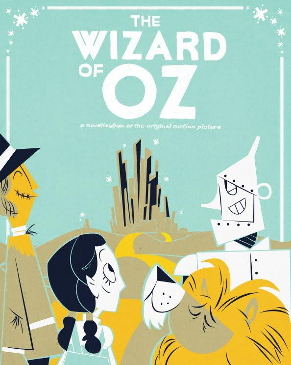

L. Frank Baum
L.弗兰克-鲍姆
Table of Contents
目录
Chapter I. - The Cyclone,
第一章--旋风。
Chapter II. - The Council with The Munchkins.
第二章。- 与蒙奇奇的议会。
Chapter III - How Dorothy saved the Scarecrow.
第三章 - 桃乐丝如何拯救稻草人。
Chapter IV. - The Road through the Forest.
第四章。- 穿越森林的道路。
Chapter V. - The Rescue of the Tin Woodman<<
第五章--铁皮人的救援<<
Chapter VI. - The Cowardly Lion.
第六章。- 胆小的狮子
Chapter VII. - The Journey to The Great Oz.
第七章。- 前往大奥兹国的旅程。
Chapter VIII. - The Deadly Poppy Field.
第八章。- 致命的罂粟花田。
Chapter IX. - The Queen of the Field Mice.
第九章。- 田鼠的女王
Chapter X. - The Guardian of the Gates.
第十章--大门的守护者。
Chapter XI. - The Wonderful Emerald City of OZ. Emerald City Oz.
第十一章。- 奇妙的绿宝石城奥兹国。翡翠城奥兹国。
Chapter XII. - Then 5carctv for the Wicked Witch.
第十二章。- 然后5carctv为邪恶的女巫。
Chapter XIII. - The Rescve
第十三章。- 复活节
Chapter XIV. - The Winged Morvkeys
第十四章。- 有翼的莫尔维基人
Chapter XV. - The Discovery of oz, The Terrible.
第十五章。- 发现可怕的盎司。
Chapter XVI. - The Magic Art of the Great Humbug.
第十六章。- 伟大的洪堡人的神奇艺术。
Chapter XVII. - How the Ballo was Launched.
第十七章。- Ballo是如何启动的。
Chapter XVIII. - Away to the south.
第十八章。- 走向南方。
Chapter XIX. - Attacked by the Fighting Trees.
第十九章。- 被战斗之树攻击。
Chapter XX. - ‘The Dainty China Country.
第二十章。- 娇滴滴的中国国家。
Chapter XXI. - The Lion Becomes The King of Beasts.
第二十一章。- 狮子成了百兽之王。
Chapter XXII. - The Country of the Quadlings
第二十二章。- 奎德林的国家
Chapter XXIII. - The Good Witch Grants Dorothy’s
第二十三章。- 好女巫答应了桃乐丝的要求
Home Again.
再次回家。
Endnotes
尾注
Inspired by The Wonderful Wizard of Oz
灵感来自于《绿野仙踪》（The Wonderful Wizard of Oz）。
Comments & Questions
评论和问题
Chapter I.
第一章。
The Cyclone,
旋风
Dorothy lived in the midst of the great Kansas rairies, with Uncle Henry, who as a farmer, and Aunt Em, who was the farmer’s wife. Their house was small, for the lumber to build it had to be carried by wagon many miles. There were four walls, a floor and a roof, which made one room; and this room contained a rusty looking cooking stove, a cupboard for the dishes, a table, three or four chairs, and the beds. Uncle Henry and Aunt Em had a big bed in one corner, and Dorothy a little bed in another corner. There was no garret at all, and no cellar—except a small hole, dug in the ground, called a cyclone cellar, where the family could go in case one of those great whirlwinds arose, mighty enough to crush any building in its path. It was reached by a trap-door in the middle of the floor, from which a ladder led down into the small, dark hole.
多萝西住在堪萨斯州的大草原上，与作为农民的亨利叔叔和作为农民妻子的艾姨一起生活。他们的房子很小，因为建造房子的木材需要用马车运到很多地方。有四面墙，一个地板和一个屋顶，这构成了一个房间；这个房间里有一个看起来很生锈的炉子，一个放餐具的柜子，一张桌子，三或四把椅子，还有床。亨利叔叔和艾姆婶婶在一个角落里有一张大床，多萝西在另一个角落里有一张小床。这里根本没有阁楼，也没有地窖--只有一个在地上挖的小洞，叫旋风地窖，万一有大旋风刮起，足以压垮沿途的任何建筑物，一家人就可以去那里。地板中间有一个活板门，从那里有一个梯子通向这个小而黑暗的洞。
When Dorothy stood in the doorway and looked around, she could see nothing but the great gray prairie on every side. Not a tree nor a house broke the broad sweep of flat country that reached the edge of the sky in all directions. The sun had baked the plowed land into a gray mass, with little cracks running through it. Even the grass was not green, for the sun had burned the tops of the long blades until they were the same gray color to be seen everywhere. Once the house had been painted, but the sun blistered the paint and the rains washed it away, and now the house was as dull and gray as everything else.1
当多萝西站在门口环顾四周时，除了四面的灰色大草原，她什么也看不到。没有一棵树，也没有一座房子，打破了四面八方伸向天空边缘的广阔平坦的土地。太阳把耕地烤成了灰色的一团，上面有一些小裂缝。甚至连草也不是绿色的，因为太阳已经把长长的草叶顶部烧焦了，直到它们变成了随处可见的相同灰色。房子曾经刷过漆，但太阳把漆泡坏了，雨水又把它冲走了，现在房子和其他东西一样，都是暗淡的灰色。1
When Aunt Em came there to live she was a young, pretty wife. The sun and wind had changed her, too. They had taken the sparkle from her eyes and left them a sober gray; they had taken the red from her cheeks and lips, and they were gray also. She was thin and gaunt, and never smiled, now. When Dorothy, who was an orphan, first came to her, Aunt Em had been so startled by the child’s laughter that she would scream and press her hand upon her heart whenever Dorothy’s merry voice reached her ears; and she still looked at the little girl with wonder that she could find anything to laugh at.
艾姨来到那里生活时，她是一个年轻漂亮的妻子。阳光和风也改变了她。它们夺走了她眼睛里的光芒，留下了沉郁的灰色；它们夺走了她脸颊和嘴唇上的红色，它们也变成了灰色。她瘦了，憔悴了，而且现在从不笑了。当身为孤儿的多萝西第一次来到她身边时，艾姨被孩子的笑声吓了一跳，以至于每当多萝西欢快的声音传到她的耳朵里时，她都会尖叫着用手按住自己的心脏；她仍然好奇地看着这个小女孩，她能找到任何可以笑的东西。
Uncle Henry never laughed. He worked hard from morning till night and did not know what joy was. He was gray also, from his long beard to his rough boots, and he looked stern and solemn, and rarely spoke.
亨利叔叔从未笑过。他从早到晚努力工作，不知道什么是快乐。他也是灰色的，从他的长胡子到他的粗糙的靴子，他看起来严厉而庄重，很少说话。
It was Toto that made Dorothy laugh, and saved her from growing as gray as her other surroundings. Toto was not gray; he was a little black dog, with long, silky hair and small black eyes that twinkled merrily on either side of his funny, wee nose. Toto played all day long, and Dorothy played with him, and loved him dearly.
是托托让多萝西笑了起来，使她不至于像她周围的人一样变得灰暗。托托不是灰色的，它是一只小黑狗，有着长长的、柔顺的毛发，一双黑色的小眼睛在它滑稽的小鼻子两边欢快地闪烁着。托托整天都在玩耍，多萝西也和它一起玩耍，并深深地爱着它。
To-day, however, they were not playing. Uncle Henry sat upon the door-step and looked anxiously at the sky, which was even grayer than usual. Dorothy stood in the door with Toto in her arms, and looked at the sky too. Aunt Em was washing the dishes.
然而，今天，他们没有玩。亨利叔叔坐在门口的台阶上，焦急地看着天空，天空比平时更灰暗了。多萝西抱着托托站在门口，也看了看天空。艾姨正在洗碗。
From the far north they heard a low wail of the wind, and Uncle Henry and Dorothy could see where the long grass bowed in waves before the coming storm. There now came a sharp whistling in the air from the south, and as they turned their eyes that way they saw ripples in the grass coming from that direction also.
从遥远的北方，他们听到了低沉的风声，亨利叔叔和多萝西可以看到长草在即将到来的暴风雨面前呈波浪状弯曲。现在从南方传来一阵尖锐的呼啸声，当他们把目光转向那边时，他们看到草地上的涟漪也来自那个方向。
Suddenly Uncle Henry stood up.
突然间，亨利叔叔站了起来。
“There’s a cyclone2 coming, Em,” he called to his wife; “I’ll go look after the stock.” Then he ran toward the sheds where the cows and horses were kept.
"有一场旋风2来了，"他叫他的妻子；"我去照看一下牲口。"然后他跑向饲养牛和马的棚子。
Aunt Em dropped her work and came to the door. One glance told her of the danger close at hand.
艾姨放下手中的工作，走到门口。一眼就告诉她危险近在眼前。
“Quick, Dorothy!” she screamed; “run for the cellar!”
"快，桃乐丝！"她尖叫道；"跑向地窖！"
Toto jumped out of Dorothy’s arms and hid under the bed, and the girl started to get him. Aunt Em, badly frightened, threw open the trap-door in the floor and climbed down the ladder into the small, dark hole. Dorothy caught Toto at last, and started to follow her aunt. When she was half way across the room there came a great shriek from the wind, and the house shook so hard that she lost her footing and sat down suddenly upon the floor.
托托从多萝西的怀里跳出来，躲在床底下，女孩开始去抓他。艾姆婶婶非常害怕，她推开了地板上的活板门，顺着梯子爬进了那个又小又黑的洞。多萝西终于抓住了托托，并开始跟着她的姨妈。当她走到房间的一半时，风中传来一声巨大的尖叫，房子剧烈摇晃，她失去了脚步，突然坐到了地上。
A strange thing then happened.
随后发生了一件奇怪的事情。
The house whirled around two or three times and rose slowly through the air. Dorothy felt as if she were going up in a balloon.
房子旋转了两三圈，在空中慢慢上升。多萝西觉得自己好像坐着气球在上升。
The north and south winds met where the house stood, and made it the exact center of the cyclone. In the middle of a cyclone the air is generally still, but the great pressure of the wind on every side of the house raised it up higher and higher, until it was at the very top of the cyclone; and there it remained and was carried miles and miles away as easily as you could carry a feather.
南北风在房子的位置相遇，使它成为旋风的确切中心。在旋风的中间，空气通常是静止的，但是风在房子每一边的巨大压力使它越升越高，直到它处于旋风的最顶端；它留在那里，被带到数英里之外，就像你可以携带一根羽毛一样容易。
It was very dark, and the wind howled horribly around her, but Dorothy found she was riding quite easily. After the first few whirls around, and one other time when the house tipped badly, she felt as if she were being rocked gently, like a baby in a cradle.
天很黑，风在她身边可怕地呼啸着，但多萝西发现她骑得很轻松。在最初的几次旋转之后，还有一次房子严重倾斜的时候，她觉得自己好像被轻轻地摇晃着，就像摇篮里的婴儿。
Toto did not like it. He ran about the room, now here, now there, barking loudly; but Dorothy sat quite still on the floor and waited to see what would happen.
托托并不喜欢这样。他在房间里跑来跑去，一会儿在这里，一会儿在那里，大声地吠叫着；但多萝西却一动不动地坐在地板上，等待着看会发生什么。
Once Toto got too near the open trap-door, and fell in; and at first the little girl thought she had lost him. But soon she saw one of his ears sticking up through the hole, for the strong pressure of the air was keeping him up so that he could not fall. She crept to the hole, caught Toto by the ear, and dragged him into the room again; afterward closing the trap-door so that no more accidents could happen.
有一次，托托离打开的活板门太近了，掉了进去；起初，小女孩以为她失去了他。但很快她就看到他的一只耳朵从洞里伸了出来，因为空气的强大压力使他保持着，所以他不会掉下去。她蹑手蹑脚地走到洞口，抓住托托的耳朵，又把他拖进了房间；然后把活板门关上，以免再发生意外。
Hour after hour passed away, and slowly Dorothy got over her fright; but she felt quite lonely, and the wind shrieked so loudly all about her that she nearly became deaf. At first she had wondered if she would be dashed to pieces when the house fell again; but as the hours passed and nothing terrible happened, she stopped worrying and resolved to wait calmly and see what the future would bring. At last she crawled over the swaying floor to her bed, and lay down upon it; and Toto followed and lay down beside her.
一个小时又一个小时过去了，多萝西慢慢地摆脱了惊吓；但她感到相当孤独，风在她周围大声尖叫，她几乎成了聋子。起初，她想知道当房子再次倒塌时，她是否会被砸成碎片；但随着时间的推移，没有任何可怕的事情发生，她不再担心，决心冷静地等待，看看未来会发生什么。最后，她从摇晃的地板上爬到床上，躺在床上；托托也跟着躺在她身边。
She caught Toto by the ear.
她抓住多多的耳朵。
In spite of the swaying of the house and the wailing of the wind, Dorothy soon closed her eyes and fell fast asleep.
尽管房子在摇晃，风在呼啸，多萝西很快就闭上了眼睛，很快睡着了。
Chapter II.
第二章。
The Council with The Munchkins.
理事会与 "蒙奇金"。
She was awakened by a shock, so sudden and severe that if Dorothy had not been lying on the soft bed she might have been hurt. As it was, the jar made her catch her breath and wonder what had happened; and Toto put his cold little nose nto her face and whined dismally. Dorothy sat up and noticed that the house was not moving; nor was it dark, for the bright sunshine came in at the window, flooding the little room. She sprang from her bed and with Toto at her heels ran and opened the door.
她被一股冲击力惊醒，如此突然和严重，如果多多没有躺在柔软的床上，她可能已经受伤了。果不其然，这个罐子让她喘不过气来，不知道发生了什么事；托托把他冰冷的小鼻子凑到她的脸上，沮丧地抱怨着。多萝西坐起来，注意到房子没有动；也不黑，因为明亮的阳光从窗口射进来，淹没了这个小房间。她从床上跳起来，带着托托跟在她后面，跑去开门。
The little girl gave a cry of amazement and looked about her, her eyes growing bigger and bigger at the wonderful sights she saw.
小女孩发出一声惊奇的叫声，环顾四周，她的眼睛因为看到的奇妙景象而变得越来越大。
The cyclone had set the house down, very gently—for a cyclone—in the midst of a country of marvelous beauty. There were lovely patches of green sward all about, with stately trees bearing rich and luscious fruits. Banks of gorgeous flowers were on every hand, and birds with rare and brilliant plumage sang and fluttered in the trees and bushes. A little way off was a small brook, rushing and sparkling along between green banks, and murmuring in a voice very grateful to a little girl who had lived so long on the dry, gray prairies.3
旋风把房子吹倒了，对于旋风来说，它非常温和地落在了一个美丽无比的国家中间。到处都是可爱的绿色草地，庄严的树木结着丰硕的果实。每一棵树上都开满了艳丽的花朵，羽毛鲜艳的鸟儿在树上和灌木丛中唱着歌、飞着舞。稍远处有一条小溪，在绿色的河岸之间奔流不息，波光粼粼，对一个长期生活在干燥、灰暗的草原上的小女孩来说，声音非常感激。3
While she stood looking eagerly at the strange and beautiful sights, she noticed coming toward her a group of the queerest people she had ever seen. They were not as big as the grown folk she had always been used to; but neither were they very small. In fact, they seemed about as tall as Dorothy, who was a well-grown child for her age, although they were, so far as looks go, many years older.
当她站在那里热切地看着这些奇怪而美丽的景象时，她注意到有一群她所见过的最古怪的人向她走来。他们不像她一直习惯的那些成年人那样高大；但也不是很矮小。事实上，他们似乎和多萝西一样高，而多萝西在她这个年龄段是个成熟的孩子，尽管从外观上看，他们比她大很多岁。
Three were men and one a woman, and all were oddly dressed. They wore round hats that rose to a small point a foot above their heads, with little bells around the brims that tinkled sweetly as they moved. The hats of the men were blue; the little woman’s hat was white,4 and she wore a white gown that hung in plaits from her shoulders; over it were sprinkled little stars that glistened in the sun like diamonds. The men were dressed in blue, of the same shade as their hats, and wore well polished boots with a deep roll of blue at the tops. The men, Dorothy thought, were about as old as Uncle Henry, for two of them had beards. But the little woman was doubtless much older: her face was covered with wrinkles, her hair was nearly white, and she walked rather stiffly.
三个是男人，一个是女人，都穿着古怪。他们戴着圆圆的帽子，帽子升到离头顶一英尺高的地方，帽檐上挂着小铃铛，随着他们的移动发出甜美的叮当声。男人的帽子是蓝色的；小女人的帽子是白色的。4她穿着一件白色的长袍，在肩上打着辫子；上面撒着小星星，在阳光下像钻石一样闪闪发光。男人们穿着蓝色的衣服，和他们的帽子一样的颜色，穿着擦得很好的靴子，上面有一圈深蓝色。多萝西认为，这些人的年龄和亨利叔叔差不多，因为他们中的两个人留着胡子。但那个小女人无疑要老得多：她的脸上布满了皱纹，头发几乎全白了，而且走路相当僵硬。
When these people drew near the house where Dorothy was standing in the doorway, they paused and whispered among themselves, as if afraid to come farther. But the little old woman walked up to Dorothy, made a low bow and said, in a sweet voice,
当这些人走到多萝西站在门口的房子附近时，他们停了下来，相互之间窃窃私语，似乎不敢走远。但那个小老太太走到多萝西面前，做了一个低的鞠躬，用甜美的声音说。
“You are welcome, most noble Sorceress, to the land of the Munchkins. We are so grateful to you for having killed the wicked Witch of the East, and for setting our people free from bondage.”
"欢迎你，最尊贵的女巫，来到蒙奇金人的土地。我们非常感谢你杀死了邪恶的东方女巫，并使我们的人民摆脱了束缚。"
Dorothy listened to this speech with wonder. What could the little woman possibly mean by calling her a sorceress, and saying she had killed the wicked Witch of the East? Dorothy was an innocent, harmless little girl, who had been carried by a cyclone many miles from home; and she had never killed anything in all her life.
多萝西好奇地听着这番话。这个小女人说她是女巫，并说她杀死了邪恶的东方女巫，这可能是什么意思？多萝西是一个无辜的、无害的小女孩，她被旋风带到离家很远的地方；而且她一生中从未杀过任何东西。
But the little woman evidently expected her to answer; so Dorothy said, with hesitation,
但这个小女人显然希望她能回答；所以多萝西犹豫着说。
“You are very kind; but there must be some mistake. I have not killed anything.”
"你真好；但一定有什么误会。我没有杀任何东西。"
“Your house did, anyway,” replied the little old woman, with a laugh; “and that is the same thing. See!” she continued, pointing to the corner of the house; “there are her two toes still sticking out from under a block of wood.”
"反正你的房子是这样，"小老太太笑着回答；"这也是一样的。看！"她继续说，指着房子的一角；"她的两个脚趾还从一块木头下面伸出来。"
Dorothy looked and gave a little cry of fright. There, indeed, just under the corner of the great beam the house rested on, two feet were sticking out, shod in silver shoes with pointed toes.
多萝西看了看，吓得小声叫了起来。的确，就在房子所在的大梁的拐角处，伸出了两只脚，穿着银色的尖头鞋。
“Oh, dear! oh, dear!” cried Dorothy, clasping her hands together in dismay; “the house must have fallen on her. What ever shall we do?”
"哦，亲爱的！哦，亲爱的！"多萝西哭着说，她惊愕地双手合十；"房子肯定倒在她身上了。我们该怎么办呢？"
“There is nothing to be done,” said the little woman, calmly.
"没有什么可做的，"小女人平静地说。
“But who was she?” asked Dorothy.
"但她是谁？"多萝西问。
“She was the wicked Witch of the East, as I said,” answered the little woman. “She has held all the Munchkins in bondage for many years, making them slave for her night and day. Now they are all set free, and are grateful to you for the favour.”
"她是东方的邪恶女巫，正如我所说的，"小女人回答。"她把所有的蒙奇金人都束缚了很多年，让他们日夜为她做奴隶。现在他们都获得了自由，并对你的恩惠表示感谢。"
“Who are the Munchkins?” enquired Dorothy.
"谁是Munchkins？"多萝西问道。
“They are the people who live in this land of the East, where the wicked Witch ruled.”
"他们是生活在东方这块土地上的人，邪恶的女巫在那里统治。"
“Are you a Munchkin?” asked Dorothy.
"你是蒙奇金吗？"多萝西问。
“No; but I am their friend, although I live in the land of the North. When they saw the Witch of the East was dead the Munchkins sent a swift messenger to me, and I came at once. I am the Witch of the North.”
"不；但我是他们的朋友，虽然我住在北方的土地上。当他们看到东方女巫死了，蒙奇金人就派人迅速来找我，我马上就来了。我就是北方的女巫。"
“Oh, gracious!” cried Dorothy; “are you a real witch?”
"哦，天哪！"多萝西叫道；"你是一个真正的女巫吗？"
“Yes, indeed;” answered the little woman. “But I am a good witch, and the people love me. I am not as powerful as the wicked Witch was who ruled here, or I should have set the people free myself.”
"是的，确实如此；"小女人回答。"但我是个好女巫，人们都喜欢我。我不像统治这里的邪恶女巫那样强大，否则我应该自己让人们自由。"
“But I thought all witches were wicked,”5 said the girl, who was half frightened at facing a real witch.
"但我以为所有的女巫都是邪恶的，"5女孩说，她面对一个真正的女巫感到半点害怕。
“Oh, no; that is a great mistake. There were only four witches in all the Land of Oz, and two of them, those who live in the North and the South, are good witches. I know this is true, for I am one of them myself, and cannot be mistaken. Those who dwelt in the East and the West were, indeed, wicked witches; but now that you have killed one of them, there is but one wicked Witch in all the Land of Oz—the one who lives in the West.”
"哦，不；这是个大错误。整个奥兹国只有四个女巫，其中两个，即住在北方和南方的女巫，是好女巫。我知道这是真的，因为我自己就是她们中的一员，不会错的。那些住在东部和西部的人确实是邪恶的女巫；但现在你已经杀了他们中的一个，在整个奥兹国只有一个邪恶的女巫--住在西部的那个。"
“I am the Witch of the North.”
"我是北方的女巫。"
“But,” said Dorothy, after a moment’s thought, “Aunt Em has told me that the witches were all dead—years and years ago.”
"但是，"多萝西说，经过片刻的思考，"艾姨告诉我，女巫们都已经死了--很多年以前。"
“Who is Aunt Em?” inquired the little old woman.
"谁是艾姨？"小老太太问道。
“She is my aunt who lives in Kansas, where I came from.”
"她是我的姨妈，住在堪萨斯州，我来自那里。"
The Witch of the North seemed to think for a time, with her head bowed and her eyes upon the ground. Then she looked up and said,
北方的女巫似乎思考了一段时间，她低着头，眼睛看着地面。然后她抬起头来说。
“I do not know where Kansas is, for I have never heard that country mentioned before. But tell me, is it a civilized country?”
"我不知道堪萨斯在哪里，因为我以前从未听人提起过那个国家。但告诉我，它是一个文明的国家吗？"
“Oh, yes;” replied Dorothy.
"哦，是的；"多萝西回答。
“Then that accounts for it. In the civilized countries I believe there are no witches left; nor wizards, nor sorceresses, nor magicians. But, you see, the Land of Oz has never been civilized, for we are cut off from all the rest of the world. Therefore we still have witches and wizards amongst us.”
"那就说明了这一点。在文明国家，我相信已经没有女巫了；也没有巫师，没有女巫，没有魔术师。但是，你看，奥兹国从未被文明化，因为我们与世界上所有其他地方隔绝。因此，我们中间仍然有女巫和魔法师。"
“Who are the Wizards?” asked Dorothy.
"谁是巫师？"多萝西问。
“Oz himself is the Great Wizard,” answered the Witch, sinking her voice to a whisper. “He is more powerful than all the rest of us together. He lives in the City of Emeralds.”
"奥兹国自己就是大巫师，"女巫回答说，把声音沉到了耳语。"他比我们所有人加起来还要强大。他住在绿宝石之城。"
Dorothy was going to ask another question, but just then the Munchkins, who had been standing silently by, gave a loud shout and pointed to the corner of the house where the Wicked Witch had been lying.
多萝西还想再问一个问题，但就在这时，一直静静站在旁边的小矮人发出了一声大叫，并指着房子的角落，邪恶女巫就躺在那里。
“What is it?” asked the little old woman; and looked, and began to laugh. The feet of the dead Witch had disappeared entirely and nothing was left but the silver shoes.
"这是什么？"小老太太问道；看了看，开始笑了。死去的女巫的脚已经完全消失了，除了银色的鞋子，什么都没有留下。
“She was so old,” explained the Witch of the North, “that she dried up quickly in the sun. That is the end of her. But the silver shoes are yours, and you shall have them to wear.” She reached down and picked up the shoes, and after shaking the dust out of them handed them to Dorothy.
"她太老了，"北方女巫解释说，"她在太阳下很快就干枯了。这就是她的结局。但这双银鞋是你的，你可以穿上它。"她伸手拿起鞋子，抖了抖上面的灰尘后，把它递给了多萝西。
“The Witch of the East was proud of those silver shoes,” said one of the Munchkins; “and there is some charm connected with them; but what it is we never knew.”
"东方女巫为那双银鞋感到骄傲，"其中一个小矮人说；"有一些魅力与它们有关；但它是什么我们从来不知道。"
Dorothy carried the shoes into the house and placed them on the table. Then she came out again to the Munchkins and said,
多萝西把鞋子搬进屋里，放在桌子上。然后她又出来对蒙奇奇们说。
“I am anxious to get back to my Aunt and Uncle, for I am sure they will worry about me. Can you help me find my way?”
"我急于回到我姨妈和姨夫身边，因为我确信他们会担心我。你能帮我找到路吗？"
The Munchkins and the Witch first looked at one another, and then at Dorothy, and then shook their heads.
芒奇金人和女巫先是互相看了看，又看了看多萝西，然后摇了摇头。
“At the East, not far from here,” said one, “there is a great desert, and none could live to cross it.”
"在东方，离这里不远，"一个人说，"有一个大沙漠，没有人能够活着穿过它。"
“It is the same at the South,” said another, “for I have been there and seen it. The South is the country of the Quadlings.”
"在南方也是如此，"另一个人说，"因为我去过那里，看到了。南方是Quadlings的国家。"
“I am told,” said the third man, “that it is the same at the West. And that country, where the Winkies live, is ruled by the wicked Witch of the West, who would make you her slave if you passed her way.”
"我被告知，"第三个人说，"在西部也是如此。而温克人居住的那个国家，是由邪恶的西方女巫统治的，如果你通过她的方式，她会让你成为她的奴隶。"
“The North is my home,” said the old lady, “and at its edge is the same great desert that surrounds this land of Oz. I’m afraid, my dear, you will have to live with us.”
"北方是我的家，"老妇人说，"在它的边缘，也是环绕着奥兹国的那片大沙漠。恐怕，我亲爱的，你将不得不和我们一起生活。"
Dorothy began to sob, at this, for she felt lonely among all these strange people. Her tears seemed to grieve the kind-hearted Munchkins, for they immediately took out their handkerchiefs and began to weep also. As for the little old woman, she took off her cap and balanced the point on the end of her nose, while she counted “one, two, three” in a solemn voice. At once the cap changed to a slate, on which was written in big, white chalk marks:
多萝西开始抽泣，因为她在这些陌生的人中感到很孤独。她的眼泪似乎让那些好心的蒙奇金人很伤心，因为他们马上拿出手帕，也开始哭泣。至于那个小老太太，她摘下帽子，把帽子尖放在她的鼻端，同时用庄重的声音数着 "一、二、三"。帽子立刻变成了一块石板，上面写着大大的白色粉笔字。
“LET DOROTHY GO TO THE CITY OF EMERALDS.”
"让多萝西去绿宝石之城。"
The little old woman took the slate from her nose, and, having read the words on it, asked,
小老太太从她的鼻子上取下石板，看了上面的字后，问道。
“Is your name Dorothy, my dear?”
"你叫多萝西吗，我亲爱的？"
“Yes,” answered the child, looking up and drying her tears.
"是的，"孩子回答，抬起头来，擦干眼泪。
“Then you must go to the City of Emeralds. Perhaps Oz will help you.”
"那么你必须去绿宝石之城。也许奥兹会帮助你。"
“Where is this City?” asked Dorothy.
"这个城市在哪里？"多萝西问。
“It is exactly in the center of the country, and is ruled by Oz, the Great Wizard I told you of.”
"它正好在国家的中心，由我告诉你的大魔法师奥兹统治。"
“Is he a good man?” enquired the girl, anxiously.
"他是个好人吗？"女孩焦急地问道。
“He is a good Wizard. Whether he is a man or not I cannot tell, for I have never seen him.”
"他是个好巫师。他是不是一个人，我不能说，因为我从未见过他。"
“How can I get there?” asked Dorothy
"我怎么能去那里？"多萝西问道。
“You must walk. It is a long journey, through a country that is sometimes pleasant and sometimes dark and terrible. However, I will use all the magic arts I know of to keep you from harm.”
"你必须步行。这是一段漫长的旅程，穿过一个有时令人愉快、有时黑暗可怕的国家。然而，我将使用我所知道的所有魔法，使你们免受伤害。"
“Won’t you go with me?” pleaded the girl, who had begun to look upon the little old woman as her only friend.
"你不和我一起去吗？"女孩恳求道，她已经开始把这个小老太太看成是她唯一的朋友。
“No, I cannot do that,” she replied; “but I will give you my kiss, and no one will dare injure a person who has been kissed by the Witch of the North.”
"不，我不能这样做，"她回答说；"但我会给你我的吻，没有人敢伤害一个被北方女巫吻过的人。"
She came close to Dorothy and kissed her gently on the forehead. Where her lips touched the girl they left a round, shining mark, as Dorothy found out soon after.
她走近多萝西，在她的额头上轻轻地吻了一下。她的嘴唇接触到女孩的地方留下了一个圆圆的、闪亮的印记，桃乐丝很快就发现了这一点。
“The road to the City of Emeralds is paved with yellow brick,”6 said the Witch; “so you cannot miss it. When you get to Oz do not be afraid of him, but tell your story and ask him to help you. Good-bye, my dear.”
"通往绿宝石城的路是用黄砖铺成的。6巫婆说；"所以你不能错过它。当你到了奥兹国时，不要害怕他，而是讲出你的故事，请他帮助你。再见了，我亲爱的。"
The three Munchkins bowed low to her and wished her a pleasant journey, after which they walked away through the trees. The Witch gave Dorothy a friendly little nod, whirled around on her left heel three times, and straightway disappeared, much to the surprise of little Toto, who barked after her loudly enough when she had gone, because he had been afraid even to growl while she stood by.
三个蒙奇金人向她低头鞠躬，祝她旅途愉快，之后他们穿过树林走了。女巫向多萝西友好地点点头，在她的左脚跟前转了三圈，然后直接消失了，这让小托托非常惊讶，她走后，小托托在她身后大声地叫着，因为她站在旁边时，它甚至不敢吼叫。
But Dorothy, knowing her to be a witch, had expected her to disappear in just that way, and was not surprised in the least.
但多萝西知道她是个女巫，早就料到她会以这种方式消失，所以丝毫不觉得奇怪。
Chapter III
第三章
How Dorothy saved the Scarecrow.
桃乐丝如何拯救稻草人。
WhenDorothy was left alone she began to feel ungry. So she went to the cupboard and cut herself some bread, which she spread with butter. She gave some to Toto, and taking a pail from the shelf she carried t down to the little brook and filled it with clear, sparkling water. Toto ran over to the trees and began to bark at the birds sitting there. Dorothy went to get him, and saw such delicious fruit hanging from the branches that she gathered some of it, finding it just what she wanted to help out her breakfast.
当多萝西被单独留下时，她开始感到不高兴。于是她走到橱柜前，自己切了一些面包，涂上黄油。她给了多多一些，然后从架子上拿了一个桶，把它带到小河边，装满了清澈的水。托托跑到树上，开始对着坐在那里的鸟儿吠叫。多萝西去找他，看到树枝上挂着如此美味的水果，她收集了一些，发现这正是她想要的，可以帮助她的早餐。
Then she went back to the house, and having helped herself and Toto to a good drink of the cool, clear water, she set about making ready for the journey to the City of Emeralds.
然后她回到屋里，帮自己和托托喝了一口清凉的水后，她开始为前往绿宝石城的旅程做准备。
Dorothy had only one other dress, but that happened to be clean and was hanging on a peg beside her bed. It was gingham, with checks of white and blue7 and although the blue was somewhat faded with many washings, it was still a pretty frock. The girl washed herself carefully, dressed herself in the clean gingham, and tied her pink sunbonnet on her head. She took a little basket and filled it with bread from the cupboard, laying a white cloth over the top. Then she looked down at her feet and noticed how old and worn her shoes were.
多萝西只有一件衣服，但那件衣服恰好是干净的，挂在她床边的一个木桩上。它是格子布的，有白色和蓝色的格子7虽然蓝色在多次洗涤后有些褪色，但它仍然是一件漂亮的连衣裙。女孩仔细地洗了澡，穿上干净的格子布，把粉红色的遮阳帽系在头上。她拿起一个小篮子，从橱柜里装上面包，在上面铺上一块白布。然后她低头看了看自己的脚，发现她的鞋子很旧很破。
“They surely will never do for a long journey, Toto,” she said. And Toto looked up into her face with his little black eyes and wagged his tail to show he knew what she meant.
"她说："它们肯定不适合长途旅行，托托。多多用他的小黑眼看着她的脸，摇着尾巴，表示他知道她的意思。
At that moment Dorothy saw lying on the table the silver shoes that had belonged to the Witch of the East.
这时，多萝西看到桌子上躺着属于东方女巫的银鞋。
“I wonder if they will fit me,” she said to Toto. “They would be just the thing to take a long walk in, for they could not wear out.”
"我想知道它们是否适合我，"她对多多说。"穿上它们就可以走很远的路了，因为它们不会磨损。"
She took off her old leather shoes and tried on the silver ones, which fitted her as well as if they had been made for her.8
她脱下她的旧皮鞋，试穿银色的鞋子，这双鞋很适合她，就像为她量身定做一样。8
Finally she picked up her basket.
最后她拿起了她的篮子。
“Come along, Toto,” she said, “we will go to the Emerald City and ask the great Oz how to get back to Kansas again.”
"走吧，托托，"她说，"我们要去翡翠城，问问伟大的奥兹如何再回到堪萨斯。"
She closed the door, locked it, and put the key carefully in the pocket of her dress. And so, with Toto trotting along soberly behind her, she started on her journey.
她关上了门，锁上了门，并把钥匙小心翼翼地放进了衣服的口袋。就这样，托托在她身后清醒地小跑着，她开始了她的旅程。
There were several roads near by, but it did not take her long to find the one paved with yellow brick.9 Within a short time she was walking briskly toward the Emerald City, her silver shoes tinkling merrily on the hard, yellow roadbed. The sun shone bright and the birds sang sweet and Dorothy did not feel nearly as bad as you might think a little girl would who had been suddenly whisked away from her own country and set down in the midst of a strange land.
附近有几条路，但她没花多长时间就找到了用黄砖铺成的那条路。9在很短的时间内，她就轻快地走向翡翠城，她的银鞋在坚硬的黄色路基上欢快地叮当响。阳光明媚，鸟儿欢唱，桃乐丝并没有像你想象的那样，一个小女孩突然被从她自己的国家带走，落在一片陌生的土地上，感觉很糟糕。
She was surprised, as she walked along, to see how pretty the country was about her. There were neat fences at the sides of the road, painted a dainty blue color, and beyond them were fields of grain and vegetables in abundance. Evidently the Munchkins were good farmers and able to raise large crops. Once in a while she would pass a house, and the people came out to look at her and bow low as she went by; for everyone knew she had been the means of destroying the wicked witch and setting them free from bondage. The Houses of the Munchkins were odd looking dwellings, for each was round, with a big dome for a roof. All were painted blue, for in this country of the East blue was the favorite color.
当她走在路上时，她惊讶地看到她周围的乡村是如此美丽。道路两旁有整齐的栅栏，被涂成可爱的蓝色，栅栏外是丰收的谷物和蔬菜田。显而易见，蒙奇金人是个好农民，能够种植大量作物。偶尔她会经过一栋房子，当她经过时，人们会出来看她并低头鞠躬；因为每个人都知道她是消灭邪恶女巫的手段，使他们摆脱了束缚。芒奇金人的房子看起来很奇怪，因为每个房子都是圆形的，有一个大圆顶作为屋顶。所有的房子都被漆成蓝色，因为在这个东方国家，蓝色是最受欢迎的颜色。
Towards evening, when Dorothy was tired with her long walk and began to wonder where she should pass the night, she came to a house rather larger than the rest. On the green lawn before it many men and women were dancing. Five little fiddlers played as loudly as possible and the people were laughing and singing, while a big table near by was loaded with delicious fruits and nuts, pies and cakes, and many other good things to eat.
接近傍晚时分，当多萝西走得很累，开始想在哪里过夜时，她来到了一座比其他地方大的房子。在它面前的绿色草坪上，许多男人和女人正在跳舞。五个小提琴手尽可能大声地演奏，人们欢笑着唱歌，而旁边的一张大桌子上摆满了美味的水果和坚果、馅饼和蛋糕，还有许多其他好吃的东西。
The people greeted Dorothy kindly, and invited her to supper and to pass the night with them; for this was the home of one of the richest Munchkins in the land, and his friends were gathered with him to celebrate their freedom from the bondage of the wicked witch.
人们亲切地欢迎多萝西，并邀请她去吃晚饭，和他们一起过夜；因为这里是这片土地上最富有的蒙奇金人之一的家，他的朋友们和他聚集在一起，庆祝他们摆脱邪恶女巫的束缚。
Dorothy ate a hearty supper and was waited upon by the rich Munchkin himself, whose name was Boq. Then she sat down upon a settee and watched the people dance.
多萝西吃了一顿丰盛的晚餐，并得到了富翁孟克本人的伺候，他的名字叫博克。然后她坐在一张沙发上，看着人们跳舞。
When Boq saw her silver shoes he said,
当博克看到她的银鞋时，他说。
“You must be a great sorceress.”
"你一定是个伟大的女巫。"
“Why?” asked the girl.
"为什么？"女孩问。
“Because you wear silver shoes and have killed the wicked witch. Besides, you have white in your frock, and only witches and sorceresses wear white.”
"因为你穿的是银鞋，而且杀死了邪恶的女巫。此外，你的连衣裙是白色的，而只有女巫和女魔法师才穿白色。"
“My dress is blue and white checked,” said Dorothy, smoothing out the wrinkles in it.
"我的衣服是蓝白相间的格子，"桃乐丝说，抚平了衣服上的褶皱。
“It is kind of you to wear that,” said Boq. “Blue is the color of the Munchkins, and white is the witch color; so we know you are a friendly witch.”
"你穿这样的衣服真好，"博克说。"蓝色是蒙奇奇的颜色，白色是女巫的颜色；所以我们知道你是一个友好的女巫。"
Dorothy did not know what to say to this, for all the people seemed to think her a witch, and she knew very well she was only an ordinary little girl who had come by the chance of a cyclone into a strange land.
多萝西不知道该怎么说，因为所有的人似乎都认为她是个女巫，而她很清楚自己只是一个普通的小女孩，在旋风的作用下来到了一个陌生的地方。
When she had tired watching the dancing, Boq led her into the house, where he gave her a room with a pretty bed in it. The sheets were made of blue cloth, and Dorothy slept soundly in them till morning, with Toto curled up on the blue rug beside her.
当她看累了舞蹈时，博克把她领进屋里，在那里他给她一个房间，里面有一张漂亮的床。床单是用蓝布做的，多萝西在里面睡得很香，一直睡到早上，托托蜷缩在她身边的蓝地毯上。
She ate a hearty breakfast, and watched a wee Munchkin baby, who played with Toto and pulled his tail and crowed and laughed in a way that greatly amused Dorothy. Toto was a fine curiosity to all the people, for they had never seen a dog before.
她吃了一顿丰盛的早餐，看着一个小蒙奇奇的孩子，他和托托一起玩耍，拉着他的尾巴，啼哭着，笑得很开心，这让多萝西很开心。托托对所有的人来说都是一个很好的好奇心，因为他们以前从未见过狗。
“How far is it to the Emerald City?” the girl asked.
"到翡翠城还有多远？"女孩问。
“I do not know,” answered Boq, gravely, “for I have never been there. It is better for people to keep away from Oz, unless they have business with him. But it is a long way to the Emerald City, and it will take you many days. The country here is rich and pleasant, but you must pass through rough and dangerous places before you reach the end of your journey.”
"我不知道，"博克严肃地回答，"因为我从未去过那里。人们最好远离奥兹，除非他们与他有生意往来。但去翡翠城的路很远，要花很多天。这里的国家富饶而愉快，但在你到达旅程的终点之前，你必须经过崎岖和危险的地方。"
“You must be a great sorceress.”
"你一定是个伟大的女巫。"
This worried Dorothy a little, but she knew that only the great Oz could help her get to Kansas again, so she bravely resolved not to turn back.
这让多萝西有点担心，但她知道只有伟大的奥兹国才能帮助她再次到达堪萨斯，所以她勇敢地决定不回头。
She bade her friends good-bye, and again started along the road of yellow brick. When she had gone several miles she thought she would stop to rest, and so climbed to the top of the fence beside the road and sat down. There was a great cornfield beyond the fence, and not far away she saw a Scarecrow, placed high on a pole to keep the birds from the ripe corn.
她向她的朋友们告别，再次沿着黄砖路出发。当她走了几英里后，她想停下来休息一下，于是爬到路边的栅栏顶上坐下来。栅栏外有一大片玉米地，在不远处她看到了一个稻草人，它被高高地放在一根杆子上，以防止鸟儿吃到成熟的玉米。
Dorothy leaned her chin upon her hand and gazed thoughtfully at the Scarecrow. Its head was a small sack stuffed with straw, with eyes, nose and mouth painted on it to represent a face. An old, pointed blue hat, that had belonged to some Munchkin, was perched on this head, and the rest of the figure was a blue suit of clothes, worn and faded, which had also been stuffed with straw. On the feet were some old boots with blue tops, such as every man wore in this country, and the figure was raised above the stalks of corn by means of the pole stuck up its back.
多萝西把下巴靠在手上，若有所思地注视着稻草人。它的头是一个塞满稻草的小袋子，上面画着眼睛、鼻子和嘴，代表一张脸。头上戴着一顶属于某个小矮人的旧的、尖尖的蓝色帽子，其余部分是一套蓝色的衣服，破旧褪色，里面也塞满了稻草。脚上是一双蓝色的旧靴子，就像这个国家每个人都穿的那样，而这个人物通过插在其背上的杆子被抬到了玉米秆上面。
While Dorothy was looking earnestly into the queer, painted face of the Scarecrow, she was surprised to see one of the eyes slowly wink at her. She thought she must have been mistaken, at first, for none of the scarecrows in Kansas ever wink; but presently the figure nodded its head to her in a friendly way. Then she climbed down from the fence and walked up to it, while Toto ran around the pole and barked.
当多萝西认真地看着稻草人那张怪异的脸时，她惊讶地看到其中一只眼睛慢慢地对她眨眼。她起初以为自己一定是看错了，因为在堪萨斯州没有一个稻草人会眨眼；但很快，这个人物向她友好地点了点头。然后她从栅栏上爬下来，走到它面前，而托托则绕着杆子跑来跑去地叫。
“Good day,” said the Scarecrow, in a rather husky voice.
"日安，"稻草人用相当沙哑的声音说。
“Did you speak?” asked the girl, in wonder.
"你说话了吗？"女孩惊讶地问。
“Certainly,” answered the Scarecrow; “how do you do?”
"当然，"稻草人回答说；"你好吗？"
“I’m pretty well, thank you,” replied Dorothy, politely; “how do you do?”
"我很好，谢谢你，"多萝西礼貌地回答；"你好吗？"
“I’m not feeling well,” said the Scarecrow, with a smile, “for it is very tedious being perched up here night and day to scare away crows.”
"我不舒服，"稻草人笑着说，"因为夜以继日地栖息在这里吓走乌鸦是非常乏味的。"
Dorothy gazed thoughtfully at the Scarecrow.
多萝西若有所思地凝视着稻草人。
“Can’t you get down?” asked Dorothy.
"你不能下来吗？"多萝西问。
“No, for this pole is stuck up my back. If you will please take away the pole I shall be greatly obliged to you.”
"不，因为这根杆子插在我的背上。如果你能把杆子拿走，我将对你感激不尽。"
Dorothy reached up both arms and lifted the figure off the pole; for, being stuffed with straw, it was quite light.
多萝西伸出两只手，把这个人物从杆子上抬起来；因为它是用稻草塞住的，所以很轻。
“Thank you very much,” said the Scarecrow, when he had been set down on the ground. “I feel like a new man.”
"非常感谢你，"当稻草人被放在地上时，他说。"我觉得自己像个新的人。
Dorothy was puzzled at this, for it sounded queer to hear a stuffed man speak, and to see him bow and walk along beside her.
多萝西对此感到疑惑，因为听到一个毛绒绒的人说话，看到他鞠躬并走在她身边，这听起来很奇怪。
“Who are you?” asked the Scarecrow, when he had stretched himself and yawned, “and where are you going?”
"你是谁？"当稻草人伸了个懒腰并打了个哈欠后，他问道，"你要去哪里？"
“My name is Dorothy,” said the girl, “and I am going to the Emerald City, to ask the great Oz to send me back to Kansas.”
"我叫多萝西，"女孩说，"我要去翡翠城，请求伟大的奥兹国送我回堪萨斯。"
“Where is the Emerald City?” he enquired; “and who is Oz?”
"翡翠城在哪里？"他问道；"谁是奥兹国？"
“Why, don’t you know?” she returned, in surprise.
"为什么，你不知道吗？"她惊讶地回道。
“No, indeed; I don’t know anything. You see, I am stuffed, so I have no brains at all,” he answered, sadly.
"不，真的；我什么都不知道。你看，我被塞满了，所以我根本就没有脑子，"他悲伤地回答。
“Oh,” said Dorothy; “I’m awfully sorry for you.”
"哦，"多萝西说；"我为你感到非常遗憾。"
“Do you think,” he asked, “if I go to the Emerald City with you, that the great Oz would give me some brains?”
"你认为，"他问，"如果我和你一起去翡翠城，伟大的奥兹会给我一些头脑吗？"
“I cannot tell,” she returned; “but you may come with me, if you like. If Oz will not give you any brains you will be no worse off than you are now.”
"我不能说，"她回道；"但如果你愿意，你可以和我一起去。如果奥兹不给你任何脑子，你也不会比现在更糟。"
“That is true,” said the Scarecrow. “You see,” he continued, confidentially, “I don’t mind my legs and arms and body being stuffed, because I cannot get hurt. If anyone treads on my toes or sticks a pin into me, it doesn’t matter, for I can’t feel it. But I do not want people to call me a fool, and if my head stays stuffed with straw instead of with brains, as yours is, how am I ever to know anything?”
"那是真的，"稻草人说。"你看，"他继续说，"我不介意我的腿、胳膊和身体被塞住，因为我不会受伤。如果有人踩到我的脚趾或用针扎我，那也无所谓，因为我感觉不到它。但我不希望别人说我是个傻瓜，如果我的脑袋里一直塞着稻草而不是脑子，就像你一样，我怎么可能知道什么呢？
“I understand how you feel,” said the little girl, who was truly sorry for him. “If you will come with me I’ll ask Oz to do all he can for you.”
"我理解你的感受，"小女孩说，她真的为他感到难过。"如果你愿意和我一起去，我会要求奥兹为你做他能做的一切。"
“Thank you,” he answered, gratefully.
"谢谢你，"他感激地回答。
They walked back to the road, Dorothy helped him over the fence, and they started along the path of yellow brick for the Emerald City.
他们走回路上，多萝西帮助他越过栅栏，他们开始沿着黄砖路前往翡翠城。
Toto did not like this addition to the party, at first. He smelled around the stuffed man as if he suspected there might be a nest of rats in the straw, and he often growled in an unfriendly way at the Scarecrow.
起初，托托并不喜欢这个新加入的聚会。他在毛绒玩具人周围闻来闻去，好像他怀疑稻草里可能有一窝老鼠，而且他经常以不友好的方式对稻草人咆哮。
“Don’t mind Toto,” said Dorothy, to her new friend; “he never bites.”
"别介意托托，"多萝西对她的新朋友说；"他从不咬人。"
“Oh, I’m not afraid,” replied the Scarecrow, “he can’t hurt the straw. Do let me carry that basket for you. I shall not mind it, for I can’t get tired. I’ll tell you a secret,” he continued, as he walked along; “there is only one thing in the world I am afraid of.”
"哦，我不怕，"稻草人回答说，"他不会伤害稻草的。让我帮你提篮子吧。我不会介意的，因为我不会觉得累。我告诉你一个秘密，"他继续说，一边走一边说；"世界上我只怕一件事。"
“What is that?” asked Dorothy; “the Munchkin farmer who made you?”
"那是什么？"多萝西问道；"制造你的那个蒙奇金农夫？"
“No,” answered the Scarecrow; “it’s a lighted match.”
"不，"稻草人回答；"这是一根点燃的火柴。"
Chapter IV.
第四章.
The Road through the Forest.
穿越森林之路.
After a few hours the road began o be rough, and the walking grew so difficult that the Scarecrow often stumbled over the yellow brick, which were here very uneven. Sometimes, indeed, they were broken or missing altogether, leaving holes that Toto jumped across and Dorothy walked around. As for the Scarecrow, having no brains he walked straight ahead, and so stepped into the holes and fell at full length on the hard bricks. It never hurt him, however, and Dorothy would pick him up and set him upon his feet again, while he joined her in laughing merrily at his own mishap.
几个小时后，道路开始变得崎岖不平，行走越来越困难，稻草人经常被黄砖绊倒，这里的黄砖非常不平整。有时，黄砖确实断裂或完全缺失，留下一些洞，托托跳过去，多萝西走过去。至于稻草人，他没有头脑，径直往前走，所以踩到了洞里，全身上下都摔在了硬砖上。然而，这并没有伤害到他，多萝西会把他扶起来，让他重新站起来，而他也和她一起为自己的不幸而开心地笑着。
The farms were not nearly so well cared for here as they were farther back. There were fewer houses and fewer fruit trees, and the farther they went the more dismal and lonesome the country became.
这里的农场没有远处的农场那么好打理。房屋和果树都比较少，他们走得越远，这个国家就越是凄凉和孤独。
At noon they sat down by the roadside, near a little brook, and Dorothy opened her basket and got out some bread. She offered a piece to the Scarecrow, but he refused.
中午，他们在路边坐下，靠近一条小溪，多萝西打开她的篮子，拿出了一些面包。她给了稻草人一块，但他拒绝了。
“I am never hungry,” he said; “and it is a lucky thing I am not. For my mouth is only painted, and if I should cut a hole in it so I could eat, the straw I am stuffed with would come out, and that would spoil the shape of my head.”
"我从来不饿，"他说；"我不饿是件幸运的事。因为我的嘴只是画了一个洞，如果我在上面凿一个洞，这样我就可以吃东西了，我塞进去的稻草就会出来，那会破坏我的头型。"
Dorothy saw at once that this was true, so she only nodded and went on eating her bread.
多萝西一眼就看出这是真的，所以她只点了点头，继续吃她的面包。
“Tell me something about yourself, and the country you came from,” said the Scarecrow, when she had finished her dinner. So she told him all about Kansas, and how gray everything was there, and how the cyclone had carried her to this queer land of Oz. The Scarecrow listened carefully, and said,
"给我讲讲你自己和你来自的国家，"稻草人说，当她吃完饭后。于是她告诉他关于堪萨斯州的一切，以及那里的一切是如何的灰暗，还有旋风是如何把她带到这个奇怪的奥兹国的。稻草人仔细听着，然后说。
“I cannot understand why you should wish to leave this beautiful country and go back to the dry, gray place you call Kansas.”
"我不明白你为什么希望离开这个美丽的国家，回到你称之为堪萨斯的干燥、灰暗的地方。"
“That is because you have no brains,” answered the girl. “No matter how dreary and gray our homes are, we people of flesh and blood would rather live there than in any other country, be it ever so beautiful. There is no place like home.”
"那是因为你没有头脑，"女孩回答。"无论我们的家多么沉闷和灰暗，我们这些有血有肉的人宁愿住在那里，也不愿住在任何其他国家，无论它多么美丽。没有什么地方比得上家。"
The Scarecrow sighed.
稻草人叹了口气。
“Of course I cannot understand it,” he said. “If your heads were stuffed with straw, like mine, you would probably all live in the beautiful places, and then Kansas would have no people at all. It is fortunate for Kansas that you have brains.”
"我当然不能理解，"他说。"如果你们的脑袋像我一样被塞满稻草，你们可能都会住在美丽的地方，那么堪萨斯州就根本没有人了。对堪萨斯州来说，幸运的是你们有头脑。"
“Won’t you tell me a story, while we are resting?” asked the child.
"在我们休息的时候，你不给我讲个故事吗？"孩子问。
The Scarecrow looked at her reproachfully, and answered,
稻草人责备地看着她，并回答说。
“My life has been so short that I really know nothing whatever. I was only made day before yesterday. What happened in the world before that time is all unknown to me. Luckily, when the farmer made my head, one of the first things he did was to paint my ears, so that I heard what was going on. There was another Munchkin with him, and the first thing I heard was the farmer saying,
"我的生命是如此短暂，以至于我真的什么都不知道。我是前天才出生的。在那之前世界上发生了什么，我都不知道。幸运的是，当农夫制造我的头时，他做的第一件事就是给我的耳朵上色，这样我就能听到发生了什么。和他一起的还有另一个蒙奇人，我听到的第一件事就是农夫说。
“‘How do you like those ears?’
"'你喜欢这双耳朵吗？
“‘They aren’t straight,’ answered the other.
""他们不是直的，"对方回答。
“‘Never mind,’ said the farmer; ‘they are ears just the same,’ which was true enough.
""不要紧，"农夫说；"它们的耳朵是一样的，"这一点很正确。
“ ‘Now I’ll make the eyes,’ said the farmer. So he painted my right eye, and as soon as it was finished I found myself looking at him and at everything around me with a great deal of curiosity, for this was my first glimpse of the world.
"'现在我来画眼睛，'农夫说。于是他给我画了右眼，一画完我就发现自己带着极大的好奇心看着他和周围的一切，因为这是我对世界的第一眼。
“ ‘That’s a rather pretty eye,’ remarked the Munchkin who was watching the farmer; ‘blue paint is just the color for eyes.’
"'那是一只相当漂亮的眼睛，'正在观察农夫的蒙奇金说；'蓝色油漆正是眼睛的颜色。
“I was only made yesterday,” said the Scarecrow.
"稻草人说："我是昨天才做的。
“ ‘I think I’ll make the other a little bigger,’ said the farmer; and when the second eye was done I could see much better than before. Then he made my nose and my mouth; but I did not speak, because at that time I didn’t know what a mouth was for. I had the fun of watching them make my body and my arms and legs; and when they fastened on my head, at last, I felt very proud, for I thought I was just as good a man as anyone.
""我想我会把另一只眼睛做得大一点，"农夫说；当第二只眼睛做好后，我的视力比以前好了很多。然后他给我做了鼻子和嘴巴；但我没有说话，因为当时我还不知道嘴巴是干什么用的。我很开心地看着他们制作我的身体和手脚；当他们最后把我的头固定在上面时，我感到非常自豪，因为我认为我和其他人一样是个好男人。
“ ‘This fellow will scare the crows fast enough,’ said the farmer; ‘he looks just like a man.’
"'这个家伙会很快吓到乌鸦的，'农夫说；'他看起来就像一个人。
“‘Why, he is a man,’ said the other, and I quite agreed with him. The farmer carried me under his arm to the cornfield, and set me up on a tall stick, where you found me. He and his friend soon after walked away and left me alone.
""为什么，他是个男人，"另一个人说，我很同意他的话。农夫把我夹在腋下带到玉米地里，把我放在一根高高的棍子上，你就在那里找到我。他和他的朋友很快就走了，留下我一个人。
“I did not like to be deserted this way; so I tried to walk after them, but my feet would not touch the ground, and I was forced to stay on that pole. It was a lonely life to lead, for I had nothing to think of, having been made such a little while before. Many crows and other birds flew into the cornfield, but as soon as they saw me they flew away again, thinking I was a Munchkin; and this pleased me and made me feel that I was quite an important person. By and by an old crow flew near me, and after looking at me carefully he perched upon my shoulder and said,
"我不喜欢这样被遗弃；所以我想跟着他们走，但我的脚不沾地，我被迫留在那根杆子上。这是一种孤独的生活，因为我没有什么可想的，因为我是在不久前才被制造出来的。许多乌鸦和其他鸟儿都飞进了玉米地，但它们一看到我就又飞走了，以为我是个孟克金；这让我很高兴，让我觉得自己是个相当重要的人。渐渐地，一只老乌鸦飞到我身边，仔细看了看我，然后趴在我的肩膀上说。
“‘I wonder if that farmer thought to fool me in this clumsy manner. Any crow of sense could see that you are only stuffed with straw.’ Then he hopped down at my feet and ate all the corn he wanted. The other birds, seeing he was not harmed by me, came to eat the corn too, so in a short time there was a great flock of them about me.
"'我想知道那个农夫是否想到用这种笨拙的方式来欺骗我。任何有理智的乌鸦都能看出你只是塞满了稻草'。然后他跳到我的脚下，吃下了他想要的所有玉米。其他的鸟看到他没有受到我的伤害，也来吃玉米，所以在很短的时间内，我身边就有一大群的鸟。
“I felt sad at this, for it showed I was not such a good Scarecrow after all; but the old crow comforted me, saying: ‘If you only had brains in your head you would be as good a man as any of them, and a better man than some of them. Brains are the only things worth having in this world, no matter whether one is a crow or a man.’
"我对此感到很难过，因为这表明我毕竟不是一个好的稻草人；但老乌鸦安慰我说：'如果你的脑子里有脑子，你就会和他们中的任何一个人一样好，而且比他们中的一些人更好。脑子是这个世界上唯一值得拥有的东西，不管一个人是乌鸦还是人。
“After the crows had gone I thought this over, and decided I would try hard to get some brains. By good luck, you came along and pulled me off the stake, and from what you say I am sure the great Oz will give me brains as soon as we get to the Emerald City.”
"乌鸦走后，我想了想，决定要努力争取一些脑子。幸运的是，你出现了，把我从木桩上拉了下来，根据你所说的，我相信只要我们到了翡翠城，伟大的奥兹就会给我脑子。"
“I hope so,” said Dorothy, earnestly, “since you seem anxious to have them.”
"我希望如此，"多萝西认真地说，"因为你似乎急于得到它们。"
“Oh yes; I am anxious,” returned the Scarecrow. “It is such an uncomfortable feeling to know one is a fool.”
"哦，是的；我很着急，"稻草人回道。"知道自己是个傻瓜，这种感觉真让人不舒服。"
“Well,” said the girl, “let us go.” And she handed the basket to the Scarecrow.
"好吧，"女孩说，"让我们走吧。"然后她把篮子递给了稻草人。
There were no fences at all by the road side now, and the land was rough and untilled. Towards evening they came to a great forest, where the trees grew so big and close together that their branches met over the road of yellow brick. It was almost dark under the trees, for the branches shut out the daylight; but the travellers did not stop, and went on into the forest.
现在路边根本没有栅栏，土地也很粗糙，没有人耕种。接近傍晚时分，他们来到一片大森林，那里的树木长得很大，而且紧紧地靠在一起，它们的树枝在黄砖的道路上交汇。树下几乎是一片漆黑，因为树枝遮住了日光；但旅行者并没有停下来，而是继续往森林里走。
“If this road goes in, it must come out,” said the Scarecrow, “and as the Emerald City is at the other end of the road, we must go wherever it leads us.”
"如果这条路进去了，就一定会出来，"稻草人说，"既然翡翠城在路的另一端，我们必须去它所指引的地方。"
“Anyone would know that,” said Dorothy.
"任何人都会知道，"多萝西说。
“Certainly; that is why I know it,” returned the Scarecrow. “If it required brains to figure it out, I never should have said it.”
"当然；这就是我知道它的原因，"稻草人回道。"如果需要用脑子去想，我就不应该说出来。"
After an hour or so the light faded away, and they found themselves stumbling along in the darkness. Dorothy could not see at all, but Toto could, for some dogs see very well in the dark; and the Scarecrow declared he could see as well as by day. So she took hold of his arm, and managed to get along fairly well.
一个多小时后，光线渐渐消失了，他们发现自己在黑暗中蹒跚前行。多萝西完全看不清，但托托可以，因为有些狗在黑暗中看得很清楚；稻草人宣称他可以像白天一样看得清楚。于是她拉着他的胳膊，设法走得相当顺利。
“If you see any house, or any place where we can pass the night,” she said, “you must tell me; for it is very uncomfortable walking in the dark.”
"如果你看到任何房子，或者任何我们可以过夜的地方，"她说，"你一定要告诉我；因为在黑暗中行走是非常不舒服的。"
Soon after the Scarecrow stopped.
不久之后，稻草人停了下来。
“I see a little cottage at the right of us,” he said, “built of logs and branches. Shall we go there?”
他说："我看到在我们的右边有一间小茅屋，"他说，"用原木和树枝建造的。我们可以去那里吗？"
“Yes, indeed;” answered the child. “I am all tired out.”
"是的，确实如此；"孩子回答。"我都累坏了。"
So the Scarecrow led her through the trees until they reached the cottage, and Dorothy entered and found a bed of dried leaves in one corner. She lay down at once, and with Toto beside her soon fell into a sound sleep. The Scarecrow, who was never tired, stood up in another corner and waited patiently until morning came.
于是，稻草人带着她穿过树林，直到他们到达小屋，多萝西走进去，发现在一个角落里有一张干枯的树叶床。她马上躺下，和旁边的托托一起很快就进入了酣睡状态。稻草人从不疲倦，他在另一个角落里站起来，耐心地等待着，直到天亮。
Chapter V.
第五章。
The Rescue of the Tin Woodman<<
铁皮人的救援》<<
When Dorothy awoke the sun was shining through the trees and Toto had long been out chasing birds and squirrels. She sat up and looked around her. There was the Scarecrow, still standing patiently in his corner, waiting for her.
当多萝西醒来时，太阳正透过树林照耀着大地，多多早已出去追赶鸟儿和松鼠了。她坐起来，环顾四周。稻草人仍然耐心地站在他的角落里，等待着她。
“We must go and search for water,” she said to him.
"我们必须去寻找水，"她对他说。
“Why do you want water?” he asked.
"你为什么要喝水？"他问。
“To wash my face clean after the dust of the road, and to drink, so the dry bread will not stick in my throat.”
"在路上的尘土之后，要把脸洗干净，还要喝水，这样干面包就不会粘在我的喉咙里。"
“It must be inconvenient to be made of flesh,” said the Scarecrow, thoughtfully; “for you must sleep, and eat and drink. However, you have brains, and it is worth a lot of bother to be able to think properly.”
"用肉做的一定很不方便，"稻草人若有所思地说；"因为你必须睡觉，吃喝。然而，你有大脑，能够正确地思考，是值得费心的。"
They left the cottage and walked through the trees until they found a little spring of clear water, where Dorothy drank and bathed and ate her breakfast. She saw there was not much bread left in the basket, and the girl was thankful the Scarecrow did not have to eat anything, for there was scarcely enough for herself and Toto for the day.
他们离开茅屋，穿过树林，直到找到一个清澈的小泉，多萝西在那里喝水、洗澡、吃早餐。她看到篮子里的面包所剩无几，女孩很感激稻草人不用吃任何东西，因为今天的面包几乎不够她自己和多多吃的。
When she had finished her meal, and was about to go back to the road of yellow brick, she was startled to hear a deep groan near by.
当她吃完饭，准备回到黄砖的路上时，她惊奇地听到附近有一声深深的呻吟。
“What was that?” she asked, timidly.
"那是什么？"她胆怯地问。
“I cannot imagine,” replied the Scarecrow; “but we can go and see.”
"我无法想象，"稻草人回答说；"但我们可以去看看。"
Just then another groan reached their ears, and the sound seemed to come from behind them. They turned and walked through the forest a few steps, when Dorothy discovered something shining in a ray of sunshine that fell between the trees. She ran to the place, and then stopped short, with a cry of surprise.
就在这时，另一声呻吟传到了他们的耳朵里，声音似乎来自他们身后。他们转身穿过森林走了几步，这时多萝西发现有什么东西在落在树间的一束阳光下闪闪发光。她跑到那个地方，然后停了下来，发出一声惊呼。
One of the big trees had been partly chopped through, and standing beside it, with an uplifted axe in his hands, was a man made entirely of tin.10 His head and arms and legs were jointed upon his body, but he stood perfectly motionless, as if he could not stir at all.
其中一棵大树被砍断了一部分，站在旁边的是一个完全由锡制成的人，手里拿着一把高举的斧头。10他的头和手脚都接在身上，但他站在那里一动不动，仿佛根本无法动弹。
Dorothy looked at him in amazement, and so did the Scarecrow, while Toto barked sharply and made a snap at the tin legs, which hurt his teeth.
多萝西惊讶地看着他，稻草人也是如此，而托托则急促地吠叫着，对着铁皮腿打了个响指，这让他的牙齿很疼。
“Did you groan?” asked Dorothy.
"你呻吟了吗？"多萝西问。
“Yes,” answered the tin man; “I did. I’ve been groaning for more than a year, and no one has ever heard me before or come to help me.”
"是的，"铁皮人回答说；"我做到了。我已经呻吟了一年多了，以前从来没有人听过我，也没有人来帮助我。"
“What can I do for you?” she enquired, softly, for she was moved by the sad voice in which the man spoke.
"我能为你做什么？"她轻声问道，因为她被这个人说话时的悲伤声音所感动。
“Get an oil-can and oil my joints,” he answered. “They are rusted so badly that I cannot move them at all; if I am well oiled I shall soon be all right again. You will find an oil-can on a shelf in my cottage.”
"拿个油壶来，给我的关节上油，"他回答。"它们生锈得很厉害，我根本无法动弹；如果给我上好油，我很快就会恢复正常。你可以在我小屋的架子上找到一个油罐。"
Dorothy at once ran back to the cottage and found the oil-can, and then she returned and asked, anxiously, “Where are your joints?”
多萝西立即跑回小屋，找到了油罐，然后她回来，焦急地问："你的关节在哪里？"
“Oil my neck, first,” replied the Tin Woodman. So she oiled it, and as it was quite badly rusted the Scarecrow took hold of the tin head and moved it gently from side to side until it worked freely, and then the man could turn it himself.
"先给我的脖子上油，"铁皮人回答说。于是她给它上了油，由于它生锈得相当严重，稻草人握住锡头，轻轻地把它从一边移到另一边，直到它能自由地工作，然后那个人就可以自己转动它了。
“Now oil the joints in my arms,” he said. And Dorothy oiled them and the Scarecrow bent them carefully until they were quite free from rust and as good as new.
"他说："现在给我胳膊上的关节上油。桃乐丝给它们上了油，稻草人小心翼翼地弯曲它们，直到它们完全没有生锈，像新的一样好。
The Tin Woodman gave a sigh of satisfaction and lowered his axe, which he leaned against the tree.
铁皮人满意地叹了一口气，放下了他的斧子，他把斧子靠在树上。
“This is a great comfort,” he said. “I have been holding that axe in the air ever since I rusted, and I’m glad to be able to put it down at last. Now, if you will oil the joints of my legs, I shall be all right once more.”
"这是个很大的安慰，"他说。"自从我生锈以来，我一直把那把斧头举在空中，我很高兴最后能把它放下。现在，如果你能给我的腿的关节上点油，我就会再一次好起来。"
So they oiled his legs until he could move them freely; and he thanked them again and again for his release, for he seemed a very polite creature, and very grateful.
于是他们给他的腿上了油，直到他能自由活动；他一再感谢他们的释放，因为他似乎是一个非常有礼貌的生物，非常感激。
“I might have stood there always if you had not come along,” he said; “so you have certainly saved my life. How did you happen to be here?”
"如果你没有来，我可能一直站在那里，"他说；"所以你肯定救了我的命。你怎么会出现在这里？"
“We are on our way to the Emerald City, to see the great Oz,” she answered, “and we stopped at your cottage to pass the night.”
"我们正在去翡翠城的路上，去看伟大的奥兹国，"她回答说，"我们在你的小屋里停下来过夜。"
“Why do you wish to see Oz?” he asked.
"你为什么希望见到奥兹？"他问。
“I want him to send me back to Kansas; and the Scarecrow wants him to put a few brains into his head,” she replied.
"我想让他把我送回堪萨斯州；而稻草人想让他在他的脑袋里装几个脑袋，"她回答说。
The Tin Woodman appeared to think deeply for a moment. Then he said:
铁皮人似乎深思了一会儿。然后他说。
“Do you suppose Oz could give me a heart?”
"你认为奥兹能给我一颗心吗？"
“Why, I guess so,” Dorothy answered; “it would be as easy as to give the Scarecrow brains.”
"为什么，我想是的，"多萝西回答；"这就像给稻草人的大脑一样简单。"
“True,” the Tin Woodman returned. “So, if you will allow me to join your party, I will also go to the Emerald City and ask Oz to help me.”
"没错，"铁皮人回道。"所以，如果你允许我加入你的聚会，我也会去翡翠城，请奥兹帮助我。"
“Come along,” said the Scarecrow, heartily; and Dorothy added that she would be pleased to have his company. So the Tin Woodman shouldered his axe and they all passed through the forest until they came to the road that was paved with yellow brick.
"走吧，"稻草人由衷地说；多萝西补充说，她很高兴能有他的陪伴。于是铁皮人扛起他的斧头，他们一起穿过森林，直到他们来到用黄砖铺成的道路上。
The Tin Woodman had asked Dorothy to put the oil-can in her basket. “For,” he said, “if I should get caught in the rain, and rust again, I would need the oil-can badly.”
铁皮人让多萝西把油罐放在她的篮子里。"因为，"他说，"如果我被雨淋到了，又生锈了，我就很需要这个油罐。
It was a bit of good luck to have their new comrade join the party, for soon after they had begun their journey again they came to a place where the trees and branches grew so thick over the road that the travellers could not pass. But the Tin Woodman set to work with his axe and chopped so well that soon he cleared a passage for the entire party.
他们的新伙伴加入了他们的队伍，这是一个很好的运气，因为在他们再次开始旅行后不久，他们来到了一个地方，那里的树木和树枝长得非常茂盛，以至于旅行者无法通过。但铁皮人开始用他的斧头工作，砍得很好，很快他就为整个队伍清理出一条通道。
“This is a great comfort,” said the Tin Woodman.
"这是一个很大的安慰，"铁皮人说。
Dorothy was thinking so earnestly as they walked along that she did not notice when the Scarecrow stumbled into a hole and rolled over to the side of the road. Indeed, he was obliged to call to her to help him up again.
多萝西一边走一边认真思考，以至于当稻草人绊倒在一个洞里并滚到路边时，她没有注意到。事实上，他不得不叫她把他扶起来。
“Why didn’t you walk around the hole?” asked the Tin Woodman.
"你为什么不绕着洞口走？"铁皮人问。
“I don’t know enough,” replied the Scarecrow, cheerfully. “My head is stuffed with straw, you know, and that is why I am going to Oz to ask him for some brains.”
"我知道的还不够多，"稻草人欢快地回答。"我的脑袋里塞满了稻草，你知道，这就是为什么我要去奥兹国向他要一些脑子的原因。"
“Oh, I see;” said the Tin Woodman. “But, after all, brains are not the best things in the world.”
"哦，我明白了；"铁皮人说。"但是，毕竟脑子不是世界上最好的东西。"
“Have you any?” enquired the Scarecrow.
"你有吗？"稻草人问道。
“No, my head is quite empty,” answered the Woodman; “but once I had brains, and a heart also; so, having tried them both, I should much rather have a heart.”
"不，我的头很空，"樵夫回答说；"但我曾经有脑子，也有心；所以，在试过这两者之后，我更希望有一颗心。"
“And why is that?” asked the Scarecrow.
"那是为什么呢？"稻草人问。
“I will tell you my story, and then you will know.”
"我将告诉你我的故事，然后你就会知道。"
So, while they were walking through the forest, the Tin Woodman told the following story:
因此，当他们在森林中行走时，铁皮人讲了以下故事。
“I was born the son of a woodman who chopped down trees in the forest and sold the wood for a living. When I grew up I too became a wood-chopper, and after my father died I took care of my old mother as long as she lived. Then I made up my mind that instead of living alone I would marry, so that I might not become lonely.
"我是一个樵夫的儿子，他在森林里砍伐树木，卖掉木材谋生。当我长大后，我也成了一个砍柴人，在我父亲去世后，只要我母亲还活着，我就一直照顾她。后来我下定决心，不再独自生活，而是要结婚，这样我就不会感到孤独了。
“There was one of the Munchkin girls who was so beautiful that I soon grew to love her with all my heart. She, on her part, promised to marry me as soon as I could earn enough money to build a better house for her; so I set to work harder than ever. But the girl lived with an old woman11 who did not want her to marry anyone, for she was so lazy she wished the girl to remain with her and do the cooking and the housework. So the old woman went to the wicked Witch of the East, and promised her two sheep and a cow if she would prevent the marriage. Thereupon the wicked Witch enchanted my axe, and when I was chopping away at my best one day, for I was anxious to get the new house and my wife as soon as possible, the axe slipped all at once and cut off my left leg.
"蒙奇金家的一个女孩非常漂亮，我很快就全心全意地爱上了她。她答应我，只要我能赚到足够的钱，为她建一个更好的房子，就嫁给我；于是我开始比以前更努力地工作。但是这个女孩和一个老妇人住在一起11她不想让她嫁给任何人，因为她太懒了，希望女孩留在她身边，做饭和做家务。于是老妇人去找邪恶的东方女巫，并承诺如果她能阻止这桩婚事，就给她两只羊和一头牛。于是，邪恶的女巫给我的斧头施了魔法，有一天，当我正在全力砍伐时，因为我急于尽快得到新房子和我的妻子，斧头一下子滑落，砍断了我的左腿。
“This at first seemed a great misfortune, for I knew a one-legged man could not do very well as a wood-chopper. So I went to a tin-smith and had him make me a new leg out of tin. The leg worked very well, once I was used to it; but my action angered the wicked Witch of the East, for she had promised the old woman I should not marry the pretty Munchkin girl. When I began chopping again my axe slipped and cut off my right leg. Again I went to the tinner, and again he made me a leg out of tin. After this the enchanted axe cut off my arms, one after the other; but, nothing daunted, I had them replaced with tin ones. The wicked Witch then made the axe slip and cut off my head, and at first I thought that was the end of me. But the tinner happened to come along, and he made me a new head out of tin.
"起初这似乎是一个很大的不幸，因为我知道一个独腿的人不可能做得很好，因为他是一个砍柴人。所以我去找了一个锡匠，让他用锡给我做了一条新腿。这条腿非常好用，一旦我习惯了它；但我的行为激怒了邪恶的东方女巫，因为她曾向老妇人保证我不会娶那个漂亮的蒙奇金女孩。当我再次开始砍伐时，我的斧头滑落，砍断了我的右腿。我又去找制衣匠，他又用锡给我做了一条腿。在这之后，魔法斧头接二连三地砍掉了我的胳膊；但我毫不畏惧，用锡做的胳膊代替了它们。然后，邪恶的女巫使斧头滑落，砍掉了我的头，起初我以为这就是我的结局。但是修理工碰巧来了，他用锡给我做了一个新头。
“I thought I had beaten the wicked Witch then, and I worked harder than ever; but I little knew how cruel my enemy could be. She thought of a new way to kill my love for the beautiful Munchkin maiden, and made my axe slip again, so that it cut right through my body, splitting me into two halves. Once more the tinner came to my help and made me a body of tin, fastening my tin arms and legs and head to it, by means of joints, so that I could move around as well as ever. But, alas! I had now no heart, so that I lost all my love for the Munchkin girl, and did not care whether I married her or not. I suppose she is still living with the old woman, waiting for me to come after her.
"当时我以为我已经打败了邪恶的女巫，我比以前更努力了；但我不知道我的敌人会有多残忍。她想出了一个新的方法来扼杀我对美丽的蒙奇金少女的爱，并使我的斧头再次滑落，以至于它直接切开了我的身体，把我劈成了两半。修理工又一次来帮助我，给我做了一个锡制的身体，用关节把我的锡制手脚和头固定在上面，这样我就可以像以前一样行动自如。但是，唉！我现在没有心了，所以我对蒙奇金姑娘失去了所有的爱，也不在乎是否娶她。我想她还和老太太住在一起，等着我去找她。
“My body shone so brightly in the sun that I felt very proud of it and it did not matter now if my axe slipped, for it could not cut me. There was only one danger—that my joints would rust; but I kept an oil-can in my cottage and took care to oil myself whenever I needed it. However, there came a day when I forgot to do this, and, being caught in a rainstorm, before I thought of the danger my joints had rusted, and I was left to stand in the woods until you came to help me. It was a terrible thing to undergo, but during the year I stood there I had time to think that the greatest loss I had known was the loss of my heart. While I was in love I was the hap piest man on earth; but no one can love who has not a heart, and so I am resolved to ask Oz to give me one. If he does, I will go back to the Munchkin maiden and marry her.”
"我的身体在阳光下闪闪发光，我感到非常自豪，现在即使我的斧头打滑也无所谓了，因为它砍不到我。只有一个危险--我的关节会生锈；但我在我的小屋里放了一个油罐，并注意在我需要时给自己上油。然而，有一天，我忘记了这样做，在一场暴雨中，在我想到危险之前，我的关节已经生锈了，我只能站在树林里，直到你来帮助我。这是一件可怕的事情，但在我站在那里的一年里，我有时间思考，我所知道的最大损失是失去了我的心。在我恋爱的时候，我是世界上最快乐的人；但没有人能够爱上没有心的人，所以我决心要求奥兹给我一颗心。如果他这样做了，我就回去找那个蒙奇奇的少女，并娶她。"
Both Dorothy and the Scarecrow had been greatly interested in the story of the Tin Woodman, and now they knew why he was so anxious to get a new heart.
多萝西和稻草人都对铁皮人的故事产生了极大的兴趣，现在他们知道为什么他如此急于得到一颗新的心脏。
“All the same,” said the Scarecrow, “I shall ask for brains instead of a heart; for a fool would not know what to do with a heart if he had one.”
"都一样，"稻草人说，"我将要求得到大脑而不是心脏；因为如果一个傻瓜有了心脏，他就不知道该怎么办了。"
“I shall take the heart,” returned the Tin Woodman; “for brains do not make one happy, and happiness is the best thing in the world.”
"我将采取心脏，"铁皮人回道；"因为大脑不会使人快乐，而快乐是世界上最好的东西。"
Dorothy did not say anything, for she was puzzled to know which of her two friends was right, and she decided if she could only get back to Kansas and Aunt Em it did not matter so much whether the Woodman had no brains and the Scarecrow no heart, or each got what he wanted.
多萝西没有说什么，因为她不知道她的两个朋友哪一个是对的，她决定如果她能回到堪萨斯和艾姆婶婶身边，无论木头人有没有脑子，稻草人有没有心，都没有那么重要，或者说每个人都得到了他想要的。
What worried her most was that the bread was nearly gone, and another meal for herself and Toto would empty the basket. To be sure neither the Woodman nor the Scarecrow ever ate anything, but she was not made of tin nor straw, and could not live unless she was fed.
最让她担心的是，面包快吃完了，自己和托托再吃一顿就会把篮子掏空。可以肯定的是，木头人和稻草人都没有吃过东西，但她不是铁皮或稻草做的，如果不给她吃，她就活不了。
Chapter VI.
第六章。
The Cowardly Lion.
胆小的狮子
All his time Dorothy and her companions had been walking through the thick woods. The road was still paved with yellow brick, but these were much covered by dried branches and dead leaves from the trees, and the walking was not at all good.
在这段时间里，多萝西和她的同伴们一直在茂密的树林里行走。路上还铺着黄砖，但这些黄砖多被树上的干枝和枯叶覆盖，走起来一点也不顺畅。
There were few birds in this part of the forest, for birds love the open country where there is plenty of sunshine; but now and then there came a deep growl from some wild animal hidden among the trees. These sounds made the little girl’s heart beat fast, for she did not know what made them; but Toto knew, and he walked close to Dorothy’s side, and did not even bark in return.
森林的这一部分很少有鸟，因为鸟儿们喜欢阳光充足的开阔地带；但不时传来一些隐藏在树丛中的野生动物发出的低沉咆哮声。这些声音使小女孩的心跳加速，因为她不知道是什么发出的；但托托知道，他紧紧地走在多萝西的身边，甚至没有吠叫回应。
“How long will it be,” the child asked of the Tin Woodman, “before we are out of the forest?”
"还要多久，"孩子问铁皮人，"我们还要多久才能走出森林？"
“I cannot tell,” was the answer, “for I have never been to the Emerald City. But my father went there once, when I was a boy, and he said it was a long journey through a dangerous country, although nearer to the city where Oz dwells the country is beautiful. But I am not afraid so long as I have my oil-can, and nothing can hurt the Scarecrow, while you bear upon your forehead the mark of the good Witch’s kiss, and that will protect you from harm.”
"我不能说，"答案是，"因为我从来没有去过翡翠城。但我父亲在我还是个孩子的时候去过一次，他说那是一个漫长的旅程，要穿过一个危险的国家，虽然离奥兹国居住的城市比较近，但国家很美。但我不怕，只要我有我的油罐，没有什么能伤害稻草人，而你的额头上有好女巫之吻的印记，那会保护你免受伤害。"
“But Toto!” said the girl, anxiously; “what will protect him?”
"但是托托！"女孩焦急地说；"什么能保护他？"
“We must protect him ourselves, if he is in danger,” replied the Tin Woodman.
"如果他有危险，我们必须自己保护他，"铁皮人回答。
Just as he spoke there came from the forest a terrible roar, and the next moment a great Lion bounded into the road. With one blow of his paw he sent the Scarecrow spinning over and over to the edge of the road, and then he struck at the Tin Woodman with his sharp claws. But, to the Lion’s surprise, he could make no impression on the tin, although the Woodman fell over in the road and lay still.
就在他说话的时候，森林里传来一声可怕的吼叫，下一刻，一只大狮子跳到了路上。他用爪子一击，就把稻草人打翻在地，摔到了路边，然后他用锋利的爪子打向铁皮人。但是，令狮子惊讶的是，尽管铁皮人倒在路上一动不动，但他却无法对铁皮人留下任何印象。
Little Toto, now that he had an enemy to face, ran barking toward the Lion, and the great beast had opened his mouth to bite the dog, when Dorothy, fearing Toto would be killed, and heedless of danger, rushed forward and slapped the Lion upon his nose as hard as she could, while she cried out:
小托托既然有了敌人，就向狮子狂吠着跑去，那只大野兽已经张嘴要咬狗了，这时多萝西担心托托会被杀死，不顾危险，冲上前去，拼命地拍打狮子的鼻子，同时她大哭起来。
“Don’t you dare to bite Toto! You ought to be ashamed of yourself, a big beast like you, to bite a poor little dog!”
"你敢咬托托吗？你应该为自己感到羞耻，像你这样的大畜生，竟然咬一只可怜的小狗！"
“I didn’t bite him,” said the Lion, as he rubbed his nose with his paw where Dorothy had hit it.
"我没有咬他，"狮子说，他用爪子揉着桃乐丝打过的鼻子。
“No, but you tried to,” she retorted. “You are nothing but a big coward.”
"不，但你试图这样做，"她反驳道。"你不过是个大懦夫。"
“I know it,” said the Lion, hanging his head in shame; “I’ve always known it. But how can I help it?”
"我知道，"狮子说，羞愧地垂下头；"我一直都知道。但我怎么能帮助它呢？"
“I don’t know, I’m sure. To think of your striking a stuffed man, like the poor Scarecrow!”
"我不知道，我肯定。想到你打击一个填充物，像可怜的稻草人！"
“Is he stuffed?” asked the Lion, in surprise, as he watched her pick up the Scarecrow and set him upon his feet, while she patted him into shape again.
"他被塞住了吗？"狮子惊讶地问道，他看着她把稻草人抱起来，放在他的脚上，同时她又把他拍成形状。
“Of course he’s stuffed,” replied Dorothy, who was still angry.
"他当然被塞住了，"多萝西回答说，她还在生气。
“That’s why he went over so easily,” remarked the Lion. “It astonished me to see him whirl around so. Is the other one stuffed, also?”
"这就是为什么他这么容易就过去了，"狮子说。"看到他如此旋转，我感到很惊讶。另一只也被塞住了吗？"
“No,” said Dorothy, “he’s made of tin.” And she helped the Woodman up again.
"不，"多萝西说，"他是锡制的。"然后她又把木头人扶了起来。
“That’s why he nearly blunted my claws,” said the Lion. “When they scratched against the tin it made a cold shiver run down my back. What is that little animal you are so tender of?”
"这就是为什么他几乎使我的爪子变钝了，"狮子说。"当它们在铁皮上抓挠的时候，让我背上一阵冷颤。你这么温柔的小动物是什么？"
“He is my dog, Toto,” answered Dorothy.
"他是我的狗，托托，"多萝西回答。
“Is he made of tin, or stuffed?” asked the Lion.
"他是锡做的，还是塞进去的？"狮子问。
“You ought to be ashamed of yourself!”
"你应该为自己感到羞耻！"
“Neither. He’s a—a—a meat dog,” said the girl.
"也不是。他是一只肉狗，"女孩说。
“Oh. He’s a curious animal, and seems remarkably small, now that I look at him. No one would think of biting such a little thing except a coward like me,” continued the Lion, sadly.
"哦，他是个好奇的动物，而且现在我看他似乎非常小。除了像我这样的胆小鬼，没有人会想到去咬这样一个小东西。"狮子悲伤地继续说。
“What makes you a coward?” asked Dorothy, looking at the great beast in wonder, for he was as big as a small horse.
"你为什么是个胆小鬼？"多萝西问道，惊奇地看着这头巨大的野兽，因为它像一匹小马一样大。
“It’s a mystery,” replied the Lion. “I suppose I was born that way. All the other animals in the forest naturally expect me to be brave, for the Lion is everywhere thought to be the King of Beasts. I learned that if I roared very loudly every living thing was frightened and got out of my way. Whenever I’ve met a man I’ve been awfully scared; but I just roared at him, and he has always run away as fast as he could go. If the elephants and the tigers and the bears had ever tried to fight me, I should have run myself—I’m such a coward; but just as soon as they hear me roar they all try to get away from me, and of course I let them go.”
"这是个谜，"狮子回答说。"我想我生来就是这样的。森林里的所有其他动物自然希望我是勇敢的，因为狮子到处被认为是百兽之王。我了解到，如果我非常大声地吼叫，每个生物都会受到惊吓而避开我的道路。每当我遇到一个人，我都非常害怕；但我只是向他吼叫，他总是以最快的速度跑开。如果大象、老虎和熊曾经想和我打架，我应该自己跑，我就是这么一个胆小鬼；但是只要它们听到我的吼声，就都想从我身边逃走，我当然会让它们走。"
“But that isn’t right. The King of Beasts shouldn’t be a coward,” said the Scarecrow.
"但这是不对的。百兽之王不应该是一个懦夫，"稻草人说。
“I know it,” returned the Lion, wiping a tear from his eye with the tip of his tail; “it is my great sorrow, and makes my life very unhappy. But whenever there is danger my heart begins to beat fast.”
"我知道，"狮子回道，用尾巴尖擦了擦眼泪；"这是我最大的悲哀，使我的生活非常不愉快。但只要有危险，我的心就会开始快速跳动。"
“Perhaps you have heart disease,” said the Tin Woodman.
"也许你有心脏病，"铁皮人说。
“It may be,” said the Lion.
"可能是这样，"狮子说。
“If you have,” continued the Tin Woodman, “you ought to be glad, for it proves you have a heart. For my part, I have no heart; so I cannot have heart disease.”
"如果你有，"铁皮人继续说，"你应该感到高兴，因为这证明你有一颗心。就我而言，我没有心脏；所以我不可能有心脏病。"
“Perhaps,” said the Lion, thoughtfully, “if I had no heart I should not be a coward.”
"也许，"狮子深思熟虑地说，"如果我没有心，我就不应该是个懦夫。"
“Have you brains?” asked the Scarecrow.
"你有脑子吗？"稻草人问。
“I suppose so. I’ve never looked to see,” replied the Lion.
"我想是的。我从来没有看过，"狮子回答说。
“I am going to the great Oz to ask him to give me some,” remarked the Scarecrow, “for my head is stuffed with straw.”
"我要去找伟大的奥兹，请他给我一些，"稻草人说，"因为我的头上塞满了稻草。"
“And I am going to ask him to give me a heart,” said the Woodman.
"而我要请他给我一颗心，"木头人说。
“And I am going to ask him to send Toto and me back to Kansas,” added Dorothy.
"而且我打算让他把托托和我送回堪萨斯，"多萝西补充说。
“Do you think Oz could give me courage?” asked the Cowardly Lion.
"你认为奥兹国能给我勇气吗？"胆小的狮子问道。
“Just as easily as he could give me brains,” said the Scarecrow.
"就像他能给我脑子一样容易，"稻草人说。
“Or give me a heart,” said the Tin Woodman.
"或者给我一颗心，"铁皮人说。
“Or send me back to Kansas,” said Dorothy.
"或者把我送回堪萨斯，"桃乐丝说。
“Then, if you don’t mind, I’ll go with you,” said the Lion, “for my life is simply unbearable without a bit of courage.”
"那么，如果你不介意的话，我和你一起去，"狮子说，"因为如果没有一点勇气，我的生活简直无法忍受。"
“You will be very welcome,” answered Dorothy, “for you will help to keep away the other wild beasts. It seems to me they must be more cowardly than you12 are if they allow you to scare them so easily.”
"你会很受欢迎的，"多萝西回答说，"因为你会帮助赶走其他野兽。在我看来，如果它们允许你这么轻易地吓唬它们，它们一定比你更胆小。12如果他们允许你这么轻易地吓唬他们的话。"
“They really are,” said the Lion; “but that doesn’t make me any braver, and as long as I know myself to be a coward I shall be unhappy.”
"他们真的是，"狮子说；"但这并没有使我更勇敢，只要我知道自己是个懦夫，我就会不快乐。"
So once more the little company set off upon the journey, the Lion walking with stately strides at Dorothy’s side. Toto did not approve this new comrade at first, for he could not forget how nearly he had been crushed between the Lion’s great jaws; but after a time he became more at ease, and presently Toto and the Cowardly Lion had grown to be good friends.
于是，小伙伴们又一次踏上了旅途，狮子在多萝西的身边迈着庄严的步伐。多多一开始并不喜欢这个新伙伴，因为他忘不了自己曾差点被狮子的大颚压死；但过了一段时间，他变得更加自在了，现在多多和胆小的狮子已经成了好朋友。
During the rest of that day there was no other adventure to mar the peace of their journey. Once, indeed, the Tin Woodman stepped upon a beetle that was crawling along the road, and killed the poor little thing. This made the Tin Woodman very unhappy, for he was always careful not to hurt any living creature; and as he walked along he wept several tears of sorrow and regret. These tears ran slowly down his face and over the hinges of his jaw, and there they rusted. When Dorothy presently asked him a question the Tin Woodman could not open his mouth, for his jaws were tightly rusted together. He became greatly frightened at this and made many motions to Dorothy to relieve him, but she could not understand. The Lion was also puzzled to know what was wrong. But the Scarecrow seized the oil-can from Dorothy’s basket and oiled the Woodman’s jaws, so that after a few moments he could talk as well as before.
在那一天的其余时间里，没有其他的冒险来破坏他们旅途的平静。有一次，铁皮人踩到了一只在路上爬行的甲虫，把这只可怜的小东西踩死了。这使铁皮人非常不高兴，因为他总是小心翼翼地不伤害任何生物；当他走在路上时，他流下了几滴悲伤和遗憾的泪水。这些眼泪顺着他的脸缓缓流下，流到他下巴的铰链上，并在那里生锈了。当多萝西问他问题时，铁皮人无法张嘴，因为他的下巴已经紧紧地生锈了。他为此感到非常害怕，向多萝西做了很多动作，希望她能帮他解脱，但她不明白。狮子也很疑惑，不知道出了什么问题。但稻草人从多萝西的篮子里拿了一个油罐，给木头人的下巴上了油，所以过了一会儿，他就能像以前一样说话了。
“This will serve me a lesson,” said he, “to look where I step. For if I should kill another bug or beetle I should surely cry again, and crying rusts my jaw so that I cannot speak.”
"这将给我一个教训，"他说，"要看清楚我的脚步。因为如果我再杀一只虫子或甲虫，我肯定会再次哭泣，而哭泣会使我的下巴生锈，以至于我无法说话。"
Thereafter he walked very carefully, with his eyes on the road, and when he saw a tiny ant toiling by he would step over it, so as not to harm it. The Tin Woodman knew very well he had no heart, and therefore he took great care never to be cruel or unkind to anything.
此后，他走得非常小心，眼睛盯着路，当他看到一只小蚂蚁经过时，就会从它身上跨过去，以免伤害它。铁皮人很清楚自己没有心，因此他非常小心，从不对任何东西残忍或不仁慈。
“You people with hearts,” he said, “have something to guide you, and need never do wrong; but I have no heart, and so I must be very careful. When Oz gives me a heart of course I needn’t mind so much.”
"你们这些有心的人，"他说，"有东西指导你们，永远不需要做错事；但我没有心，所以我必须非常小心。当奥兹给我一颗心的时候，我当然不需要那么介意。"
Chapter VII.
第七章。
The Journey to The Great Oz.
前往大奥兹国的旅程。
They were obliged to amp out that night under a large tree in the forest, for there were no houses near. The tree made a good, thick covering to protect them from the dew, and the Tin Woodman chopped a great pile of wood with his axe and Dorothy built a splendid fire that warmed her and made her feel less lonely. She and Toto ate the last of their bread, and now she did not know what they would do for breakfast.
那天晚上，他们不得不在森林里的一棵大树下休息，因为附近没有房子。这棵树为他们提供了一个很好的、厚实的覆盖物，以保护他们不受露水的侵袭，铁皮人用他的斧头砍了一大堆木头，多萝西生了一堆漂亮的火，使她感到温暖，也使她不再感到孤独。她和托托吃完了最后的面包，现在她不知道他们的早餐该怎么吃。
“If you wish,” said the Lion, “I will go into the forest and kill a deer for you. You can roast it by the fire, since your tastes are so peculiar that you prefer cooked food, and then you will have a very good breakfast.”
"如果你愿意，"狮子说，"我将进入森林，为你杀一只鹿。你可以在火边烤它，因为你的口味很特别，喜欢吃熟食，然后你会有一顿非常好的早餐。"
“Don’t! please don’t,” begged the Tin Woodman. “I should certainly weep if you killed a poor deer, and then my jaws would rust again.”
"不要！请不要，"铁皮人哀求道。"如果你杀了一只可怜的鹿，我肯定会流泪，然后我的下巴又会生锈。"
But the Lion went away into the forest and found his own supper, and no one ever knew what it was, for he didn’t mention it. And the Scarecrow found a tree full of nuts13 and filled Dorothy’s basket with them, so that she would not be hungry for a long time. She thought this was very kind and thoughtful of the Scarecrow, but she laughed heartily at the awkward way in which the poor creature picked up the nuts. His padded hands were so clumsy and the nuts were so small that he dropped almost as many as he put in the basket. But the Scarecrow did not mind how long it took him to fill the basket, for it enabled him to keep away from the fire, as he feared a spark might get into his straw and burn him up. So he kept a good distance away from the flames, and only came near to cover Dorothy with dry leaves when she lay down to sleep. These kept her very snug and warm and she slept soundly until morning.
但狮子走到森林里，找到了自己的晚餐，没有人知道那是什么，因为他没有提到。稻草人在一棵树上找到了满满的坚果13稻草人找到了一棵树，上面挂满了坚果，这样她就不会饿很久了。她认为稻草人这样做是非常善良和体贴的，但她对这个可怜的家伙捡起坚果的笨拙方式发出了会心的笑声。他那双垫脚的手是如此的笨拙，而坚果又是如此的小，以至于他掉落的坚果几乎和他放在篮子里的一样多。但稻草人并不介意他花多长时间装满篮子，因为这使他能够远离火堆，因为他担心火星会进入他的稻草，把他烧死。所以他离火堆很远，只在多萝西躺下睡觉的时候靠近她，给她盖上干树叶。这些树叶使她非常舒适和温暖，她睡得很香，直到早上。
When it was daylight the girl bathed her face in a little rippling brook and soon after they all started toward the Emerald City.
当天亮时，女孩在一条小溪中沐浴她的脸，不久后他们都开始向翡翠城进发。
This was to be an eventful day for the travellers. They had hardly been walking an hour when they saw before them a great ditch that crossed the road and divided the forest as far as they could see on either side. It was a very wide ditch, and when they crept up to the edge and looked into it they could see it was also very deep, and there were many big, jagged rocks at the bottom. The sides were so steep that none of them could climb down, and for a moment it seemed that their journey must end.
对旅行者来说，这将是多事之秋。他们刚走了一个小时，就看到面前有一条大沟，横在路上，把森林分割成两边的范围。这是一条非常宽的沟，当他们爬到沟边往里看时，可以看到它也非常深，而且沟底有许多大的、锯齿状的岩石。沟边非常陡峭，他们没有人能够爬下去，有那么一瞬间，他们的旅程似乎必须结束。
“What shall we do?” asked Dorothy, despairingly.
"我们该怎么办？"多萝西绝望地问。
“I haven’t the faintest idea,” said the Tin Woodman; and the Lion shook his shaggy mane and looked thoughtful. But the Scarecrow said:
铁皮人说："我也不知道，"狮子摇了摇他那蓬乱的鬃毛，显得很有想法。但稻草人说。
“We cannot fly, that is certain; neither can we climb down into this great ditch. Therefore, if we cannot jump over it, we must stop where we are.”
"我们不能飞，这是肯定的；我们也不能爬到这个大沟里。因此，如果我们不能跳过它，我们必须停在原地。
“I think I could jump over it,” said the Cowardly Lion, after measuring the distance carefully in his mind.
"我想我可以跳过去，"胆小的狮子说，在他的脑海中仔细测量了距离。
“Then we are all right,” answered the Scarecrow, “for you can carry us all over on your back, one at a time.”
"那么我们就可以了，"稻草人回答说，"因为你可以用你的背把我们都背过去，一次一个。"
“Well, I’ll try it,” said the Lion. “Who will go first?”
"好吧，我来试试，"狮子说。"谁先走？"
“I will,” declared the Scarecrow; “for, if you found that you could not jump over the gulf, Dorothy would be killed, or the Tin Woodman badly dented on the rocks below. But if I am on your back it will not matter so much, for the fall would not hurt me at all.”
"我会的，"稻草人宣称；"因为，如果你发现你不能跳过海湾，多萝西就会被杀死，或者铁皮人在下面的岩石上严重凹陷。但是，如果我在你的背上，就不会有那么多问题了，因为掉下去根本不会伤害我。"
“I am terribly afraid of falling, myself,” said the Cowardly Lion, “but I suppose there is nothing to do but try it. So get on my back and we will make the attempt.”
"我自己也非常害怕坠落，"胆小的狮子说，"但我想除了尝试，没有别的办法了。因此，请到我的背上来，我们将进行尝试。"
The Scarecrow sat upon the Lion’s back, and the big beast walked to the edge of the gulf and crouched down.
稻草人坐在狮子的背上，大兽走到海湾的边缘，蹲了下来。
“Why don’t you run and jump?” asked the Scarecrow.
"你为什么不跑不跳？"稻草人问。
“Because that isn’t the way we Lions do these things,” he replied. Then giving a great spring, he shot through the air and landed safely on the other side. They were all greatly pleased to see how easily he did it, and after the Scarecrow had got down from his back the Lion sprang across the ditch again.
"因为这不是我们狮子会做这些事情的方式，"他回答。然后，他猛地一跳，从空中飞过，安全地落在了另一边。稻草人从他的背上下来后，狮子再次跳过沟渠，他们都很高兴看到他是如此轻松地做到了。
Dorothy thought she would go next; so she took Toto in her arms and climbed on the Lion’s back, holding tightly to his mane with one hand. The next moment it seemed as if she was flying through the air; and then, before she had time to think about it, she was safe on the other side. The Lion went back a third time and got the Tin Woodman, and then they all sat down for a few moments to give the beast a chance to rest, for his great leaps had made his breath short, and he panted like a big dog that has been running too long.
桃乐丝认为她会是下一个；所以她把托托抱在怀里，爬到狮子的背上，用一只手紧紧抓住他的鬃毛。下一刻，她仿佛在空中飞了起来；然后，在她还没来得及思考的时候，她就安全地到达了另一边。狮子第三次回去，找到了铁皮人，然后他们都坐下来休息了一会儿，让野兽有机会休息，因为他的巨大跳跃使他呼吸急促，他像一只跑得太久的大狗一样喘息着。
They found the forest very thick on this side, and it looked dark and gloomy. After the Lion had rested they started along the road of yellow brick, silently wondering, each in his own mind, if ever they would come to the end of the woods and reach the bright sunshine again. To add to their discomfort, they soon heard strange noises in the depths of the forest, and the Lion whispered to them that it was in this part of the country that the Kalidahs lived.
他们发现这边的森林非常茂密，而且看起来很阴暗。狮子休息后，他们开始沿着黄砖路走，默默地想，每个人都在想，他们是否能走到森林的尽头，再次到达明亮的阳光下。更让他们感到不安的是，他们很快就听到森林深处有奇怪的声音，狮子悄悄告诉他们，卡利达人就住在这个地方。
“What are the Kalidahs?” asked the girl.
"卡利达人是什么？"女孩问。
“They are monstrous beasts with bodies like bears and heads like tigers,” replied the Lion; “and with claws so long and sharp that they could tear me in two as easily as I could kill Toto. I’m terribly afraid of the Kalidahs.”
"他们是畸形的野兽，身体像熊，头像老虎，"狮子回答说；"爪子又长又尖，他们可以把我撕成两半，就像我可以杀死托托一样容易。我非常害怕Kalidahs。"
“I’m not surprised that you are,” returned Dorothy. “They must be dreadful beasts.”
"我对你的情况并不感到惊讶，"多萝西回道。"他们一定是可怕的野兽。"
The Lion was about to reply when suddenly they came to another gulf across the road; but this one was so broad and deep that the Lion knew at once he could not leap across it.
狮子正要回答，突然他们来到了另一个横在路上的海湾；但这个海湾又宽又深，狮子马上知道自己无法跃过它。
So they sat down to consider what they should do, and after serious thought the Scarecrow said,
于是他们坐下来考虑应该怎么做，经过认真思考，稻草人说。
“Here is a great tree, standing close to the ditch. If the Tin Woodman can chop it down, so that it will fall to the other side, we can walk across it easily.”
"这里有一棵大树，紧挨着沟渠。如果铁皮人能够把它砍倒，让它倒在另一边，我们就可以轻松地走过去。"
“That is a first rate idea,” said the Lion. “One would almost suspect you had brains in your head, instead of straw.”
"这是个一流的主意，"狮子说。"人们几乎会怀疑你的脑袋里有脑子，而不是稻草。"
The Woodman set to work at once, and so sharp was his axe that the tree was soon chopped nearly through. Then the Lion put his strong front legs against the tree and pushed with all his might, and slowly the big tree tipped and fell with a crash across the ditch, with its top branches on the other side.
樵夫立即开始工作，他的斧头是如此锋利，很快就把树砍得差不多了。然后，狮子用他强壮的前腿顶住大树，使出浑身解数，大树慢慢倾斜，轰然倒在沟里，树顶的树枝也倒在另一边。
They had just started to cross this queer bridge when a sharp growl made them all look up, and to their horror they saw running toward them two great beasts with bodies like bears and heads like tigers.
他们刚开始穿过这座奇怪的桥，一声尖锐的咆哮使他们都抬起头来，他们惊恐地看到两只身体像熊、头像老虎的巨大野兽向他们跑来。
“They are the Kalidahs!”14 said the Cowardly Lion, beginning to tremble.
"他们是Kalidahs！"14怯懦的狮子说，开始颤抖。
“Quick!” cried the Scarecrow, “let us cross over.”
"快！"稻草人喊道，"让我们跨过去。"
So Dorothy went first, holding Toto in her arms; the Tin Woodman followed, and the Scarecrow came next. The Lion, although he was certainly afraid, turned to face the Kalidahs, and then he gave so loud and terrible a roar that Dorothy screamed and the Scarecrow fell over backwards, while even the fierce beasts stopped short and looked at him in surprise.
于是多萝西抱着托托先走，铁皮人紧随其后，稻草人紧随其后。狮子虽然肯定很害怕，但还是转过身来面对卡利达们，然后他发出了如此响亮而可怕的吼声，多萝西尖叫起来，稻草人也向后倒去，而就连那些凶猛的野兽也停下脚步，惊讶地望着他。
But, seeing they were bigger than the Lion, and remembering that there were two of them and only one of him, the Kalidahs again rushed forward, and the Lion crossed over the tree and turned to see what they would do next. Without stopping an instant the fierce beasts also began to cross the tree, and the Lion said to Dorothy,
但是，看到他们比狮子大，又想起他们有两个人，而他只有一个人，卡利达们再次冲上前去，狮子越过树，转身看他们接下来要做什么。凶猛的野兽们没有一瞬间的停留，也开始越过树，狮子对多萝西说。
“We are lost, for they will surely tear us to pieces with their sharp claws. But stand close behind me, and I will fight them as long as I am alive.”
"我们输了，因为他们一定会用他们锋利的爪子把我们撕成碎片。但请站在我身后，只要我还活着，我就会与他们战斗。"
“Wait a minute!” called the Scarecrow. He had been thinking what was best to be done, and now he asked the Woodman to chop away the end of the tree that rested on their side of the ditch. The Tin Woodman began to use his axe at once, and, just as the two Kalidahs were nearly across, the tree fell with a crash into the gulf, carrying the ugly, snarling brutes with it, and both were dashed to pieces on the sharp rocks at the bottom.
"等一下！"稻草人叫道。他一直在想该怎么做才好，现在他让木头人把停在他们这一边的树的一端砍掉。铁皮樵夫马上开始使用他的斧头，就在两个卡利达人快到对面的时候，那棵树轰然倒下，带着这两个丑陋的、咆哮的畜生一起掉进了海湾，两个人都被摔在了底部的尖锐岩石上。
“Well,” said the Cowardly Lion, drawing a long breath of relief, “I see we are going to live a little while longer, and I am glad of it, for it must be a very uncomfortable thing not to be alive. Those creatures frightened me so badly that my heart is beating yet.”
"好了，"胆小的狮子说，长长地舒了一口气，"我看我们要多活一段时间了，我很高兴，因为不活着一定是件很不舒服的事。那些生物把我吓得够呛，我的心还在跳。"
“The tree fell with a crash into the gulf.”
"这棵树轰然倒在海湾里。"
“Ah,” said the Tin Woodman, sadly, “I wish I had a heart to beat.”
"啊，"铁皮人悲伤地说道，"我希望我有一颗可以跳动的心。"
This adventure made the travellers more anxious than ever to get out of the forest, and they walked so fast that Dorothy became tired, and had to ride on the Lion’s back. To their great joy the trees became thinner the further they advanced, and in the afternoon they suddenly came upon a broad river, flowing swiftly just before them. On the other side of the water they could see the road of yellow brick running through a beautiful country, with green meadows dotted with bright flowers and all the road bordered with trees hanging full of delicious fruits. They were greatly pleased to see this delightful country before them.
这次冒险使旅行者比以往任何时候都更急于走出森林，他们走得很快，桃乐丝累了，不得不骑在狮子的背上。令他们高兴的是，他们越往前走，树木就越稀疏，到了下午，他们突然看到一条宽阔的河流，就在他们面前湍急地流淌。在水的另一边，他们可以看到黄砖路穿过一个美丽的国家，绿色的草地上点缀着鲜艳的花朵，所有的路边都有挂满美味水果的树木。看到眼前这个令人愉快的国家，他们感到非常高兴。
“How shall we cross the river?” asked Dorothy.
"我们该怎么过河？"多萝西问道。
“That is easily done,” replied the Scarecrow. “The Tin Woodman must build us a raft, so we can float to the other side.”
"这很容易做到，"稻草人回答。"铁皮人必须为我们建造一个木筏，这样我们就能漂到另一边。"
So the Woodman took his axe and began to chop down small trees to make a raft, and while he was busy at this the Scarecrow found on the river bank a tree full of fine fruit. This pleased Dorothy, who had eaten nothing but nuts all day, and she made a hearty meal of the ripe fruit.
于是，樵夫拿起斧头开始砍小树做木筏，当他忙着做这件事的时候，稻草人在河岸上发现了一棵结满精致水果的树。这让整天只吃坚果的多萝西很高兴，她用成熟的水果做了一顿丰盛的晚餐。
But it takes time to make a raft, even when one is as industrious and untiring as the Tin Woodman, and when night came the work was not done. So they found a cozy place under the trees where they slept well until the morning; and Dorothy dreamed of the Emerald City, and of the good Wizard Oz, who would soon send her back to her own home again.
但是做一个木筏需要时间，即使像铁皮人那样勤奋不倦，到了晚上，工作还没有完成。于是他们在树下找到了一个舒适的地方，在那里他们睡得很好，直到天亮；多萝西梦见了翡翠城，梦见了善良的奥兹魔法师，他很快就会把她送回自己的家。
Chapter VIII.
第八章。
The Deadly Poppy Field.
致命的罂粟花田。
Our little party of travellers awak ened next morning refreshed and full of hope, and Dorothy breakfasted like a princess off peaches and plums from the trees beside the river.
第二天早上，我们这群小旅行者神清气爽，满怀希望地起床，多萝西像公主一样吃着河边树上的桃子和李子。
Behind them was the dark forest they had passed safely through, although they had suffered many discouragements; but before them was a lovely, sunny country that seemed to beckon them on to the Emerald City.
在他们身后是他们安全通过的黑暗森林，尽管他们遭受了许多挫折；但在他们面前是一个可爱的、阳光明媚的国家，似乎在向他们招手，让他们前往翡翠城。
To be sure, the broad river now cut them off from this beautiful land; but the raft was nearly done, and after the Tin Woodman had cut a few more logs and fastened them together with wooden pins, they were ready to start. Dorothy sat down in the middle of the raft and held Toto in her arms. When the Cowardly Lion stepped upon the raft it tipped badly, for he was big and heavy; but the Scarecrow and the Tin Woodman stood upon the other end to steady it, and they had long poles in their hands to push the raft through the water.
可以肯定的是，宽阔的河流现在将他们与这片美丽的土地隔绝开来；但木筏已接近完工，在铁皮人又砍了几根木头并用木销将它们固定在一起后，他们就准备出发了。多萝西在木筏中间坐下，把托托抱在怀里。当胆小的狮子踏上木筏时，木筏严重倾斜，因为他又大又重；但稻草人和铁皮人站在另一端稳住了木筏，他们手里拿着长杆，把木筏推过水面。
They got along quite well at first, but when they reached the middle of the river the swift current swept the raft down stream, farther and farther away from the road of yellow brick; and the water grew so deep that the long poles would not touch the bottom.
他们一开始走得很顺利，但当他们走到河中央时，湍急的水流把木筏冲向下游，离黄砖路越来越远；水越来越深，长杆都碰不到水底。
“This is bad,” said the Tin Woodman, “for if we cannot get to the land we shall be carried into the country of the wicked Witch of the West, and she will enchant us and make us her slaves.”
"这很糟糕，"铁皮人说，"因为如果我们不能到达陆地，我们将被带到西方邪恶女巫的国家，她会使我们着迷，让我们成为她的奴隶。"
“And then I should get no brains,” said the Scarecrow.
"稻草人说："这样我就没有脑子了。
“And I should get no courage,” said the Cowardly Lion.
"胆小的狮子说："我也不应该得到任何勇气。
“And I should get no heart,” said the Tin Woodman.
"铁皮人说："我也不应该得到心脏。
“And I should never get back to Kansas,” said Dorothy.
"而我应该永远不会回到堪萨斯，"桃乐丝说。
“We must certainly get to the Emerald City if we can,” the Scarecrow continued, and he pushed so hard on his long pole that it stuck fast in the mud at the bottom of the river, and before he could pull it out again, or let go, the raft was swept away and the poor Scarecrow left clinging to the pole in the middle of the river.
"如果可以的话，我们一定要去翡翠城，"稻草人继续说，他用力地推着他的长杆，以至于它被河底的泥土紧紧地卡住了，在他再次把它拉出来，或者放手之前，木筏被冲走了，可怜的稻草人被留在河中央紧紧地抓住杆子。
“Good-bye!” he called after them, and they were very sorry to leave him; indeed, the Tin Woodman began to cry, but fortunately remembered that he might rust, and so dried his tears on Dorothy’s apron.
"再见！"他在他们后面叫道，他们非常遗憾地离开了他；的确，铁皮人开始哭了，但幸运的是，他记得他可能会生锈，所以在多萝西的围裙上擦干了眼泪。
Of course this was a bad thing for the Scarecrow.
当然，这对稻草人来说是一件坏事。
“I am now worse off than when I first met Dorothy,” he thought. “Then, I was stuck on a pole in a cornfield, where I could make believe scare the crows, at any rate; but surely there is no use for a Scarecrow stuck on a pole in the middle of a river. I am afraid I shall never have any brains, after all!”
"我现在比我第一次遇到多萝西时更糟糕，"他想。"那时，我被困在玉米地里的一根杆子上，在那里我至少可以让人相信能吓到乌鸦；但对于一个被困在河中央的杆子上的稻草人来说，肯定是没有用的。恐怕我终究不会有什么头脑！"
Down the stream the raft floated, and the poor Scarecrow was left far behind. Then the Lion said:
木筏顺流而下，可怜的稻草人被远远地抛在后面。然后狮子说
“Something must be done to save us. I think I can swim to the shore and pull the raft after me, if you will only hold fast to the tip of my tail.”
"必须做点什么来拯救我们。我想我可以游到岸边，把木筏拉到我后面，只要你紧紧抓住我的尾巴。
So he sprang into the water and the Tin Woodman caught fast hold of his tail, when the Lion began to swim with all his might toward the shore. It was hard work, although he was so big; but by and by they were drawn out of the current, and then Dorothy took the Tin Woodman’s long pole and helped push the raft to the land.
于是他跳入水中，铁皮人紧紧抓住他的尾巴，这时狮子开始用尽全力向岸边游去。虽然他个头很大，但这是一项艰巨的工作；但他们渐渐地被拉出了水流，然后多萝西拿着铁皮人的长杆，帮助把木筏推到陆地上。
They were all tired out when they reached the shore at last and stepped off upon the pretty green grass, and they also knew that the stream had carried them a long way past the road of yellow brick that led to the Emerald City.
当他们最后到达岸边，踏上漂亮的绿草时，他们都累坏了，他们也知道，小溪带着他们走了很远的路，穿过了通往翡翠城的黄砖路。
“What shall we do now?” asked the Tin Woodman, as the Lion lay down on the grass to let the sun dry him.
"我们现在该怎么办？"铁皮人问，狮子躺在草地上让太阳晒干。
“We must get back to the road, in some way,” said Dorothy.
"我们必须以某种方式回到路上去，"多萝西说。
“The best plan will be to walk along the river bank until we come to the road again,” remarked the Lion.
"最好的计划是沿着河岸走，直到我们再次来到公路上，"狮子说。
So, when they were rested, Dorothy picked up her basket and they started along the grassy bank, back to the road from which the river had carried them. It was a lovely country, with plenty of flowers and fruit trees and sunshine to cheer them, and had they not felt so sorry for the poor Scarecrow they could have been very happy.
所以，当他们休息好后，多萝西拿起她的篮子，他们开始沿着草滩，回到河边的道路上。这是一个可爱的国家，有很多花和果树，还有阳光让他们高兴，如果他们不为可怜的稻草人感到难过，他们会非常高兴的。
They walked along as fast as they could, Dorothy only stopping once to pick a beautiful flower; and after a time the Tin Woodman cried out,
他们尽可能快地走着，多萝西只停了一次，摘了一朵美丽的花；过了一会儿，铁皮人哭了起来。
“Look!”
"看！"
Then they all looked at the river and saw the Scarecrow perched upon his pole in the middle of the water, looking very lonely and sad.
然后他们都看向河边，看到稻草人栖息在水中央的竹竿上，看起来非常孤独和悲伤。
“What can we do to save him?” asked Dorothy.
"我们能做什么来救他？"多萝西问道。
The Lion and the Woodman both shook their heads, for they did not know. So they sat down upon the bank and gazed wistfully at the Scarecrow until a Stork flew by, which, seeing them, stopped to rest at the water’s edge.
狮子和樵夫都摇了摇头，因为他们不知道。于是他们坐在岸边，俏皮地望着稻草人，直到一只白鹳飞过，看到他们，便停下来在水边休息。
“Who are you, and where are you going?” asked the Stork.
"你是谁，你要去哪里？"白鹳问。
“I am Dorothy,” answered the girl; “and these are my friends, the Tin Woodman and the Cowardly Lion; and we are going to the Emerald City.”
"我是多萝西，"女孩回答说；"这些是我的朋友，铁皮人和胆小的狮子；我们要去翡翠城。"
“This isn’t the road,” said the Stork, as she twisted her long neck and looked sharply at the queer party.
"这不是路，"鹳鸟说，她扭动着长长的脖子，锐利地看着这群奇怪的人。
“I know it,” returned Dorothy, “but we have lost the Scarecrow, and are wondering how we shall get him again.”
"我知道，"多萝西回道，"但我们已经失去了稻草人，而且在想我们该如何再找到他。"
“Where is he?” asked the Stork.
"他在哪里？"白鹳问道。
“Over there in the river,” answered the girl.
"在那边的河里，"女孩回答。
“If he wasn’t so big and heavy I would get him for you,” remarked the Stork.
"如果他不是那么大，那么重，我就把他给你弄来，"鹳鸟说。
“He isn’t heavy a bit,” said Dorothy, eagerly, “for he is stuffed with straw; and if you will bring him back to us we shall thank you ever and ever so much.”
"他一点也不重，"多萝西急切地说，"因为他被塞满了稻草；如果你能把他带回来给我们，我们会永远非常感谢你。"
“Well, I’ll try,” said the Stork; “but if I find he is too heavy to carry I shall have to drop him in the river again.”
"好吧，我试试，"鹳鸟说；"但如果我发现他太重了，无法携带，我将不得不再次把他扔进河里。"
So the big bird flew into the air and over the water till she came to where the Scarecrow was perched upon his pole. Then the Stork with her great claws grabbed the Scarecrow by the arm and carried him up into the air and back to the bank, where Dorothy and the Lion and the Tin Woodman and Toto were sitting.
于是大鸟飞到空中，越过水面，直到她来到稻草人栖息的地方。然后，鹳鸟用它的大爪子抓住稻草人的胳膊，把他带到空中，回到岸边，桃乐丝和狮子、铁皮人和托托正坐在那里。
When the Scarecrow found himself among his friends again he was so happy that he hugged them all, even the Lion and Toto; and as they walked along he sang “Tol-de-ri-de-oh!” at every step, he felt so gay.
当稻草人发现自己又在朋友中间时，他非常高兴，拥抱了他们所有人，甚至狮子和托托；当他们走在路上时，他每一步都唱着 "Tol-de-ri-de-oh！"，他感到非常高兴。
“I was afraid I should have to stay in the river forever,” he said, “but the kind Stork saved me, and if I ever get any brains I shall find the Stork again and do it some kindness in return.”
他说："我担心我将不得不永远呆在河里，""但好心的鹳鸟救了我，如果我有任何头脑，我将再次找到鹳鸟，对它进行一些善意的回报。"
“That’s all right,” said the Stork, who was flying along beside them. “I always like to help anyone in trouble. But I must go now, for my babies are waiting in the nest for me. I hope you will find the Emerald City and that Oz will help you.”
"没关系，"鹳鸟说，他在他们身边飞来飞去。"我总是喜欢帮助有困难的人。但我现在必须走了，因为我的孩子们正在窝里等我。我希望你们能找到翡翠城，奥兹国会帮助你们。"
“Thank you,” replied Dorothy, and then the kind Stork 15 flew into the air and was soon out of sight.
"谢谢你，"多萝西回答说，然后，善良的鹳鸟 15飞到空中，很快就不见了踪影。
They walked along listening to the singing of the bright-colored birds and looking at the lovely flowers which now became so thick that the ground was carpeted with them. There were big yellow and white and blue and purple blossoms, besides great clusters of scarlet poppies, which were so brilliant in color they almost dazzled Dorothy’s eyes.
他们走在路上，听着色彩鲜艳的鸟儿的歌唱，看着可爱的花朵，现在这些花朵变得如此茂盛，地面上铺满了它们。有黄色、白色、蓝色和紫色的大花，还有一大簇猩红的罂粟花，它们的颜色如此鲜艳，几乎让多萝西的眼睛眩晕。
“Aren’t they beautiful?” the girl asked, as she breathed in the spicy scent of the flowers.
"它们不漂亮吗？"女孩问道，她呼吸着花的辛辣香味。
“I suppose so,” answered the Scarecrow. “When I have brains I shall probably like them better.”
"我想是的，"稻草人回答。"当我有脑子的时候，我可能会更喜欢他们。"
“If I only had a heart I should love them,” added the Tin Woodman.
"如果我有一颗心，我就应该爱他们，"铁皮人补充说。
“I always did like flowers,” said the Lion; “they seem so helpless and frail. But there are none in the forest so bright as these.”
"我一直喜欢花，"狮子说；"它们看起来是那么无助和脆弱。但在森林里没有像这些花那么鲜艳的。"
They now came upon more and more of the big scarlet poppies, and fewer and fewer of the other flowers; and soon they found themselves in the midst of a great meadow of poppies. Now it is well known that when there are many of these flowers together their odor is so powerful that anyone who breathes it falls asleep, and if the sleeper is not carried away from the scent of the flowers he sleeps on and on forever. But Dorothy did not know this, nor could she get away from the bright red flowers that were everywhere about; so presently her eyes grew heavy and she felt she must sit down to rest and to sleep.
现在，他们遇到了越来越多的大红罂粟，其他的花越来越少；不久，他们发现自己处于一片巨大的罂粟花草地之中。众所周知，当许多这种花在一起时，它们的气味是如此强烈，以至于任何吸入这种气味的人都会睡着，如果睡觉的人没有被花的香味带走，他就会一直睡下去。但多萝西不知道这一点，她也无法摆脱周围到处都是的鲜红的花朵；所以现在她的眼睛越来越沉重，她觉得她必须坐下来休息和睡觉。
The Stork carried him up into the air.
鹳鸟把他带到了空中。
But the Tin Woodman would not let her do this.
但铁皮人不会让她这样做。
“We must hurry and get back to the road of yellow brick before dark,” he said; and the Scarecrow agreed with him. So they kept walking until Dorothy could stand no longer. Her eyes closed in spite of herself and she forgot where she was and fell among the poppies, fast asleep.
他说："我们必须抓紧时间，在天黑前回到黄砖路，"稻草人也同意他的说法。于是他们继续走，直到多萝西再也站不住了。她不顾一切地闭上眼睛，忘记了自己身在何处，倒在罂粟花丛中，很快就睡着了。
“What shall we do?” asked the Tin Woodman.
"我们该怎么做？"铁皮人问。
“If we leave her here she will die,” said the Lion. “The smell of the flowers is killing us all. I myself can scarcely keep my eyes open and the dog is asleep already.”
"如果我们把她留在这里，她会死的，"狮子说。"花的味道让我们都很难受。我自己几乎睁不开眼睛，狗已经睡着了。"
It was true; Toto had fallen down beside his little mistress. But the Scarecrow and the Tin Woodman, not being made of flesh, were not troubled by the scent of the flowers.
这是真的；托托在他的小主人身边倒下了。但稻草人和铁皮人不是肉做的，他们并没有被花香所困扰。
“Run fast,” said the Scarecrow to the Lion, “and get out of this deadly flower-bed as soon as you can. We will bring the little girl with us, but if you should fall asleep you are too big to be carried.”
"快跑，"稻草人对狮子说，"尽快离开这个致命的花坛。我们会把小女孩带在身边，但如果你睡着了，你就太大了，不能被抱走。"
So the Lion aroused himself and bounded forward as fast as he could go. In a moment he was out of sight.
于是，狮子唤醒了自己，以最快的速度向前奔跑。一会儿，他就不见了踪影。
“Let us make a chair with our hands, and carry her,” said the Scarecrow. So they picked up Toto and put the dog in Dorothy’s lap, and then they made a chair with their hands for the seat and their arms for the arms and carried the sleeping girl between them through the flowers.
"稻草人说："让我们用我们的手做一把椅子，然后抱着她。于是他们抱起托托，把狗放在多萝西的腿上，然后他们用手做了一把椅子，用胳膊做了一把椅子，在他们之间抱着睡着的女孩穿过花丛。
On and on they walked, and it seemed that the great carpet of deadly flowers that surrounded them would never end. They followed the bend of the river, and at last came upon their friend the Lion, lying fast asleep among the poppies.16 The flowers had been too strong for the huge beast and he had given up, at last, and fallen only a short distance from the end of the poppybed, where the sweet grass spread in beautiful green fields before them.
他们不停地走着，似乎围绕着他们的巨大的致命花朵地毯永远不会结束。他们沿着河流的拐弯处走，最后看到了他们的朋友狮子，它躺在罂粟花丛中睡得很香。16花朵对这只巨大的野兽来说太强大了，它终于放弃了，在离罂粟园的尽头不远的地方倒下了，那里的甜草在他们面前展开了美丽的绿地。
“We can do nothing for him,” said the Tin Woodman, sadly; “for he is much too heavy to lift. We must leave him here to sleep on forever, and perhaps he will dream that he has found courage at last.”
"我们不能为他做什么，"铁皮人伤心地说；"因为他太重了，抬不动。我们必须让他在这里永远睡下去，也许他会梦见自己终于找到了勇气。"
“I’m sorry,” said the Scarecrow; “the Lion was a very good comrade for one so cowardly. But let us go on.”
"我很抱歉，"稻草人说；"狮子是一个非常好的同志，而他是一个如此懦弱的同志。但让我们继续前进吧。"
They carried the sleeping girl to a pretty spot beside the river, far enough from the poppy field to prevent her breathing any more of the poison of the flowers, and here they laid her gently on the soft grass and waited for the fresh breeze to waken her.
他们把睡着的女孩抱到河边的一个漂亮的地方，离罂粟地足够远，以防止她再吸入任何花的毒药，在这里他们把她轻轻地放在柔软的草地上，等待新鲜的微风把她吹醒。
Chapter IX.
第九章。
The Queen of the Field Mice.
田鼠女王》。
We cannot be far from the road of yellow brick, now,” remarked the Scarecrow, as he stood beside the girl, “for we have come nearly as far as the river carried us away.”
我们现在离黄砖路不远了，"稻草人说，当他站在女孩身边时，"因为我们几乎已经走到了河水带走我们的距离。"
The Tin Woodman was about to reply when he heard a low growl, and turning his head (which worked beautifully on hinges) he saw a strange beast come bounding over the grass towards them. It was, indeed, a great, yellow wildcat, and the Woodman thought it must be chasing something, for its ears were lying close to its head and its mouth was wide open, showing two rows of ugly teeth, while its red eyes glowed like balls of fire. As it came nearer the Tin Woodman saw that running before the beast was a little gray field-mouse, and although he had no heart he knew it was wrong for the wildcat to try to kill such a pretty, harmless creature.
铁皮人刚要回答，就听到一声低沉的吼叫，他转过头（铰链的作用很好），看到一只奇怪的野兽从草地上向他们奔来。这的确是一只巨大的黄色野猫，木头人认为它一定是在追赶什么东西，因为它的耳朵紧贴着头，嘴巴大张着，露出两排丑陋的牙齿，而它红色的眼睛像火球一样闪闪发光。当它走近时，铁皮人看到在野兽面前奔跑的是一只灰色的小田鼠，虽然他没有心，但他知道野猫试图杀死这样一个漂亮、无害的生物是不对的。
So the Woodman raised his axe, and as the wildcat ran by he gave it a quick blow that cut the beast’s head clean off from its body, and it rolled over at his feet in two pieces.
于是，樵夫举起斧头，当野猫跑过时，他迅速给了它一击，将野猫的头从身上砍了下来，野猫在他脚下滚成两截。
The field-mouse, now that it was freed from its enemy, stopped short; and coming slowly up to the Woodman it said, in a squeaky little voice,
这只田鼠现在摆脱了它的敌人，停了下来；它慢慢地走到木人面前，用吱吱喳喳的小声音说。
“Oh, thank you! Thank you ever so much for saving my life.”
"哦，谢谢你!非常感谢你救了我的命。"
“Don’t speak of it, I beg of you,” replied the Woodman. “I have no heart, you know, so I am careful to help all those who may need a friend, even if it happens to be only a mouse.”
"别提了，我求你了，"木头人回答说。"我没有心，你知道，所以我小心翼翼地帮助所有可能需要朋友的人，即使它恰好只是一只老鼠。"
“Only a mouse!” cried the little animal, indignantly; “why, I am a Queen—the Queen of all the field-mice!”
"只是一只老鼠！"小动物愤愤不平地叫道；"为什么，我是一个女王--所有田鼠的女王！"
“Oh, indeed,” said the Woodman, making a bow.
"哦，确实如此，"樵夫说，作了个揖。
“Therefore you have done a great deed, as well as a brave one, in saving my life,” added the Queen.
"因此，你做了一件伟大的事，也是一件勇敢的事，救了我的命，"女王补充道。
At that moment several mice were seen running up as fast as their little legs could carry them, and when they saw their Queen they exclaimed,
这时，有人看到几只老鼠以它们的小腿所能承载的速度跑了过来，当它们看到它们的女王时，它们惊呼起来。
“Oh, your Majesty, we thought you would be killed! How did you manage to escape the great Wildcat?” and they all bowed so low to the little Queen that they almost stood upon their heads.
"哦，陛下，我们还以为您会被杀呢！您是怎么逃出大野猫的？你是怎么逃出大野猫的手掌心的？"他们都向小女王低头鞠躬，以至于他们几乎站到了自己的头上。
“This funny tin man,” she answered, “killed the Wildcat and saved my life. So hereafter you must all serve him, and obey his slightest wish.”17
"这个有趣的铁皮人，"她回答，"杀死了野猫，救了我的命。因此，此后你们都必须为他服务，并服从他最微小的愿望。"17
“We will!” cried all the mice, in a shrill chorus. And then they scampered in all directions, for Toto had awakened from his sleep, and seeing all these mice around him he gave one bark of delight and jumped right into the middle of the group. Toto had always loved to chase mice when he lived in Kansas, and he saw no harm in it.
"我们会的！"所有的老鼠都喊道，发出尖锐的合唱。然后他们向四面八方跑去，因为托托已经从睡梦中醒来，看到周围有这么多老鼠，他高兴地叫了一声，直接跳到了队伍中间。托托住在堪萨斯州时，一直喜欢追赶老鼠，他认为这没有什么不好。
But the Tin Woodman caught the dog in his arms and held him tight, while he called to the mice: “Come back! come back! Toto shall not hurt you.”
但铁皮人把狗抓在怀里，紧紧地抱着它，同时他向老鼠们呼唤。"回来吧！回来吧！"。托托不会伤害你。"
At this the Queen of the Mice stuck her head out from a clump of grass and asked, in a timid voice,
这时，老鼠女王从一丛草丛中伸出头来，用胆怯的声音问道。
“Are you sure he will not bite us?”
"你确定他不会咬我们吗？"
“I will not let him,” said the Woodman; “so do not be afraid.”
"我不会让他这样做的，"木头人说；"所以不要害怕。"
One by one the mice came creeping back, and Toto did not bark again, although he tried to get out of the Woodman’s arms, and would have bitten him had he not known very well he was made of tin. Finally one of the biggest mice spoke.
老鼠一个接一个地爬回来，托托没有再叫，尽管它想从木头人的怀里出来，如果不是很清楚自己是锡做的，它还会咬他。最后，一只最大的老鼠说话了。
“Is there anything we can do,” it asked, “to repay you for saving the life of our Queen?”
"有什么我们能做的吗？"它问，"为了报答你救了我们女王的命？"
“Nothing that I know of,” answered the Woodman; but the Scarecrow, who had been trying to think, but could not because his head was stuffed with straw, said, quickly,
"据我所知，什么都没有，"木头人回答说；但稻草人一直在努力思考，但由于他的头被稻草塞满，所以无法思考，他迅速地说。
“Oh, yes; you can save our friend, the Cowardly Lion, who is asleep in the poppy bed.”
"哦，是的；你可以拯救我们的朋友，胆小的狮子，他在罂粟花床上睡觉。"
“A Lion!” cried the little Queen; “why, he would eat us all up.”
"狮子！"小皇后喊道；"为什么，他会把我们都吃掉。"
“Oh, no;” declared the Scarecrow; “this Lion is a coward.”
"哦，不；"稻草人宣布；"这个狮子是个懦夫。"
“Really?” asked the Mouse.
"真的吗？"老鼠问。
“He says so himself,” answered the Scarecrow, “and he would never hurt anyone who is our friend. If you will help us to save him I promise that he shall treat you all with kindness.”
"他自己这么说的，"稻草人回答说，"他绝不会伤害任何一个我们的朋友。如果你愿意帮助我们救他，我保证他将善待你们所有人。"
“Very well,” said the Queen, “we will trust you. But what shall we do?”
"很好，"王后说，"我们将信任你。但我们应该怎么做？"
“Are there many of these mice which call you Queen and are willing to obey you?”
"这些老鼠中是否有许多叫你为女王并愿意服从你的？"
“Oh, yes; there are thousands,” she replied.
"哦，是的；有成千上万的人，"她回答。
“Then send for them all to come here as soon as possible, and let each one bring a long piece of string.”
"那就叫他们都尽快来这里，让每个人都带一条长绳。"
The Queen turned to the mice that attended her and told them to go at once and get all her people. As soon as they heard her orders they ran away in every direction as fast as possible.
女王转身对跟随她的老鼠们说，让他们马上去把她的人都找来。他们一听到她的命令，就尽可能快地朝各个方向跑去。
“Now,” said the Scarecrow to the Tin Woodman, “you must go to those trees by the river-side and make a truck that will carry the Lion.”
"现在，"稻草人对铁皮人说，"你必须到河边的那些树上做一辆卡车，把狮子运走。"
So the Woodman went at once to the trees and began to work; and he soon made a truck out of the limbs of trees, from which he chopped away all the leaves and branches. He fastened it together with wooden pegs and made the four wheels out of short pieces of a big tree trunk. So fast and so well did he work that by the time the mice began to arrive the truck was all ready for them.
于是，木头人立刻走到树下开始工作；他很快就用树枝做了一辆卡车，他把树叶和树枝都砍掉了。他用木桩把它固定起来，用大树干的短片做成四个轮子。他做得如此之快，如此之好，以至于在老鼠开始到来的时候，卡车已经为他们准备好了。
They came from all directions, and there were thousands of them: big mice and little mice and middle-sized mice; and each one brought a piece of string in his mouth. It was about this time that Dorothy woke from her long sleep and opened her eyes. She was greatly astonished to find herself lying upon the grass, with thousands of mice standing around and looking at her timidly. But the Scarecrow told her about everything, and turning to the dignified little Mouse, he said,
他们从四面八方赶来，有成千上万只：大老鼠、小老鼠和中等大小的老鼠；每个人的嘴里都带着一块绳子。就在这个时候，多萝西从长眠中醒来，睁开眼睛。她非常惊讶地发现自己躺在草地上，周围有成千上万只老鼠站在那里，怯生生地望着她。但稻草人把一切都告诉了她，并转身对威严的小老鼠说。
“Permit me to introduce to you her Majesty, the Queen.” Dorothy nodded gravely and the Queen made a courtesy,a after which she became quite friendly with the little girl.
"请允许我向您介绍女王陛下。"多萝西严肃地点点头，女王做了一个礼节。a之后，她对这个小姑娘变得相当友好。
The Scarecrow and the Woodman now began to fasten the mice to the truck, using the strings they had brought. One end of a string was tied around the neck of each mouse and the other end to the truck. Of course the truck was a thousand times bigger than any of the mice who were to draw it; but when all the mice had been harnessed they were able to pull it quite easily. Even the Scarecrow and the Tin Woodman could sit on it, and were drawn swiftly by their queer little horses to the place where the Lion lay asleep.
稻草人和樵夫现在开始用他们带来的绳子把老鼠固定在卡车上。绳子的一端系在每个老鼠的脖子上，另一端系在卡车上。当然，这辆卡车比任何一只要拉它的老鼠都要大一千倍；但是当所有的老鼠都被套上绳子后，他们就能很容易地拉动它。甚至连稻草人和铁皮人也能坐在上面，并被他们奇怪的小马迅速地拉到狮子睡觉的地方。
After a great deal of hard work, for the Lion was heavy, they managed to get him up on the truck. Then the Queen hurriedly gave her people the order to start, for she feared if the mice stayed among the poppies too long they also would fall asleep.
经过大量艰苦的工作，因为狮子很重，他们设法把它抬上了卡车。然后，女王急忙给她的人下达了出发的命令，因为她担心如果老鼠在罂粟花丛中呆得太久，它们也会睡着。
At first the little creatures, many though they were, could hardly stir the heavily loaded truck; but the Woodman and the Scarecrow both pushed from behind, and they got along better. Soon they rolled the Lion out of the poppy bed to the green fields, where he could breathe the sweet, fresh air again, instead of the poisonous scent of the flowers.
起初，这些小动物，虽然数量很多，却很难搅动满载的卡车；但木头人和稻草人都从后面推着，他们就好了。很快，他们就把狮子从罂粟花坛里推到了绿色的田野上，在那里他又可以呼吸到甜美、新鲜的空气，而不是有毒的花香了。
Dorothy came to meet them and thanked the little mice warmly for saving her companion from death. She had grown so fond of the big Lion she was glad he had been rescued.
多萝西来见他们，热情地感谢小老鼠把她的同伴从死亡线上救下来。她已经非常喜欢大狮子了，她很高兴他被救了。
Then the mice were unharnessed from the truck and scampered away through the grass to their homes. The Queen of the Mice was the last to leave.
然后，老鼠们被从卡车上解下来，穿过草丛窜到了自己的家里。鼠后是最后一个离开的。
“If ever you need us again,” she said, “come out into the field and call, and we shall hear you and come to your assistance. Good-bye!”
"如果你再需要我们，"她说，"到田野里来叫，我们会听到你的声音并来帮助你。再见！"
“Good-bye!” they all answered, and away the Queen ran, while Dorothy held Toto tightly lest he should run after her and frighten her.
"再见！"他们都回答说，然后女王就跑开了，而多萝西则紧紧地抱着托托，以免他在她后面跑，吓到她。
After this they sat down beside the Lion until he should awaken; and the Scarecrow brought Dorothy some fruit from a tree near by, which she ate for her dinner.
之后，他们坐在狮子旁边，直到他醒来；稻草人从附近的一棵树上给多萝西带来一些水果，她把这些水果当作晚餐吃了。
“Permit me to introduce to you her Majesty, the Queen.”
"请允许我向你们介绍女王陛下。"
Chapter X.
第十章。
The Guardian of the Gates.
大门的守护者。
It was some time before the Cowardly Lion awakened, for he had lain among the poppies a long while, breathing in their deadly fragrance; but when he did open his eyes and roll off the truck he was very glad to find himself still alive.
过了一段时间，胆小的狮子才醒过来，因为他在罂粟花中躺了很久，呼吸着它们致命的香味；但当他真的睁开眼睛，滚下卡车时，他非常高兴地发现自己还活着。
“I ran as fast as I could,” he said, sitting down and yawning; “but the flowers were too strong for me. How did you get me out?”
"我拼命地跑，"他说，坐下来打了个哈欠；"但这些花对我来说太强大了。你是怎么把我弄出来的？"
Then they told him of the field-mice, and how they had generously saved him from death; and the Cowardly Lion laughed, and said,
然后他们告诉他田鼠的事，以及他们如何慷慨地把他从死亡中救出来；胆小的狮子笑了，说。
“I have always thought myself very big and terrible; yet such small things as flowers came near to killing me, and such small animals as mice have saved my life. How strange it all is! But, comrades, what shall we do now?”
"我一直认为自己很高大，很可怕；然而像花这样的小东西却差点要了我的命，而像老鼠这样的小动物却救了我的命。这一切是多么奇怪啊!但是，同志们，我们现在该怎么做？"
“We must journey on until we find the road of yellow brick again,” said Dorothy; “and then we can keep on to the Emerald City.”
"我们必须继续旅行，直到我们再次找到黄砖之路，"多萝西说；"然后我们可以继续前往翡翠城。"
So, the Lion being fully refreshed, and feeling quite himself again, they all started upon the journey, greatly enjoying the walk through the soft, fresh grass; and it was not long before they reached the road of yellow brick and turned again toward the Emerald City where the great Oz dwelt.
于是，狮子完全恢复了体力，感觉自己又恢复了，他们都开始了旅程，非常喜欢在柔软的新鲜草地上散步；不久，他们就到达了黄砖路，又转向了绿宝石城，伟大的奥兹国居住的地方。
The road was smooth and well paved, now, and the country about was beautiful; so that the travellers rejoiced in leaving the forest far behind, and with it the many dangers they had met in its gloomy shades. Once more they could see fences built beside the road; but these were painted green, and when they came to a small house, in which a farmer evidently lived, that also was painted green. They passed by several of these houses during the afternoon, and sometimes people came to the doors and looked at them as if they would like to ask questions; but no one came near them nor spoke to them because of the great Lion, of which they were much afraid. The people were all dressed in clothing of a lovely emerald green color and wore peaked hats like those of the Munchkins.
现在的路很平坦，铺得很好，周围的乡村也很美；所以旅行者很高兴把森林远远地抛在后面，还有他们在阴暗的阴影中遇到的许多危险。他们又一次看到了建在路边的栅栏；但这些栅栏被涂成了绿色，当他们来到一座小房子前时，里面显然住着一个农民，那房子也被涂成了绿色。下午，他们经过了几所这样的房子，有时人们来到门前，看着他们，好像他们想问问题；但没有人靠近他们，也没有人和他们说话，因为他们非常害怕那头大狮子。这些人都穿着可爱的翠绿色衣服，戴着像蒙奇金人那样的尖顶帽子。
“This must be the Land of Oz,” said Dorothy, “and we are surely getting near the Emerald City.”
"这一定是奥兹国，"多萝西说，"我们肯定已经接近翡翠城了。"
“Yes,” answered the Scarecrow; “everything is green here,18 while in the country of the Munchkins blue was the favorite color. But the people do not seem to be as friendly as the Munchkins and I’m afraid we shall be unable to find a place to pass the night.”
"是的，"稻草人回答；"这里的一切都是绿色的。18而在芒奇金人的国家，蓝色是最受欢迎的颜色。但是，这里的人似乎不像芒奇金人那样友好，我担心我们会找不到过夜的地方。"
“I should like something to eat besides fruit,” said the girl, “and I’m sure Toto is nearly starved. Let us stop at the next house and talk to the people.”
"除了水果，我还想吃点东西，"女孩说，"而且我确信托托几乎饿坏了。让我们在下一户人家停下来，和人们谈谈。"
So, when they came to a good-sized farm house, Dorothy walked boldly up to the door and knocked. A woman opened it just far enough to look out, and said,
所以，当他们来到一个规模不小的农舍时，桃乐丝大胆地走到门前，敲了敲门。一个女人打开了门，刚好可以看到外面，并说："你是谁？
“What do you want, child, and why is that great Lion with you?”
"你想要什么，孩子，那个伟大的狮子为什么和你在一起？"
“We wish to pass the night with you, if you will allow us,” answered Dorothy; “and the Lion is my friend and comrade, and would not hurt you for the world.”
"如果你允许的话，我们希望和你一起过夜，"多萝西回答说；"狮子是我的朋友和战友，他不会伤害你的。"
“Is he tame?” asked the woman, opening the door a little wider.
"他很驯服吗？"女人问道，把门开得更大一些。
“Oh, yes;” said the girl, “and he is a great coward, too; so that he will be more afraid of you than you are of him.”
"哦，是的；"女孩说，"而且他也是个大胆小鬼；所以他将比你更害怕你。"
“Well,” said the woman, after thinking it over and taking another peep at the Lion, “if that is the case you may come in, and I will give you some supper and a place to sleep.”
"好吧，"女人说，在想了想之后，又看了看狮子，"如果是这样的话，你可以进来，我会给你一些晚餐和一个地方睡觉。"
So they all entered the house, where there were, besides the woman, two children and a man. The man had hurt his leg, and was lying on the couch in a corner. They seemed greatly surprised to see so strange a company, and while the woman was busy laying the table the man asked,
于是他们都进了屋，屋里除了那个女人，还有两个孩子和一个男人。那人的腿受伤了，正躺在角落的沙发上。他们看到如此陌生的同伴似乎非常惊讶，当女人忙着摆放桌子时，男人问道："你是谁？
“Where are you all going?”
"你们都要去哪里？"
“To the Emerald City,” said Dorothy, “to see the Great Oz.”
"去翡翠城，"多萝西说，"去看伟大的奥兹国。"
“Oh, indeed!” exclaimed the man. “Are you sure that Oz will see you?”
"哦，确实如此！"那人叹道。"你确定奥兹会看到你吗？"
“Why not?” she replied.
"为什么不呢？"她回答。
“Why, it is said that he never lets anyone come into his presence. I have been to the Emerald City many times, and it is a beautiful and wonderful place; but I have never been permitted to see the Great Oz, nor do I know of any living person who has seen him.”
"为什么，据说他从来不让任何人进入他的视野。我去过翡翠城很多次，那是一个美丽而奇妙的地方；但我从来没有被允许见过伟大的奥兹国，我也不知道有任何活着的人见过他。"
“Does he never go out?” asked the Scarecrow.
"他从不出门吗？"稻草人问。
“Never. He sits day after day in the great throne room of his palace, and even those who wait upon him do not see him face to face.”
"从来没有。他日复一日地坐在他宫殿的大宝座室里，甚至那些伺候他的人也没有面对面地看到他。"
“What is he like?” asked the girl.
"他是什么样的人？"女孩问。
“That is hard to tell,” said the man, thoughtfully. “You see, Oz is a great Wizard, and can take on any form he wishes. So that some say he looks like a bird; and some say he looks like an elephant; and some say he looks like a cat. To others he appears as a beautiful fairy, or a brownie,19 or in any other form that pleases him. But who the real Oz is, when he is in his own form, no living person can tell.”
"这很难说，"那人若有所思地说道。"你看，奥兹是一个伟大的巫师，可以变成他想变成的任何形式。因此，有人说他看起来像一只鸟；有人说他看起来像一只大象；有人说他看起来像一只猫。对其他人来说，他就像一个美丽的仙女，或一个布朗尼。19或以任何其他他所喜欢的形式出现。但真正的奥兹国是谁，当他以自己的形式出现时，没有一个活人能说得清楚。"
“That is very strange,” said Dorothy; “but we must try, in some way, to see him, or we shall have made our journey for nothing.”
"这很奇怪，"多萝西说；"但我们必须尝试，以某种方式去见他，否则我们的旅程就白费了。"
“Why do you wish to see the terrible Oz?” asked the man.
"你为什么希望看到可怕的奥兹？"那人问。
“I want him to give me some brains,” said the Scarecrow, eagerly.
"我想让他给我一些脑子，"稻草人急切地说道。
“Oh, Oz could do that easily enough,” declared the man. “He has more brains than he needs.”
"哦，奥兹可以很容易地做到这一点，"那人宣布。"他的脑子比他需要的还要多。"
“And I want him to give me a heart,” said the Tin Woodman.
"我希望他能给我一颗心，"铁皮人说。
“That will not trouble him,” continued the man, “for Oz has a large collection of hearts, of all sizes and shapes.”
"这不会给他带来麻烦，"那人继续说，"因为奥兹收集了大量的心脏，有各种大小和形状。"
“And I want him to give me courage,” said the Cowardly Lion.
"我希望他能给我勇气，"胆小的狮子说。
“Oz keeps a great pot of courage in his throne room,” said the man, “which he has covered with a golden plate, to keep it from running over. He will be glad to give you some.”
"奥兹在他的王室里放了一个大锅的勇气，"那人说，"他用一个金盘子盖着，防止它流出来。他将很高兴给你一些。"
“And I want him to send me back to Kansas,” said Dorothy.
"而且我想让他把我送回堪萨斯，"桃乐丝说。
“Where is Kansas?” asked the man, in surprise.
"堪萨斯州在哪里？"那人惊讶地问。
“I don’t know,” replied Dorothy, sorrowfully; “but it is my home, and I’m sure it’s somewhere.”
"我不知道，"多萝西悲伤地回答；"但它是我的家，我肯定它就在某个地方。"
“Very likely. Well, Oz can do anything; so I suppose he will find Kansas for you. But first you must get to see him, and that will be a hard task; for the great Wizard does not like to see anyone, and he usually has his own way. But what do you want?” he continued, speaking to Toto. Toto only wagged his tail; for, strange to say, he could not speak.20
"很有可能。好吧，奥兹能做任何事；所以我想他会为你找到堪萨斯。但首先你必须去见他，这将是一项艰巨的任务；因为伟大的巫师不喜欢见任何人，而且他通常有自己的方式。但你想要什么？"他继续说，对多多说。多多只是摇了摇尾巴；因为，说来奇怪，他不能说话。20
The woman now called to them that supper was ready, so they gathered around the table and Dorothy ate some delicious porridge and a dish of scrambled eggs and a plate of nice white bread, and enjoyed her meal. The Lion ate some of the porridge, but did not care for it, saying it was made from oats and oats were food for horses, not for lions. The Scarecrow and the Tin Woodman ate nothing at all. Toto ate a little of everything, and was glad to get a good supper again.
女人现在叫他们吃晚饭，于是他们围着桌子，多萝西吃了一些美味的粥和一盘炒蛋，还有一盘漂亮的白面包，很享受她的晚餐。狮子吃了一些粥，但并不喜欢，说这是用燕麦做的，燕麦是马的食物，不是狮子的。稻草人和铁皮人根本就没吃。托托什么都吃了一点，他很高兴能再次得到一顿丰盛的晚餐。
The woman now gave Dorothy a bed to sleep in, and Toto lay down beside her, while the Lion guarded the door of her room so she might not be disturbed. The Scarecrow and the Tin Woodman stood up in a corner and kept quiet all night, although of course they could not sleep.
女人现在给多萝西一张床睡觉，托托躺在她身边，狮子则守在她的房间门口，以免她被打扰。稻草人和铁皮人站在角落里，整夜保持安静，尽管他们当然无法入睡。
The next morning, as soon as the sun was up, they started on their way, and soon saw a beautiful green glow in the sky just before them.
第二天早上，太阳一出来，他们就开始上路了，很快就看到天空中出现了美丽的绿色光辉，就在他们面前。
“That must be the Emerald City,” said Dorothy.
"那一定是翡翠城，"多萝西说。
As they walked on, the green glow became brighter and brighter, and it seemed that at last they were nearing the end of their travels. Yet it was afternoon before they came to the great wall that surrounded the City. It was high, and thick, and of a bright green color.
随着他们的行走，绿色的光芒变得越来越亮，似乎他们终于接近了旅行的终点。然而，到了下午，他们才来到包围城市的长城。这堵墙又高又厚，呈亮绿色。
In front of them, and at the end of the road of yellow brick, was a big gate, all studded with emeralds that glittered so in the sun that even the painted eyes of the Scarecrow were dazzled by their brilliancy.
在他们前面，在黄砖路的尽头，是一扇大门，上面镶满了绿宝石，在阳光下闪闪发光，连稻草人的画眼都被它们的光辉晃花了。
There was a bell beside the gate, and Dorothy pushed the button and heard a silvery tinkle sound within. Then the big gate swung slowly open, and they all passed through and found themselves in a high arched room, the walls of which glistened with countless emeralds.
大门旁边有一个铃铛，多萝西按了一下按钮，听到里面发出银色的叮当声。然后大门外缓缓打开，他们都通过了，发现自己在一个高高的拱形房间里，墙上闪烁着无数的绿宝石。
The Lion ate some of the porridge.
狮子吃了一些粥。
Before them stood a little man about the same size as the Munchkins. He was clothed all in green, from his head to his feet, and even his skin was of a greenish tint. At his side was a large green box.
在他们面前站着一个小人，和蒙奇奇夫妇差不多大。他从头到脚都穿着绿色的衣服，甚至他的皮肤也是绿色的颜色。在他身边有一个绿色的大盒子。
When he saw Dorothy and her companions the man asked,
当他看到多萝西和她的同伴时，这个人问道。
“What do you wish in the Emerald City?”
"你在翡翠城有什么愿望？"
“We came here to see the Great Oz,” said Dorothy.
"我们来这里是为了看大奥兹国，"多萝西说。
The man was so surprised at this answer that he sat down to think it over.
这个人对这个答案非常惊讶，他坐下来仔细思考。
“It has been many years since anyone asked me to see Oz,” he said, shaking his head in perplexity. “He is powerful and terrible, and if you come on an idle or foolish errand to bother the wise reflections of the Great Wizard, he might be angry and destroy you all in an instant.”
"已经有很多年没有人让我去见奥兹国了，"他说，疑惑地摇摇头。"他是强大而可怕的，如果你来做一件闲事或愚蠢的事，打扰大巫师的明智思考，他可能会生气，并在瞬间摧毁你们所有人。"
“But it is not a foolish errand, nor an idle one,” replied the Scarecrow; “it is important. And we have been told that Oz is a good Wizard.”
"但这不是一个愚蠢的差事，也不是一个闲事，"稻草人回答说；"这很重要。而且我们已经被告知，奥兹国是一个好巫师。"
“So he is,” said the green man; “and he rules the Emerald City wisely and well. But to those who are not honest, or who approach him from curiosity, he is most terrible, and few have ever dared ask to see his face. I am the Guardian of the Gates, and since you demand to see the Great Oz I must take you to his palace. But first you must put on the spectacles.”
"他就是这样，"绿人说；"他明智地、很好地统治着翡翠城。但是对于那些不诚实的人，或者出于好奇接近他的人，他是最可怕的，很少有人敢要求见他的面。我是大门的守护者，既然你要求见大奥兹，我必须带你到他的宫殿。但首先你必须戴上眼镜。"
“Why?” asked Dorothy.
"为什么？"多萝西问。
“Because if you did not wear spectacles the brightness and glory of the Emerald City would blind you. Even those who live in the City must wear spectacles night and day. They are all locked on, for Oz so ordered it when the City was first built, and I have the only key that will unlock them.”
"因为如果你不戴眼镜，翡翠城的亮度和光辉会使你失明。即使是住在城里的人，也必须日夜戴着眼镜。他们都被锁上了，因为奥兹在城市刚建成时就这样下令，而我有唯一的钥匙可以打开它们。"
He opened the big box, and Dorothy saw that it was filled with spectacles of every size and shape. All of them had green glasses in them. The Guardian of the Gates found a pair that would just fit Dorothy and put them over her eyes. There were two golden bands fastened to them that passed around the back of her head, where they were locked together by a little key that was at the end of a chain the Guardian of the Gates wore around his neck. When they were on, Dorothy could not take them off had she wished, but of course she did not want to be blinded by the glare of the Emerald City, so she said nothing.
他打开大箱子，桃乐丝看到里面装满了各种大小和形状的眼镜。其中都有绿色的眼镜。守门人找到一副正好适合多萝西的眼镜，把它们戴在她的眼睛上。眼镜上有两条金色的带子，绕过她的后脑勺，用一把小钥匙锁在一起，小钥匙在守门人脖子上戴着的一条链子的末端。戴上后，多萝西想摘也摘不下来，但她当然不想被翡翠城的强光弄瞎，所以她什么也没说。
Then the green man fitted spectacles for the Scarecrow and the Tin Woodman and the Lion, and even on little Toto; and all were locked fast with the key.
然后，绿人给稻草人、铁皮人和狮子，甚至小托托都戴上了眼镜；所有的眼镜都被钥匙紧紧锁住。
Then the Guardian of the Gates put on his own glasses and told them he was ready to show them to the Palace. Taking a big golden key from a peg on the wall he opened another gate, and they all followed him through the portal into the streets of the Emerald City.
然后大门的守护者戴上自己的眼镜，告诉他们他准备带他们去皇宫。他从墙上的钉子上取下一把金色的大钥匙，打开了另一扇门，他们都跟着他穿过门户，进入翡翠城的街道。
Chapter XI.
第十一章。
The Wonderful Emerald City of OZ. Emerald City Oz.
奇妙的绿宝石城奥兹国。翡翠城奥兹国。
Evenwith eyes protected by the green specta les Dorothy and her friends were at first dazzled by the brilliancy of the wonderful City. The streets were lined with beautiful houses all built of green marble nd studded everywhere with sparkling emeralds. They walked over a pavement of the same green marble, and where the blocks were joined together were rows of emeralds, set closely, and glittering in the brightness of the sun. The window panes were of green glass; even the sky above the City had a green tint, and the rays of the sun were green.
即使眼睛受到绿色光谱的保护，桃乐丝和她的朋友们一开始也被这个奇妙的城市的光辉所迷惑。街道两旁都是美丽的房屋，都是用绿色大理石建造的，到处镶嵌着闪闪发光的翡翠。他们走在同样的绿色大理石铺成的路面上，块状物连接在一起的地方是一排排绿宝石，紧密地镶嵌在一起，在阳光的照耀下闪闪发光。窗玻璃是绿色的；甚至城市上方的天空也有绿色的色调，太阳的光线也是绿色的。
There were many people, men, women and children, walking about, and these were all dressed in green clothes and had greenish skins. They looked at Dorothy and her strangely assorted company with wondering eyes, and the children all ran away and hid behind their mothers when they saw the Lion; but no one spoke to them. Many shops stood in the street, and Dorothy saw that everything in them was green. Green candy and green pop-corn were offered for sale, as well as green shoes, green hats and green clothes of all sorts. At one place a man was selling green lemonade, and when the children bought it Dorothy could see that they paid for it with green pennies.
有许多人，男人、女人和孩子，走来走去，这些人都穿着绿色的衣服，皮肤是绿色的。他们用奇怪的眼光看着多萝西和她那群奇怪的同伴，孩子们看到狮子后都跑开了，躲在妈妈的身后；但没有人和他们说话。街道上有许多商店，多萝西看到里面的东西都是绿色的。绿色的糖果和绿色的爆米花被出售，还有绿色的鞋子、绿色的帽子和各种绿色的衣服。在一个地方，一个人在卖绿色的柠檬水，当孩子们买的时候，多萝西可以看到他们用绿色的便士付款。
There seemed to be no horses nor animals of any kind; the men carried things around in little green carts, which they pushed before them. Everyone seemed happy and contented and prosperous.
似乎没有马，也没有任何种类的动物；人们用绿色的小车运东西，他们在前面推着。每个人似乎都很高兴，很满足，很繁荣。
The Guardian of the Gates led them through the streets until they came to a big building, exactly in the middle of the City, which was the Palace of Oz, the Great Wizard. There was a soldier before the door, dressed in a green uniform and wearing a long green beard.
大门的守护者带领他们穿过街道，直到他们来到一座大建筑，正好在城市的中央，这就是大巫师奥兹的宫殿。门前有一个士兵，穿着绿色的制服，留着长长的绿色胡须。
“Here are strangers,” said the Guardian of the Gates to him, “and they demand to see the Great Oz.”
"这里有陌生人，"大门的守护者对他说，"他们要求见大奥兹。"
“Step inside,” answered the soldier, “and I will carry your message to him.”
"进来吧，"士兵回答说，"我会把你的信息带给他。"
So they passed through the Palace gates and were led into a big room with a green carpet and lovely green furniture set with emeralds. The soldier made them all wipe their feet upon a green mat before entering this room, and when they were seated he said, politely,
于是他们穿过宫门，被领进一个大房间，里面铺着绿色的地毯，有可爱的绿色家具，上面镶嵌着绿宝石。在进入这个房间之前，士兵让他们都在一个绿色的垫子上擦脚，当他们坐下后，他很有礼貌地说："你是谁？
“Please make yourselves comfortable while I go to the door of the Throne Room and tell Oz you are here.”
"请各位自便，我去宝座室的门口告诉奥兹你们来了。"
They had to wait a long time before the soldier returned. When, at last, he came back, Dorothy asked,
他们不得不等了很久，那个士兵才回来。当他终于回来的时候，多萝西问道。
“Have you seen Oz?”
"你看到奥兹了吗？"
“Oh, no;” returned the soldier; “I have never seen him. But I spoke to him as he sat behind his screen, and gave him your message. He says he will grant you an audience, if you so desire; but each one of you must enter his presence alone, and he will admit but one each day. Therefore, as you must remain in the Palace for several days, I will have you shown to rooms where you may rest in comfort after your journey.”
"哦，没有；"士兵回道；"我从未见过他。但当他坐在屏风后面时，我跟他说了话，并把你的信息告诉了他。他说，如果你们愿意，他可以让你们觐见；但你们每个人都必须单独进入他的视线，而且他每天只允许一个人进入。因此，由于你们必须在宫里呆上几天，我将带你们去一些房间，让你们在旅途之后可以舒适地休息。"
“Thank you,” replied the girl; “that is very kind of Oz.”
"谢谢你，"女孩回答说；"奥兹非常善良。"
The soldier now blew upon a green whistle, and at once a young girl, dressed in a pretty green silk gown, entered the room. She had lovely green hair and green eyes, and she bowed low before Dorothy as she said,
士兵现在吹了一个绿色的哨子，马上就有一个穿着漂亮的绿色丝绸长袍的年轻女孩进入房间。她有一头可爱的绿发和一双绿色的眼睛，她在多萝西面前低下头，一边说。
“Follow me and I will show you your room.”
"跟着我，我带你看你的房间。"
So Dorothy said good-bye to all her friends except Toto, and taking the dog in her arms followed the green girl through seven passages and up three flights of stairs21 until they came to a room at the front of the Palace. It was the sweetest little room in the world, with a soft, comfortable bed that had sheets of green silk and a green velvet counterpane. There was a tiny fountain in the middle of the room, that shot a spray of green perfume into the air, to fall back into a beautifully carved green marble basin. Beautiful green flowers stood in the windows, and there was a shelf with a row of little green books. When Dorothy had time to open these books she found them full of queer green pictures that made her laugh, they were so funny.
于是多萝西向她所有的朋友告别，除了托托，她抱着狗，跟着绿姑娘走过七条通道，上了三层楼梯21直到他们来到宫殿前面的一个房间。那是世界上最温馨的小房间，有一张柔软舒适的床，床单是绿色的丝绸，还有绿色的天鹅绒对襟布。房间中间有一个小喷泉，向空中喷出绿色的香水，又落到一个雕刻精美的绿色大理石盆里。美丽的绿色花朵矗立在窗前，还有一个架子，上面有一排绿色的小书。当多萝西有时间打开这些书时，她发现里面全是奇怪的绿色图片，让她大笑，它们是如此有趣。
In a wardrobe were many green dresses, made of silk and satin and velvet; and all of them fitted Dorothy exactly.
在一个衣柜里有许多绿色的衣服，由丝绸、缎子和天鹅绒制成；所有这些衣服都完全适合多萝西。
“Make yourself perfectly at home,” said the green girl, “and if you wish for anything ring the bell. Oz will send for you to-morrow morning.”
"别客气，"绿姑娘说，"如果你想得到什么，请按铃。奥斯会在明天早上派人来接你。"
She left Dorothy alone and went back to the others. These she also led to rooms, and each one of them found himself lodged in a very pleasant part of the Palace. Of course this politeness was wasted on the Scarecrow; for when he found himself alone in his room he stood stupidly in one spot, just within the doorway, to wait till morning. It would not rest him to lie down, and he could not close his eyes; so he remained all night staring at a little spider which was weaving its web in a corner of the room, just as if it were not one of the most wonderful rooms in the world. The Tin Woodman lay down on his bed from force of habit, for he remembered when he was made of flesh; but not being able to sleep he passed the night moving his joints up and down to make sure they kept in good working order. The Lion would have preferred a bed of dried leaves in the forest, and did not like being shut up in a room; but he had too much sense to let this worry him, so he sprang upon the bed and rolled himself up like a cat and purred himself asleep in a minute.
她让多萝西一个人呆着，又去找其他人。她也把这些人领到了房间里，他们每个人都发现自己住在皇宫里一个非常愉快的地方。当然，这种礼貌在稻草人身上被浪费了；因为当他发现自己独自在房间里时，他愚蠢地站在一个地方，就在门口，等待天亮。躺下也不能让他休息，他也不能闭上眼睛；所以他整晚都在盯着一只在房间一角织网的小蜘蛛，就好像这不是世界上最美妙的房间之一一样。铁皮人因习惯而躺在床上，因为他记得自己是肉做的；但他无法入睡，整夜都在上下移动他的关节，以确保它们保持良好的工作状态。狮子宁愿选择森林里的干树叶床，也不喜欢被关在房间里；但他太理智了，不会因为这个而担心，所以他窜到床上，像猫一样把自己卷起来，一会儿就呼呼大睡。
The next morning, after breakfast, the green maiden came to fetch Dorothy, and she dressed her in one of the prettiest gowns22—made of green brocaded satin. Dorothy put on a green silk apron and tied a green ribbon around Toto’s neck, and they started for the Throne Room of the Great Oz.
第二天早上，吃过早饭后，绿色的少女来接多萝西，她给她穿上了一件最漂亮的长袍22-绿色锦缎制成的。多萝西穿上了绿色的丝质围裙，在托托的脖子上系上了绿色的丝带，他们开始向大奥兹国的王座厅进发。
First they came to a great hall in which were many ladies and gentlemen of the court, all dressed in rich costumes. These people had nothing to do but talk to each other, but they always came to wait outside the Throne Room every morning, although they were never permitted to see Oz. As Dorothy entered they looked at her curiously, and one of them whispered,
他们首先来到一个大殿，里面有许多宫廷的女士和先生，都穿着丰富的服装。这些人无事可做，只是互相交谈，但他们每天早上总是来王室外等候，尽管他们从未被允许见奥兹国。当多萝西进入时，他们好奇地看着她，其中一个人低声说。
“Are you really going to look upon the face of Oz the Terrible?”
"你真的要去看恐怖的奥兹的脸吗？"
“Of course,” answered the girl, “if he will see me.”
"当然，"女孩回答，"如果他愿意见我的话。"
“Oh, he will see you,” said the soldier who had taken her message to the Wizard, “although he does not like to have people ask to see him. Indeed, at first he was angry, and said I should send you back where you came from. Then he asked me what you looked like, and when I mentioned your silver shoes he was very much interested. At last I told him about the mark upon your forehead, and he decided he would admit you to his presence.”
"哦，他会见你的，"给巫师带话的士兵说，"尽管他不喜欢别人要求见他。事实上，一开始他很生气，说我应该把你送回你来的地方。然后他问我你长什么样子，当我提到你的银鞋时，他非常感兴趣。最后我告诉他你额头上的标记，他决定让你去见他。
Just then a bell rang, and the green girl said to Dorothy,
就在这时，一阵铃声响起，绿色女孩对多萝西说。
“That is the signal. You must go into the Throne Room alone.”
"这就是信号。你必须单独进入王座厅。"
She opened a little door and Dorothy walked boldly through and found herself in a wonderful place. It was a big, round room with a high arched roof, and the walls and ceiling and floor were covered with large emeralds set closely together. In the center of the roof was a great light, as bright as the sun, which made the emeralds sparkle in a wonderful manner.
她打开了一扇小门，多萝西大胆地走了过去，发现自己来到了一个奇妙的地方。这是一个大而圆的房间，有一个高高的拱形屋顶，墙壁、天花板和地板上布满了大块的绿宝石，紧密地镶嵌在一起。屋顶的中央有一盏大灯，像太阳一样明亮，使祖母绿闪烁着奇妙的光芒。
But what interested Dorothy most was the big throne of green marble that stood in the middle of the room. It was shaped like a chair and sparkled with gems, as did everything else. In the center of the chair was an enormous Head, without body to support it or any arms or legs whatever. There was no hair upon this head, but it had eyes and nose and mouth, and was bigger than the head of the biggest giant.
但多萝西最感兴趣的是站在房间中间的绿色大理石大宝座。它的形状像一把椅子，和其他东西一样，闪烁着宝石的光芒。椅子的中央是一个巨大的头颅，没有支撑它的身体，也没有任何手脚。这颗头没有头发，但它有眼睛、鼻子和嘴巴，比最大的巨人的头还大。
As Dorothy gazed upon this in wonder and fear the eyes turned slowly and looked at her sharply and steadily. Then the mouth moved, and Dorothy heard a voice say:
当多萝西惊讶和恐惧地注视着这一切时，眼睛慢慢地转过来，尖锐而稳定地看着她。然后嘴巴动了动，多萝西听到一个声音说。
“I am Oz, the Great and Terrible. Who are you, and why do you seek me?”
"我是奥兹，伟大而可怕的人。你是谁，你为什么要找我？"
It was not such an awful voice as she had expected to come from the big Head; so she took courage and answered,
这不是她所期望的来自大头的可怕的声音；所以她鼓起勇气回答。
“I am Dorothy, the Small and Meek.23 I have come to you for help.”
"我是桃乐丝，小而柔顺的人。23我来到你这里寻求帮助。"
The eyes looked at her thoughtfully.
那双眼睛若有所思地看着她。
The eyes looked at her thoughtfully for a full minute. Then said the voice:
那双眼睛若有所思地看着她，足有一分钟。然后，那个声音说。
“Where did you get the silver shoes?”
"你从哪里得到这双银鞋的？"
“I got them from the wicked Witch of the East, when my house fell on her and killed her,” she replied.
"我是从东方的邪恶女巫那里得到的，当时我的房子倒在她身上，杀了她，"她回答。
“Where did you get the mark upon your forehead?” continued the voice.
"你的额头上的印记是怎么来的？"那个声音继续说。
“That is where the good Witch of the North kissed me when she bade me good-bye and sent me to you,” said the girl.
"那是北方好女巫吻我的地方，当时她向我告别并把我送到你那里，"女孩说。
Again the eyes looked at her sharply, and they saw she was telling the truth. Then Oz asked,
那双眼睛再次犀利地看着她，他们看到她说的是实话。然后奥兹问道。
“What do you wish me to do?”
"你希望我做什么？"
“Send me back to Kansas, where my Aunt Em and Uncle Henry are,” she answered, earnestly. “I don’t like your country, although it is so beautiful. And I am sure Aunt Em will be dreadfully worried over my being away so long.”
"把我送回堪萨斯州，我的艾姨和亨利叔叔在那里，"她恳切地回答。"我不喜欢你的国家，尽管它是如此美丽。而且我确信艾姆姑妈会因为我离开这么久而非常担心。
The eyes winked three times, and then they turned up to the ceiling and down to the floor and rolled around so queerly that they seemed to see every part of the room. And at last they looked at Dorothy again.
眼睛眨了三下，然后转到天花板上，又转到地板上，奇怪地转来转去，似乎能看到房间的每一个角落。最后，它们又看向了多萝西。
“Why should I do this for you?”24 asked Oz.
"我为什么要为你做这个？"24奥兹问道。
“Because you are strong and I am weak; because you are a Great Wizard and I am only a helpless little girl,” she answered.
"因为你很强大，而我很弱小；因为你是一个大巫师，而我只是一个无助的小女孩，"她回答。
“But you were strong enough to kill the wicked Witch of the East,” said Oz.
"但你足够强大，可以杀死东方的邪恶女巫，"奥兹说。
“That just happened,” returned Dorothy, simply; “I could not help it.”
"就这么发生了，"多萝西简单地回道；"我没办法。"
“Well,” said the Head, “I will give you my answer. You have no right to expect me to send you back to Kansas unless you do something for me in return. In this country everyone must pay for everything he gets. If you wish me to use my magic power to send you home again you must do something for me first. Help me and I will help you.”
"好吧，"团长说，"我将给你我的答案。你没有权利期望我把你送回堪萨斯，除非你为我做一些事情作为回报。在这个国家，每个人都必须为他得到的一切付出代价。如果你希望我用我的魔力再次送你回家，你必须先为我做一些事情。帮助我，我就会帮助你。"
“What must I do?” asked the girl.
"我必须做什么？"女孩问。
“Kill the Wicked Witch of the West,” answered Oz.
"杀死西方的邪恶女巫，"奥兹回答。
“But I cannot!” exclaimed Dorothy, greatly surprised.
"但我不能！"多萝西感叹道，非常惊讶。
“You killed the Witch of the East and you wear the silver shoes, which bear a powerful charm. There is now but one Wicked Witch left in all this land, and when you can tell me she is dead I will send you back to Kansas—but not before.”
"你杀死了东方女巫，你穿上了银鞋，它带有强大的魅力。现在这片土地上只剩下一个邪恶的女巫，当你能告诉我她已经死了，我就把你送回堪萨斯，但在此之前不行。"
The little girl began to weep, she was so much disappointed; and the eyes winked again and looked upon her anxiously, as if the Great Oz felt that she could help him if she would.
小女孩开始哭泣，她是如此的失望；眼睛又眨了眨，焦急地看着她，似乎大奥兹觉得如果她愿意，她可以帮助他。
“I never killed anything, willingly,” she sobbed; “and even if I wanted to, how could I kill the Wicked Witch? If you, who are Great and Terrible, cannot kill her yourself, how do you expect me to do it?”
"我从来没有杀过任何东西，心甘情愿的，"她抽泣着说；"即使我想，我怎么能杀死邪恶的女巫？如果你这个伟大而可怕的人不能亲自杀死她，你怎么能指望我去做呢？"
“I do not know,” said the Head; “but that is my answer, and until the Wicked Witch dies you will not see your Uncle and Aunt again. Remember that the Witch is Wicked—tremendously Wicked—and ought to be killed. Now go, and do not ask to see me again until you have done your task.”
"我不知道，"团长说；"但这就是我的答案，在邪恶的女巫死之前，你不会再见到你的叔叔和婶婶。记住，女巫是邪恶的，非常邪恶，应该被杀死。现在走吧，在你完成你的任务之前，不要再要求见我了。"
Sorrowfully Dorothy left the Throne Room and went back where the Lion and the Scarecrow and the Tin Woodman were waiting to hear what Oz had said to her.
多萝西悲伤地离开了王座厅，回到狮子、稻草人和铁皮人等人的地方，想听听奥兹国对她说了什么。
“There is no hope for me,” she said, sadly, “for Oz will not send me home until I have killed the Wicked Witch of the West; and that I can never do.”
"我没有希望了，"她悲伤地说道，"因为奥兹国不会送我回家，除非我杀死西方的邪恶女巫；而这一点我永远做不到。"
Her friends were sorry, but could do nothing to help her; so she went to her own room and lay down on the bed and cried herself to sleep.
她的朋友们很遗憾，但却无能为力；于是她回到自己的房间，躺在床上，哭着睡去。
The next morning the soldier with the green whiskers came to the Scarecrow and said,
第二天早上，那个留着绿胡须的士兵来到稻草人面前说。
“Come with me, for Oz has sent for you.”
"跟我来，因为奥兹已经派人来找你了。"
So the Scarecrow followed him and was admitted into the great Throne Room, where he saw, sitting in the emerald throne, a most lovely lady. She was dressed in green silk gauze and wore upon her flowing green locks a crown of jewels. Growing from her shoulders were wings, gorgeous in color and so light that they fluttered if the slightest breath of air reached them.
于是，稻草人跟着他，被允许进入伟大的宝座室，在那里他看到，坐在翡翠宝座上的是一位最可爱的女士。她身穿绿色的纱衣，在她飘逸的绿发上戴着一顶珠宝皇冠。她的肩膀上长着一双翅膀，颜色艳丽，而且非常轻盈，只要有一丝空气到达，它们就会飘动起来。
When the Scarecrow had bowed, as prettily as his straw stuffing would let him, before this beautiful creature, she looked upon him sweetly, and said,
当稻草人在这个美丽的生物面前，以他的稻草填充物所允许的那样漂亮地鞠躬时，她甜蜜地看着他，并说。
“I am Oz, the Great and Terrible. Who are you, and why do you seek me?”
"我是奥兹，伟大而可怕的人。你是谁，你为什么要找我？"
Now the Scarecrow, who had expected to see the great Head Dorothy had told him of, was much astonished; but he answered her bravely.
稻草人本以为会看到多萝西告诉他的那个伟大的头颅，现在他非常惊讶；但他勇敢地回答了她。
“I am only a Scarecrow, stuffed with straw. Therefore I have no brains, and I come to you praying that you will put brains in my head instead of straw, so that I may become as much a man as any other in your dominions.”
"我只是一个稻草人，用稻草塞住。因此，我没有脑子，我来到你这里，祈求你在我的脑袋里装上脑子，而不是稻草，这样我就能像你的领地里的任何其他人一样成为一个人。"
“Why should I do this for you?” asked the Lady.
"我为什么要为你做这个？"夫人问。
“Because you are wise and powerful, and no one else can help me,” answered the Scarecrow.
"因为你有智慧和力量，没有人可以帮助我，"稻草人回答。
“I never grant favors without some return,” said Oz; “but this much I will promise. If you will kill for me the Wicked Witch of the West I will bestow upon you a great many brains, and such good brains that you will be the wisest man in all the Land of Oz.”
"奥兹说："我从来不会在没有回报的情况下施以援手，但我要保证这一点。如果你愿意为我杀死西方的邪恶女巫，我将赐予你大量的大脑，而且是如此好的大脑，你将成为整个奥兹国最聪明的人。"
“I thought you asked Dorothy to kill the Witch,” said the Scarecrow, in surprise.
"我以为你让多萝西去杀女巫，"稻草人惊讶地说。
“So I did. I don’t care who kills her. But until she is dead I will not grant your wish. Now go, and do not seek me again until you have earned the brains you so greatly desire.”
"所以我做了。我不关心谁杀了她。但在她死之前，我不会满足你的愿望。现在走吧，不要再找我，直到你赢得你非常渴望的大脑。"
The Scarecrow went sorrowfully back to his friends and told them what Oz had said; and Dorothy was surprised to find that the great Wizard was not a Head, as she had seen him, but a lovely Lady.
稻草人悲伤地回到他的朋友身边，告诉他们奥兹国的说法；多萝西惊讶地发现，伟大的魔法师并不是她所看到的头颅，而是一位可爱的女士。
“All the same,” said the Scarecrow, “she needs a heart as much as the Tin Woodman.”25
"都一样，"稻草人说，"她和铁皮人一样需要一颗心。"25
On the next morning the soldier with the green whiskers came to the Tin Woodman and said,
第二天早上，那个留着绿胡须的士兵来到铁皮人面前说。
“Oz has sent for you. Follow me,”
"奥兹派人来找你。跟着我。"
So the Tin Woodman followed him and came to the great Throne Room. He did not know whether he would find Oz a lovely Lady or a Head, but he hoped it would be the lovely lady. “For,” he said to himself, “if it is the Head, I am sure I shall not be given a heart, since a head has no heart of its own and therefore cannot feel for me. But if it is the lovely Lady I shall beg hard for a heart, for all ladies are themselves said to be kindly hearted.”
于是铁皮人跟着他，来到了大宝座厅。他不知道他将在奥兹国找到一位可爱的女士还是一个头，但他希望是可爱的女士。"因为，"他对自己说，"如果是头颅，我肯定不会得到一颗心，因为头颅没有自己的心，所以不能对我有感觉。但如果是可爱的女士，我将苦苦哀求一颗心，因为据说所有女士本身都是心地善良的。"
But when the Woodman entered the great Throne Room he saw neither the Head nor the Lady, for Oz had taken the shape of a most terrible Beast. It was nearly as big as an elephant, and the green throne seemed hardly strong enough to hold its weight. The Beast had a head like that of a rhinoceros, only there were five eyes in its face. There were five long arms growing out of its body and it also had five long, slim legs. Thick, woolly hair covered every part of it, and a more dreadful looking monster could not be imagined. It was fortunate the Tin Woodman had no heart at that moment, for it would have beat loud and fast from terror. But being only tin, the Woodman was not at all afraid, although he was much disappointed.
但当木头人进入大宝座室时，他既没有看到头，也没有看到夫人，因为奥兹已经变成了一个最可怕的野兽的形状。它几乎和大象一样大，而绿色的王座似乎几乎不足以承受它的重量。野兽有一个像犀牛一样的头，只是它的脸上有五只眼睛。有五条长臂从它的身体里长出来，它还有五条细长的腿。浓密的毛发覆盖了它的每一个部分，无法想象一个看起来更可怕的怪物。幸运的是，铁皮人在那一刻没有心脏，因为它可能会因为惊恐而跳得又快又响。但由于只是锡，铁皮人一点也不害怕，尽管他很失望。
“I am Oz, the Great and Terrible,” spake the Beast, in a voice that was one great roar. “Who are you, and why do you seek me?”
"我是奥兹，伟大而可怕的奥兹，"野兽说话了，声音是一个巨大的吼叫。"你是谁，你为什么要找我？"
“I am a Woodman, and made of tin. Therefore I have no heart, and cannot love. I pray you to give me a heart that I may be as other men are.”
"我是一个木头人，是锡做的。因此我没有心，也不能爱。我祈求你给我一颗心，使我可以像其他人一样。"
“Why should I do this?” demanded the Beast.
"我为什么要这样做？"野兽要求道。
“Because I ask it, and you alone can grant my request,” answered the Woodman.
"因为我要求，只有你能满足我的要求，"木头人回答。
Oz gave a low growl at this, but said, gruffly,
奥兹对此发出了低沉的吼声，但还是粗声粗气地说。
“If you indeed desire a heart, you must earn it.”
"如果你确实渴望得到一颗心，你必须赢得它"。
“How?” asked the Woodman.
"如何？"伍德曼问道。
“Help Dorothy to kill the Wicked Witch of the West,” replied the Beast. “When the Witch is dead, come to me, and I will then give you the biggest and kindest and most loving heart in all the Land of Oz.”
"帮助多萝西杀死西方的邪恶女巫，"野兽回答。"当女巫死后，到我这里来，然后我会给你整个奥兹国最大、最善良、最可爱的心。"
So the Tin Woodman was forced to return sorrowfully to his friends and tell them of the terrible Beast he had seen. They all wondered greatly at the many forms the great Wizard could take upon himself, and the Lion said,
于是，铁皮人被迫悲痛地回到他的朋友们身边，告诉他们他所看到的可怕的野兽。他们都非常惊讶于伟大的巫师可以在自己身上采取多种形式，而狮子说。
“If he is a Beast when I go to see him, I shall roar my loudest, and so frighten him that he will grant all I ask. And if he is the lovely Lady, I shall pretend to spring upon her, and so compel her to do my bidding. And if he is the great Head, he will be at my mercy; for I will roll this head all about the room until he promises to give us what we desire. So be of good cheer my friends, for all will yet be well.”
"如果我去见他时，他是一只野兽，我将发出最响亮的吼声，使他受到惊吓，他将答应我的一切要求。如果他是可爱的女士，我将假装跳到她身上，从而迫使她听从我的命令。如果他是伟大的首脑，他将听从我的摆布；因为我将在房间里到处滚动这个头颅，直到他答应给我们想要的东西。所以，我的朋友们要打起精神来，因为一切都会好起来的。"
The next morning the soldier with the green whiskers led the Lion to the great Throne Room and bade him enter the presence of Oz.
第二天早上，那个长着绿色胡须的士兵把狮子领到了大宝座室，并让他进入奥兹国的大门。
The Lion at once passed through the door, and glancing around saw, to his surprise, that before the throne was a Ball of Fire, so fierce and glowing he could scarcely bear to gaze upon it. His first thought was that Oz had by accident caught on fire and was burning up; but, when he tried to go nearer, the heat was so intense that it singed his whiskers, and he crept back tremblingly to a spot nearer the door.
狮子立刻穿过门，环顾四周，惊讶地发现在王座前有一个火球，它是如此凶猛和炽热，他几乎不忍心注视它。他的第一个想法是，奥兹不小心着了火，正在燃烧；但是，当他试图走近时，热量如此强烈，以至于烧到了他的胡须，于是他颤抖地退到离门较近的地方。
Then a low, quiet voice came from the Ball of Fire, and these were the words it spoke:
然后，一个低沉的声音从火球中传来，它说的是这些话。
“I am Oz, the Great and Terrible. Who are you, and why do you seek me?” And the Lion answered,
"我是奥兹，伟大而可怕的人。你是谁，你为什么要找我？"狮子回答说。
“I am a Cowardly Lion, afraid of everything. I come to you to beg that you give me courage, so that in reality I may become the King of Beasts, as men call me.”
"我是一只胆小的狮子，害怕一切。我来求你给我勇气，让我在现实中成为人们口中的百兽之王。"
“Why should I give you courage?” demanded Oz.
"我为什么要给你勇气？"奥兹要求道。
“Because of all Wizards you are the greatest, and alone have power to grant my request,” answered the Lion.
"因为在所有的巫师中，你是最伟大的，只有你有能力满足我的请求，"狮子回答。
The Ball of Fire burned fiercely for a time, and the voice said,
火球猛烈地燃烧了一段时间，声音说。
“Bring me proof that the Wicked Witch is dead, and that moment I will give you courage. But so long as the Witch lives you must remain a coward.”
"给我带来邪恶女巫已死的证据，那一刻我将给你勇气。但只要女巫还活着，你就必须继续当懦夫。"
The Lion was angry at this speech, but could say nothing in reply, and while he stood silently gazing at the Ball of Fire it became so furiously hot that he turned tail and rushed from the room. He was glad to find his friends waiting for him, and told them of his terrible interview with the Wizard.
狮子听了这番话很生气，但却无法回答，当他静静地站在那里凝视着火球时，火球变得如此狂热，他转身冲出房间。他很高兴发现他的朋友们在等他，并告诉他们他与巫师的可怕会面。
“What shall we do now?” asked Dorothy, sadly.
"我们现在该怎么办？"多萝西悲伤地问。
“There is only one thing we can do,” returned the Lion, “and that is to go to the land of the Winkies, seek out the Wicked Witch, and destroy her.”
"我们只有一件事可以做，"狮子回道，"那就是去温克人的地盘，寻找邪恶女巫，并消灭她。"
“But suppose we cannot?” said the girl.
"但假设我们不能？"女孩说。
“Then I shall never have courage,” declared the Lion.
"那么我将永远没有勇气，"狮子宣布。
“And I shall never have brains,” added the Scarecrow.
"稻草人补充说："而且我将永远不会有头脑。
“And I shall never have a heart,” spoke the Tin Woodman.
"而我将永远不会有心脏，"铁皮人说。
“And I shall never see Aunt Em and Uncle Henry,” said Dorothy, beginning to cry.
"我将永远见不到艾姨和亨利叔叔，"多萝西说，开始哭了。
“Be careful!” cried the green girl, “the tears will fall on your green silk gown, and spot it.”
"小心点！"绿姑娘喊道，"眼泪会落在你的绿丝袍上，把它弄脏。"
So Dorothy dried her eyes and said,
于是多萝西擦干眼睛说。
“I suppose we must try it; but I am sure I do not want to kill anybody, even to see Aunt Em again.”
"我想我们必须试试；但我确信我不想杀任何人，甚至不想再见到艾姨。"
“I will go with you: but I’m too much of a coward to kill the Witch,” said the Lion.
"我将和你一起去：但我太胆小了，不敢杀女巫，"狮子说。
“I will go too,” declared the Scarecrow: “but I shall not be of much help to you, I am such a fool.”
"我也要去，"稻草人宣布："但我不会对你有什么帮助，我是个傻瓜。"
“I haven’t the heart to harm even a Witch,” remarked the Tin Woodman; “but if you go I certainly shall go with you.”
"我没有心思去伤害女巫，"铁皮人说，"但如果你去，我肯定会和你一起去。"
Therefore it was decided to start upon their journey the next morning, and the Woodman sharpened his axe on a green grindstone and had all his joints properly oiled. The Scarecrow stuffed himself with fresh straw and Dorothy put new paint on his eyes that he might see better. The green girl, who was very kind to them, filled Dorothy’s basket with good things to eat, and fastened a little bell around Toto’s neck with a green ribbon.
因此，决定第二天早上开始他们的旅程，木头人在绿色的磨刀石上磨了他的斧头，并在他的所有关节处上了油。稻草人用新鲜的稻草塞满了自己，桃乐丝给他的眼睛涂上了新的颜料，以便他能看得更清楚。绿姑娘对他们非常好，她在多萝西的篮子里装满了好吃的东西，并用绿丝带在托托的脖子上系了一个小铃铛。
They went to bed quite early and slept soundly until daylight, when they were awakened by the crowing of a green cock that lived in the back yard of the Palace, and the cackling of a hen that had laid a green egg.
他们很早就上床睡觉了，一直睡到天亮，这时他们被住在皇宫后院的一只绿色公鸡的打鸣声和一只下了绿蛋的母鸡的叫声惊醒了。
Chapter XII.
第十二章。
Then 5carctv for the Wicked Witch.
然后用5个carctv换取邪恶女巫。
The oldier with the green whis ers led them through the streets of the Emerald City until they reached the room where the Guardian of the Gates lived. This officer unlocked their spectacles26 to put them back in his great box, and then he politely opened the gate for our friends.
带着绿色口哨的老者带领他们穿过翡翠城的街道，直到他们到达大门守护者居住的房间。这位官员打开了他们的眼镜锁26把它们放回他的大盒子里，然后他很有礼貌地为我们的朋友打开大门。
“Which road leads to the Wicked Witch of the West?” asked Dorothy.
"哪条路通向西方的邪恶女巫？"多萝西问。
“There is no road,” answered the Guardian of the Gates; “no one ever wishes to go that way.”
"没有路，"守门人回答；"没有人愿意走那条路。"
“How, then, are we to find her?” enquired the girl.
"那么，我们怎样才能找到她呢？"女孩问道。
“That will be easy,” replied the man; “for when she knows you are in the Country of the Winkies she will find you, and make you all her slaves.”
"那很容易，"那人回答说；"因为当她知道你们在温克人的国家时，她会找到你们，让你们都成为她的奴隶。"
“Perhaps not,” said the Scarecrow, “for we mean to destroy her.”
"也许不是，"稻草人说，"因为我们的意思是要消灭她。"
“Oh, that is different,” said the Guardian of the Gates. “No one has ever destroyed her before, so I naturally thought she would make slaves of you, as she has of all the rest. But take care; for she is wicked and fierce, and may not allow you to destroy her. Keep to the West, where the sun sets, and you cannot fail to find her.”
"哦，那是不同的，"大门的守护者说。"以前没有人消灭过她，所以我自然认为她会把你当作奴隶，就像她对其他所有人一样。但要小心；因为她是邪恶而凶猛的，可能不允许你消灭她。继续往西走，在太阳落山的地方，你不会找不到她。"
The soldier with the green whiskers led them through the streets.
那个留着绿色胡须的士兵带领他们穿过街道。
They thanked him and bade him good-bye, and turned toward the West, walking over fields of soft grass dotted here and there with daisies and buttercups. Dorothy still wore the pretty silk dress she had put on in the Palace, but now, to her surprise, she found it was no longer green, but pure white. The ribbon around Toto’s neck had also lost its green color and was as white as Dorothy’s dress.
他们向他表示感谢并向他告别，然后转向西方，走过柔软的草地，这里和那里点缀着雏菊和毛茛。多萝西仍然穿着她在皇宫里穿的那件漂亮的丝绸衣服，但现在，她惊讶地发现，它不再是绿色的，而是纯白色的。托托脖子上的丝带也失去了绿色，和多萝西的裙子一样白。
The Emerald City was soon left far behind. As they advanced the ground became rougher and hillier, for there were no farms nor houses in this country of the West, and the ground was untilled.
翡翠城很快就被远远抛在后面。随着他们的前进，地面变得更加崎岖不平，因为在西部的这个国家没有农场和房屋，土地没有被耕种。
In the afternoon the sun shone hot in their faces, for there were no trees to offer them shade; so that before night Dorothy and Toto and the Lion were tired, and lay down upon the grass and fell asleep, with the Woodman and the Scarecrow keeping watch.
下午，太阳火辣辣地照在他们的脸上，因为没有树给他们遮阳；所以到了晚上，多萝西、托托和狮子都累了，躺在草地上睡着了，木头人和稻草人在旁边守着。
Now the Wicked Witch of the West had but one eye, yet that was as powerful as a telescope, and could see everywhere. So, as she sat in the door of her castle, she happened to look around and saw Dorothy lying asleep, with her friends all about her. They were a long distance off, but the Wicked Witch was angry to find them in her country; so she blew upon a silver whistle that hung around her neck.
现在，西方的邪恶女巫只有一只眼睛，但那只眼睛却像望远镜一样强大，可以看到任何地方。所以，当她坐在她的城堡门口时，她偶然环顾四周，看到多萝西躺在床上睡觉，她的朋友们都在她身边。他们在很远的地方，但邪恶的女巫发现他们在她的国家很生气，所以她吹响了挂在她脖子上的银哨子。
At once there came running to her from all directions a pack of great wolves. They had long legs and fierce eyes and sharp teeth.
顿时，有一群大狼从四面八方向她跑来。它们有长长的腿，凶猛的眼睛和锋利的牙齿。
“Go to those people,” said the Witch, “and tear them to pieces.”
"去找那些人，"女巫说，"把他们撕成碎片。"
“Are you not going to make them your slaves?” asked the leader of the wolves.
"你不打算让他们成为你的奴隶吗？"狼群的首领问道。
“No,” she answered, “one is of tin, and one of straw; one is a girl and another a lion. None of them is fit to work, so you may tear them into small pieces.”
"不，"她回答，"一个是锡制的，一个是草制的；一个是女孩，一个是狮子。它们都不适合工作，所以你可以把它们撕成小块。"
“Very well,” said the wolf, and he dashed away at full speed, followed by the others.
"很好，"狼说，他全速冲了出去，其他人紧随其后。
It was lucky the Scarecrow and the Woodman were wide awake and heard the wolves coming.
幸运的是，稻草人和樵夫都很清醒，听到了狼群的到来。
“This is my fight,” said the Woodman; “so get behind me and I will meet them as they come.”
"这是我的战斗，"木头人说；"所以到我后面去，我会在他们来的时候迎接他们。"
He seized his axe,27 which he had made very sharp, and as the leader of the wolves came on the Tin Woodman swung his arm and chopped the wolf ’s head from its body, so that it immediately died. As soon as he could raise his axe another wolf came up, and he also fell under the sharp edge of the Tin Woodman’s weapon. There were forty wolves, and forty times a wolf was killed; so that at last they all lay dead in a heap before the Woodman.
他拿起他的斧头。27当狼的首领走过来时，铁皮人挥动手臂，把狼的头从它的身体上砍下来，使它立即死去。他刚举起斧头，另一只狼就冲了上来，它也倒在了铁皮人武器的利刃之下。一共有四十只狼，四十次杀死一只狼，所以最后它们都死在了木头人面前。
Then he put down his axe and sat beside the Scarecrow, who said,
然后他放下斧头，坐在稻草人的旁边，稻草人说。
“It was a good fight, friend.”
"这是一场精彩的战斗，朋友。"
They waited until Dorothy awoke the next morning. The little girl was quite frightened when she saw the great pile of shaggy wolves, but the Tin Woodman told her all. She thanked him for saving them and sat down to breakfast, after which they started again upon their journey.
他们一直等到多萝西第二天早上醒来。当小女孩看到那一大堆毛茸茸的狼时，她相当害怕，但铁皮人告诉了她一切。她感谢他救了他们，然后坐下来吃早餐，之后他们又开始了他们的旅程。
Now this same morning the Wicked Witch came to the door of her castle and looked out with her one eye that could see afar off. She saw all her wolves lying dead, and the strangers still travelling through her country. This made her angrier than before, and she blew her silver whistle twice.
这天早上，邪恶的女巫来到她城堡的门口，用她那只可以看到远方的眼睛向外看。她看到她所有的狼都死了，而那些陌生人仍然在她的国家中旅行。这使她比以前更生气了，她吹了两次银哨。
Straightway a great flock of wild crows came flying toward her, enough to darken the sky. And the Wicked Witch said to the King Crow,
立刻就有一大群野乌鸦向她飞来，足以使天空变暗。邪恶的女巫对乌鸦王说。
“Fly at once to the strangers; peck out their eyes and tear them to pieces.”
"立即飞向陌生人；啄掉他们的眼睛，把他们撕成碎片。"
The wild crows flew in one great flock toward Dorothy and her companions. When the little girl saw them coming she was afraid. But the Scarecrow said,
野乌鸦成群结队地飞向多萝西和她的同伴。小女孩看到他们来了，她很害怕。但稻草人说
“This is my battle;28 so lie down beside me and you will not be harmed.”
"这是我的战斗。28躺在我身边，你就不会受到伤害。"
So they all lay upon the ground except the Scarecrow, and he stood up and stretched out his arms. And when the crows saw him they were frightened, as these birds always are by scarecrows, and did not dare to come any nearer. But the King Crow said,
于是他们都躺在地上，只有稻草人例外，他站起来，伸开双臂。乌鸦看到他时，很害怕，因为这些鸟总是被稻草人吓到，不敢靠近。但乌鸦王说
“It is only a stuffed man. I will peck his eyes out.”
"这只是一个填充的人。我要把他的眼睛啄出来。"
The King Crow flew at the Scarecrow, who caught it by the head and twisted its neck until it died. And then another crow flew at him, and the Scarecrow twisted its neck also. There were forty crows, and forty times the Scarecrow twisted a neck, until at last all were lying dead beside him. Then he called to his companions to rise, and again they went upon their journey.
乌鸦王飞向稻草人，稻草人抓住它的头，扭住它的脖子，直到它死去。然后，另一只乌鸦向他飞来，稻草人也扭住了它的脖子。一共有四十只乌鸦，稻草人扭了四十次脖子，直到最后所有的乌鸦都死在他身边。然后他叫他的同伴们起来，他们又开始了他们的旅程。
When the Wicked Witch looked out again and saw all her crows lying in a heap, she got into a terrible rage, and blew three times upon her silver whistle.
当邪恶女巫再次向外看时，看到她的乌鸦都躺在一堆，她陷入了可怕的愤怒中，用她的银哨子吹了三声。
Forthwith there was heard a great buzzing in the air, and a swarm of black bees came flying towards her.
这时，空气中传来巨大的嗡嗡声，一群黑蜂向她飞来。
“Go to the strangers and sting them to death!” commanded the Witch, and the bees turned and flew rapidly until they came to where Dorothy and her friends were walking. But the Woodman had seen them coming and the Scarecrow had decided what to do.
"去找那些陌生人，把他们蜇死！"女巫命令道，蜜蜂们转身迅速飞去，直到来到多萝西和她的朋友们行走的地方。但是木头人已经看到了他们的到来，稻草人也决定了该怎么做。
“Take out my straw and scatter it over the little girl and the dog and the lion,” he said to the Woodman, “and the bees cannot sting them.” This the Woodman did, and as Dorothy lay close beside the Lion and held Toto in her arms, the straw covered them entirely.
"把我的稻草拿出来，撒在小女孩、狗和狮子身上，"他对木头人说，"蜜蜂就不能蜇他们了。"樵夫这样做了，当多萝西紧紧地躺在狮子身边，把托托抱在怀里时，稻草完全覆盖了他们。
The bees came and found no one but the Woodman to sting, so they flew at him and broke off all their stings against the tin, without hurting the Woodman at all. And as bees cannot live when their stings are broken that was the end of the black bees, and they lay scattered thick about the Woodman, like little heaps of fine coal.
蜜蜂来了，发现除了木头人之外没有人可以蜇，于是它们向木头人飞去，把所有的刺对着铁皮折断，根本没有伤害到木头人。由于蜜蜂的刺被折断后无法生存，所以黑蜂的结局是这样的，它们密密麻麻地散落在木头人周围，像小堆的精煤。
Then Dorothy and the Lion got up, and the girl helped the Tin Woodman put the straw back into the Scarecrow again, until he was as good as ever. So they started upon their journey once more.
然后多萝西和狮子站了起来，女孩帮助铁皮人把稻草再次放回稻草人体内，直到他和以前一样好。于是他们再次开始了他们的旅程。
The Wicked Witch was so angry when she saw her black bees in little heaps like fine coal that she stamped her foot and tore her hair and gnashed her teeth. And then she called a dozen of her slaves, who were the Winkies, and gave them sharp spears, telling them to go to the strangers and destroy them.
邪恶的女巫看到她的黑蜜蜂像精煤一样成了小堆，非常生气，她跺着脚，撕扯着头发，咬牙切齿。然后她叫来了她的十几个奴隶，也就是温克人，给了他们锋利的长矛，叫他们去找那些陌生人，消灭他们。
The Winkies were not a brave people, but they had to do as they were told; so they marched away until they came near to Dorothy. Then the Lion gave a great roar and sprang toward them, and the poor Winkies were so frightened that they ran back as fast as they could.
Winkies不是一个勇敢的人，但他们必须听从命令；所以他们一直走到多萝西附近。这时，狮子发出一声巨大的吼叫，向他们冲了过来，可怜的Winkies被吓坏了，他们拼命往回跑。
When they returned to the castle the Wicked Witch beat them well with a strap, and sent them back to their work, after which she sat down to think what she should do next. She could not understand how all her plans to destroy these strangers had failed; but she was a powerful Witch, as well as a wicked one, and she soon made up her mind how to act.
当他们回到城堡时，邪恶的女巫用皮带狠狠地打了他们一顿，并让他们回去工作，之后她坐下来思考她接下来应该怎么做。她不明白为什么她消灭这些陌生人的所有计划都失败了；但她是一个强大的女巫，也是一个邪恶的女巫，她很快就下定决心如何行动。
There was, in her cupboard, a Golden Cap, with a circle of diamonds and rubies running round it. This Golden Cap had a charm. Whoever owned it could call three times upon the Winged Monkeys, who would obey any order they were given. But no person could command these strange creatures more than three times. Twice already the Wicked Witch had used the charm of the Cap. Once was when she had made the Winkies her slaves, and set herself to rule over their country. The Winged Monkeys had helped her do this. The second time was when she had fought against the Great Oz himself, and driven him out of the land of the West. The Winged Monkeys had also helped her in doing this. Only once more could she use this Golden Cap, for which reason she did not like to do so until all her other powers were exhausted. But now that her fierce wolves and her wild crows and her stinging bees were gone, and her slaves had been scared away by the Cowardly Lion, she saw there was only one way left to destroy Dorothy and her friends.
在她的柜子里，有一顶金帽，上面有一圈钻石和红宝石环绕。这顶金帽有一种魔力。拥有它的人可以向翼猴召唤三次，翼猴会服从任何命令。但是没有人能够命令这些奇怪的生物超过三次。邪恶女巫已经两次使用了帽子的魅力。一次是她让温基人成为她的奴隶，并让自己统治他们的国家。翼猴曾帮助她做到这一点。第二次是她与大奥兹国作战，把他赶出了西方的土地。翼猴也曾帮助她做到这一点。她只能再使用一次这个金帽，因为这个原因，她不喜欢这样做，直到她所有的其他力量都用尽。但现在，她的猛狼、野乌鸦和蜇人的蜜蜂都不见了，她的奴隶也被胆小的狮子吓跑了，她看到只剩下一个办法来消灭多萝西和她的朋友。
So the Wicked Witch took the Golden Cap from her cupboard and placed it upon her head. Then she stood upon her left foot and said, slowly,
于是，邪恶的女巫从她的柜子里拿出金帽，戴在她的头上。然后她站在她的左脚上，慢慢地说。
“Ep-pe, pep-pe, kak-ke!”
"Ep-pe, pep-pe, kak-ke！"
Next she stood upon her right foot and said,
接下来她站在她的右脚上说。
“Hil-lo, hol-lo, hel-lo!”
"Hil-lo，hol-lo，hel-lo！"
After this she stood upon both feet and cried in a loud voice,
此后，她双脚站立，大声哭喊。
“Ziz-zy, zuz-zy, zik!”
"Ziz-zy，zuz-zy，zik！"
Now the charm began to work. The sky was darkened, and a low rumbling sound was heard in the air. There was a rushing of many wings; a great chattering and laughing; and the sun came out of the dark sky to show the Wicked Witch surrounded by a crowd of monkeys, each with a pair of immense and powerful wings on his shoulders.
现在符咒开始起作用了。天空变暗了，空气中传来低沉的隆隆声。有许多翅膀的冲动；巨大的喋喋不休的笑声；太阳从黑暗的天空中出来，显示出邪恶的女巫被一群猴子包围着，每个猴子的肩上都有一对巨大而有力的翅膀。
One, much bigger than the others, seemed to be their leader. He flew close to the Witch and said,
有一个人，比其他人大得多，似乎是他们的领袖。他飞到女巫身边，说："你是谁？
“You have called us for the third and last time. What do you command?”
"你已经第三次也是最后一次召唤我们了。你有什么吩咐？"
“Go to the strangers who are within my land and destroy them all except the Lion,” said the Wicked Witch. “Bring that beast to me, for I have a mind to harness him like a horse, and make him work.”
"去找那些在我土地上的陌生人，把他们都消灭掉，除了狮子，"邪恶女巫说。"把那畜生带到我这里来，因为我想把它像马一样驾驭，让它工作。"
“Your commands shall be obeyed,” said the leader; and then, with a great deal of chattering and noise, the Winged Monkeys flew away to the place where Dorothy and her friends were walking.
"你的命令将被服从，"首领说；然后，随着大量的喋喋不休和噪音，翼猴们飞向多萝西和她的朋友们正在行走的地方。
Some of the Monkeys seized the Tin Woodman and carried him through the air until they were over a country thickly covered with sharp rocks. Here they dropped the poor Woodman, who fell a great distance to the rocks, where he lay so battered and dented that he could neither move nor groan.
一些猴子抓住铁皮人，带着他在空中飞翔，直到他们飞到一个布满尖锐岩石的地方。他们把可怜的木头人扔在这里，木头人掉到了很远的岩石上，他躺在那里，浑身是伤，不能动弹，也不能呻吟。
Others of the Monkeys caught the Scarecrow, and with their long fingers pulled all of the straw out of his clothes and head. They made his hat and boots and clothes into a small bundle and threw it into the top branches of a tall tree.
其他的猴子抓住了稻草人，用他们长长的手指把他衣服和头上的稻草全部拔掉。他们把他的帽子、靴子和衣服打成一个小包，扔到一棵高大的树的顶端树枝上。
The remaining Monkeys threw pieces of stout rope around the Lion and wound many coils about his body and head and legs, until he was unable to bite or scratch or struggle in any way. Then they lifted him up and flew away with him to the Witch’s castle, where he was placed in a small yard with a high iron fence around it, so that he could not escape.
剩下的猴子们把坚固的绳子扔在狮子周围，在他的身体、头和腿上绕了许多圈，直到他无法咬人、抓人或做任何挣扎。然后他们把他举起来，带着他飞到女巫的城堡里，把他放在一个小院子里，周围有高高的铁栅栏，这样他就无法逃脱。
But Dorothy they did not harm at all. She stood, with Toto in her arms, watching the sad fate of her comrades and thinking it would soon be her turn. The leader of the Winged Monkeys flew up to her, his long, hairy arms stretched out and his ugly face grinning terriby; but he saw the mark of the good Witch’s kiss upon her forehead and stopped short, motioning the others not to touch her.
但多萝西他们根本就没有受到伤害。她抱着托托站在那里，看着她的同伴们的悲惨命运，想着很快就会轮到自己。翼猴的首领飞到她身边，伸出长长的毛茸茸的手臂，丑陋的脸庞咧开了可怕的嘴；但他看到了好女巫在她额头上的吻痕，于是停了下来，示意其他人不要碰她。
“We dare not harm this little girl,” he said to them, “for she is protected by the Power of Good, and that is greater than the Power of Evil.29 All we can do is to carry her to the castle of the Wicked Witch and leave her there.”
"我们不敢伤害这个小女孩，"他对他们说，"因为她受到善的力量的保护，这比邪恶的力量更大。29我们所能做的就是把她带到邪恶女巫的城堡，把她留在那里。"
So, carefully and gently, they lifted Dorothy in their arms and carried her swiftly through the air until they came to the castle, where they set her down upon the front door step. Then the leader said to the Witch,
于是，他们小心翼翼地把多萝西抱在怀里，带着她在空中迅速飞行，直到他们来到城堡，在那里把她放在前门的台阶上。然后领导对女巫说
“We have obeyed you as far as we were able. The Tin Woodman and the Scarecrow are destroyed, and the Lion is tied up in your yard. The little girl we dare not harm, nor the dog she carries in her arms. Your power over our band is now ended, and you will never see us again.”
"我们已经尽可能地服从了你的命令。铁皮人和稻草人被消灭了，狮子被绑在你的院子里。我们不敢伤害那个小女孩，也不敢伤害她怀中的狗。你对我们这帮人的权力现在已经结束了，你再也不会见到我们了。"
Then all the Winged Monkeys, with much laughing and chattering and noise, flew into the air and were soon out of sight.
然后，所有的翼猴带着许多笑声，叽叽喳喳的吵闹声，飞到空中，很快就不见了踪影。
The Monkeys wound many coils about his body.
猴子们在他的身上缠绕了许多线圈。
The Wicked Witch was both surprised and worried when she saw the mark on Dorothy’s forehead, for she knew well that neither the Winged Monkeys nor she, herself, dare hurt the girl in any way. She looked down at Dorothy’s feet, and seeing the Silver Shoes, began to tremble with fear, for she knew what a powerful charm belonged to them. At first the Witch was tempted to run away from Dorothy; but she happened to look into the child’s eyes and saw how simple the soul behind them was, and that the little girl did not know of the wonderful power the Silver Shoes gave her. So the Wicked Witch laughed to herself, and thought, “I can still make her my slave, for she does not know how to use her power.” Then she said to Dorothy, harshly and severely,
邪恶女巫看到多萝西额头上的印记时，既惊讶又担心，因为她清楚地知道，无论是翼猴还是她自己，都不敢以任何方式伤害这个女孩。她低头看了看多萝西的脚，看到那双银鞋，开始害怕得发抖，因为她知道那是多么强大的符咒。起初，女巫很想逃离多萝西；但她偶然看了看孩子的眼睛，发现他们背后的灵魂是如此简单，而且这个小女孩不知道银鞋给她带来的奇妙力量。于是，邪恶女巫自嘲地笑了笑，心想："我还是可以让她成为我的奴隶，因为她不知道如何使用她的力量。"然后她严厉地对多萝西说："多萝西。
“Come with me; and see that you mind everything I tell you, for if you do not I will make an end of you, as I did of the Tin Woodman and the Scarecrow.”
"跟我来吧，我告诉你的每件事你都要记住，因为如果你不这样做，我就会像对待铁皮人和稻草人那样结束你。"
Dorothy followed her through many of the beautiful rooms in her castle until they came to the kitchen, where the Witch bade her clean the pots and kettles and sweep the floor and keep the fire fed with wood.
桃乐丝跟着她走过了她城堡里许多漂亮的房间，直到他们来到厨房，女巫让她清洗锅和水壶，扫地，用柴火养火。
Dorothy went to work meekly, with her mind made up to work as hard as she could; for she was glad the Wicked Witch had decided not to kill her.
多萝西温顺地去工作，心里打定主意要拼命工作；因为她很高兴邪恶女巫决定不杀她。
With Dorothy hard at work the Witch thought she would go into the court-yard and harness the Cowardly Lion like a horse; it would amuse her, she was sure, to make him draw her chariot whenever she wished to go to drive. But as she opened the gate the Lion gave a loud roar and bounded at her so fiercely that the Witch was afraid, and ran out and shut the gate again.
在多萝西努力工作的时候，女巫想去院子里把胆小的狮子像马一样拴起来；她相信，每当她想去开车的时候，让它拉着她的战车，会让她很开心。但当她打开大门时，狮子发出一声大吼，猛地向她扑来，女巫害怕了，就跑出去，又把大门关上。
“If I cannot harness you,” said the Witch to the Lion, speaking through the bars of the gate, “I can starve you. You shall have nothing to eat until you do as I wish.”
"如果我不能驾驭你，"女巫对狮子说，透过大门的栅栏说话，"我可以让你挨饿。在你按我的意愿行事之前，你将没有任何东西可以吃。"
So after that she took no food to the imprisoned Lion; but every day she came to the gate at noon and asked,
所以此后她没有拿食物给被囚的狮子；但每天中午她都会到门口来问。
“Are you ready to be harnessed like a horse?”
"你准备好像马一样被束缚了吗？"
And the Lion would answer,
狮子也会回答。
“No. If you come in this yard I will bite you.”
"不，如果你进来这个院子，我就咬你。"
The reason the Lion did not have to do as the Witch wished was that every night, while the woman was asleep, Dorothy carried him food from the cupboard. After he had eaten he would lie down on his bed of straw, and Dorothy would lie beside him and put her head on his soft, shaggy mane, while they talked of their troubles and tried to plan some way to escape. But they could find no way to get out of the castle, for it was constantly guarded by the yellow Winkies, who were the slaves of the Wicked Witch and too afraid of her not to do as she told them.
狮子之所以不必按女巫的意愿行事，是因为每天晚上，当那个女人睡着的时候，多萝西就会从橱柜里给他拿食物。吃完后，他就躺在他的稻草床上，多萝西就躺在他身边，把头放在他柔软而蓬松的鬃毛上，同时他们谈论他们的麻烦，并试图计划一些逃跑的方法。但他们找不到离开城堡的办法，因为城堡一直由黄色的Winkies守卫着，他们是邪恶女巫的奴隶，太害怕她了，所以不听她的话。
The girl had to work hard during the day, and often the Witch threatened to beat her with the same old umbrella she always carried in her hand. But, in truth, she did not dare to strike Dorothy, because of the mark upon her forehead. The child did not know this, and was full of fear for herself and Toto. Once the Witch struck Toto a blow with her umbrella and the brave little dog flew at her and bit her leg, in return. The Witch did not bleed where she was bitten, for she was so wicked that the bood in her had dried up many years before.
这个女孩在白天不得不努力工作，女巫经常威胁要用她手中的那把旧伞来打她。但事实上，她不敢打多萝西，因为她额头上有个印记。孩子不知道这一点，她对自己和多多充满了恐惧。有一次，女巫用她的伞打了多多一拳，这只勇敢的小狗向她飞来，咬住了她的腿，作为回报。女巫被咬的地方没有流血，因为她太邪恶了，她体内的血液在很多年前就已经干涸了。
Dorothy’s life became very sad as she grew to understand that it would be harder than ever to get back to Kansas and Aunt Em again. Sometimes she would cry bitterly for hours, with Toto sitting at her feet and looking into her face, whining dismally to show how sorry he was for his little mistress. Toto did not really care whether he was in Kansas or the Land of Oz so long as Dorothy was with him; but he knew the little girl was unhappy, and that made him unhappy too.
多萝西的生活变得非常悲伤，因为她渐渐明白，要想再回到堪萨斯和艾姆婶婶身边，会比以前更难。有时她会痛苦地哭上几个小时，托托坐在她脚边，看着她的脸，凄厉地抱怨着，表示他对他的小女主人有多遗憾。只要多萝西和他在一起，托托并不关心他是在堪萨斯还是在奥兹国；但他知道这个小女孩很不开心，这也让他很不开心。
Now the Wicked Witch had a great longing to have for her own the Silver Shoes which the girl always wore. Her Bees and her Crows and her Wolves were lying in heaps and drying up, and she had used up all the power of the Golden Cap; but if she could only get hold of the Silver Shoes they would give her more power than all the other things she had lost. She watched Dorothy carefully, to see if she ever took off her shoes, thinking she might steal them. But the child was so proud of her pretty shoes that she never took them off except at night and when she took her bath. The Witch was too much afraid of the dark to dare go in Dorothy’s room at night to take the shoes, and her dread of water was greater than her fear of the dark, so she never came near when Dorothy was bathing. Indeed, the old Witch never touched water, nor ever let water touch her in any way.
现在，邪恶的女巫非常渴望得到那双女孩经常穿的银鞋。她的蜜蜂、乌鸦和狼都成堆地躺在那里，而且她已经用完了金帽子的所有力量；但如果她能得到银鞋，它们会给她带来比她失去的所有其他东西更多的力量。她小心翼翼地观察着多萝西，看她是否曾经脱下她的鞋子，认为她可能会偷走它们。但是这个孩子为她的漂亮鞋子感到骄傲，除了在晚上和洗澡的时候，她从来没有脱过鞋子。女巫很怕黑，不敢在晚上进多萝西的房间拿鞋子，她对水的恐惧比对黑暗的恐惧更甚，所以当多萝西洗澡时，她从不靠近。事实上，老巫婆从来没有碰过水，也没有让水以任何方式接触她。
But the wicked creature was very cunning, and she finally thought of a trick that would give her what she wanted. She placed a bar of iron in the middle of the kitchen floor, and then by her magic arts made the iron invisible to human eyes. So that when Dorothy walked across the floor she stumbled over the bar, not being able to see it, and fell at full length. She was not much hurt, but in her fall one of the Silver Shoes came off, and before she could reach it the Witch had snatched it away and put it on her own skinny foot.
但这个邪恶的生物非常狡猾，她终于想到了一个能让她如愿以偿的把戏。她在厨房的地板上放了一根铁条，然后用她的魔法让人的眼睛看不见铁条。这样，当多萝西走过地板时，她就会被铁条绊倒，因为她看不到铁条，就这样摔倒了。她并没有受到什么伤害，但在她摔倒的过程中，有一只银鞋掉了下来，在她还没来得及够到它的时候，女巫就把它抢走了，放在了她自己的瘦脚上。
The wicked woman was greatly pleased with the success of her trick, for as long as she had one of the shoes she owned half the power of their charm, and Dorothy could not use it against her, even had she known how to do so.
邪恶的女人对她的诡计的成功感到非常高兴，因为只要她有一只鞋，她就拥有它们魅力的一半，而多萝西无法用它来对付她，即使她知道如何做。
The little girl, seeing she had lost one of her pretty shoes, grew angry, and said to the Witch,
小女孩看到自己丢了一只漂亮的鞋子，就很生气，对女巫说。
“Give me back my shoe!”
"把我的鞋还给我！"
“I will not,” retorted the Witch, “for it is now my shoe, and not yours.”
"我不会的，"女巫反驳道，"因为现在是我的鞋，而不是你的。"
“You are a wicked creature!” cried Dorothy. “You have no right to take my shoe from me.”
"你是个邪恶的生物！"多萝西喊道。"你没有权利从我这里拿走我的鞋子。"
“I shall keep it, just the same,” said the Witch, laughing at her, “and some day I shall get the other one from you, too.”
"我将保留它，就是这样，"女巫说，对她笑了笑，"有一天我也会从你那里得到另一个。"
This made Dorothy so very angry that she picked up the bucket of water that stood near and dashed it over the Witch, wetting her from head to foot.
这让多萝西非常生气，她拿起站在附近的水桶，向女巫砸去，把她从头到脚都打湿了。
Instantly the wicked woman gave a loud cry of fear; and then, as Dorothy looked at her in wonder, the Witch began to shrink and fall away.
瞬间，这个邪恶的女人发出了一声惊恐的叫声；然后，当多萝西惊奇地看着她时，女巫开始萎缩并倒下了。
“See what you have done!” she screamed. “In a minute I shall melt away.”
"看看你都干了些什么！"她尖叫道。"在一分钟内，我将融化。"
“I’m very sorry, indeed,” said Dorothy, who was truly frightened to see the Witch actually melting away like brown sugar before her very eyes.
"我非常抱歉，确实如此，"多萝西说，她看到女巫真的像红糖一样在她眼前融化了，真的很害怕。
“Didn’t you know water would be the end of me?” asked the Witch, in a wailing, despairing voice.
"你不知道水会是我的终结者吗？"女巫用哀嚎、绝望的声音问。
“Of course not,” answered Dorothy; “how should I?”
"当然不是，"多萝西回答；"我怎么会呢？"
“Well, in a few minutes I shall be all melted, and you will have the castle to yourself. I have been wicked in my day, but I never thought a little girl like you would ever be able to melt me and end my wicked deeds. Look out—here I go!”
"好吧，再过几分钟我就会被融化，而你将拥有自己的城堡。我以前也做过坏事，但我从未想过像你这样的小女孩能够融化我，结束我的坏事。看外面--我走了！"
With these words the Witch fell down in a brown, melted, shapeless mass and began to spread over the clean boards of the kitchen floor. Seeing that she had really melted away to nothing, Dorothy drew another bucket of water and threw it over the mess. She then swept it all out the door. After picking out the silver shoe, which was all that was left of the old woman, she cleaned and dried it with a cloth, and put it on her foot again. Then, being at last free to do as she chose, she ran out to the court-yard to tell the Lion that the Wicked Witch of the West had come to an end, and that they were no longer prisoners in a strange land.30
随着这些话，女巫倒下了，变成了棕色的、融化的、没有形状的一团，开始在厨房地板的干净木板上蔓延。看到她真的融化得无影无踪了，多萝西又打了一桶水，泼在了这一团乱麻上。然后她把它全部扫到门外。挑出那只银色的鞋子，那是老妇人剩下的全部东西，她用布把它擦干净、擦干，然后又把它放在脚上。然后，她终于可以自由地做她想做的事了，她跑到院子里告诉狮子，西方的邪恶女巫已经结束了，他们不再是陌生土地上的囚犯了。30
Chapter XIII.
第十三章。
The Rescve
戒毒所
The Cowardly Lion was much pleased to hear that the Wicked Witch had been melted by a bucket of water, and Dorothy at nce unlocked the gate of his prison and set him free. They went in together to the castle, where Dorothy’s first act was to call all the Winkies together and tell them that they were no longer slaves.
胆小的狮子听说邪恶女巫被一桶水融化了，非常高兴，多萝西一下子打开了他的监狱大门，让他获得了自由。他们一起进了城堡，多萝西的第一个行动是把所有的温克人叫到一起，告诉他们他们不再是奴隶了。
There was great rejoicing among the yellow Winkies, for they had been made to work hard during many years for the Wicked Witch, who had always treated them with great cruelty. They kept this day as a holiday, then and ever after, and spent the time in feasting and dancing.
黄色的温基人非常高兴，因为他们多年来一直在为邪恶的女巫辛勤工作，而女巫总是非常残忍地对待他们。从那时起，他们就把这一天作为节日，并在这段时间里大吃大喝，跳舞。
“If our friends, the Scarecrow and the Tin Woodman, were only with us,” said the Lion, “I should be quite happy.”
"如果我们的朋友，稻草人和铁皮人，只和我们在一起，"狮子说，"我应该很高兴。"
“Don’t you suppose we could rescue them?” asked the girl, anxiously.
"你不觉得我们可以救他们吗？"女孩焦急地问。
“We can try,” answered the Lion.
"我们可以试试，"狮子回答。
So they called the yellow Winkies and asked them if they would help to rescue their friends, and the Winkies said that they would be delighted to do all in their power for Dorothy, who had set them free from bondage. So she chose a number of the Winkies who looked as if they knew the most, and they all started away. They travelled that day and part of the next until they came to the rocky plain where the Tin Woodman lay, all battered and bent. His axe was near him, but the blade was rusted and the handle broken off short.
于是他们叫来了黄色的Winkies，问他们是否愿意帮助解救他们的朋友，Winkies说他们很乐意为桃乐丝做一切事情，因为她让他们摆脱了束缚。于是，她选择了一些看起来最熟悉的Winkies，他们都出发了。他们在那天和第二天的部分时间里一直在赶路，直到他们来到铁皮人躺着的岩石平原，他浑身是伤，身体弯曲。他的斧头就在他身边，但斧刃已经生锈，斧柄也断了。
The Winkies lifted him tenderly in their arms, and carried him back to the yellow castle again, Dorothy shedding a few tears by the way at the sad plight of her old friend, and the Lion looking sober and sorry. When they reached the castle Dorothy said to the Winkies,
Winkies把他温柔地抱在怀里，又把他抱回了黄色的城堡，多萝西在路上为她的老朋友的悲惨遭遇流下了几滴眼泪，狮子也显得很清醒和遗憾。当他们到达城堡时，多萝西对Winkies说。
“Are any of your people tinsmiths?”
"你们中有人是铁匠吗？"
“Oh, yes; some of us are very good tinsmiths,” they told her.
"哦，是的；我们中有些人是非常好的铁匠，"他们告诉她。
“Then bring them to me,” she said. And when the tinsmiths came, bringing with them all their tools in baskets, she enquired,
"她说："那就把它们带来给我。当铁匠们来了，把他们所有的工具都装在篮子里，她问道："你是谁？
“Can you straighten out those dents in the Tin Woodman, and bend him back into shape again, and solder him together where he is broken?”
"你能把铁皮人身上的那些凹痕拉直，把他重新弯成形状，并把他破损的地方焊起来吗？"
The tinsmiths looked the Woodman over carefully and then answered that they thought they could mend him so he would be as good as ever. So they set to work in one of the big yellow rooms of the castle and worked for three days and four nights, hammering and twisting and bending and soldering and polishing and pounding at the legs and body and head of the Tin Woodman, until at last he was straightened out into his old form, and his joints worked as well as ever. To be sure, there were several patches on him, but the tinsmiths did a good job, and as the Woodman was not a vain man he did not mind the patches at all.
铁匠们仔细地看了看木人，然后回答说，他们认为可以把他修好，这样他就会像以前一样好。于是，他们在城堡的一个黄色大房间里开始工作，工作了三天四夜，对铁皮人的腿、身体和头进行敲打、扭动、弯曲、焊接、抛光和敲击，直到最后他被拉直成原来的样子，而且他的关节也像以前一样好用。可以肯定的是，他身上有几个补丁，但铁匠们做得很好，而且由于木人不是一个虚荣的人，他根本不介意这些补丁。
When, at last, he walked into Dorothy’s room and thanked her for rescuing him, he was so pleased that he wept tears of joy, and Dorothy had to wipe every tear carefully from his face with her apron, so his joints would not be rusted. At the same time her own tears fell thick and fast at the joy of meeting her old friend again, and these tears did not need to be wiped away. As for the Lion, he wiped his eyes so often with the tip of his tail that it became quite wet, and he was obliged to go out into the court-yard and hold it in the sun till it dried.
最后，当他走进多萝西的房间，感谢她救了他，他高兴得流下了喜悦的泪水，多萝西不得不用围裙小心翼翼地擦去他脸上的每一滴泪水，以免他的关节生锈。同时，她自己的眼泪也因为再次见到她的老朋友而厚厚地落了下来，这些眼泪不需要被擦掉。至于狮子，他经常用尾巴尖擦拭眼睛，以至于尾巴变得相当湿润，他不得不走到院子里，把尾巴放在阳光下，直到它变干。
The tinsmiths worked for three days and four nights.
铁匠们工作了三天四夜。
“If we only had the Scarecrow with us again,” said the Tin Woodman, when Dorothy had finished telling him everything that had happened, “I should be quite happy.”
"如果我们再有稻草人和我们在一起，"铁皮人说，当多萝西告诉他发生的一切后，"我应该很高兴。"
“We must try to find him,” said the girl.
"我们必须设法找到他，"女孩说。
So she called the Winkies to help her, and they walked all that day and part of the next until they came to the tall tree in the branches of which the Winged Monkeys had tossed the Scarecrow’s clothes.
于是，她叫来了温克人帮助她，他们当天走了一整天，第二天也走了一部分，直到他们来到翼猴把稻草人的衣服扔在树枝上的那棵高树下。
It was a very tall tree, and the trunk was so smooth that no one could climb it; but the Woodman said at once,
那是一棵很高的树，树干很光滑，没有人能够爬上去；但木头人马上说。
“I’ll chop it down, and then we can get the Scarecrow’s clothes.”
"我把它砍下来，然后我们可以得到稻草人的衣服。"
Now while the tinsmiths had been at work mending the Woodman himself, another of the Winkies, who was a goldsmith, had made an axe-handle of solid gold and fitted it to the Woodman’s axe, instead of the old broken handle. Others polished the blade until all the rust was removed and it glistened like burnished silver.
现在，当铁匠们在工作中修补木头人自己的时候，另一个Winkies人，他是一个金匠，用纯金做了一个斧头的手柄，并把它装在木头人的斧头上，而不是旧的破手柄。其他人则对斧刃进行了抛光，直到所有的锈迹都被去除，它像烧过的银子一样闪闪发光。
As soon as he had spoken, the Tin Woodman began to chop, and in a short time the tree fell over with a crash, when the Scarecrow’s clothes fell out of the branches and rolled off on the ground.
他刚说完，铁皮人就开始砍，不一会儿，树就轰然倒下，这时，稻草人的衣服从树枝上掉下来，滚落在地上。
Dorothy picked them up and had the Winkies carry them back to the castle, where they were stuffed with nice, clean straw; and, behold! here was the Scarecrow, as good as ever, thanking them over and over again for saving him.
多萝西把它们捡起来，让温基人把它们抬回城堡，在那里用漂亮、干净的稻草塞住；看！稻草人来了，像以前一样好，一遍又一遍地感谢他们救了他。
Now they were reunited, Dorothy and her friends spent a few happy days at the Yellow Castle, where they found everything they needed to make them comfortable. But one day the girl thought of Aunt Em, and said,
现在他们团聚了，多萝西和她的朋友们在黄色城堡度过了快乐的几天，在那里他们找到了让他们舒服的一切。但有一天，女孩想到了艾姨，并说。
“We must go back to Oz, and claim his promise.”
"我们必须回到奥兹国，并要求他的承诺。"
“Yes,” said the Woodman, “at last I shall get my heart.”
"是的，"木头人说，"最后我将得到我的心。"
“And I shall get my brains,” added the Scarecrow, joyfully.
"而我将得到我的大脑，"稻草人高兴地补充道。
“And I shall get my courage,” said the Lion, thoughtfully.
"而我将获得我的勇气，"狮子若有所思地说。
“And I shall get back to Kansas,” cried Dorothy, clapping her hands. “Oh, let us start for the Emerald City to-morrow!”
"而我将回到堪萨斯，"桃乐丝拍着手叫道。"哦，让我们明天出发去翡翠城！"
This they decided to do. The next day they called the Winkies together and bade them good-bye. The Winkies were sorry to have them go, and they had grown so fond of the Tin Woodman that they begged him to stay and rule over them and the Yellow Land of the West. Finding they were determined to go, the Winkies gave Toto and the Lion each a golden collar; and to Dorothy they presented a beautiful bracelet, studded with diamonds; and to the Scarecrow they gave a gold-headed walking stick, to keep him from stumbling; and to the Tin Woodman they offered a silver oil-can, inlaid with gold and set with precious jewels.
他们决定这样做。第二天，他们把Winkies召集起来，向他们告别。Winkies对他们的离开感到很遗憾，他们已经非常喜欢铁皮人了，所以他们恳求他留下来统治他们和西方的黄土地。发现他们决心离开，温基人给了托托和狮子一个金项圈；给多萝西一个漂亮的手镯，上面镶满了钻石；给稻草人一个金头手杖，防止他跌倒；给铁皮人一个银油罐，上面镶嵌着黄金和珍贵的珠宝。
Every one of the travellers made the Winkies a pretty speech in return, and all shook hands with them until their arms ached.
每位旅行者都向温克人发表了漂亮的讲话作为回报，并且都与他们握手，直到他们的手臂疼痛。
Dorothy went to the Witch’s cupboard to fill her basket with food for the journey, and there she saw the Golden Cap. She tried it on her own head and found that it fitted her exactly. She did not know anything about the charm of the Golden Cap, but she saw that it was pretty, so she made up her mind to wear it and carry her sunbonnet in the basket.31
多萝西去女巫的柜子里装旅途中的食物，在那里她看到了金帽子。她把它戴在自己的头上，发现它完全适合她。她对金帽子的魅力一无所知，但她看到它很漂亮，所以她下定决心戴上它，把她的遮阳帽放在篮子里。31
Then, being prepared for the journey, they all started for the Emerald City; and the Winkies gave them three cheers and many good wishes to carry with them.
然后，在做好准备的情况下，他们都开始向翡翠城进发；Winkies给了他们三次欢呼和许多美好的祝愿，让他们随身携带。
Chapter XIV.
第十四章。
The Winged Morvkeys
有翼的莫尔维基人
The You will remember there was no oad—not even a pathway—between the castle of the Wicked Witch and the Emerald City. When the four travellers went in search of the Witch she had seen them com ng, and so sent the Winged Monkeys to bring them to her. It was much harder to find their way back through the big fields of buttercups and yellow daisies than it was being carried. They knew, of course, they must go straight east, toward the rising sun; and they started off in the right way. But at noon, when the sun was over their heads, they did not know which was east and which was west, and that was the reason they were lost in the great fields. They kept on walking, however, and at night the moon came out and shone brightly. So they lay down among the sweet smelling yellow flowers and slept soundly until morning—all but the Scarecrow and the Tin Woodman.
你会记得在邪恶女巫的城堡和翡翠城之间没有道路，甚至没有一条小路。当四个旅行者去寻找女巫时，她看到他们来了，于是派翼猴把他们带到她那里。在大片的毛茛和黄菊花中找到他们回来的路，比他们被带着走要难得多。他们当然知道，他们必须向东直走，朝着太阳升起的方向走；他们开始走在正确的路上。但到了中午，当太阳在他们头上时，他们不知道哪个是东，哪个是西，这就是他们在大田里迷路的原因。然而，他们继续行走，到了晚上，月亮出来了，照得很亮。于是他们躺在香甜的黄花丛中，睡得很香，直到天亮--除了稻草人和铁皮人。
The next morning the sun was behind a cloud, but they started on, as if they were quite sure which way they were going.
第二天早上，太阳在云层后面，但他们开始前进，仿佛他们很确定要去的方向。
“If we walk far enough,” said Dorothy, “we shall sometime come to some place, I am sure.”
"如果我们走得够远，"多萝西说，"我们总有一天会来到某个地方，我相信。"
But day by day passed away, and they still saw nothing before them but the yellow fields. The Scarecrow began to grumble a bit.
但是，一天天过去了，他们面前除了黄色的田野，仍然什么都看不到。稻草人开始有点抱怨了。
“We have surely lost our way,” he said, “and unless we find it again in time to reach the Emerald City I shall never get my brains.”
"我们肯定迷失了方向，"他说，"除非我们再次找到它，及时到达翡翠城，否则我永远不会得到我的大脑。"
“Nor I my heart,” declared the Tin Woodman, “It seems to me I can scarcely wait till I get to Oz, and you must admit this is a very long journey.”
"我也是，"铁皮人说，"在我看来，我几乎不能等到我到了奥兹国，你必须承认这是一次非常漫长的旅程。"
“You see,” said the Cowardly Lion, with a whimper, “I haven’t the courage to keep tramping forever, without getting anywhere at all.”
"你看，"胆小的狮子呜咽着说，"我没有勇气永远踩下去，根本没有任何收获。"
Then Dorothy lost heart. She sat down on the grass and looked at her companions, and they sat down and looked at her, and Toto found that for the first time in his life he was too tired to chase a butterfly that flew past his head; so he put out his tongue and panted and looked at Dorothy as if to ask what they should do next.
然后多萝西失去了信心。她坐在草地上，看着她的同伴们，他们也坐下来看着她，托托发现他有生以来第一次太累了，无法追逐一只从他头上飞过的蝴蝶；于是他伸出舌头，喘着气，看着多萝西，似乎在问他们接下来该怎么做。
“Suppose we call the field-mice,” she suggested. “They could probably tell us the way to the Emerald City.”
"假设我们给田鼠打电话，"她建议。"它们也许能告诉我们去翡翠城的路。"
“To be sure they could,” cried the Scarecrow; “why didn’t we think of that before?”
"当然，他们可以，"稻草人叫道；"为什么我们之前没有想到呢？"
Dorothy blew the little whistle she had always carried about her neck32 since the Queen of the Mice had given it to her. In a few minutes they heard the pattering of tiny feet, and many of the small grey mice came running up to her. Among them was the Queen herself, who asked, in her squeaky little voice,
多萝西吹响了她一直挂在脖子上的小哨子32自从鼠后给她的时候，她就一直带着这个小哨子。几分钟后，他们听到了淅淅沥沥的小脚步声，许多小灰鼠跑到了她身边。其中就有女王本人，她用她那吱吱喳喳的小声音问道。
“What can I do for my friends?”
"我能为我的朋友做什么？"
“We have lost our way,” said Dorothy. “Can you tell us where the Emerald City is?”
"我们迷失了方向，"多萝西说。"你能告诉我们翡翠城在哪里吗？"
“Certainly,” answered the Queen; “but it is a great way off, for you have had it at your backs all this time.” Then she noticed Dorothy’s Golden Cap, and said, “Why don’t you use the charm of the Cap, and call the Winged Monkeys to you? They will carry you to the City of Oz in less than an hour.”
"当然，"女王回答说；"但这是一个很大的距离，因为你们一直都在背着它。"然后她注意到多萝西的金帽子，并说："你为什么不使用金帽子的魅力，把翼猴叫到你身边？他们会在一个小时内把你带到奥兹国的城市。"
“I didn’t know there was a charm,” answered Dorothy in surprise. “What is it?”
"我不知道有一种魅力，"多萝西惊讶地回答。"它是什么？"
“It is written inside the Golden Cap,” replied the Queen of the Mice; “but if you are going to call the Winged Monkeys we must run away, for they are full of mischief and think it great fun to plague us.”
"金帽子里面写着呢，"老鼠女王回答说；"但如果你要叫翼猴，我们就必须逃跑，因为它们充满了恶作剧，认为祸害我们是非常有趣的。"
“Won’t they hurt me?” asked the girl, anxiously.
"他们不会伤害我吗？"女孩焦急地问。
“Oh, no; they must obey the wearer of the Cap. Good-bye!” And she scampered out of sight, with all the mice hurrying after her.
"哦，不；他们必须服从戴帽子的人的安排。再见了！"然后她跑出了视线，所有的老鼠都在后面匆匆追赶。
Dorothy looked inside the Golden Cap and saw some words written upon the lining. These, she thought, must be the charm, so she read the directions carefully and put the Cap upon her head.
多萝西看了看金帽里面，看到衬里上写着一些字。她想，这些一定是符咒，所以她仔细阅读了说明，并把帽子戴在头上。
“Ep-pe, pep-pe, kak-ke!” she said, standing on her left foot.
"Ep-pe，pep-pe，kak-ke！"她说，站在她的左脚上。
“What did you say?” asked the Scarecrow, who did not know what she was doing.
"你说什么？"稻草人问，她不知道自己在做什么。
“Hil-lo, hol-lo, hel-lo!” Dorothy went on, standing this time on her right foot.
"Hil-lo, hol-lo, hel-lo！"多萝西继续说，这次她用右脚站着。
“Hello!” replied the Tin Woodman, calmly.
"你好！"铁皮人平静地回答。
“Ziz-zy, zuz-zy, zik!” said Dorothy, who was now standing on both feet. This ended the saying of the charm, and they heard a great chattering and flapping of wings, as the band of Winged Monkeys flew up to them. The King bowed low before Dorothy, and asked,
"兹兹，兹兹，兹克！"多萝西说，她现在双脚站立。这句话结束了，他们听到了巨大的嗡嗡声和翅膀的拍打声，因为翼猴队飞到了他们面前。国王在多萝西面前低下头来，问道。
“What is your command?”
"你的命令是什么？"
“We wish to go to the Emerald City,” said the child, “and we have lost our way.”
"我们希望去翡翠城，"孩子说，"我们已经迷失了方向。"
“We will carry you,” replied the King, and no sooner had he spoken than two of the Monkeys caught Dorothy in their arms and flew away with her. Others took the Scarecrow and the Woodman and the Lion, and one little Monkey seized Toto and flew after them, although the dog tried hard to bite him.
国王回答说："我们会带你走的。"他刚说完，两只猴子就把多萝西抱在怀里，带着她飞走了。其他猴子抓住了稻草人、樵夫和狮子，还有一只小猴子抓住了托托，飞快地追赶他们，尽管那只狗极力想咬他。
The Scarecrow and the Tin Woodman were rather frightened at first, for they remembered how badly the Winged Monkeys had treated them before; but they saw that no harm was intended, so they rode through the air quite cheerfully, and had a fine time looking at the pretty gardens and woods far below them.
稻草人和铁皮人一开始相当害怕，因为他们记得翼猴以前是如何对待他们的；但他们看到没有人想伤害他们，所以他们很愉快地在空中骑行，并且很开心地看着远处的漂亮花园和树林。
Dorothy found herself riding easily between two of the biggest Monkeys, one of them the King himself. They had made a chair of their hands and were careful not to hurt her.
桃乐丝发现自己轻松地骑在两只最大的猴子之间，其中一只是国王本人。他们用自己的手做了一把椅子，小心翼翼地不让她受伤。
“Why do you have to obey the charm of the Golden Cap?” she asked.
"为什么你必须服从金帽的魅力？"她问。
“That is a long story,” answered the King, with a laugh; “but as we have a long journey before us I will pass the time by telling you about it, if you wish.”
"那是一个很长的故事，"国王笑着回答；"但由于我们面前有一段很长的旅程，如果你愿意，我将通过向你讲述它来打发时间。"
“I shall be glad to hear it,” she replied.
"我很高兴听到这个消息，"她回答。
The Monkeys caught Dorothy in their arms and
猴子们把多萝西抱在怀里，带着她飞走了。
flew away with her.
带着她飞走了。
“Once,” began the leader, “we were a free people, living happily in the great forest, flying from tree to tree, eating nuts and fruit, and doing just as we pleased without calling anybody master. Perhaps some of us were rather too full of mischief at times, flying down to pull the tails of the animals that had no wings, chasing birds, and throwing nuts at the people who walked in the forest. But we were careless and happy and full of fun, and enjoyed every minute of the day. This was many years ago, long before Oz came out of the clouds to rule over this land.
"曾经，"领袖开始说，"我们是一个自由的民族，快乐地生活在大森林里，从一棵树飞到另一棵树，吃坚果和水果，做我们想做的事，不叫任何人做主人。也许我们中的一些人有时过于恶作剧，飞下来拉那些没有翅膀的动物的尾巴，追赶小鸟，向在森林中行走的人扔坚果。但我们粗心大意，快乐而充满乐趣，享受着一天中的每一分钟。这是很多年前的事了，早在奥兹从云中出来统治这片土地之前。
“There lived here then, away at the North, a beautiful princess, who was also a powerful sorceress. All her magic was used to help the people, and she was never known to hurt anyone who was good. Her name was Gayelette, and she lived in a handsome palace built from great blocks of ruby. Everyone loved her, but her greatest sorrow was that she could find no one to love in return, since all the men were much too stupid and ugly to mate with one so beautiful and wise. At last, however, she found a boy who was handsome and manly and wise beyond his years. Gayelette made up her mind that when he grew to be a man she would make him her husband, so she took him to her ruby palace and used all her magic powers to make him as strong and good and lovely as any woman could wish. When he grew to manhood, Quelala, as he was called, was said to be the best and wisest man in all the land, while his manly beauty was so great that Gayelette loved him dearly, and hastened to make everything ready for the wedding.
"当时这里住着一位美丽的公主，她也是一位强大的女魔法师，远在北方。她所有的魔法都是用来帮助人民的，她从来不会伤害任何善良的人。她的名字叫Gayelette，她住在一座由巨大的红宝石块建成的英俊宫殿里。每个人都爱她，但她最大的悲哀是她找不到可以回报的人，因为所有的男人都太愚蠢和丑陋了，无法与如此美丽和智慧的人交配。然而，最后她找到了一个男孩，他英俊潇洒，聪明过人。盖伊莱特下定决心，当他长大成人时，她要让他成为她的丈夫，所以她把他带到她的红宝石宫殿，用她所有的魔力使他成为任何女人所希望的强壮、善良和可爱。当他长大成人后，人们称他为奎拉拉，据说他是所有土地上最好和最聪明的人，而他的男子气概是如此之大，以至于盖勒特非常爱他，并急忙为婚礼做好一切准备。
“My grandfather was at that time the King of the Winged Monkeys which lived in the forest near Gayelette’s palace, and the old fellow loved a joke better than a good dinner. One day, just before the wedding, my grandfather was flying out with his band when he saw Quelala walking beside the river. He was dressed in a rich costume of pink silk and purple velvet, and my grandfather thought he would see what he could do. At his word the band flew down and seized Quelala, carried him in their arms until they were over the middle of the river, and then dropped him into the water.
"我的祖父当时是住在盖勒特宫殿附近森林里的翼猴之王，这个老家伙爱开玩笑胜过爱吃好东西。有一天，就在婚礼前，我祖父带着他的乐队飞出去，看到奎拉拉在河边走。他穿着一身粉红色丝绸和紫色天鹅绒的富丽堂皇的服装，我祖父认为他要看看他能做什么。听了他的话，乐队飞了下来，抓住了奎拉拉，把他抱在怀里，直到他们在河中央，然后把他扔进了水里。
“ ‘Swim out, my fine fellow,’ cried my grandfather, ‘and see if the water has spotted your clothes.’ Quelala was much too wise not to swim, and he was not in the least spoiled by all his good fortune. He laughed, when he came to the top of the water, and swam in to shore. But when Gayelette came running out to him she found his silks and velvet all ruined by the river.
"'游出来吧，我的好伙计，'我的祖父喊道，'看看水有没有弄脏你的衣服。奎拉拉太聪明了，不会游泳，他丝毫没有被他所有的好运气所破坏。他笑了，当他来到水面上，游到了岸上。但当盖伊莱特跑出来找他时，她发现他的丝绸和天鹅绒都被河水毁了。
“The princess was very angry, and she knew, of course, who did it. She had all the Winged Monkeys brought before her, and she said at first that their wings should be tied and they should be treated as they had treated Quelala, and dropped in the river. But my grandfather pleaded hard, for he knew the Monkeys would drown in the river with their wings tied, and Quelala said a kind word for them also; so that Gayelette finally spared them, on condition that the Winged Monkeys should ever after do three times the bidding of the owner of the Golden Cap. This Cap had been made for a wedding present to Quelala, and it is said to have cost the princess half her kingdom. Of course my grandfather and all the other Monkeys at once agreed to the condition, and that is how it happens that we are three times the slaves of the owner of the Golden Cap, whomsoever he may be.”
"公主非常生气，她当然知道是谁干的。她把所有的翼猴带到她面前，起初她说应该把它们的翅膀绑起来，像对待奎拉拉一样对待它们，把它们扔到河里。但我祖父苦苦哀求，因为他知道猴子被绑住翅膀会淹死在河里，奎拉拉也为他们说了一句好话；所以盖勒特最终放过了他们，条件是翼猴以后要为金帽子的主人做三次事。这顶帽子是作为送给奎拉拉的结婚礼物而制作的，据说它花费了公主的一半王国。当然，我的祖父和所有其他猴子立即同意了这个条件，这就是为什么我们是金帽主人的三倍的奴隶，不管他是谁。"
“And what became of them?” asked Dorothy, who had been greatly interested in the story.
"那他们后来怎么样了？"多萝西问道，她对这个故事非常感兴趣。
“Quelala being the first owner of the Golden Cap,” replied the Monkey, “he was the first to lay his wishes upon us. As his bride could not bear the sight of us, he called us all to him in the forest after he had married her and ordered us to always keep where she could never again set eyes on a Winged Monkey, which we were glad to do, for we were all afraid of her.
"奎拉拉是金帽子的第一个主人，"猴子回答说，"他是第一个把他的愿望放在我们身上的。由于他的新娘不能忍受我们的目光，他在与她结婚后把我们都叫到森林里，并命令我们始终保持在她不能再看到翼猴的地方，我们很高兴这样做，因为我们都很害怕她。
“This was all we ever had to do until the Golden Cap fell into the hands of the Wicked Witch of the West, who made us enslave the Winkies,33 and afterward drive Oz himself out of the Land of the West. Now the Golden Cap is yours, and three times you have the right to lay your wishes upon us.”
"这就是我们所要做的一切，直到金帽落入西方邪恶女巫的手中，她让我们奴役温克人。33之后又把奥兹本人赶出了西方大陆。现在金帽是你的了，你有三次权利把你的愿望放在我们身上。"
As the Monkey King finished his story Dorothy looked down and saw the green, shining walls of the Emerald City before them. She wondered at the rapid flight of the Monkeys, but was glad the journey was over. The strange creatures set the travellers down carefully before the gate of the City, the King bowed low to Dorothy, and then flew swiftly away, followed by all his band.
当孙悟空讲完他的故事时，多萝西往下看，看到他们面前的翡翠城的绿色、闪亮的墙壁。她对猴子的快速飞行感到惊奇，但对旅程的结束感到高兴。这些奇怪的生物把旅行者小心翼翼地放在城门前，猴王向多萝西低头鞠躬，然后迅速飞走，后面跟着他的所有队伍。
“That was a good ride,” said the little girl.
"那是一次好的旅程，"小女孩说。
“Yes, and a quick way out of our troubles,” replied the Lion. “How lucky it was you brought away that wonderful Cap!”
"是的，这也是解决我们麻烦的一条捷径，"狮子回答说。"你带着那顶神奇的帽子走了，真是太幸运了！"
Chapter XV.
第十五章。
The Discovery of oz, The Terrible.
发现盎司，可怕的人。
The four travellers walked up to the great gate of the Emerald City and rang the bell. After ringing several times it was opened by the same Guardian of the Gates they had met before.
四个旅行者走到翡翠城的大门前，敲响了钟。敲了几次后，门被他们之前遇到的那个守门人打开了。
“What! are you back again?” he asked, in surprise.
"什么！你又回来了？"他惊讶地问。
“Do you not see us?” answered the Scarecrow.
"你没有看到我们吗？"稻草人回答。
“But I thought you had gone to visit the Wicked itch of the West.”
"但我以为你已经去拜访西方的邪恶之痒了。"
“We did visit her,” said the Scarecrow.
"我们确实拜访过她，"稻草人说。
“And she let you go again?” asked the man, in wonder.
"她又让你走了？"男人惊奇地问。
“She could not help it, for she is melted,” explained the Scarecrow.
"她没办法，因为她已经融化了，"稻草人解释道。
“Melted! Well, that is good news, indeed,” said the man. “Who melted her?”
"融化了!嗯，这的确是个好消息，"那人说。"谁融化了她？"
“It was Dorothy,” said the Lion, gravely.
"是桃乐丝，"狮子严肃地说。
“Good gracious!” exclaimed the man, and he bowed very low indeed before her.
"天哪！"那人感叹道，他在她面前鞠了一躬，确实很低。
Then he led them into his little room and locked the spectacles from the great box on all their eyes, just as he had done before. Afterward they passed on through the gate into the Emerald City, and when the people heard from the Guardian of the Gates that they had melted the Wicked Witch of the West they all gathered around the travellers and followed them in a great crowd to the Palace of Oz.
然后他把他们领进他的小房间，把大盒子里的眼镜锁在他们所有人的眼睛上，就像他以前做的那样。之后，他们继续通过大门进入翡翠城，当人们从守门人那里听说他们已经融化了西方的邪恶女巫，他们都聚集在旅行者周围，跟着他们一起来到奥兹国的宫殿。
The soldier with the green whiskers was still on guard before the door, but he let them in at once and they were again met by the beautiful green girl, who showed each of them to their old rooms at once, so they might rest until the Great Oz was ready to receive them.
那个长着绿色胡须的士兵还在门前守着，但他马上让他们进去了，他们又见到了那个美丽的绿色女孩，她马上带他们每个人去了自己的老房间，这样他们就可以休息了，直到大奥兹准备好迎接他们。
The soldier had the news carried straight to Oz that Dorothy and the other travellers had come back again, after destroying the Wicked Witch; but Oz made no reply. They thought the Great Wizard would send for them at once, but he did not. They had no word from him the next day, nor the next, nor the next. The waiting was tiresome and wearing, and at last they grew vexed that Oz should treat them in so poor a fashion, after sending them to undergo hardships and slavery. So the Scarecrow at last asked the green girl to take another message to Oz, saying if he did not let them in to see him at once they would call the Winged Monkeys to help them, and find out whether he kept his promises or not. When the Wizard was given this message he was so frightened that he sent word for them to come to the Throne Room at four minutes after nine o’clock the next morning.34 He had once met the Winged Monkeys in the Land of the West,35 and he did not wish to meet them again.
士兵让人把消息直接传到奥兹国，说桃乐丝和其他旅行者在消灭了邪恶女巫后又回来了；但奥兹国没有答复。他们以为大巫师会马上派人来找他们，但他没有。第二天他们没有收到他的消息，下一天也没有，再下一天也没有。等待是令人厌烦和疲惫的，最后，他们对奥兹在送他们去经历困难和奴役之后，还以如此糟糕的方式对待他们感到恼火。于是，稻草人最后要求绿姑娘再给奥兹带个口信，说如果他不马上让他们进去见他，他们就叫翼猴来帮助他们，看看他是否遵守诺言。当魔法师得到这个消息时，他非常害怕，于是他传话给他们，让他们在第二天早上九点过四分到王座厅来。34他曾经在西域遇到过翼猴。35他不希望再遇到他们。
The four travellers passed a sleepless night, each thinking of the gift Oz had promised to bestow upon him. Dorothy fell asleep only once, and then she dreamed she was in Kansas, where Aunt Em was telling her how glad she was to have her little girl at home again.
四个旅行者度过了一个不眠之夜，每个人都在想着奥兹国承诺赐予他的礼物。多萝西只睡了一次，然后她梦见自己在堪萨斯州，艾姆婶婶正在告诉她，她很高兴她的小女儿又回到了家里。
Promptly at nine o’clock the next morning the green whiskered soldier came to them, and four minutes later they all went into the Throne Room of the Great Oz.
第二天早上九点，绿胡子士兵准时来到他们身边，四分钟后，他们都走进了大奥兹国的王座厅。
Of course each one of them expected to see the Wizard in the shape he had taken before, and all were greatly surprised when they looked about and saw no one at all in the room. They kept close to the door and closer to one another, for the stillness of the empty room was more dreadful than any of the forms they had seen Oz take.
当然，他们每个人都期望看到巫师以前的样子，当他们环顾四周，看到房间里根本没有人时，都感到非常惊讶。他们紧挨着门，彼此更加亲近，因为空荡荡的房间的寂静比他们看到的奥兹的任何形式都要可怕。
Presently they heard a Voice, seeming to come from somewhere near the top of the great dome, and it said, solemnly:
现在他们听到了一个声音，似乎是从大圆顶附近的某个地方传来的，它庄严地说道。
“I am Oz, the Great and Terrible. Why do you seek me?”
"我是奥兹，伟大而可怕的人。你为什么要找我？"
They looked again in every part of the room, and then, seeing no one, Dorothy asked,
他们又看了看房间的每个角落，然后，看到没有人，多萝西问道。
“Where are you?”
"你在哪里？"
“I am everywhere,”36 answered the Voice, “but to the eyes of common mortals I am invisible. I will now seat myself upon my throne, that you may converse with me.” Indeed, the Voice seemed just then to come straight from the throne itself; so they walked toward it and stood in a row while Dorothy said:
"我无处不在，"36声音回答说："但在普通凡人的眼中，我是看不见的。我现在将坐在我的宝座上，你们可以与我交谈。"的确，刚才的声音似乎是直接来自宝座本身；所以他们走向它，站成一排，而多萝西说。
“We have come to claim our promise, O Oz.”
"我们是来索取我们的承诺的，奥兹啊。"
“What promise?” asked Oz.
"什么承诺？"奥兹问。
“You promised to send me back to Kansas when the Wicked Witch was destroyed,” said the girl.
"你答应过我，当邪恶女巫被消灭时，会把我送回堪萨斯，"女孩说。
“And you promised to give me brains,” said the Scarecrow.
稻草人说："你还答应给我脑子，"。
“And you promised to give me a heart,” said the Tin Woodman.
"你还答应给我一颗心，"铁皮人说。
“And you promised to give me courage,” said the Cowardly Lion.
"你还答应给我勇气，"胆小的狮子说。
“Is the Wicked Witch really destroyed?” asked the Voice, and Dorothy thought it trembled a little.
"邪恶女巫真的被消灭了吗？"声音问道，多萝西认为它有点颤抖。
“Yes,” she answered, “I melted her with a bucket of water.”
"是的，"她回答，"我用一桶水融化了她。"
“Dear me,” said the Voice; “how sudden! Well, come to me to-morrow, for I must have time to think it over.”
"亲爱的，"好声音说；"太突然了！明天来找我，我必须有时间考虑。好吧，明天来找我，因为我必须有时间考虑一下。"
“You’ve had plenty of time already,” said the Tin Woodman, angrily.
"你已经有足够的时间了，"铁皮人愤怒地说。
“We shan’t wait a day longer,” said the Scarecrow.
"我们不会再等一天了，"稻草人说。
“You must keep your promises to us!” exclaimed Dorothy.
"你必须遵守你对我们的承诺！"多萝西叹道。
The Lion thought it might be as well to frighten the Wizard, so he gave a large, loud roar, which was so fierce and dreadful that Toto jumped away from him in alarm and tipped over the screen that stood in a corner. As it fell with a crash they looked that way, and the next moment all of them were filled with wonder. For they saw, standing in just the spot the screen had hidden, a little, old man, with a bald head and a wrinkled face, who seemed to be as much surprised as they were. The Tin Woodman, raising his axe, rushed toward the little man and cried out,
狮子认为不妨吓唬一下巫师，于是他发出了一声巨大的吼声，这吼声是如此凶猛和可怕，以至于托托惊恐地跳开了，并掀翻了立在角落里的屏风。当它轰然倒下时，他们向那边看去，下一刻，他们所有人都充满了惊奇。因为他们看到，就在屏风遮挡的地方，站着一个小老头，光头，满脸皱纹，他似乎和他们一样惊讶。铁皮人举起他的斧头，冲向那个小人，大声喊道。
“Who are you?”
"你是谁？"
“I am Oz, the Great and Terrible,” said the little man,37 in a trembling voice, “but don’t strike me—please don’t!—and I’ll do anything you want me to.”
"我是奥兹，伟大而可怕的人，"小个子说。37用颤抖的声音说，"但不要打我--请不要！--我会做任何你想要我做的事。"
Our friends looked at him in surprise and dismay.
我们的朋友们惊讶和沮丧地看着他。
“I thought Oz was a great Head,” said Dorothy.
"我认为奥兹国是一个伟大的头，"多萝西说。
“And I thought Oz was a lovely Lady,” said the Scarecrow.
"我还以为奥兹国是一位可爱的女士，"稻草人说。
“And I thought Oz was a terrible Beast,” said the Tin Woodman.
"而我认为奥兹国是一个可怕的野兽，"铁皮人说。
“And I thought Oz was a Ball of Fire,” exclaimed the Lion.
"我还以为奥兹国是一个火球，"狮子感叹道。
“No; you are all wrong,” said the little man, meekly. “I have been making believe.”
"不；你们都错了，"小个子男人温顺地说道。"我一直在制造信任。"
“Making believe!” cried Dorothy. “Are you not a great Wizard?”
多萝西哭着说："相信吧！"。"你不是一个伟大的魔法师吗？"
“Hush, my dear,” he said; “don’t speak so loud, or you will be overheard—and I should be ruined. I’m supposed to be a Great Wizard.”
"嘘，我亲爱的，"他说；"别这么大声说话，否则你会被人听到的--我就完了。我应该是个大巫师。"
“And aren’t you?” she asked.
"那你不是吗？"她问。
“Not a bit of it, my dear; I’m just a common man.”
"一点也不，我亲爱的；我只是一个普通人。"
“You’re more than that,” said the Scarecrow, in a grieved tone; “you’re a humbug.”b
"你不仅仅是这样，"稻草人用悲痛的语气说；"你是个骗子。"b
“Exactly so!” declared the little man, rubbing his hands together as if it pleased him; “I am a humbug.”
"正是如此！"小个子男人宣称，他搓了搓手，好像这让他很高兴；"我是个笨蛋。"
“But this is terrible,” said the Tin Woodman; “how shall I ever get my heart?”
"但这太可怕了，"铁皮人说；"我怎么能得到我的心呢？"
“Or I my courage?” asked the Lion.
"还是我的勇气？"狮子问。
“Or I my brains?” wailed the Scarecrow, wiping the the tears from his eyes with his coat-sleeve.
"还是我的大脑？"稻草人哀嚎着，用衣袖擦拭着眼中的泪水。
“My dear friends,” said Oz, “I pray you not to speak of these little things. Think of me, and the terrible trouble I’m in at being found out.”
"我亲爱的朋友，"奥兹说，"我请求你们不要谈论这些小事。想想我，以及我在被发现后的可怕麻烦。"
“Doesn’t anyone else know you’re a humbug?” asked Dorothy.
"难道其他人不知道你是个笨蛋吗？"多萝西问。
“No one knows it but you four—and myself,” replied Oz. “I have fooled everyone so long that I thought I should never be found out. It was a great mistake my ever letting you into the Throne Room. Usually I will not see even my subjects, and so they believe I am something terrible.”
"除了你们四个和我自己，没有人知道，"奥兹回答。"我骗了大家这么久，我以为我永远不会被发现。我曾经让你进入王座厅是一个很大的错误。通常我甚至不会见我的臣民，所以他们认为我是个可怕的东西。"
“Exactly so! I am a humbug.”
"正是如此!我是个蠢货。"
“But, I don’t understand,” said Dorothy, in bewilderment. “How was it that you appeared to me as a great Head?”
"但是，我不明白，"多萝西迷惑不解地说。"你怎么会作为一个伟大的首脑出现在我面前？"
“That was one of my tricks,” answered Oz. “Step this way, please, and I will tell you all about it.”
"那是我的一个把戏，"奥兹回答。"请往这边走，我会告诉你所有的事情。"
He led the way to a small chamber in the rear of the Throne Room, and they all followed him. He pointed to one corner, in which lay the Great Head, made out of many thicknesses of paper, and with a carefully painted face.
他把路引到王座厅后面的一个小房间，他们都跟着他。他指着一个角落，里面躺着一个大头，是用许多厚度的纸做成的，脸上有精心绘制的图案。
“This I hung from the ceiling by a wire,” said Oz; “I stood behind the screen and pulled a thread, to make the eyes move and the mouth open.”
"这是我用一根线挂在天花板上的，"奥兹说；"我站在屏幕后面，拉一根线，让眼睛移动，嘴巴张开。"
“But how about the voice?” she enquired.
"但声音怎么样？"她询问道。
“Oh, I am a ventriloquist,” said the little man, “and I can throw the sound of my voice wherever I wish; so that you thought it was coming out of the Head. Here are the other things I used to deceive you.” He showed the Scarecrow the dress and the mask he had worn when he seemed to be the lovely Lady; and the Tin Woodman saw that his Terrible Beast was nothing but a lot of skins, sewn together, with slats to keep their sides out. As for the Ball of Fire, the false Wizard had hung that also from the ceiling. It was really a ball of cotton, but when oil was poured upon it the ball burned fiercely.
"哦，我是一个口技表演者，"小人说，"我可以把我的声音扔到任何我想扔的地方；所以你认为它是从头里出来的。这是我用来欺骗你的其他东西。"他给稻草人看了他似乎是可爱的女士时穿的衣服和戴的面具；铁皮人看到他的可怕的野兽不过是许多皮子，缝在一起，用板条挡住它们的侧面。至于火球，假巫师也把它挂在天花板上。它实际上是一个棉花球，但当油倒在它上面时，球就会猛烈地燃烧起来。
“Really,” said the Scarecrow, “you ought to be ashamed of yourself for being such a humbug.”
"真的，"稻草人说，"你应该为自己是这样的一个傻瓜而感到羞愧。"
“I am—I certainly am,” answered the little man, sorrowfully; “but it was the only thing I could do. Sit down, please, there are plenty of chairs; and I will tell you my story.”
"我--我当然是，"小个子男人悲哀地回答；"但这是我唯一能做的事。请坐吧，这里有很多椅子；我会告诉你我的故事。"
So they sat down and listened while he told the following tale:
于是他们坐下来，听他讲下面的故事。
“I was born in Omaha—”
"我出生在奥马哈--"
“Why, that isn’t very far from Kansas!” cried Dorothy.
"为什么，那离堪萨斯州不是很远！"多萝西喊道。
“No; but it’s farther from here,” he said, shaking his head at her, sadly. “When I grew up I became a ventriloquist, and at that I was very well trained by a great master. I can imitate any kind of a bird or beast.” Here he mewed so like a kitten that Toto pricked up his ears and looked everywhere to see where she was. “After a time,” continued Oz, “I tired of that, and became a balloonist.”
"没有；但离这里比较远，"他说，对她摇摇头，很难过。"当我长大后，我成了一名口技表演者，在那方面我被一位伟大的大师训练得非常好。我可以模仿任何种类的鸟类或野兽。"说到这里，他喵了一声，就像一只小猫，多多竖起耳朵，到处寻找她的位置。"过了一段时间，"奥兹继续说，"我厌倦了这样的生活，成了一名热气球运动员。"
“What is that?” asked Dorothy.
"那是什么？"多萝西问。
“A man who goes up in a balloon on circus day, so as to draw a crowd of people together and get them to pay to see the circus,” he explained.
"他解释说："一个人在马戏团活动日乘坐气球升空，以便把一群人吸引到一起，让他们花钱去看马戏团。
“Oh,” she said; “I know.”
"哦，"她说；"我知道。"
“Well, one day I went up in a balloon and the ropes got twisted, so that I couldn’t come down again. It went way up above the clouds, so far that a current of air struck it and carried it many, many miles away. For a day and a night I travelled through the air, and on the morning of the second day I awoke and found the balloon floating over a strange and beautiful country.38
"有一天，我坐着气球上天，绳索被扭断了，所以我无法再下来。它飞到了云层之上，飞得很远，一股气流冲击着它，把它带到了很多很多的地方。我在空中旅行了一天一夜，第二天早上我醒来，发现气球漂浮在一个陌生而美丽的国家上空。38
“It came down gradually, and I was not hurt a bit. But I found myself in the midst of a strange people, who, seeing me come from the clouds, thought I was a great Wizard. Of course I let them think so, because they were afraid of me, and promised to do anything I wished them to.
"它逐渐下来了，我没有受到一点伤害。但我发现自己身处一个陌生的人群中，他们看到我从云中走来，以为我是个大巫师。当然，我让他们这么想，因为他们害怕我，并答应做我希望他们做的任何事情。
“Just to amuse myself, and keep the good people busy, I ordered them to build this City, and my Palace; and they did it all willingly and well. Then I thought, as the country was so green and beautiful, I would call it the Emerald City, and to make the name fit better I put green spectacles on all the people, so that everything they saw was green.”
"为了自娱自乐，让善良的人们忙碌起来，我命令他们建造这座城市，还有我的宫殿；他们都心甘情愿地做得不错。然后我想，由于这个国家是如此的绿色和美丽，我想把它称为翡翠城，为了使这个名字更合适，我给所有的人戴上了绿色的眼镜，这样他们看到的一切都是绿色的。"
“But isn’t everything here green?” asked Dorothy.
"但是这里的东西不都是绿色的吗？"多萝西问道。
“No more than in any other city,” replied Oz; “but when you wear green spectacles, why of course everything you see looks green to you. The Emerald City was built a great many years ago, for I was a young man when the balloon brought me here, and I am a very old man now. But my people have worn green glasses on their eyes so long that most of them think it really is an Emerald City, and it certainly is a beautiful place, abounding in jewels and precious metals, and every good thing that is needed to make one happy. I have been good to the people, and they like me; but ever since this Palace was built I have shut myself up and would not see any of them.
"不比其他城市多，"奥兹回答说；"但当你戴着绿色的眼镜时，为什么你看到的一切在你看来当然是绿色的。翡翠城是很多年前建造的，因为气球把我带到这里时我还是个年轻人，而现在我已经是个很老的人了。但我的人民已经在他们的眼睛上戴了很久的绿色眼镜，以至于他们中的大多数人认为这真的是一个翡翠城，它当然是一个美丽的地方，充满了珠宝和贵金属，以及使人快乐所需的每一件好东西。我一直对人们很好，他们也喜欢我；但自从这座宫殿建成后，我就把自己关起来，不愿见他们任何人。
“One of my greatest fears was the Witches, for while I had no magical powers at all I soon found out that the Witches were really able to do wonderful things. There were four of them in this country, and they ruled the people who live in the North and South and
"我最害怕的事情之一是女巫，因为虽然我根本没有魔法力量，但我很快就发现女巫真的能做一些奇妙的事情。在这个国家有四个女巫，她们统治着生活在北方和南方的人们，并且
East and West. Fortunately, the Witches of the North and South were good, and I knew they would do me no harm; but the Witches of the East and West were terribly wicked, and had they not thought I was more powerful than they themselves, they would surely have destroyed me. As it was, I lived in deadly fear of them for many years; so you can imagine how pleased I was when I heard your house had fallen on the Wicked Witch of the East. When you came to me I was willing to promise anything if you would only do away with the other Witch; but, now that you have melted her, I am ashamed to say that I cannot keep my promises.”
东方和西方。幸运的是，北方和南方的女巫是好的，我知道她们不会伤害我；但东方和西方的女巫是非常邪恶的，如果不是她们认为我比她们自己更强大，她们肯定会消灭我。果然，多年来我一直生活在对她们的致命恐惧中；所以你可以想象，当我听说你的房子落在东方女巫的身上时，我是多么高兴。当你来找我时，我愿意承诺任何事情，只要你能把另一个女巫做掉；但是，现在你已经把她融化了，我很惭愧地说，我不能遵守我的承诺。"
“I think you are a very bad man,” said Dorothy.
"我认为你是一个非常糟糕的人，"多萝西说。
“Oh, no, my dear; I’m really a very good man; but I’m a very bad Wizard, I must admit.”
"哦，不，我亲爱的；我真的是一个非常好的人；但我必须承认，我是一个非常糟糕的巫师。"
“Can’t you give me brains?” asked the Scarecrow.
"你不能给我脑子吗？"稻草人问。
“You don’t need them. You are learning something every day. A baby has brains, but it doesn’t know much. Experience is the only thing that brings knowledge, and the longer you are on earth the more experience you are sure to get.”
"你不需要它们。你每天都在学习一些东西。一个婴儿有大脑，但它不知道什么。经验是唯一能带来知识的东西，你在地球上的时间越长，你肯定会得到更多的经验。"
“That may all be true,” said the Scarecrow, “but I shall be very unhappy unless you give me brains.”
"这可能都是真的，"稻草人说，"但我将非常不高兴，除非你给我脑子。"
The false Wizard looked at him carefully.
假巫师仔细地看了看他。
“Well,” he said, with a sigh, “I’m not much of a magician, as I said; but if you will come to me to-morrow morning, I will stuff your head with brains. I cannot tell you how to use them, however; you must find that out for yourself.”
"好吧，"他叹了口气说，"正如我所说，我不是什么魔术师；但如果你明天早上来找我，我就把你的脑袋塞满脑子。不过，我不能告诉你如何使用它们；你必须自己找出来。"
“Oh, thank you—thank you!” cried the Scarecrow. “I’ll find a way to use them, never fear!”
"哦，谢谢你，谢谢你！"稻草人叫道。"我会找到一个方法来使用它们，永远不要害怕！"
“But how about my courage?” asked the Lion, anxiously.
"但我的勇气呢？"狮子焦急地问。
“You have plenty of courage, I am sure,” answered Oz. “All you need is confidence in yourself. There is no living thing that is not afraid when it faces danger. True courage is in facing danger when you are afraid, and that kind of courage you have in plenty.”
"你有足够的勇气，我确信，"奥兹回答。"你所需要的只是对自己的信心。没有一种生物在面对危险时不害怕。真正的勇气是在你害怕的时候面对危险，而这种勇气你有很多。"
“Perhaps I have, but I’m scared just the same,” said the Lion. “I shall really be very unhappy unless you give me the sort of courage that makes one forget he is afraid.”
"也许我有，但我还是很害怕，"狮子说。"除非你给我那种让人忘记恐惧的勇气，否则我真的会很不开心。"
“Very well; I will give you that sort of courage to-morrow,” replied Oz.
"很好；我明天会给你这种勇气，"奥兹回答说。
“How about my heart?” asked the Tin Woodman.
"我的心呢？"铁皮人问。
“Why, as for that,” answered Oz, “I think you are wrong to want a heart. It makes most people unhappy. If you only knew it, you are in luck not to have a heart.”
"为什么，至于那个，"奥兹回答说，"我认为你想要一颗心是错误的。它使大多数人不快乐。如果你知道的话，你不拥有一颗心是很幸运的。"
“That must be a matter of opinion,” said the Tin Woodman. “For my part, I will bear all the unhappiness without a murmur, if you will give me the heart.”
"这必须是一个意见问题，"铁皮人说。"就我而言，如果你愿意把心交给我，我将毫无怨言地承受所有的不愉快。"
“Very well,” answered Oz, meekly. “Come to me to-morrow and you shall have a heart. I have played Wizard for so many years that I may as well continue the part a little longer.”
"很好，"奥兹温顺地回答。"明天来找我，你会有一颗心。我扮演巫师已经这么多年了，我不妨把这个角色再继续下去。"
“And now,” said Dorothy, “how am I to get back to Kansas?”
"而现在，"桃乐丝说，"我怎么才能回到堪萨斯呢？"
“We shall have to think about that,” replied the little man, “Give me two or three days to consider the matter and I’ll try to find a way to carry you over the desert. In the meantime you shall all be treated as my guests, and while you live in the Palace my people will wait upon you and obey your slighest wish. There is only one thing I ask in return for my help—such as it is. You must keep my secret and tell no one I am a humbug.”
"我们必须考虑这个问题，"小个子回答说，"给我两三天时间考虑这个问题，我会想办法把你们带过沙漠。在此期间，你们都将被当作我的客人，当你们住在皇宫里时，我的人将伺候你们，并满足你们最微小的愿望。作为对我的帮助的回报，我只要求一件事--尽管它是。你必须保守我的秘密，不要告诉任何人我是个骗子。"
They agreed to say nothing of what they had learned, and went back to their rooms in high spirits. Even Dorothy had hope that “The Great and Terrible Humbug,” as she called him, would find a way to send her back to Kansas, and if he did that she was willing to forgive him everything.
他们同意不说他们学到的东西，并兴致勃勃地回到他们的房间。甚至多萝西也有希望，她所称的 "伟大而可怕的蠢货 "会想办法把她送回堪萨斯，如果他这样做，她愿意原谅他的一切。
Chapter XVI.
第十六章。
The Magic Art of the Great Humbug.
伟大的哈姆雷特的神奇艺术。
Next morning the carecrow said to his friends:
第二天早上，看护人对他的朋友们说。
“Congratulate me. I am going to Oz to get my brains at last. When I return I shall be as other men are.”
"祝贺我吧。我终于要去奥兹国拿我的脑子了。当我回来时，我将像其他男人一样。"
“I have always liked you as you were,” said Dorothy, simply.
"我一直喜欢你的样子，"桃乐丝简单地说。
“It is kind of you to like a Scarecrow,” he replied. “But surely you will think more of me when you hear the splendid thoughts my new brain is going to turn out.” Then he said good-bye to them all in a cheerful voice and went to the Throne Room, where he rapped upon the door.
"你喜欢一个稻草人是件好事，"他回答说。"但是，当你听到我的新大脑将要产生的精彩想法时，你肯定会对我有更多的想法。"然后，他用欢快的声音向他们所有人道别，走到宝座室，在那里拍打门。
“Come in,” said Oz.
"进来吧，"奥兹说。
The Scarecrow went in and found the little man sitting down by the window, engaged in deep thought.
稻草人走了进去，发现小人坐在窗边，正在进行深思。
“I have come for my brains,” remarked the Scarecrow, a little uneasily.
"我是来找我的脑子的，"稻草人说，有点不安地说道。
“Oh, yes; sit down in that chair, please,” replied Oz. “You must excuse me for taking your head off, but I shall have to do it in order to put your brains in their proper place.”
"哦，是的；请在那张椅子上坐下来，"奥兹回答。"你必须原谅我把你的头拿下来，但我必须这样做，以便把你的大脑放在适当的地方。"
“That’s all right,” said the Scarecrow. “You are quite welcome to take my head off, as long as it will be a better one when you put it on again.”
"没关系，"稻草人说。"我们非常欢迎你把我的头砍下来，只要你再戴上它的时候会是一个更好的头。"
So the Wizard unfastened his head and emptied out the straw. Then he entered the back room and took up a measure of bran,c which he mixed with a great many pins and needles. Having shaken them together thoroughly, he filled the top of the Scarecrow’s head with the mixture and stuffed the rest of the space with straw, to hold it in place. When he had fastened the Scarecrow’s head on his body again he said to him,
于是，巫师解开他的头，把稻草倒出来。然后他进入里屋，拿起一量麦麸。c他将其与大量的针线混合。他把它们充分摇匀后，用混合物填入稻草人的头顶，并用稻草塞满其余的空间，以固定它。当他把稻草人的头再次固定在他的身上时，他对他说。
“Hereafter you will be a great man, for I have given you a lot of bran-new brains.”39
"以后你会成为一个伟大的人，因为我已经给了你很多麸质的新脑。"39
The Scarecrow was both pleased and proud at the fulfillment of his greatest wish, and having thanked Oz warmly he went back to his friends.
稻草人对自己最大的愿望得以实现感到既高兴又自豪，他热烈地感谢了奥兹，然后回到了他的朋友身边。
Dorothy looked at him curiously. His head was quite bulging out at the top with brains.
多萝西好奇地看着他。他的头顶上鼓起了不少的脑壳。
“How do you feel?” she asked.
"你感觉如何？"她问。
“I feel wise, indeed,” he answered, earnestly. “When I get used to my brains I shall know everything.”
"我确实感到很聪明，"他认真地回答。"当我习惯了我的大脑，我就会知道一切。"
“Why are those needles and pins sticking out of your head?” asked the Tin Woodman.
"为什么那些针和针会从你的头上伸出来？"铁皮人问。
“That is proof that he is sharp,” remarked the Lion.
"这就证明他很聪明，"狮子说。
“Well, I must go to Oz and get my heart,” said the Woodman. So he walked to the Throne Room and knocked at the door.
"好吧，我必须到奥兹国去取我的心，"木头人说。于是他走到王座室，敲了敲门。
“Come in,” called Oz, and the Woodman entered and said,
"进来吧，"奥兹叫道，木头人进入后说。
“I have come for my heart.”
"我为我的心而来"。
“Very well,” answered the little man. “But I shall have to cut a hole in your breast, so I can put your heart in the right place. I hope it won’t hurt you.”
"很好，"小人回答。"但我必须在你的胸前开个洞，这样我才能把你的心脏放在正确的地方。我希望这不会伤害你。"
“Oh, no;” answered the Woodman. “I shall not feel it at all.”
"哦，不；"木头人回答。"我根本不会感觉到它。"
So Oz brought a pair of tinners’ shears and cut a small, square hole in the left side of the Tin Woodman’s breast. Then, going to a chest of drawers, he took out a pretty heart, made entirely of silk and stuffed with sawdust.
于是奥兹拿来一把剪子，在铁皮人的左胸上剪了一个小方孔。然后，他走到一个抽屉里，拿出一颗漂亮的心，完全由丝绸制成，里面塞满了锯末。
“I feel wise, indeed,” said the Scarecrow.
"稻草人说："我确实感到很明智。
“Isn’t it a beauty?” he asked.
"是不是很美？"他问。
“It is, indeed!” replied the Woodman, who was greatly pleased. “But is it a kind heart?”
"确实如此！"樵夫回答，他非常高兴。"但这是一颗善良的心吗？"
“Oh, very!” answered Oz. He put the heart in the Woodman’s breast and then replaced the square of tin, soldering it neatly together where it had been cut.
"哦，非常！"奥兹回答。他把心脏放进了木人的胸口，然后换上了那块方形的锡，把它被切开的地方整齐地焊在一起。
“There,” said he; “now you have a heart that any man might be proud of. I’m sorry I had to put a patch on your breast, but it really couldn’t be helped.”
"好了，"他说；"现在你有一颗任何男人都会感到自豪的心。我很抱歉不得不在你的胸前打上一块补丁，但这确实是没办法的事。"
“Never mind the patch,” exclaimed the happy Woodman. “I am very grateful to you, and shall never forget your kindness.”
"别管什么补丁了，"快乐的木头人感叹道。"我非常感谢你，并且永远不会忘记你的恩情。"
“Don’t speak of it,” replied Oz.
"不要说了，"奥兹回答。
Then the Tin Woodman went back to his friends, who wished him every joy on account of his good fortune.
然后，铁皮人回到了他的朋友那里，朋友们因他的好运气而祝愿他一切顺利。
The Lion now walked to the Throne Room and knocked at the door.
狮子现在走到宝座室，敲了敲门。
“Come in,” said Oz.
"进来吧，"奥兹说。
“I have come for my courage,” announced the Lion, entering the room.
"我是为我的勇气而来，"狮子宣布，进入房间。
“Very well,” answered the little man; “I will get it for you.”
"很好，"小个子回答说；"我会为你拿到它的。"
He went to a cupboard and reaching up to a high shelf took down a square green bottle, the contents of which he poured into a green-gold dish, beautifully carved. Placing this before the Cowardly Lion, who sniffed at it as if he did not like it, the Wizard said,
他走到一个柜子前，伸手从一个高高的架子上拿下一个方形的绿色瓶子，把里面的东西倒在一个绿色的金盘子里，雕刻得很精美。他把这个放在胆小的狮子面前，狮子闻了闻，好像不喜欢它，巫师说。
“Drink.”
"喝。"
“What is it?” asked the Lion.
"怎么了？"狮子问道。
“Well,” answered Oz, “if it were inside of you, it would be courage. You know, of course, that courage is always inside one; so that this really cannot be called courage until you have swallowed it. Therefore I advise you to drink it as soon as possible.”
"好吧，"奥兹回答，"如果它在你体内，那就是勇气。当然，你知道，勇气总是在人的体内；因此，在你吞下它之前，这真的不能称为勇气。因此，我建议你尽快喝下它。"
The Lion hesitated no longer, but drank till the dish was empty.
狮子不再犹豫，而是一直喝到盘子里的东西都喝光了。
“How do you feel now?” asked Oz.
"你现在感觉如何？"奥兹问。
“Full of courage,” replied the Lion, who went joyfully back to his friends to tell them of his good fortune.
狮子回答说："充满勇气，"他高兴地回到他的朋友那里，告诉他们他的好运气。
Oz, left to himself, smiled to think of his success in giving the Scarecrow and the Tin Woodman and the Lion exactly what they thought they wanted. “How can I help being a humbug,” he said, “when all these people make me do things that everybody knows can’t be done? It was easy to make the Scarecrow and the Lion and the Woodman happy, because they imagined I could do anything. But it will take more than imagination to carry Dorothy back to Kansas, and I’m sure I don’t know how it can be done.”
奥兹自顾自地笑着想，他成功地给了稻草人、铁皮人和狮子他们认为想要的东西。"他说："当所有这些人让我做大家都知道不能做的事情时，我怎么能不成为一个傻瓜呢？让稻草人、狮子和木头人高兴很容易，因为他们想象我可以做任何事情。但要把多萝西抱回堪萨斯，需要的不仅仅是想象力，而且我肯定不知道如何能做到。"
Chapter XVII.
第十七章。
How the Ballo was Launched.
Ballo是如何发起的。
For three days Dorothy heard nothing from Oz. These were sad days for the little girl, although her friends were all quite happy and contented.
三天来，桃乐丝没有听到任何来自奥兹国的消息。对这个小女孩来说，这些日子很难过，尽管她的朋友们都很开心，很满足。
The Scarecrow told them there were wonderful houghts in his head; but he would not say what they were because he knew no one could understand them but himself. When the Tin Woodman walked about he felt his heart rattling around in his breast; and he told Dorothy he had discovered it to be a kinder and more tender heart than the one he had owned when he was made of flesh. The Lion declared he was afraid of nothing on earth, and would gladly face an army of men or a dozen of the fierce Kalidahs.
稻草人告诉他们，他的脑子里有一些奇妙的想法，但他不愿意说出来，因为他知道除了他自己，没有人能够理解这些想法。当铁皮人走动时，他感觉到他的心在胸中跳动；他告诉多萝西，他发现这颗心比他是肉体时拥有的那颗心更善良、更温柔。狮子说他在世上什么都不怕，他很乐意面对一支人的军队或一打凶猛的卡利达人。
Thus each of the little party was satisfied except Dorothy, who longed more than ever to get back to Kansas.
这样，除了桃乐丝，每个小伙伴都得到了满足，她比任何时候都更渴望回到堪萨斯。
On the fourth day, to her great joy, Oz sent for her, and when she entered the Throne Room he said, pleasantly:
第四天，令她非常高兴的是，奥兹派人去找她，当她进入宝座室时，他愉快地说道。
“Sit down, my dear; I think I have found the way to get you out of this country.”
"坐下，我亲爱的；我想我已经找到了让你离开这个国家的方法。"
“And back to Kansas?” she asked, eagerly.
"那回堪萨斯吗？"她急切地问。
“Well, I’m not sure about Kansas,” said Oz; “for I haven’t the faintest notion which way it lies. But the first thing to do is to cross the desert, and then it should be easy to find your way home.”
"嗯，我不确定堪萨斯州的情况，"奥兹说；"因为我不知道它在哪个方向。但首先要做的是穿越沙漠，然后应该很容易找到回家的路。"
“How can I cross the desert?” she enquired.
"我怎样才能穿过沙漠？"她询问道。
“Well, I’ll tell you what I think,” said the little man. “You see, when I came to this country it was in a balloon. You also came through the air, being carried by a cyclone. So I believe the best way to get across the desert will be through the air. Now, it is quite beyond my powers to make a cyclone; but I’ve been thinking the matter over, and I believe I can make a balloon.”
"好吧，我来告诉你我的想法，"小人说。"你看，当我来到这个国家的时候，是在一个气球上。你也是通过空气来的，被旋风带走了。所以我相信穿越沙漠的最好方法是通过空气。现在，我没有能力制造旋风；但我一直在考虑这个问题，我相信我可以制造一个气球。"
“How?” asked Dorothy.
"如何？"多萝西问道。
“A balloon,” said Oz, “is made of silk, which is coated with glue to keep the gas in it. I have plenty of silk in the Palace, so it will be no trouble for us to make the balloon. But in all this country there is no gas to fill the balloon with, to make it float.”
"气球，"奥兹说，"是由丝绸制成的，上面涂有胶水以保持气体在其中。我在皇宫里有很多丝绸，所以我们做气球并不困难。但是在这个国家，没有气体可以填充气球，使它漂浮起来。"
“If it won’t float,” remarked Dorothy, “it will be of no use to us.”
"如果它不能浮起来，"多萝西说，"它对我们就没有用处了。"
“True,” answered Oz. “But there is another way to make it float, which is to fill it with hot air. Hot air isn’t as good as gas,40 for if the air should get cold the balloon would come down in the desert, and we should be lost.”
"没错，"奥兹回答。"但还有另一种方法可以使它浮起来，那就是用热空气填充它。热空气不如气体好。40因为如果空气变冷，气球就会在沙漠中掉下来，我们就会迷路。"
“We!” exclaimed the girl; “are you going with me?”
"我们！"女孩惊呼；"你要和我一起去吗？"
“Yes, of course,” replied Oz. “I am tired of being such a humbug. If I should go out of this Palace my people would soon discover I am not a Wizard, and then they would be vexed with me for having deceived them. So I have to stay shut up in these rooms all day, and it gets tiresome. I’d much rather go back to Kansas with you and be in a circus again.”
"是的，当然，"奥兹回答。"我已经厌倦了做这种虚伪的人。如果我走出这个宫殿，我的人民很快就会发现我不是一个巫师，然后他们会因为我欺骗了他们而生气。所以我不得不整天关在这些房间里，这让我感到厌烦。我更愿意和你一起回到堪萨斯州，再次参加马戏团。"
“I shall be glad to have your company,” said Dorothy.
"我很高兴有你的陪伴，"多萝西说。
“Thank you,” he answered. “Now, if you will help me sew the silk together, we will begin to work on our balloon.”
"谢谢你，"他回答。"现在，如果你能帮我把丝绸缝在一起，我们将开始制作我们的气球。"
So Dorothy took a needle and thread, and as fast as Oz cut the strips of silk into proper shape the girl sewed them neatly together. First there was a strip of light green silk, then a strip of dark green and then a strip of emerald green; for Oz had a fancy to make the balloon in different shades of the color about them. It took three days to sew all the strips together, but when it was finished they had a big bag of green silk more than twenty feet long.
于是多萝西拿起针和线，像奥兹把丝条剪成适当的形状一样，女孩把它们整齐地缝在一起。首先是一条浅绿色的丝条，然后是一条深绿色的丝条，然后是一条翠绿色的丝条；因为奥兹有一个想法，要把气球做成不同深浅的颜色，关于他们。花了三天时间把所有的条状物缝在一起，但当它完成时，他们有一大包超过20英尺长的绿丝。
Then Oz painted it on the inside with a coat of thin glue, to make it air-tight, after which he announced that the balloon was ready.
然后奥兹在里面涂上一层薄薄的胶水，使其不透气，之后他宣布气球已经准备好了。
“But we must have a basket to ride in,” he said. So he sent the soldier with the green whiskers for a big clothes basket, which he fastened with many ropes to the bottom of the balloon.
"他说："但是我们必须有一个篮子来乘坐。于是他让那个留着绿胡须的士兵去拿一个大衣篮，用许多绳子把它固定在气球的底部。
When it was all ready, Oz sent word to his people that he was going to make a visit to a great brother Wizard who lived in the clouds. The news spread rapidly throughout the city and everyone came to see the wonderful sight.
当一切准备就绪后，奥兹向他的人民发出消息，说他要去拜访一位住在云中的伟大的巫师兄弟。这个消息迅速传遍了整个城市，每个人都来看看这个奇妙的景象。
Oz ordered the balloon carried out in front of the Palace, and the people gazed upon it with much curiosity. The Tin Woodman had chopped a big pile of wood, and now he made a fire of it, and Oz held the bottom of the balloon over the fire so that the hot air that arose from it would be caught in the silken bag. Gradually the balloon swelled out and rose into the air, until finally the basket just touched the ground.
奥兹命令把气球抬到宫殿前，人们好奇地望着它。铁皮人砍了一大堆木头，现在他用木头生起了火，奥兹把气球的底部放在火上，这样一来，从里面冒出来的热气就会被吸入丝质的袋子里。渐渐地，气球膨胀起来，升到空中，直到最后篮子刚刚接触到地面。
Then Oz got into the basket and said to all the people in a loud voice:
然后奥兹上了篮子，大声地对所有的人说。
“I am now going away to make a visit. While I am gone the Scarecrow will rule over you. I command you to obey him as you would me.”
"我现在要走了，去拜访一下。我不在的时候，稻草人将统治你们。我命令你们像服从我一样服从他。"
The balloon was by this time tugging hard at the rope that held it to the ground, for the air within it was hot, and this made it so much lighter in weight than the air without that it pulled hard to rise into the sky.
这时，气球正使劲拽着把它固定在地上的绳子，因为里面的空气是热的，这使它的重量比没有空气的时候轻得多，所以它使劲拉着要升到天空。
“Come, Dorothy!” cried the Wizard; “hurry up, or the balloon will fly away.”
"来吧，桃乐丝！"魔法师喊道；"快点，否则气球会飞走的。"
“I can’t find Toto anywhere,” replied Dorothy, who did not wish to leave her little dog behind. Toto had run into the crowd to bark at a kitten, and Dorothy at last found him. She picked him up and ran toward the balloon.
"我到处都找不到托托，"多萝西回答说，她不希望丢下她的小狗。托托跑到人群中对着一只小猫叫，多萝西终于找到了它。她抱起它，向气球跑去。
She was within a few steps of it, and Oz was holding out his hands to help her into the basket, when, crack! went the ropes, and the balloon rose into the air without her.
她离它只有几步之遥，奥兹伸出双手想把她扶到篮子里，这时，啪！绳子断了，气球升到空中，没有她。
“Come back!” she screamed; “I want to go, too!”
"回来！"她喊道；"我也想去！"
“I can’t come back, my dear,” called Oz from the basket. “Good-bye!”
"我不能回来了，我亲爱的，"奥兹从篮子里叫道。"再见了！"
“Good-bye!” shouted everyone, and all eyes were turned upward to where the Wizard was riding in the basket, rising every moment farther and farther into the sky.
"再见！"大家喊道，所有的目光都转向上方，巫师骑在篮子里，每时每刻都在天空中越升越远。
And that was the last any of them ever saw of Oz, the Wonderful Wizard, though he may have reached Omaha safely, and be there now, for all we know. But the people remembered him lovingly, and said to one another,
那是他们中的任何人最后一次看到奥兹国，神奇的巫师，尽管他可能已经安全到达奥马哈，现在就在那里，我们都知道。但人们亲切地记住了他，并互相说。
“Oz was always our friend. When he was here he built for us this beautiful Emerald City, and now he is gone he has left the Wise Scarecrow to rule over us,”
"奥兹国一直是我们的朋友。当他在这里时，他为我们建造了这个美丽的翡翠城，现在他走了，他留下了聪明的稻草人来统治我们，"
Still, for many days they grieved over the loss of the Wonderful Wizard, and would not be comforted.
然而，在许多天里，他们仍然为失去神奇的巫师而感到悲伤，而且不会得到安慰。
Chapter XVIII.
第十八章。
Away to the south.
向南走去。
Dorothy wept bitterly at the passing of her hope to get home to Kansas again; but when she hought it all over she was glad she had ot gone up in a balloon. And she also felt sorry at losing Oz, and so did her companions.
多萝西为她再次回到堪萨斯州的希望破灭而痛哭；但当她想到这一切时，她很高兴自己没有乘坐气球升空。她也为失去奥兹国而感到遗憾，她的同伴们也是如此。
The Tin Woodman came to her and said,
铁皮人来到她身边，说。
“Truly I should be ungrateful if I failed to mourn for the man who gave me my lovely heart. I should like to cry a little because Oz is gone, if you will kindly wipe away my tears, so that I shall not rust.”
"如果我不为那个给了我可爱的心的人哀悼，我真的是忘恩负义。我想哭一下，因为奥兹已经走了，如果你能好心地擦去我的眼泪，这样我就不会生锈了。"
“With pleasure,” she answered, and brought a towel at once. Then the Tin Woodman wept for several minutes, and she watched the tears carefully and wiped them away with the towel. When he had finished he thanked her kindly and oiled himself thoroughly with his jewelled oil-can, to guard against mishap.
"很乐意，"她回答，并马上拿来一条毛巾。然后，铁皮人哭了好几分钟，她仔细地看着他的眼泪，用毛巾把它们擦干净。当他完成后，他亲切地感谢了她，并用他的珠宝油壶给自己彻底上了油，以防止发生意外。
The Scarecrow was now the ruler of the Emerald City, and although he was not a Wizard the people were proud of him. “For,” they said, “there is not another city in all the world that is ruled by a stuffed man.” And, so far as they knew, they were quite right.
稻草人现在是翡翠城的统治者，虽然他不是巫师，但人们为他感到骄傲。"因为，"他们说，"全世界没有另一个城市是由一个填充物的人统治的。"而且，就他们所知，他们是非常正确的。
The morning after the balloon had gone up with Oz the four travellers met in the Throne Room and talked matters over. The Scarecrow sat in the big throne and the others stood respectfully before him.
在气球带着奥兹国升空后的第二天早上，四个旅行者在王座厅开会，讨论了一些问题。稻草人坐在大宝座上，其他人都恭敬地站在他面前。
“We are not so unlucky,” said the new ruler; “for this Palace and the Emerald City belong to us, and we can do just as we please. When I remember that a short time ago I was up on a pole in a farmer’s cornfield, and that I am now the ruler of this beautiful City, I am quite satisfied with my lot.”
"我们没有那么倒霉，"新统治者说；"因为这座宫殿和翡翠城属于我们，我们可以随心所欲地做。当我想起不久前我还在一个农民的玉米地里站在柱子上，而现在我是这个美丽城市的统治者，我对我的命运相当满意。"
“I also,” said the Tin Woodman, “am well pleased with my new heart; and, really, that was the only thing I wished in all the world.”
"我也是，"铁皮人说，"对我的新心很满意；而且，说真的，这是我在全世界唯一希望的事情。"
“For my part, I am content in knowing I am as brave as any beast that ever lived, if not braver,” said the Lion, modestly.
"狮子谦虚地说："就我而言，我很满足，因为我知道我和有史以来的任何野兽一样勇敢，如果不是更勇敢的话。
“If Dorothy would only be contented to live in the Emerald City,” continued the Scarecrow, “we might all be happy together.”
"如果多萝西能满足于生活在翡翠城，"稻草人继续说，"我们可能都会一起快乐。"
“But I don’t want to live here,” cried Dorothy. “I want to go to Kansas, and live with Aunt Em and Uncle Henry.”
"但我不想住在这里，"桃乐丝喊道。"我想去堪萨斯州，和艾姆婶婶和亨利叔叔一起生活。"
“Well, then, what can be done?” enquired the Woodman.
"那么，有什么办法呢？"木头人问道。
The Scarecrow decided to think, and he thought so hard that the pins and needles began to stick out of his brains. Finally he said:
稻草人决定思考，他想得很辛苦，以至于针脚开始从他的脑子里扎出来。最后他说
“Why not call the Winged Monkeys, and asked them to carry you over the desert?”
"为什么不叫上翼猴，让他们带着你穿越沙漠？"
“I never thought of that!” said Dorothy, joyfully. “It’s just the thing. I’ll go at once for the Golden Cap.”
"我从来没有想过！"桃乐丝高兴地说。"这正是事情的关键。我马上就去找金帽子。"
When she brought it into the Throne Room she spoke the magic words, and soon the band of Winged Monkeys flew in through an open window and stood beside her.
当她把它带到王座厅时，她说出了神奇的话语，很快，翼猴团就从一扇打开的窗户飞了进来，站在她身边。
“This is the second time you have called us,” said the Monkey King, bowing before the little girl. “What do you wish?”
"这是你第二次叫我们了，"孙悟空说，在小女孩面前鞠躬。"你有什么愿望？"
“I want you to fly with me to Kansas,” said Dorothy.
"我想让你和我一起飞往堪萨斯，"桃乐丝说。
But the Monkey King shook his head.
但孙悟空摇了摇头。
“That cannot be done,” he said. “We belong to this country alone, and cannot leave it. There has never been a Winged Monkey in Kansas yet, and I suppose there never will be, for they don’t belong there. We shall be glad to serve you in any way in our power, but we cannot cross the desert. Good-bye.”
"这是不可能的，"他说。"我们只属于这个国家，不能离开它。堪萨斯州还没有一只翼猴，我想以后也不会有，因为它们不属于那里。我们将很高兴以任何方式为你服务，但我们不能穿越沙漠。再见。"
And with another bow the Monkey King spread his wings and flew away through the window, followed by all his band.
孙悟空又鞠了一躬，张开翅膀，从窗口飞走了，后面跟着他的所有乐队。
The Scarecrow sat on the big throne.
稻草人坐在大宝座上。
Dorothy was almost ready to cry with disappointment.
多萝西几乎准备因失望而哭泣。
“I have wasted the charm of the Golden Cap to no purpose,” she said, “for the Winged Monkeys cannot help me.”
"我白白浪费了金帽的魅力，"她说，"因为翼猴不能帮助我。"
“It is certainly too bad!” said the tender hearted Woodman.
"这当然太糟糕了！"心地温柔的伍德曼说。
The Scarecrow was thinking again, and his head bulged out so horribly that Dorothy feared it would burst.
稻草人又开始思考了，他的头鼓得很可怕，多萝西担心它会爆裂。
“Let us call in the soldier with the green whiskers,” he said, “and ask his advice.”
"让我们把那个留着绿胡须的士兵叫来，"他说，"问问他的意见。"
So the soldier was summoned and entered the Throne Room timidly, for while Oz was alive he never was allowed to come further than the door.
于是，士兵被召集起来，胆怯地进入了王座厅，因为奥兹活着的时候，他从来没有被允许走到门外。
“This little girl,” said the Scarecrow to the soldier, “wishes to cross the desert. How can she do so?”
"这个小女孩，"稻草人对士兵说，"希望能穿越沙漠。她怎么能这样做呢？"
“I cannot tell,” answered the soldier; “for nobody has ever crossed the desert, unless it is Oz himself.”
"我不能说，"士兵回答说；"因为没有人曾经穿过沙漠，除非是奥兹本人。"
“Is there no one who can help me?” asked Dorothy, earnestly.
"难道没有人可以帮助我吗？"多萝西恳切地问。
“Glinda might,” he suggested.
"格林达可能，"他建议。
“Who is Glinda?” enquired the Scarecrow.
"谁是格林达？"稻草人问道。
“The Witch of the South. She is the most powerful of all the Witches, and rules over the Quadlings. Besides, her castle stands on the edge of the desert, so she may know a way to cross it.”
"南方的女巫。她是所有女巫中最强大的，统治着Quadlings。此外，她的城堡矗立在沙漠的边缘，所以她可能知道穿越沙漠的方法。"
“Glinda is a good Witch, isn’t she?” asked the child.
"格林达是个好女巫，不是吗？"孩子问道。
“The Quadlings think she is good,” said the soldier, “and she is kind to everyone. I have heard that Glinda is a beautiful woman,41 who knows how to keep young in spite of the many years she has lived.”
"夸德林人认为她很好，"士兵说，"她对每个人都很好。我听说格林达是个漂亮的女人。41她知道如何保持年轻，尽管她已经活了很多年。"
“How can I get to her castle?” asked Dorothy.
"我怎么能去她的城堡？"多萝西问道。
“The road is straight to the South,” he answered, “but it is said to be full of dangers to travellers. There are wild beasts in the woods, and a race of queer men who do not like strangers to cross their country. For this reason none of the Quadlings ever come to the Emerald City.”
"这条路直达南方，"他回答，"但据说对旅行者来说充满了危险。树林里有野兽，还有一群奇怪的人，他们不喜欢陌生人穿过他们的国家。由于这个原因，没有一个四方人来到翡翠城。"
The soldier then left them and the Scarecrow said,
这名士兵随后离开了他们，稻草人说。
“It seems, in spite of dangers, that the best thing Dorothy can do is to travel to the Land of the South and ask Glinda to help her. For, of course, if Dorothy stays here she will never get back to Kansas.”
"尽管有很多危险，但桃乐丝能做的最好的事情就是去南方的土地上旅行，请格林达帮助她。当然，如果多萝西呆在这里，她将永远无法回到堪萨斯。"
“You must have been thinking again,” remarked the Tin Woodman.
"你一定又在思考了，"铁皮人说。
“I have,” said the Scarecrow.
"我有，"稻草人说。
“I shall go with Dorothy,” declared the Lion, “for I am tired of your city and long for the woods and the country again. I am really a wild beast, you know. Besides, Dorothy will need someone to protect her.”
"我将和多萝西一起走，"狮子说，"因为我已经厌倦了你们的城市，渴望再次进入森林和乡村。我真的是一只野兽，你知道。此外，多萝西需要有人保护她。"
“That is true,” agreed the Woodman. “My axe may be of service to her; so I, also, will go with her to the Land of the South.”
"这是真的，"樵夫同意。"我的斧头可能对她有帮助；所以我也将和她一起去南方的土地。"
“When shall we start?” asked the Scarecrow.
"我们什么时候开始？"稻草人问。
“Are you going?” they asked, in surprise.
"你要去吗？"他们惊讶地问。
“Certainly. If it wasn’t for Dorothy I should never have had brains. She lifted me from the pole in the cornfield and brought me to the Emerald City. So my good luck is all due to her, and I shall never leave her until she starts back to Kansas for good and all.”
"当然。如果不是桃乐丝，我永远不会有大脑。她把我从玉米地里的柱子上举起来，把我带到了翡翠城。所以我的好运气都是她的功劳，我永远不会离开她，直到她开始回到堪萨斯州，永远都不会离开她。"
“Thank you,” said Dorothy, gratefully. “You are all very kind to me. But I should like to start as soon as possible.”
"谢谢你，"多萝西感激地说道。"你们对我都很好。但我想尽快开始。"
“We shall go to-morrow morning,” returned the Scarecrow. “So now let us all get ready, for it will be a long journey.”
"我们将在明天早上出发，"稻草人回道。"所以现在让我们都准备好，因为这将是一次漫长的旅程。"
Chapter XIX.
第十九章。
Attacked by the Fighting Trees.42
被战斗之树攻击。42
The next morning Dorothy kissed the The next morning Dorothy kissed the pretty green girl good-bye, and they all hook hands with the soldier with the green whiskers, who had walked with them as far as the gate. When the Guardian of the Gates saw them again he wondered greatly that they could leave the beautiful City to get into new trouble. But he at once unlocked their spectacles, which he put back into the green box, and gave them many good wishes to carry with them.
第二天早上，多萝西亲吻了那个漂亮的绿色女孩，他们都和那个留着绿色胡须的士兵勾肩搭背，那个士兵和他们一直走到大门口。当城门守护者再次看到他们时，他非常奇怪，他们竟然能离开美丽的城市，惹上新的麻烦。但他马上解开了他们的眼镜，把它们放回绿盒子里，并给了他们许多美好的祝愿，让他们带着。
“You are now our ruler,” he said to the Scarecrow; “so you must come back to us as soon as possible.”
"你现在是我们的统治者，"他对稻草人说；"所以你必须尽快回到我们身边。"
“I certainly shall if I am able,” the Scarecrow replied; “but I must help Dorothy to get home, first.”
"如果我有能力的话，我当然会的，"稻草人回答说；"但我必须先帮助多萝西回家。"
As Dorothy bade the good-natured Guardian a last farewell she said,
当多萝西向这位心地善良的监护人作最后的告别时，她说。
“I have been very kindly treated in your lovely City, and everyone has been good to me. I cannot tell you how grateful I am.”
"我在你们可爱的城市受到了非常好的对待，每个人都对我很好。我无法告诉你我是多么感激。"
“Don’t try, my dear,” he answered. “We should like to keep you with us, but if it is your wish to return to Kansas I hope you will find a way.” He then opened the gate of the outer wall and they walked forth and started upon their journey.
"别试了，我亲爱的，"他回答。"我们希望把你留在我们身边，但如果你希望回到堪萨斯，我希望你能找到办法。"然后他打开了外墙的大门，他们走了出来，开始了他们的旅程。
The sun shone brightly as our friends turned their faces toward the Land of the South. They were all in the best of spirits, and laughed and chatted together. Dorothy was once more filled with the hope of getting home, and the Scarecrow and the Tin Woodman were glad to be of use to her. As for the Lion, he sniffed the fresh air with delight and whisked his tail from side to side in pure joy at being in the country again, while Toto ran around them and chased the moths and butterflies, barking merrily all the time.
当我们的朋友把脸转向南方的土地时，阳光明媚。他们都很有精神，一起欢笑着聊天。多萝西再次充满了回家的希望，稻草人和铁皮人也很高兴能对她有所帮助。至于狮子，它高兴地嗅着新鲜的空气，尾巴甩来甩去，为再次来到乡下而感到高兴，而托托则在他们周围跑来跑去，追赶飞蛾和蝴蝶，一直欢快地叫着。
“City life does not agree with me at all,” remarked the Lion, as they walked along at a brisk pace. “I have lost much flesh since I lived there, and now I am anxious for a chance to show the other beasts how courageous I have grown.”
"城市生活根本不适合我，"狮子说，他们以轻快的步伐走着。"自从我在那里生活以来，我已经失去了很多肉体，现在我渴望有机会向其他野兽展示我是多么的勇敢。
They now turned and took a last look at the Emerald City. All they could see was a mass of towers and steeples behind the green walls, and high up above everything the spires and dome of the Palace of Oz.
他们现在转过身来，最后看了一眼翡翠城。他们所看到的是绿色城墙后面的大量塔楼和尖顶，以及高高在上的奥兹国宫殿的尖顶和圆顶。
“Oz was not such a bad Wizard, after all,” said the Tin Woodman, as he felt his heart rattling around in his breast.
"奥兹国毕竟不是那么糟糕的巫师，"铁皮人说，因为他感觉到自己的心在胸口乱跳。
“He knew how to give me brains, and very good brains, too,” said the Scarecrow.
"他知道如何给我头脑，而且是非常好的头脑，"稻草人说。
“If Oz had taken a dose of the same courage he gave me,” added the Lion, “he would have been a brave man.”
"如果奥兹吃了一剂他给我的同样的勇气，"狮子补充说，"他将成为一个勇敢的人。"
Dorothy said nothing. Oz had not kept the promise he made her, but he had done his best, so she forgave him. As he said, he was a good man, even if he was a bad Wizard.
多萝西什么也没说。奥兹没有遵守他对她的承诺，但他已经尽力了，所以她原谅了他。正如他所说，他是个好人，即使他是个坏巫师。
The first day’s journey was through the green fields and bright flowers that stretched about the Emerald City on every side. They slept that night on the grass, with nothing but the stars over them; and they rested very well indeed.
第一天的行程是穿过绿色的田野和鲜艳的花朵，这些田野和花朵围绕着翡翠城的每一面延伸。那天晚上，他们睡在草地上，只有星星在他们头上；他们确实休息得非常好。
In the morning they travelled on until they came to a thick wood. There was no way of going around it, for it seemed to extend to the right and left as far as they could see; and, besides, they did not dare change the direction of their journey for fear of getting lost. So they looked for the place where it would be easiest to get into the forest.
早上，他们继续前行，直到来到一片茂密的树林。他们没有办法绕过它，因为它似乎在他们能看到的范围内向右和向左延伸；此外，他们不敢改变旅行的方向，怕迷路。于是他们寻找最容易进入森林的地方。
The Scarecrow, who was in the lead, finally discovered a big tree with such wide spreading branches that there was room for the party to pass underneath. So he walked forward to the tree, but just as he came under the first branches they bent down and twined around him, and the next minute he was raised from the ground and flung headlong among his fellow travellers.
稻草人走在前面，终于发现了一棵大树，树枝很宽，有空间让大家从下面通过。于是他向树下走去，但就在他走到第一根树枝下时，树枝弯下腰来缠绕着他，下一刻他就被从地上提了起来，一头栽进了他的同伴中。
This did not hurt the Scarecrow, but it surprised him, and he looked rather dizzy when Dorothy picked him up.
这并没有伤害到稻草人，但却让他感到惊讶，当多萝西把他抱起来时，他看起来相当晕眩。
“Here is another space between the trees,” called the Lion.
"这里是树木之间的另一个空间，"狮子叫道。
“Let me try it first,” said the Scarecrow, “for it doesn’t hurt me to get thrown about.” He walked up to another tree, as he spoke, but its branches immediately seized him and tossed him back again.
"让我先试试，"稻草人说，"因为被扔来扔去对我没有伤害。"他边说边走到另一棵树下，但树枝立刻抓住了他，又把他扔了回去。
“This is strange,” exclaimed Dorothy; “what shall we do?”
"这很奇怪，"多萝西叹道；"我们该怎么办呢？"
“The trees seem to have made up their minds to fight us, and stop our journey,” remarked the Lion.
"这些树似乎已经下定决心与我们战斗，并阻止我们的旅程，"狮子说。
“I believe I will try it myself,” said the Woodman, and shouldering his axe he marched up to the first tree that had handled the Scarecrow so roughly. When a big branch bent down to seize him the Woodman chopped at it so fiercely that he cut it in two. At once the tree began shaking all its branches as if in pain, and the Tin Woodman passed safely under it.
樵夫说："我想我要亲自试试。"他扛起斧头，走到第一棵曾粗暴对待稻草人的树前。当一根大树枝弯下腰来抓住他的时候，樵夫猛地一斧头砍下去，把它砍成两截。顿时，这棵树开始摇晃它的所有树枝，仿佛很痛苦，而铁皮人则安全地从树下通过。
“Come on!” he shouted to the others; “be quick!”
"来吧！"他对其他人喊道；"要快！"
They all ran forward and passed under the tree without injury, except Toto, who was caught by a small branch and shaken until he howled. But the Woodman promptly chopped off the branch and set the little dog free.
他们都往前跑，在树下顺利通过，只有托托被一根小树枝抓住，被摇晃到嚎叫。但木头人及时砍掉了树枝，让小狗获得了自由。
The other trees of the forest did nothing to keep them back, so they made up their minds that only the first row of trees could bend down their branches, and that probably these were the policemen of the forest, and given this wonderful power in order to keep strangers out of it.
森林里的其他树木对它们没有任何阻挡作用，所以他们决定，只有第一排树能弯下树枝，可能这些树是森林的警察，为了防止陌生人进入森林而被赋予这种奇妙的力量。
The four travellers walked with ease through the trees until they came to the further edge of the wood. Then, to their surprise, they found before them a high wall, which seemed to be made of white china. It was smooth, like the surface of a dish, and higher than their heads.
四个旅行者轻松地穿过树林，直到他们来到树林的更边缘。然后，令他们惊讶的是，他们发现面前有一堵高墙，似乎是用白瓷做的。它很光滑，像一个盘子的表面，比他们的头还高。
“What shall we do now?” asked Dorothy.
"我们现在该怎么做？"多萝西问。
“I will make a ladder,” said the Tin Woodman, “for we certainly must climb over the wall.”
"我会做一个梯子，"铁皮人说，"因为我们肯定要翻墙。"
The branches bent down and twined around him.
树枝弯曲下来，缠绕着他。
Chapter XX.
第二十章。
‘The Dainty China Country.
娇滴滴的中国国家。
While the Woodman was making a ladder from wood which he found in the forest Dorothy lay down and slept, for she as tired by the long walk. The Lion also urled himself up to sleep and Toto lay beside him.
当樵夫用在森林里找到的木头做梯子时，多萝西躺下睡觉了，因为她走了很长时间的路，很累。狮子也爬起来睡觉，托托躺在他身边。
The Scarecrow watched the Woodman while he worked, and said to him:
稻草人在木头人工作时看着他，并对他说。
“I cannot think why this wall is here, nor what it is made of.”
"我想不出这堵墙为什么会出现在这里，也想不出它是由什么做成的。"
“Rest your brains and do not worry about the wall,” replied the Woodman; “when we have climbed over it we shall know what is on the other side.”
"让你的大脑休息一下，不要担心这堵墙，"樵夫回答说；"当我们翻过它时，我们就会知道另一边是什么。"
After a time the ladder was finished. It looked clumsy, but the Tin Woodman was sure it was strong and would answer their purpose. The Scarecrow waked Dorothy and the Lion and Toto, and told them that the ladder was ready. The Scarecrow climbed up the ladder first, but he was so awkward that Dorothy had to follow close behind and keep him from falling off. When he got his head over the top of the wall the Scarecrow said,
一段时间后，梯子完工了。它看起来很笨拙，但铁皮人确信它很坚固，可以满足他们的目的。稻草人叫醒了多萝西、狮子和托托，并告诉他们梯子已经准备好了。稻草人先爬上了梯子，但他太笨拙了，多萝西不得不紧跟其后，不让他掉下来。当他的头越过墙顶的时候，稻草人说。
“Oh, my!”
"哦，我的！"
“Go on,” exclaimed Dorothy.
"继续，"多萝西叹道。
So the Scarecrow climbed further up and sat down on the top of the wall, and Dorothy put her head over and cried,
于是，稻草人再往上爬，坐在墙顶上，多萝西把头伸过去，哭了起来。
“Oh, my!” just as the Scarecrow had done.
"哦，天哪！"就像稻草人所做的那样。
Then Toto came up, and immediately began to bark, but Dorothy made him be still.
这时，托托走了过来，并立即开始吠叫，但多萝西让它不要动。
The Lion climbed the ladder next, and the Tin Woodman came last; but both of them cried, “Oh, my!” as soon as they looked over the wall. When they were all sitting in a row on the top of the wall they looked down and saw a strange sight.
狮子接着爬上了梯子，铁皮人最后才爬上梯子；但他们俩一看到墙那边就喊："哦，天哪！"。当他们都在墙顶上坐成一排时，他们向下看，看到了一个奇怪的景象。
Before them was a great stretch of country having a floor as smooth and shining and white as the bottom of a big platter. Scattered around were many houses made entirely of china and painted in the brightest colors. These houses were quite small, the biggest of them reaching only as high as Dorothy’s waist. There were also pretty little barns, with china fences around them, and many cows and sheep and horses and pigs and chickens, all made of china, were standing about in groups.
在他们面前的是一片广阔的乡村，其地板像大盘子的底部一样光滑、闪亮、洁白。周围散布着许多完全由瓷器制成的房屋，并涂有最鲜艳的颜色。这些房子相当小，其中最大的房子只有多萝西的腰部那么高。还有漂亮的小谷仓，周围有瓷器围栏，许多牛、羊、马、猪和鸡，都是瓷器做的，成群结队地站在一起。
But the strangest of all were the people who lived in this queer country. There were milk-maids and shepherdesses, with bright-colored bodicesd and golden spots all over their gowns; and princesses with most gorgeous frocks of silver and gold and purple; and shepherds dressed in knee-breeches with pink and yellow and blue stripes down them, and golden buckles on their shoes; and princes with jewelled crowns upon their heads, wearing erminee robes and satin doublets; and funny clowns in ruffled gowns, with round red spots upon their cheeks and tall, pointed caps. And, strangest of all, these people were all made of china, even to their clothes, and were so small that the tallest of them was no higher than Dorothy’s knee.
但最奇怪的是生活在这个奇怪的国家的人。有挤奶女工和牧羊女，她们的衣服上有鲜艳的色彩和金色的斑点。d公主们穿着最华丽的银色、金色和紫色的袍子；牧羊人穿着有粉色、黄色和蓝色条纹的过膝马裤，鞋子上有金色的扣子；王子们头上戴着珠宝的皇冠，穿着朱红色的长袍和缎子的连衣裙e穿着貂皮长袍和缎子连衣裙的王子；还有穿着褶皱长袍，脸颊上有圆形红斑，戴着高高的尖帽的滑稽小丑。最奇怪的是，这些人都是瓷器做的，甚至连衣服都是瓷器做的，而且个头很小，最高的也不超过多萝西的膝盖。
No one did so much as look at the travellers at first, except one little purple china dog with an extra-large head, which came to the wall and barked at them in a tiny voice, afterwards running away again.
一开始没有人看这些旅行者，只有一只头特别大的紫色小瓷狗走到墙边，用很小的声音向他们吠叫，之后又跑开了。
“How shall we get down?” asked Dorothy.
"我们怎么下去呢？"多萝西问。
These people were all made of china.
这些人都是瓷器做的。
They found the ladder so heavy they could not pull it up, so the Scarecrow fell off the wall and the others jumped down upon him so that the hard floor would not hurt their feet. Of course they took pains not to light on his head and get the pins in their feet. When all were safely down they picked up the Scarecrow, whose body was quite flattened out, and patted his straw into shape again.
他们发现梯子很重，拉不上去，于是稻草人从墙上掉下来，其他人就跳到他身上，这样坚硬的地板就不会伤到他们的脚。当然，他们很小心地避免照到他的头和脚上的针。当所有的人都安全下来后，他们把稻草人抱了起来，他的身体被压得很扁，并把他的稻草重新拍成形状。
“We must cross this strange place in order to get to the other side,” said Dorothy; “for it would be unwise for us to go any other way except due South.”
"我们必须穿过这个奇怪的地方，才能到达另一边，"多萝西说；"因为除了正南方向，我们走任何其他道路都是不明智的。"
They began walking through the country of the china people, and the first thing they came to was a china milk-maid milking a china cow. As they drew near the cow suddenly gave a kick and kicked over the stool, the pail, and even the milk-maid herself, all falling on the china ground with a great clatter.
他们开始走过中国人的国家，他们首先看到的是一个中国奶妈在给一头中国奶牛挤奶。当他们走近时，奶牛突然踢了一脚，踢翻了凳子、桶，甚至挤奶女工本人，都摔在了瓷器地上，发出巨大的响声。
Dorothy was shocked to see that the cow had broken her leg short off, and that the pail was lying in several small pieces, while the poor milk-maid had a nick in her left elbow.
多萝西震惊地看到，那头牛的腿已经断了，桶里躺着几块小碎片，而可怜的挤奶女工的左肘上有一个缺口。
“There!” cried the milk-maid, angrily; “see what you have done! My cow has broken her leg, and I must take her to the mender’s shop and have it glued on again. What do you mean by coming here and frightening my cow?”
"好了！"牛奶女工愤怒地叫道；"看看你都干了些什么！我的奶牛摔断了腿，我必须把它带到修补店重新粘上。我的牛断了腿，我必须把它带到修补店重新粘上。你来这里吓唬我的牛是什么意思？"
“I’m very sorry,” returned Dorothy; “please forgive us.”
"我非常抱歉，"多萝西回道；"请原谅我们。"
But the pretty milk-maid was much too vexed to make any answer. She picked up the leg sulkily and led her cow away, the poor animal limping on three legs. As she left them the milk-maid cast many reproachful glances over her shoulder at the clumsy strangers, holding her nicked elbow close to her side.
但这位漂亮的牛奶女工非常生气，无法做出任何回答。她闷闷不乐地捡起那条腿，牵着她的牛走了，这只可怜的动物用三条腿跛着。当她离开他们的时候，牛奶女工向笨拙的陌生人投去了许多责备的目光，她紧紧握着她受伤的肘部。
Dorothy was quite grieved at this mishap.
多萝西对这一不幸事件相当悲痛。
“We must be very careful here,” said the kind-hearted Woodman, “or we may hurt these pretty little people so they will never get over it.”
"我们在这里必须非常小心，"心地善良的伍德曼说，"否则我们可能会伤害这些漂亮的小人，让他们永远无法释怀。"
A little farther on Dorothy met a most beautifully dressed young princess, who stopped short as she saw the strangers and started to run away.
在稍远的地方，多萝西遇到了一位穿着最漂亮的年轻公主，她看到陌生人时停住了脚步，开始跑开。
Dorothy wanted to see more of the Princess, so she ran after her; but the china girl cried out,
多萝西想多看看公主，所以她跟着她跑；但那个瓷器女孩哭了起来。
“Don’t chase me! don’t chase me!”
"不要追赶我！不要追赶我！"
She had such a frightened little voice that Dorothy stopped and said,
她的声音如此惊恐，以至于多萝西停下来说。
“Why not?”
"为什么不呢？"
“Because,” answered the Princess, also stopping, a safe distance away, “if I run I may fall down and break myself.”
"因为，"公主回答说，也停了下来，在一个安全的距离外，"如果我跑，我可能会摔倒，摔坏自己。"
“But couldn’t you be mended?” asked the girl.
"但你不能被修补吗？"女孩问。
“Oh, yes; but one is never so pretty after being mended, you know,” replied the Princess.
"哦，是的；但一个人在被修补后永远不会那么漂亮，你知道，"公主回答说。
“I suppose not,” said Dorothy.
"我想不会，"多萝西说。
“Now there is Mr. Joker, one of our clowns,” continued the china lady, “who is always trying to stand upon his head. He has broken himself so often that he is mended in a hundred places, and doesn’t look at all pretty. Here he comes now, so you can see for yourself.”
"现在有一位小丑先生，是我们的一个小丑，"瓷器女士继续说，"他总是想站在自己的头上。他经常弄伤自己，以至于他被补了一百个地方，看起来一点都不漂亮。他现在来了，你可以自己看看。"
Indeed, a jolly little Clown now came walking toward them, and Dorothy could see that in spite of his pretty clothes of red and yellow and green he was completely covered with cracks, running every which way and showing plainly that he had been mended in many places.
的确，现在有一个快乐的小小丑向他们走来，多萝西可以看到，尽管他穿着红色、黄色和绿色的漂亮衣服，但他身上完全是裂缝，到处都是，清楚地表明他在许多地方被修补过。
The Clown put his hands in his pockets, and after puffing out his cheeks and nodding his head at them saucily he said,
小丑双手插在口袋里，鼓起腮帮子，冲他们俏皮地点点头后说。
“My lady fair,
"我的美丽女士。
Why do you stare
你为什么盯着
At poor old Mr. Joker?
盯着可怜的老小丑先生？
You’re quite as stiff
你是如此的僵硬
And prim as if
就像
You’d eaten up a poker!”f
你已经吃了一张扑克牌了！"f
“Be quiet, sir!” said the Princess; “can’t you see these are strangers, and should be treated with respect?”
"安静，先生！"公主说；"难道你看不出这些是陌生人，应该受到尊重吗？"
“Well, that’s respect, I expect,” declared the Clown, and immediately stood upon his head.
"好吧，这就是尊重，我希望，"小丑宣布，并立即站在他的头上。
“Don’t mind Mr. Joker,” said the Princess to Dorothy; “he is considerably cracked in his head, and that makes him foolish.”
"别介意小丑先生，"公主对多萝西说；"他的脑袋有相当大的裂缝，这使他很愚蠢。"
“Oh, I don’t mind him a bit,” said Dorothy. “But you are so beautiful,” she continued, “that I am sure I could love you dearly. Won’t you let me carry you back to Kansas and stand you on Aunt Em’s mantle-shelf? I could carry you in my basket.”
"哦，我一点都不介意他，"多萝西说。"但你是如此美丽，"她继续说，"我确信我可以深深地爱你。你不愿意让我把你带回堪萨斯州，把你放在艾姆姑妈的壁炉架上吗？我可以把你放在我的篮子里。"
“That would make me very unhappy,” answered the China Princess. “You see, here in our own country we live contentedly, and can talk and move around as we please. But whenever any of us are taken away our joints at once stiffen, and we can only stand straight and look pretty. Of course that is all that is expected of us when we are on mantle-shelves and cabinets and drawing-room tables, but our lives are much pleasanter here in our own country.”
"那会让我很不高兴，"中国公主回答。"你看，在我们自己的国家里，我们生活得很满足，可以随心所欲地说话和行动。但只要我们中的任何一个人被带走，我们的关节就会立刻僵硬，我们只能站得笔直，看起来很美。当然，当我们在壁炉架、橱柜和客厅的桌子上时，这就是人们对我们的期望，但在我们自己的国家，我们的生活要愉快得多。"
“I would not make you unhappy for all the world!” exclaimed Dorothy; “so I’ll just say good-bye.”
"我不会让你不开心的！"多萝西叹道；"所以我就说再见了。"
“Good-bye,” replied the Princess.
"再见，"公主回答说。
They walked carefully through the china country. The little animals and all the people scampered out of their way, fearing the strangers would break them, and after an hour or so the travellers reached the other side of the country and came to another china wall.
他们小心翼翼地走过瓷器国家。小动物和所有的人都争先恐后地跑开，生怕陌生人把它们弄坏了。一个多小时后，旅行者们到达了国家的另一边，来到了另一面瓷墙前。
It was not as high as the first, however, and by standing upon the Lion’s back they all managed to scramble to the top. Then the Lion gathered his legs under him and jumped on the wall; but just as he jumped he upset a china church with his tail and smashed it all to pieces.43
然而，这堵墙没有第一堵那么高，通过站在狮子的背上，他们都设法爬上了墙顶。然后，狮子把他的腿放在身下，跳到墙上；但就在他跳的时候，他用他的尾巴打乱了一个瓷器教堂，把它全部打碎了。43
“That was too bad,” said Dorothy, “but really I think we were lucky in not doing these little people more harm than breaking a cow’s leg and a church. They are all so brittle!”
"这太糟糕了，"多萝西说，"但说真的，我认为我们很幸运，没有对这些小人物造成比打断牛腿和教堂更多的伤害。他们都太脆了！"
“They are, indeed,” said the Scarecrow, “and I am thankful I am made of straw and cannot be easily damaged. There are worse things in the world than being a Scarecrow.”
"他们确实是，"稻草人说，"我很庆幸我是稻草做的，不容易被损坏。世界上还有比做稻草人更糟糕的事情。"
Chapter XXI.
第二十一章。
The Lion Becomes The King of Beasts.
狮子成为百兽之王。
After limbing down from the china wall the travellers found themselves in a disagreeable coun ry, full of bogs and marshes and overed with tall, rank grass. It was difficult to walk far without falling into muddy holes, for the grass was so thick hat it hid them from sight. However, by arefully picking their way, they got safely long until they reached solid ground. But here he country seemed wilder than ever, and after a long and tiresome walk through the underbrush they entered another forest, where the trees were bigger and older than any they had ever seen.
从瓷壁上一瘸一拐地走下来后，旅行者发现自己身处一个令人不快的地方，到处都是沼泽和泥沼，上面长满了高大的草。要想走得远而不掉进泥坑里是很困难的，因为草太厚了，遮住了他们的视线。然而，通过小心翼翼地挑选道路，他们安全地走了很久，直到他们到达坚实的地面。但在这里，他的国家似乎比以往任何时候都更荒凉，在经历了漫长而令人厌烦的灌木丛行走之后，他们进入了另一片森林，那里的树木比他们所见过的任何树木都要大，都要古老。
“This forest is perfectly delightful,” declared the Lion, looking around him with joy; “never have I seen a more beautiful place.”
"这片森林非常令人愉快，"狮子宣布，他高兴地看着周围；"我从未见过一个更美丽的地方。"
“It seems gloomy,” said the Scarecrow.
稻草人说："它看起来很阴沉，"。
“Not a bit of it,” answered the Lion; “I should like to live here all my life. See how soft the dried leaves are under your feet and how rich and green the moss is that clings to these old trees. Surely no wild beast could wish a pleasanter home.”
"一点也不，"狮子回答说；"我真想在这里住一辈子。看看你脚下的干树叶是多么柔软，这些老树上的苔藓是多么丰富和绿色。当然，没有任何野生动物会希望有一个更愉快的家。"
“Perhaps there are wild beasts in the forest now,” said Dorothy.
"也许现在森林里有野兽，"多萝西说。
“I suppose there are,” returned the Lion; “but I do not see any of them about.”
"我想有的，"狮子回道；"但我没有看到他们中的任何一个。"
They walked through the forest until it became too dark to go any farther. Dorothy and Toto and the Lion lay down to sleep, while the Woodman and the Scarecrow kept watch over them as usual.
他们在森林里走着，直到天色变暗，不能再走远了。多萝西和托托以及狮子躺下睡觉，而木头人和稻草人像往常一样守着他们。
When morning came they started again. Before they had gone far they heard a low rumble, as of the growling of many wild animals. Toto whimpered a little but none of the others was frightened and they kept along the well-trodden path until they came to an opening in the wood, in which were gathered hundreds of beasts of every variety. There were tigers and elephants and bears and wolves and foxes and all the others in the natural history, and for a moment Dorothy was afraid. But the Lion explained that the animals were holding a meeting, and he judged by their snarling and growling that they were in great trouble.
天亮后，他们再次出发。还没走多远，他们就听到一阵低沉的轰鸣声，就像许多野兽的咆哮声。托托有点呜咽，但其他人都没有受到惊吓，他们一直沿着那条熟悉的小路走，直到他们来到树林中的一个开口，里面聚集了数以百计的各种猛兽。这里有老虎、大象、熊、狼和狐狸以及所有自然史上的其他动物，有一瞬间，多萝西感到害怕。但狮子解释说，这些动物正在开会，他从它们的咆哮和吼叫中判断出它们有很大的麻烦。
As he spoke several of the beasts caught sight of him, and at once the great assemblage hushed as if by magic. The biggest of the tigers came up to the Lion and bowed, saying,
当他说话时，有几只野兽看到了他，大伙儿立刻像被施了魔法一样安静下来。最大的那只老虎走到狮子面前，鞠躬说："谢谢你。
“Welcome, O King of Beasts! You have come in good time to fight our enemy and bring peace to all the animals of the forest once more.”
"欢迎你，万兽之王！你来的正是时候，你要与我们的敌人作战，为森林里的所有动物再次带来和平。"
“What is your trouble?” asked the Lion, quietly.
"你的麻烦是什么？"狮子平静地问道。
“We are all threatened,” answered the tiger, “by a fierce enemy which has lately come into this forest. It is a most tremendous monster, like a great spider, with a body as big as an elephant and legs as long as a tree trunk. It has eight of these long legs, and as the monster crawls through the forest he seizes an animal with a leg and drags it to his mouth, where he eats it as a spider does a fly. Not one of us is safe while this fierce creature is alive, and we had called a meeting to decide how to take care of ourselves when you came among us.”
"我们都受到了威胁，"老虎回答说，"最近有一个凶猛的敌人来到了这片森林。它是一个非常巨大的怪物，像一只大蜘蛛，身体像大象一样大，腿像树干一样长。它有八条长腿，当这个怪物在森林里爬行时，它用一条腿抓住一只动物，把它拖到自己的嘴里，然后像蜘蛛吃苍蝇一样吃它。在这种凶猛的生物活着的时候，我们没有一个人是安全的，当你来到我们中间的时候，我们已经召开了一次会议，决定如何照顾自己。"
The Lion thought for a moment.
狮子思考了一会儿。
“Are there any other lions in this forest?” he asked.
"这个森林里还有其他狮子吗？"他问。
“No; there were some, but the monster has eaten them all. And, besides, they were none of them nearly so large and brave as you.”
"不；有一些，但怪物把他们都吃了。而且，他们没有一个像你这么高大和勇敢的。"
“If I put an end to your enemy will you bow down to me and obey me as King of the Forest?” enquired the Lion.
"如果我结束了你的敌人，你会向我鞠躬并服从我这个森林之王吗？"狮子问道。
“We will do that gladly,” returned the tiger; and all the other beasts roared with a mighty roar: “We will!”
"我们会很高兴地这样做，"老虎回道；其他所有的野兽都发出了强大的吼叫声。"我们会的！"
“Where is this great spider of yours now?” asked the Lion.
"你的这只大蜘蛛现在在哪里？"狮子问。
“Yonder, among the oak trees,” said the tiger, pointing with his forefoot.”
"那边，在橡树丛中，"老虎说，用他的前脚指了指。"
“Take good care of these friends of mine,” said the Lion, “and I will go at once to fight the monster.”
"好好照顾我的这些朋友，"狮子说，"我马上就去打怪物。"
He bade his comrades good-bye and marched proudly away to do battle with the enemy.
他告别了他的战友，骄傲地走了出去，与敌人作战。
The great spider was lying asleep when the Lion found him, and it looked so ugly that its foe turned up his nose in disgust. Its legs were quite as long as the tiger had said, and it’s body covered with coarse black hair. It had a great mouth, with a row of sharp teeth a foot long; but its head was joined to the pudgy body by a neck as slender as a wasp’s waist. This gave the Lion a hint of the best way to attack the creature, and as he knew it was easier to fight it asleep than awake, he gave a great spring and landed directly upon the monster’s back. Then, with one blow of his heavy paw, all armed with sharp claws, he knocked the spider’s head from its body. Jumping down, he watched it until the long legs stopped wiggling, when he knew it was quite dead.
狮子发现这只大蜘蛛时，它正躺在床上睡觉，它的样子非常丑陋，以至于它的敌人厌恶地抬起鼻子。它的腿和老虎说的一样长，身上长满了粗大的黑毛。它有一张大嘴，一排尖锐的牙齿有一英尺长；但它的头和胖胖的身体相连，脖子像黄蜂的腰一样纤细。这给狮子提示了攻击这个怪物的最佳方法，由于他知道在睡梦中与它搏斗比醒着时更容易，他猛地一跳，直接落在怪物的背上。然后，他用沉重的爪子一击，将蜘蛛的头从它的身体上打了下来，他的爪子都是锋利的。他跳下来，看着它，直到它的长腿不再扭动，这时他知道它已经死了。
The Lion went back to the opening where the beasts of the forest were waiting for him and said, proudly,
狮子回到森林里的野兽们等待他的开口处，骄傲地说。
“You need fear your enemy no longer.”
"你不需要再害怕你的敌人了。"
Then the beasts bowed down to the Lion as their King, and he promised to come back and rule over them as soon as Dorothy was safely on her way to Kansas.
然后野兽们向狮子俯首称臣，成为他们的国王，他承诺一旦多萝西安全地前往堪萨斯，就会回来统治他们。
Chapter XXII.
第二十二章。
The Country of the Quadlings
奎德林之国
The four travellers passed through the rest of the forest in safety, and when they came out from its gloom saw before them a steep hill, covered from top o bottom with great pieces of rock.
四个旅行者安全地通过了森林的其余部分，当他们从黑暗中走出来时，看到面前是一座陡峭的山，从上到下都覆盖着巨大的岩石。
“That will be a hard climb,” said the Scarecrow, “but we must get over the hill, nevertheless.”
"这将是一个艰难的攀登，"稻草人说，"但我们必须翻过这座山，尽管如此。"
So he led the way and the others followed. They had nearly reached the first rock when they heard a rough voice cry out,
于是他在前面带路，其他人跟着。他们几乎到达第一块岩石时，听到一个粗犷的声音在喊。
“Keep back!”
"往后退！"
“Who are you?” asked the Scarecrow. Then a head showed itself over the rock and the same voice said,
"你是谁？"稻草人问。然后一个头颅在岩石上露出来，同样的声音说。
“This hill belongs to us, and we don’t allow anyone to cross it.”
"这座山属于我们，我们不允许任何人跨越它。"
“But we must cross it,” said the Scarecrow. “We’re going to the country of the Quadlings.”
"但我们必须穿过它，"稻草人说。"我们要去奎德林的国家。"
“But you shall not!” replied the voice, and there stepped from behind the rock the strangest man the travellers had ever seen.
"但你不可以！"那个声音回答说，然后从岩石后面走来一个旅行者所见过的最奇怪的人。
He was quite short and stout and had a big head, which was flat at the top and supported by a thick neck full of wrinkles. But he had no arms at all, and, seeing this, the Scarecrow did not fear that so helpless a creature could prevent them from climbing the hill. So he said,
他很矮，很结实，有一个大头，头顶是平的，由一个充满皱纹的粗脖子支撑。但他根本没有手臂，看到这一点，稻草人并不担心如此无助的生物会阻止他们爬上山头。于是他说。
“I’m sorry not to do as you wish, but we must pass over your hill whether you like it or not,” and he walked boldly forward.
"我很抱歉不按你的意愿行事，但不管你喜不喜欢，我们必须经过你的山头。"他大胆地向前走去。
As quick as lightning the man’s head shot forward and his neck stretched out until the top of the head, where it was flat, struck the Scarecrow in the middle and sent him tumbling, over and over, down the hill. Almost as quickly as it came the head went back to the body, and the man laughed harshly as he said,
像闪电一样快，那人的头向前射出，脖子伸长，直到头顶上平坦的地方，击中了稻草人的中间，使他翻滚着，一遍又一遍地滚下山。几乎和来时一样快，头又回到了身体上，那人厉声笑着说。
“It isn’t as easy as you think!”
"这并不像你想象的那么容易！"
A chorus of boisterous laughter came from the other rocks, and Dorothy saw hundreds of the armless Hammer-Heads upon the hillside, one behind every rock.
一阵阵沸腾的笑声从其他岩石上传来，多萝西看到山坡上有数百个无臂锤头，每个岩石后面都有一个。
The Lion became quite angry at the laughter caused by the Scarecrow’s mishap, and giving a loud roar that echoed like thunder he dashed up the hill.
狮子对稻草人的失误所引起的笑声相当生气，发出一声响亮的吼声，像雷声一样回荡，他冲上山去。
Again a head shot swiftly out, and the great Lion went rolling down the hill as if he had been struck by a cannon ball.
一颗头颅再次迅速射出，大狮子就像被炮弹击中一样滚下了山。
Dorothy ran down and helped the Scarecrow to his feet, and the Lion came up to her, feeling rather bruised and sore, and said,
多萝西跑下来，把稻草人扶起来，狮子走到她面前，感觉到相当的伤痛，说："你怎么了？
“It is useless to fight people with shooting heads; no one can withstand them.”
"与射头的人作战是没有用的，没有人能够抵挡他们。"
“What can we do, then?” she asked.
"那我们能做什么？"她问。
“Call the Winged Monkeys,” suggested the Tin Woodman; “you have still the right to command them once more.”
"叫上翼猴，"铁皮人建议说；"你还是有权利再指挥他们一次。"
“Very well,” she answered, and putting on the Golden Cap she uttered the magic words. The Monkeys were as prompt as ever, and in a few moments the entire band stood before her.
"很好，"她回答，并戴上了金帽，说出了那句神奇的话。猴子们一如既往地迅速，不一会儿，整个乐队就站在她面前。
“What are your commands?” enquired the King of the Monkeys, bowing low.
"你有什么吩咐？"猴王问道，低头鞠躬。
“Carry us over the hill to the country of the Quadlings,” answered the girl.
"带我们翻过山头，到夸德林斯的国家，"女孩回答。
“It shall be done,” said the King, and at once the Winged Monkeys caught the four travellers and Toto up in their arms and flew away with them. As they passed over the hill the Hammer-Heads yelled with vexation, and shot their heads high in the air; but they could not reach the Winged Monkeys, which carried Dorothy and her comrades safely over the hill and set them down in the beautiful country of the Quadlings.
国王说："应该这样做，"有翼猴立刻把四个旅行者和托托抱起来，带着他们飞走了。当他们越过山头时，锤子头大喊大叫，并把头高高举起；但他们无法接近翼猴，翼猴带着多萝西和她的伙伴们安全地越过山头，并把他们安置在美丽的夸德林斯国家。
The head shot forward and struck the Scarecrow.
头部向前射出，击中了稻草人。
“This is the last time you can summon us,” said the leader to Dorothy; “so good-bye and good luck to you.”
"这是你最后一次召唤我们了，"领队对多萝西说；"所以再见，祝你好运。"
“Good-bye, and thank you very much,” returned the girl; and the Monkeys rose into the air and were out of sight in a twinkling.
"再见，非常感谢你，"女孩回道；猴子们升到空中，转眼间就离开了视线。
The country of the Quadlings seemed rich and happy. There was field upon field of ripening grain, with well-paved roads running between, and pretty rippling brooks with strong bridges across them. The fences and houses and bridges were all painted bright red, just as they had been painted yellow in the country of the Winkies and blue in the country of the Munchkins. The Quadlings themselves, who were short and fat and looked chubby and good natured, were dressed all in red, which showed bright against the green grass and the yellowing grain.
奎德林的国家似乎很富裕、很幸福。一片片成熟的谷物田，中间有铺设好的道路，还有漂亮的小河，上面有坚固的桥梁。栅栏、房屋和桥梁都被涂成了鲜红色，就像在温基人的国家里被涂成黄色，在芒奇人的国家里被涂成蓝色一样。奎德林人本身又矮又胖，看起来胖乎乎的，性格很好，他们都穿着红色的衣服，在绿色的草地和发黄的谷物中显得格外耀眼。
The Monkeys had set them down near a farm house, and the four travellers walked up to it and knocked at the door. It was opened by the farmer’s wife, and when Dorothy asked for something to eat the woman gave them all a good dinner, with three kinds of cake and four kinds of cookies, and a bowl of milk for Toto.
猴子们把他们安置在一个农舍附近，四个旅行者走到那里，敲了敲门。开门的是农夫的妻子，当多萝西要求吃点东西时，这个女人给了他们一顿丰盛的晚餐，有三种蛋糕和四种饼干，还有一碗牛奶给多多。
“How far is it to the Castle of Glinda?” asked the child.
"到格林达城堡还有多远？"孩子问道。
“It is not a great way,” answered the farmer’s wife. “Take the road to the South and you will soon reach it.”
"这不是一条大路，"农夫的妻子回答。"走南方的路，你很快就会到达。"
Thanking the good woman, they started afresh and walked by the fields and across the pretty bridges until they saw before them a very beautiful Castle. Before the gates were three young girls, dressed in handsome red uniforms trimmed with gold braid; and as Dorothy approached one of them said to her,
感谢这位善良的妇女，他们重新出发，走过田野，穿过漂亮的桥梁，直到他们看到眼前有一座非常漂亮的城堡。大门前有三个年轻的女孩，她们穿着漂亮的红色制服，上面镶有金色的辫子；当多萝西走近时，其中一个女孩对她说。
“Why have you come to the South Country?”
"你为什么要到南国来？"
“To see the Good Witch who rules here,” she answered. “Will you take me to her?”
"去见统治这里的好女巫，"她回答。"你会带我去见她吗？"
“Let me have your name and I will ask Glinda if she will receive you.” They told who they were, and the girl soldier went into the Castle. After a few moments she came back to say that Dorothy and the others were to be admitted at once.
"让我知道你们的名字，我会问格林达是否愿意接待你们。"他们告诉了自己是谁，那个女兵就进了城堡。过了一会儿，她回来说，多萝西和其他人将被立即接纳。
Chapter XXIII.
第二十三章。
The Good Witch Grants Dorothy’s
好女巫授予多萝西的
Before they went to see Glinda, however, they were taken to a room of the Castle, where orothy washed her face and combed her air, and the Lion shook the dust out of his ane, and the Scarecrow patted himself into his est shape, and the Woodman polished his tin and oiled his joints.
然而，在他们去见格林达之前，他们被带到了城堡的一个房间，在那里，奥萝西洗了脸，梳理了空气，狮子抖了抖身上的灰尘，稻草人把自己拍成了EST形状，木头人擦了擦他的锡，给他的关节上了油。
When they were all quite presentable they followed the soldier girl into a big room where the Witch Glinda sat upon a throne of rubies.
当他们都很得体时，他们跟随女兵进入一个大房间，女巫格林达坐在一个红宝石的宝座上。
She was both beautiful and young to their eyes. Her hair was a rich red in color and fell in flowing ringlets over her shoulders. Her dress was pure white; but her eyes were blue,44 and they looked kindly upon the little girl.
在他们眼中，她既美丽又年轻。她的头发是浓郁的红色，并在她的肩膀上形成流动的发圈。她的衣服是纯白色的；但她的眼睛是蓝色的。44他们亲切地看着这个小女孩。
“What can I do for you, my child?” she asked.
"我能为你做什么，我的孩子？"她问。
Dorothy told the Witch all her story; how the cyclone had brought her to the Land of Oz, how she had found her companions, and of the wonderful adventures they had met with.
多萝西把她的故事都告诉了女巫；旋风是如何把她带到奥兹国的，她是如何找到她的同伴，以及他们遇到的奇妙的冒险。
“My greatest wish now,” she added, “is to get back to Kansas, for Aunt Em will surely think something dreadful has happened to me, and that will make her put on mourning; and unless the crops are better this year than they were last I am sure Uncle Henry cannot afford it.”
"我现在最大的愿望，"她补充说，"就是回到堪萨斯州，因为艾姨肯定会认为我发生了什么可怕的事情，那会让她披麻戴孝；除非今年的庄稼比去年好，否则我相信亨利叔叔肯定负担不起。"
Glinda leaned forward and kissed the sweet, upturned face of the loving little girl.
格琳达俯身向前，亲吻了这个充满爱意的小女孩甜美的、仰起的脸。
“Bless your dear heart,” she said, “I am sure I can tell you of a way to get back to Kansas.” Then she added:
"祝福你亲爱的心，"她说，"我肯定能告诉你一个回到堪萨斯的方法。"然后她补充道。
“But, if I do, you must give me the Golden Cap.”
"但是，如果我这样做，你必须把金帽交给我。"
“Willingly!” exclaimed Dorothy; “indeed, it is of no use to me now, and when you have it you can command the Winged Monkeys three times.”
"心甘情愿！"多萝西叹道；"的确，它现在对我没有用处，当你得到它时，你可以指挥翼猴三次。"
“And I think I shall need their service just those three times,” answered Glinda, smiling.
"我想我需要他们的服务，就这三次，"格林达笑着回答。
Dorothy then gave her the Golden Cap, and the Witch said to the Scarecrow,
多萝西就把金帽给了她，女巫对稻草人说。
“What will you do when Dorothy has left us?”
"当多萝西离开我们后，你会怎么做？"
“I will return to the Emerald City,” he replied, “for Oz has made me its ruler and the people like me. The only thing that worries me is how to cross the hill of the Hammer-Heads.”
"我将回到翡翠城，"他回答说，"因为奥兹国已经让我成为它的统治者，人们也喜欢我。唯一让我担心的是如何越过锤头山的问题。"
“By means of the Golden Cap I shall command the Winged Monkeys to carry you to the gates of the Emerald City,” said Glinda, “for it would be a shame to deprive the people of so wonderful a ruler.”
"通过金帽，我将命令翼猴把你带到翡翠城的门口，"格林达说，"因为剥夺人民这么好的统治者将是一种耻辱。"
“Am I really wonderful?” asked the Scarecrow.
"我真的很棒吗？"稻草人问道。
“You are unusual,” replied Glinda.
"你很不寻常，"格林达回答。
Turning to the Tin Woodman, she asked:
她转向铁皮人，问道。
“What will become of you when Dorothy leaves this country?”
"当多萝西离开这个国家时，你会变成什么样？"
He leaned on his axe and thought a moment. Then he said,
他靠在斧头上，想了一会儿。然后他说。
“The Winkies were very kind to me, and wanted me to rule over them after the Wicked Witch died. I am fond of the Winkies, and if I could get back again to the country of the West I should like nothing better than to rule over them forever.”
"温基人对我很好，希望我在邪恶女巫死后能统治他们。我很喜欢温基人，如果我能够再次回到西方国家，我最想做的就是永远统治他们。"
“My second command to the Winged Monkeys,” said Glinda, “will be that they carry you safely to the land of the Winkies. Your brains may not be so large to look at as those of the Scarecrow, but you are really brighter than he is—when you are well polished—and I am sure you will rule the Winkies wisely and well.”
"我对翼猴的第二个命令，"格林达说，"将是他们把你安全地带到Winkies的土地。你的大脑可能不像稻草人的大脑那么大，但你确实比他聪明--当你被打磨得很好的时候--我相信你会明智地统治温克人。"
“You must give me the Golden Cap.”
"你必须把金帽交给我。"
Then the Witch looked at the big, shaggy Lion and asked,
然后女巫看着毛茸茸的大狮子，问道。
“When Dorothy has returned to her own home, what will become of you?”
"当多萝西回到她自己的家，你会变成什么样子？"
“Over the hill of the Hammer-Heads,” he answered, “lies a grand old forest, and all the beasts that live there have made me their King. If I could only get back to this forest I would pass my life very happily there.”
"在锤头山那边，"他回答说，"有一片古老的大森林，住在那里的所有野兽都把我当作他们的国王。如果我能够回到这片森林，我将在那里非常快乐地度过我的一生。"
“My third command to the Winged Monkeys,” said Glinda, “shall be to carry you to your forest. Then, having used up the powers of the Golden Cap, I shall give it to the King of the Monkeys, that he and his band may thereafter be free for evermore.”
"我对翼猴的第三个命令，"格林达说，"应该是把你带到你的森林。然后，在用完金帽的力量后，我将把它交给猴王，这样他和他的队伍就可以永远自由了。"
The Scarecrow and the Tin Woodman and the Lion now thanked the Good Witch earnestly for her kindness, and Dorothy exclaimed,
稻草人、铁皮人和狮子现在恳切地感谢好女巫的善意，多萝西感叹道。
“You are certainly as good as you are beautiful! But you have not yet told me how to get back to Kansas.”
"你当然和你的美貌一样好!但你还没有告诉我如何回到堪萨斯。"
“Your Silver Shoes will carry you over the desert,” replied Glinda. “If you had known their power you could have gone back to your Aunt Em the very first day you came to this country.”
"你的银鞋会带你越过沙漠，"格林达回答。"如果你知道它们的力量，你可以在来到这个国家的第一天就回去找你的艾姨。"
“But then I should not have had my wonderful brains!” cried the Scarecrow. “I might have passed my whole life in the farmer’s cornfield.”
"但那样我就不会有我的聪明才智了！"稻草人叫道。"我可能会在农夫的玉米田里度过我的一生。"
“And I should not have had my lovely heart,” said the Tin Woodman. “I might have stood and rusted in the forest till the end of the world.”
"我就不会有我可爱的心了，"铁皮人说。"我可能会站在森林里生锈，直到世界的尽头。"
“And I should have lived a coward forever,” declared the Lion, “and no beast in all the forest would have had a good word to say to me.”
"而我应该永远是个懦夫，"狮子宣称，"整个森林中没有任何野兽会对我说一句好话。"
“This is all true,” said Dorothy, “and I am glad I was of use to these good friends. But now that each of them has had what he most desired, and each is happy in having a kingdom to rule besides, I think I should like to go back to Kansas.”
"这都是真的，"多萝西说，"我很高兴我对这些好朋友有帮助。但现在他们每个人都得到了他最想要的东西，而且每个人都为拥有一个可以统治的王国而高兴，我想我应该回到堪萨斯。"
“The Silver Shoes,” said the Good Witch, “have wonderful powers. And one of the most curious things about them is that they can carry you to any place in the world in three steps, and each step will be made in the wink of an eye. All you have to do is to knock the heels together three times and command the shoes to carry you wherever you wish to go.”
"银鞋，"好女巫说，"有奇妙的力量。其中最奇特的一点是，它们可以在三步之内把你带到世界上的任何地方，而且每一步都会在眨眼之间完成。你要做的就是把鞋跟敲三下，命令鞋子带你到你想去的地方。"
“If that is so,” said the child, joyfully, “I will ask them to carry me back to Kansas at once.”
"如果是这样，"孩子高兴地说，"我将要求他们立即把我抬回堪萨斯。"
She threw her arms around the Lion’s neck and kissed him, patting his big head tenderly. Then she kissed the Tin Woodman, who was weeping in a way most dangerous to his joints. But she hugged the soft, stuffed body of the Scarecrow in her arms instead of kissing his painted face, and found she was crying herself at this sorrowful parting from her loving comrades.
她搂着狮子的脖子，亲吻他，温柔地拍着他的大脑袋。然后她吻了铁皮人，铁皮人正以一种对他的关节最危险的方式哭泣。但她没有亲吻稻草人的脸，而是抱着稻草人柔软的毛绒绒的身体，她发现她自己也在为与她可爱的伙伴们的悲痛离别而哭泣。
Glinda the Good stepped down from her ruby throne to give the little girl a good-bye kiss, and Dorothy thanked her for all the kindness she had shown to her friends and herself.
善良的格林达从她的红宝石宝座上走下来，给小女孩一个告别的吻，多萝西感谢她对她的朋友和自己的所有善意。
Dorothy now took Toto up solemnly in her arms, and having said one last good-bye she clapped the heels of her shoes together three times, saying,
多萝西现在郑重地把多多抱在怀里，说了最后一句再见后，她把鞋跟拍了三下，说："我的鞋。
“Take me home to Aunt Em!”
"带我回家找艾姨！"
Instantly she was whirling through the air, so swiftly that all she could see or feel was the wind whistling past her ears.
瞬间，她在空中呼啸而过，速度之快让她只能看到或感觉到风从她耳边呼啸而过。
The Silver Shoes took but three steps, and then she stopped so suddenly that she rolled over upon the grass several times before she knew where she was.
银鞋子只走了三步，然后她突然停了下来，在草地上滚了好几圈才知道自己在哪里。
At length, however, she sat up and looked about her.
然而，最后，她坐了起来，环顾四周。
“Good gracious!” she cried.
"天啊！"她喊道。
For she was sitting on the broad Kansas prairie, and just before her was the new farm house Uncle Henry built after the cyclone had carried away the old one. Uncle Henry was milking the cows in the barnyard, and Toto had jumped out of her arms and was running toward the barn, barking joyously.
因为她正坐在宽阔的堪萨斯大草原上，眼前是亨利叔叔在旋风吹走旧房子后建造的新农场房子。亨利叔叔正在牛棚里挤牛奶，托托从她的怀里跳出来，向牛棚跑去，欢快地吠叫着。
Dorothy stood up and found she was in her stocking-feet. For the Silver Shoes had fallen off in her flight through the air, and were lost forever in the desert.
多萝西站起来，发现她穿着长筒袜。因为她的银鞋在空中飞行时掉了下来，永远消失在沙漠中。
Home Again.
再次回家。
Aunt Em had just come out of the house to water the cabbages when she looked up and saw Dorothy running toward her.
艾姨刚从屋里出来给白菜浇水，她抬头看到多萝西向她跑来。
“My darling child!” she cried, folding the little girl in her arms and covering her face with kisses; “where in the world did you come from?”
"我亲爱的孩子！"她喊道，把小女孩抱在怀里，用吻覆盖她的脸；"你到底是从哪里来的？"
“From the Land of Oz,” said Dorothy, gravely. “And here is Toto, too. And oh, Aunt Em! I’m so glad to be at home again!”
"来自奥兹国，"桃乐丝严肃地说。"这也是托托。哦，艾姨！我很高兴又回到了家里。我真高兴又回到了家里！"
Here ends the story of “The Wonderful Wizard of Oz,” which was written by L. Frank Baum and illustrated by William Wallace Denslow. The engravings were made by the Illinois Engraving Company, the paper was supplied by Dwight Bros. Paper Company, and Messrs. A. R. Barnes & Company printed the book for the publishers, the George M. Hill Company, completing it on the fifteenth day of May, in the year nineteen hundred.
绿野仙踪》的故事到此结束，该书由弗兰克-鲍姆（L. Frank Baum）撰写，由威廉-华莱士-登斯洛（William Wallace Denslow）绘制插图。版画由伊利诺伊州雕刻公司制作，纸张由德怀特兄弟造纸公司提供，A.R.巴恩斯公司为出版商乔治-M.希尔公司印刷此书，于1900年5月15日完成。
Endnotes
尾注
No commentary on The Wonderful Wizard of Oz is possible without Michael Patrick Hearn’s indispensable annotated editions (1973, 2000) of The Annotated Wizard of Oz: The Wonderful Wizard of Oz, the latter edition of which I refer to amply here and in my introduction. I am also indebted to Katherine Rogers’s L. Frank Baum, Creator of Oz and Michael O. Riley’s Oz and Beyond: The Fantasy World of L. Frank Baum, for their informative backgrounds to the work and the author. See “For Further Reading” for full information on these titles.
如果没有迈克尔-帕特里克-赫恩的《绿野仙踪》注释版（1973年，2000年），对《绿野仙踪》的任何评论都是不可能的，我在这里和导言中充分提到了后一版本。我还要感谢凯瑟琳-罗杰斯的《L.弗兰克-鲍姆，奥兹国的创造者》和迈克尔-O-莱利的《奥兹国及其他》。弗兰克-鲍姆的幻想世界》，因为他们对这部作品和作者提供了丰富的背景资料。有关这些书的全部信息，请参见 "进一步阅读"。
1 (p. 14) the house was as dull and gray as everything else: In some form, the adjective “gray” appears ten times in the first six paragraphs to emphasize, by repetition, the aspect of home that Dorothy has sublimated but that the audience realizes is an essential element in her outlook.
1(第14页）房子和其他东西一样暗淡无光：以某种形式，形容词 "灰色 "在前六段中出现了十次，通过重复强调多萝西已经升华的家的方面，但观众意识到这是她前景中的一个重要因素。
2 (p. 14) cyclone: A cyclone is a storm system in which strong winds rotate around a center of low pressure. A tropical cyclone is a hurricane. In the midwestern United States, cyclone often means tornado; the two terms were interchangeable in Baum’s day.
2(第14页）旋风。 气旋是一个风暴系统，其中强风围绕着低气压中心旋转。热带气旋是一种飓风。在美国中西部，旋风往往意味着龙卷风；在鲍姆的时代，这两个词是可以互换的。
3 (p. 22) on the dry gray prairies: Oz announces its spectacular difference from Kansas instantly—with flowers, birds, and a river that mur muringly voices a greeting to Dorothy.
3(第22页）在干燥的灰色大草原上。奥兹国立即宣布了它与堪萨斯州的巨大差异--有花、有鸟，还有一条淙淙地向多萝西发出问候的河流。
4 (p. 22) the little woman’s hat was white: White is the witch color in Oz. Dorothy does not yet know it, but the Witch of the North is the little woman in the white dress in the company of the Munchkins.
4(第22页）小女人的帽子是白色的。白色是奥兹国的女巫颜色。多萝西还不知道，但北方女巫就是那个与蒙奇金人在一起的穿白衣服的小女人。
5 (p. 23) “But I thought all witches were wicked”: So did most of Baum’s audience. The appearance of a good witch is unprecedented in children’s literature and may have some bearing on Baum’s acquaintance with theosophical beliefs and his apparent indifference to established religions.
5(第23页）"但我以为所有女巫都是邪恶的"。鲍姆的大多数读者也是如此。好女巫的出现在儿童文学中是史无前例的，这可能与鲍姆对神学信仰的了解以及他对既定宗教的明显漠视有一定关系。
6 (p. 27) “The road to the City of Emeralds is paved with yellow brick”: While it is impossible to be certain about many of the elements in this story that at first appear to be symbolic, mixing the color of the road (yellow) and of the Munchkins (blue) yields green, the color of Dorothy’s destination.
6(第27页）"通往绿宝石城的路是用黄砖铺成的"。虽然我们无法确定这个故事中许多乍看起来具有象征意义的元素，但将道路的颜色（黄色）和蒙奇奇的颜色（蓝色）混合在一起，就会产生绿色，也就是多萝西的目的地的颜色。
7 (p. 31) It was gingham, with checks of white and blue: The description of Dorothy’s dress is interesting in that, while an American import into Oz, the colors of the dress include both Munchkin blue and witch white, another suggestion that Dorothy lands in Oz to fulfill her destiny.
7(第31页）它是格子布，有白色和蓝色的格子。对多萝西裙子的描述很有意思，虽然是美国人进口到奥兹国的，但裙子的颜色包括蒙奇金蓝和女巫白，这又暗示了多萝西在奥兹国登陆是为了实现她的命运。
8 (p. 32) as well as if they had been made for her: The Cinderella touch of the Silver Shoes is another twist on a familiar detail. The Shoes are talismanic objects like the Golden Cap, which also “fitted her exactly” (page 135) and that she possesses once the Wicked Witch of the West is dead.
8(第32页），就像它们是为她制作的一样。灰姑娘对银鞋的触摸是对一个熟悉的细节的另一种转折。这双鞋是像金帽一样的护身符，金帽也 "完全适合她"（第135页），一旦西方的邪恶女巫死了，她就拥有了。
9 (p. 32) the one paved with yellow brick: The yellow brick road is one among many symbolic referents decoded by Littlefield in his famous analysis of The Wizard of Oz as a political allegory. See Henry M. Littlefield, “The Wizard of Oz: Parable on Populism,” American Quarterly 1964 16:1, pp. 47-71.
9(第32页）用黄砖铺成的路：黄砖路是利特尔菲尔德在他对《绿野仙踪》作为一个政治寓言的著名分析中解码的许多象征性指称之一。见亨利-M-利特尔菲尔德，《绿野仙踪：关于民粹主义的寓言》，《美国季刊》1964年16:1，第47-71页。
10 (p. 50) a man made entirely of tin: Tin is not subject to rust, and in fact resists corrosion. Hearn (p. 135) reports that Russian versions of the novel describe the Woodman as made of iron.
10(第50页）一个完全由锡制成的人：锡是不会生锈的，事实上是抗腐蚀的。赫恩（第135页）报告说，俄罗斯版本的小说将伍德曼描述为铁做的。
11 (p. 53) “the girl lived with an old woman”: The Tin Woodman fell in love with a girl whose story is consistent with those of distressed young maidens of fairy tales. The difference, of course, is Baum’s indifference to the details of the romance and any erotic overtones that often play a subliminal role in the workings of fairy-tale plots.
11(第53页）"那个女孩和一个老妇人住在一起"。铁皮人爱上了一个女孩，她的故事与童话故事中那些苦恼的年轻少女是一致的。当然，不同的是鲍姆对浪漫的细节和任何情色的暗示漠不关心，而情色的暗示往往在童话情节的运作中起着潜移默化的作用。
12 (p. 63) “It seems to me they must be more cowardly than you”: Dorothy, whom the audience will identify with, at times seems in on the authorial joke that is the center of the story: None of her companions actually lacks what he seeks. Despite her flatness as a literary character, Dorothy’s approach reveals a core of common sense and confidence in the world around her.
12(第63页）"在我看来，他们一定比你更懦弱"。观众会认同的多萝西，有时似乎参与了作者的玩笑，而这正是故事的中心。她的同伴中没有人真正缺乏他所寻求的东西。尽管作为一个文学人物，多萝西的做法很平淡，但她揭示了一个常识的核心和对周围世界的信心。
13 (p. 67) a tree full of nuts: Was Dorothy originally a vegan? The only confirmed carnivore in the book is the Cowardly Lion, who takes his meals discreetly and always offstage. Dorothy’s usual meal is nuts and fruit, and Toto at one point has milk. Another possible bit of evidence of the influence of Theosophy on Baum.
13(第67页）一棵满是坚果的树。多萝西最初是个素食主义者吗？书中唯一被确认的肉食者是胆小的狮子，他谨慎地进餐，而且总是在台下。多萝西通常吃的是坚果和水果，而托托有一次吃的是牛奶。另一个可能的证据是神学对鲍姆的影响。
14 (p. 70) Kalidahs: There is no consensus about the origins of this nonce word, one of Baum’s many verbal improvisations.
14(第70页）Kalidahs。关于这个不知名的词的起源没有共识，它是鲍姆许多口头上的即兴创作之一。
15 (p. 78) the kind Stork: The Stork, who always likes “to help anyone in trouble,” represents one of those deputies of benign Nature who are legion in fairy tales and children’s books, from the birds that communicate between Cinderella and her deceased mother to the robin that leads Mary Lennox to the gate of the secret garden. The Stork enunciates a principle that Dorothy repeats in her interview with the Wizard: The strength of the strong should always be in the service of the weak.
15(第78页）善良的鹳鸟。鹳鸟总是喜欢 "帮助有困难的人"，它代表了那些在童话和儿童读物中大量存在的善良的大自然的代表之一，从灰姑娘和她去世的母亲之间沟通的鸟，到引领玛丽-伦诺克斯到秘密花园的门的知更鸟。鹳鸟阐述了一个原则，多萝西在与魔法师的访谈中重复了这个原则。强者的力量应该永远为弱者服务。
16 (p. 80) lying fast asleep among the poppies: There is nothing scientific or realistic about Baum’s use of the poppy field. The scent of poppies does not cause sleepiness.
16(第80页）躺在罂粟花丛中快活地睡着了。鲍姆对罂粟花田的使用没有任何科学或现实意义。罂粟花的香味并不会引起困倦。
17 (p. 86) “and obey his slightest wish”: One of the chapter’s glaring anomalies concerns the behavior of the Tin Woodman, who cries over a crushed beetle and yet can slay a wildcat (and later forty wolves) without shedding a tear.
17(第86页）"并服从他最微小的愿望"。这一章的一个明显的反常现象是关于铁皮人的行为，他为一只被压死的甲虫哭泣，却能杀死一只野猫（后来又杀死了40只狼）而不流泪。
18 (p. 94) “everything is green here”: The color-coordinated geography of Oz offers a tantalizing opportunity for students of the text to look for deeper meanings. The best summary of this, as usual, is given by Hearn, who demonstrates that the color scheme is consistent with color theory and with the positions of the primaries on the color wheel.
18(第94页）"这里一切都是绿色的"。奥兹国的色彩协调的地理环境为文本的学生提供了一个诱人的机会来寻找更深层的含义。像往常一样，赫恩对此做了最好的总结，他证明了该色彩方案与色彩理论和色轮上的原色位置是一致的。
19 (p. 95) brownie: A brownie is a Scottish elf who secretly does children’s chores and adults’ housework. One of those indications of Baum’s interaction with fairy-tale tradition is how he includes a traditional element and either reverses it (for example, a “good witch”) or fuses it, at times oxymoronically (such as the humbug as wizard) with something of his own. Hearn also points out that the winged lady in the next chapter seems another borrowing from fairy-tale tradition.
19(p. 95)布朗尼。布朗尼是一个苏格兰精灵，它秘密地做儿童的家务和成人的家务。鲍姆与童话传统互动的一个迹象是，他如何将一个传统元素纳入其中，并将其颠倒过来（例如，"好女巫"），或将其与自己的东西相融合，有时甚至是矛盾的（例如，作为巫师的哈姆布）。赫恩还指出，下一章中的带翅膀的女士似乎是对童话传统的另一种借用。
20 (p. 96) he could not speak: Why can’t Toto speak? In The Wizard of Oz and Who He Was, Gardner pointed out that Toto does speak in Tik-Tok of Oz, where according to the Sawhorse, “All animals talk” in Oz. In the last chapter Dorothy, who learns of this, coaxes Toto into speaking:
20(第96页)他不能说话。为什么托托不能说话？在《绿野仙踪和他是谁》中，加德纳指出，托托在《奥兹国的嘀嗒》中确实会说话，根据锯马的说法，在奥兹国 "所有动物都会说话"。在最后一章中，得知此事的多萝西哄骗托托说话。
“I’ve just learned, for the first time, that you can say words—if you want to. Don’t you want to, Toto?”
"我刚刚学会，第一次，你可以说的话--如果你想的话。你不愿意吗，托托？"
“Woof!” said Toto, and that meant “no.”
"汪！"托托说，这意味着 "不"。
“Not just one word, Toto, to prove you’re as good as any other animal in Oz?”
"不只是一个词，托托，证明你和奥兹国的其他动物一样好？"
“Woof!”
"汪汪！"
“Just one word, Toto—and then you may run away.”
"就一句话，托托，然后你就可以跑了。"
He looked at her steadily a moment.
他稳稳地看了她一会儿。
“All right. Here I go!” he said, and darted away as swift as an arrow.
"好吧。我走了！"他说，然后像箭一样迅速地飞奔而去。
21 (p. 105) seven passages and up three flights of stairs: Both seven and three are numbers that occur often in fantasy, where they may have a specific reference to numerology, but it is speculation to assume that Baum has any such connections in mind—here or elsewhere in the book.
21(第105页）七个通道，上三层楼。七和三都是在幻想中经常出现的数字，它们可能与数字学有特定的联系，但假设鲍姆在这里或书中的其他地方有任何这样的联系，那是一种猜测。
22 (p. 105) one of the prettiest gowns: Dorothy changes from the blue-and-white gingham dress she put on in the land of the Munchkins.
22(第105页）最漂亮的长袍之一。多萝西换上了她在蒙奇金大陆上穿的蓝白格子裙。
23 (p. 106) “I am Dorothy, the Small and Meek”: Note the capitalization, which calls attention to the Wizard’s pompous identification of himself as “Great and Terrible.” Whether Dorothy intends her reply as modest mockery of the Wizard, the typography may be a tip-off that her author hardly takes his creation seriously.
23(第106页）"我是多萝西，小而温顺的人"。注意这个大写字母，这让人注意到巫师把自己说成是 "伟大而可怕 "的浮夸行为。无论多萝西是否有意将她的回答作为对巫师的谦虚嘲讽，这种排版方式可能是一种提示，表明她的作者几乎没有认真对待他的创作。
24 (p. 108) “Why should I do this for you?”: Compare page 78. Dorothy’s power is moral, not physical or supernatural; she understands that the strength of the strong is or must always be in the service of the weak—an understanding that is the foundation of children’s fantasy.
24(第108页）"我为什么要为你做这个？"。比较第78页。多萝西的力量是道德的，而不是身体的或超自然的；她明白强者的力量是或必须总是为弱者服务的--这种理解是儿童幻想的基础。
25 (p. 110) “she needs a heart as much as the Tin Woodman”: The Scarecrow is resourceful but profoundly literal minded. His diagnosis of the Wizard’s “defect” is another indicator that, for all three companions, thought is irony free.
25(第110页）"她和铁皮人一样需要一颗心"。稻草人足智多谋，但却有着深刻的字面思维。他对巫师的 "缺陷 "的诊断是另一个指标，对所有三个同伴来说，思想是没有讽刺的。
26 (p. 117) unlocked their spectacles: This is an important detail that is easily overlooked, and it explains that Dorothy’s green dress had become “pure white.” The change is also interesting since white is the witch color.
26(第117页）解开了眼镜的锁。这是一个很容易被忽视的重要细节，它解释了多萝西的绿色衣服已经变成了 "纯白色"。这个变化也很有趣，因为白色是女巫的颜色。
27 (p. 119) He seized his axe: There is a stylistic elegance, a nearly scriptural simplicity, in this description of the Woodman’s slaying the wolves. Hearn, in (p. 206, note 3), suggests the biblical echoes may be intentional.
27(第119页）他抓住了他的斧头。在这段关于樵夫杀狼的描述中，有一种文体上的优雅，一种近乎圣经的简洁。赫恩在（第206页，注3）中表示，圣经中的呼应可能是故意的。
28 (p. 120) “This is my battle”: Again, this description is formulaic and reminiscent of many such moments in fairy tales.
28(第120页）"这是我的战斗"。同样，这种描述是公式化的，让人联想到童话故事中许多这样的时刻。
29 (p. 123) “she is protected by the Power of Good, and that is greater than the Power of Evil”: This is the prime directive of all fairy tales.
29(第123页）"她受到善的力量的保护，这比邪恶的力量更大"。这是所有童话故事的首要指令。
30 (p. 128) no longer prisoners in a strange land: This and several such details here and in the next chapter produce interesting parallels with the great deliverance narrative of Western literature, the book of Exodus. Dorothy and her companions are enslaved; water is an essential weapon in their deliverance; and the narrator self-consciously refers to herself and her friends as “prisoners in a strange land”; and the day of deliverance we learn will be commemorated by the Winkies “as a holiday, then and ever after” (p. 131).
30(第128页）不再是陌生土地上的囚犯。这一点和下一章中的几个细节与西方文学中伟大的解救叙事--《出埃及记》产生了有趣的相似之处。多萝西和她的同伴们被奴役；水是他们解救的重要武器；叙述者自觉地把她和她的朋友们称为 "陌生土地上的囚犯"；我们知道解救之日将被温克人 "作为节日来纪念，当时和以后都是"（第131页）。
31 (p. 135) carry her sunbonnet in the basket: This is the same pink sunbonnet Dorothy dons in chapter III (p. 31).
31(第135页）把她的太阳帽放在篮子里。这就是第三章（第31页）中多萝西戴的那顶粉红色太阳帽。
32 (p. 140) the little whistle she had always carried about her neck: Commentary is unable to explain this suddenly appearing accessory. The Wicked Witch used a whistle to summon the wolves, crows, and bees, but this is clearly not that whistle.
32(第140页）她一直带在脖子上的小哨子。评论无法解释这个突然出现的配件。邪恶女巫用口哨来召唤狼、乌鸦和蜜蜂，但这显然不是那个口哨。
33 (p. 144) “made us enslave the Winkies”: The story of Quelala and Gayelette supplies a thumbnail history of Oz geopolitics. The arrival of the Wizard from Omaha obviously would have preceded the show-down described here. Oz apparently had held the whole territory in his control until the Golden Cap inexplicably “fell into the hands of the Wicked Witch of the West,” who used the Winged Monkeys to drive the Wizard from the West, which she then either repossessed or conquered, and to enslave the Winkies. See Hearn (p. 269, note 15) for his encapsulation.
33(第144页）"让我们奴役温克人"。Quelala和Gayelette的故事提供了奥兹国地缘政治的缩略历史。巫师从奥马哈的到来显然会在这里描述的摊牌之前。奥兹显然已经控制了整个领土，直到金帽子莫名其妙地 "落入西方邪恶女巫的手中"，后者利用翼猴将巫师赶出西方，然后她重新占有或征服了西方，并奴役温克人。见赫恩（第269页，注15）的囊括。
34 (p. 148) at four minutes after nine o’clock the next morning: This is one among a handful of details that seem to be clues but that lead nowhere.
34(第148页）在第二天早上九点过四分。这是为数不多的细节中的一个，似乎是线索，但却没有任何线索。
35 (p. 148) He had once met the Winged Monkeys in the Land of the West: A veiled reference to the Wizard’s expulsion from the Land of the Winkies in chapter XIV (p. 144).
35(第148页）他曾经在西域国遇到过翼猴。暗指巫师在第十四章（第144页）中被驱逐出温克人之地。
36 (p. 149) “I am everywhere”: Is this a parody of the language of traditional Revelation (which features both a good deal of green as well as emerald)? There is little or no overt parody in The Wonderful Wizard of Oz—certainly nothing like what one finds in British children’s fantasy of the period—and no vicious satire. On the other hand, Baum’s theosophical interests and his gently dismissive attitude toward conventional religion may be at work here. Rogers points out his “personal interest in nontraditional religion and opposition to the organized churches” of his day (as well as his support of women’s suffrage) is on record in the editorials that he wrote in 1890 and 1891 for the Aberdeen Saturday Pioneer, in which he advances the claims of Theosophy and at times sounds like a Jeffersonian Deist. See Rogers, L. Frank Baum, Creator of Oz, pp. 33-34.
36(第149页）"我无处不在"。这是否是对传统启示录语言的模仿（其中既有大量的绿色，也有绿宝石）？在《绿野仙踪》中，几乎没有公开的模仿--当然，与当时英国儿童幻想作品中的模仿完全不同，也没有恶毒的讽刺。另一方面，鲍姆的神学兴趣和他对传统宗教的轻蔑态度可能在这里起作用。罗杰斯指出，他在1890年和1891年为《阿伯丁星期六先锋报》撰写的社论中记录了他 "对非传统宗教的个人兴趣和对有组织的教会的反对"（以及他对妇女选举权的支持），在这些社论中，他提出了神学的主张，有时听起来像一个杰斐逊的神学家。见罗杰斯，《L.弗兰克-鲍姆，奥兹国的创造者》，第33-34页。
37 (p. 150) “I am Oz, the Great and Terrible,” said the little man: The scene of the Wizard’s unmasking, one of the classic moments in American literature, inspired one of the most unforgettable lines in American cinema—“Pay no attention to the man behind the curtain!” Oz, like his creator (who sold dry goods at one point in his life), is at bottom a hardworking salesman.
37(第150页）"我是奥兹国，伟大而可怕的人，"小人说。魔法师揭开面具的场景，是美国文学中的经典时刻之一，激发了美国电影中最令人难忘的台词之一--"不要注意幕后的人！"奥兹国，就像他的创造者一样（他一生中曾经卖过干货），最底层是一个勤奋的推销员。
38 (p. 153) “and found the balloon floating over a strange and beautiful country”: The nearest precedent for a balloon ride that delivers its occupants to a land of mystery was Jules Verne’s Mysterious Island (1874). Verne used balloon transport as well in Five Weeks in a Balloon (1863) and Around the World in Eighty Days (1873).
38(第153页）"发现热气球漂浮在一个陌生而美丽的国家上空"。乘坐气球将乘员送到一个神秘的国度，最近的先例是儒勒-凡尔纳的《神秘岛》（1874）。凡尔纳在《气球上的五星期》（1863）和《八十天环游世界》（1873）中也使用了气球运输。
39 (p. 160) “bran-new brains”: This is one of many examples of the puns that Baum loved so much. Hearn is terrific at tracking these down.
39(第160页）"麸皮-新的大脑"。这是鲍姆非常喜欢的双关语的众多例子之一。赫恩在追踪这些方面非常出色。
40 (p. 168) “Hot air isn’t as good as gas”: The earliest balloons used hot air, later replaced with gas, so the Wizard’s knowledge is state-of-the-art in 1900.
40(第168页）"热空气没有气体好"。最早的气球使用热空气，后来被气体取代，所以巫师的知识是1900年的最先进的。
41 (p. 176) “Glinda is a beautiful woman”: This is Baum’s second violation of traditional witch typology.
41(第176页）"格林达是一个美丽的女人"。这是鲍姆对传统女巫类型学的第二次违反。
42 (p. 179) “Attacked by the Fighting Trees”: Excepting the Fighting Trees, the 1939 MGM movie eliminated these last chapters, which include the help of the Winged Monkeys, the encounter with the Hammer-Heads, and the visit to the country of the dainty china people. The fighting trees have a vague literary lineage. Every commentator points inevitably to Dante’s Forest of the Suicides in Inferno, canto XIII, where sinners are translated into sentient vegetation that cries aloud when it is “wounded.”
42(第179页）"被战斗之树攻击"。除了战斗树，1939年的米高梅电影取消了这最后几章，其中包括翼猴的帮助，与锤头人的遭遇，以及对娇艳的瓷器人国家的访问。斗兽场有一个模糊的文学渊源。每个评论家都不可避免地指出但丁在《地狱》中的自杀森林，第十三节，在那里，罪人被转化为有知觉的植物，当它被 "伤害 "时大声哭喊。
43 (p. 192) he upset a china church with his tail and smashed it all to pieces: In an interesting detail, the only object directly destroyed by the companions is a house of worship.
43(第192页）他用尾巴打乱了一座瓷器教堂，把它砸得粉碎。在一个有趣的细节中，唯一被同伴们直接摧毁的物体是一座礼拜堂。
44 (p. 207) Her hair was a rich red. . . . Her dress was pure white; but her eyes were blue: An attentive reader, following the narrative’s color codes, will probably react to the coincidence of a redheaded women with blue eyes in a white dress.
44(第207页)她的头发是丰富的红色。. .她的衣服是纯白色的；但她的眼睛是蓝色的。一个细心的读者，按照叙述中的颜色代码，可能会对一个穿着白衣服的蓝眼睛的红发女人的巧合做出反应。
Inspired by The Wonderful Wizard of Oz
灵感来自于 神奇的绿野仙踪》（The Wonderful Wizard of Oz
Sequels
续集
L. Frank Baum wrote thirteen sequels to the original Oz tale, elaborating on the fantastic inhabitants of that enchanted land. He dedicated the first sequel, The Marvelous Land of Oz (1904), to David C. Montgomery and Fred A. Stone, the actors who played the Tin Woodman and the Scarecrow in Baum’s successful musical The Wizard of Oz (discussed below). In The Marvelous Land of Oz, the Scarecrow, whom the Wizard named as his successor at the end of The Wonderful Wizard of Oz, enjoys his position as ruler of Oz. (The prominence of the Scarecrow in the 1904 book, which does not feature Dorothy, was most likely the result of his stage counterpart’s great popularity.) Baum seems to have written The Marvelous Land of Oz with an eye toward stage adaptation: Part of the plot involves an army of women—easily imagined as high-kicking chorus girls—who challenge the Scarecrow’s legitimacy. The plot’s entanglements unwind at the hand of Glinda the Good Sorceress, who reveals that the young boy Tip is really Ozma, the rightful ruler of Oz, magically transformed into a boy by the wicked witch Mombi. Though the plot surprise may seem unorthodox, sex changes were familiar in popular theater of the day. Glinda then compels Mombi to restore Ozma to her true form.
L.弗兰克-鲍姆为最初的奥兹国故事写了13部续集，详细介绍了那片神奇土地上的神奇居民。他将第一部续集《神奇的奥兹国》（1904年）献给了大卫-C-蒙哥马利和弗雷德-A-斯通，他们是在鲍姆的成功音乐剧《绿野仙踪》（下文将讨论）中扮演铁皮人和稻草人的演员。在《神奇的奥兹国》中，稻草人在《神奇的奥兹国》的结尾被巫师指定为他的继承人，享受着他作为奥兹国统治者的地位。(稻草人在1904年的书中的突出地位，并没有多萝西的身影，很可能是由于他的舞台伙伴非常受欢迎的结果）。鲍姆写《神奇的奥兹国》时似乎考虑到了舞台改编的问题。部分情节涉及到一支女性军队--很容易被想象成高踢腿的合唱团女孩--她们挑战稻草人的合法性。情节的纠葛在善良的女巫格林达手中解开，她揭示了小男孩蒂普实际上是奥兹国的合法统治者奥兹玛，被邪恶的女巫蒙比神奇地变成了一个男孩。虽然这个情节的惊喜可能看起来不合常理，但在当时的流行戏剧中，变性是很常见的。格琳达随后强迫蒙比将奥兹玛恢复到她的真实形态。
Dorothy returns to the series in Ozma of Oz (1907), having aged about five years. She is whisked to Oz for the second time when she is washed overboard during a storm while on a voyage to Australia with Uncle Henry. She floats to land on a chicken coop, accompanied by a talking chicken, Billina. She meets Tik-Tok the mechanical clockwork man, and the vain Princess Langwidere, who, for variety’s sake, wears a new head every day. Dorothy, with key assistance from Billina, eventually rescues Ozma and her band of friends, who had been transformed into decorative objects by the evil king of the nomes, Roquat of the Rock.
多萝西在《奥兹国的奥兹玛》（1907年）中回到了这个系列，她已经老了大约5岁。当她和亨利叔叔在前往澳大利亚的航行中，在暴风雨中被冲下船时，她第二次被带到了奥兹国。她漂浮在一个鸡舍上，与一只会说话的鸡Billina在一起。她遇到了机械发条人Tik-Tok，以及虚荣的Langwidere公主，后者为求变化，每天都戴着一个新头。多萝西在比莉娜的关键帮助下，最终救出了奥兹玛和她的朋友们，他们被邪恶的游牧民族国王洛克特变成了装饰品。
Dorothy and the Wizard in Oz (1908) reunites the heroine with the Wizard in an underground glass city. The remaining Oz books by Baum, which he continued writing until the end of his life, are The Road to Oz (1909), The Emerald City of Oz (1910), The Patchwork Girl of Oz (1913), Tik-Tok of Oz (1914), The Scarecrow of Oz (1915), Rinkitink in Oz (1916), The Lost Princess of Oz (1917), The Tin Woodman of Oz (1918), The Magic of Oz (1919), and Glinda of Oz (1920). Dorothy is not the main character but appears as one of the secondary characters in The Patchwork Girl of Oz, The Lost Princess of Oz, The Tin Woodman of Oz, and The Magic of Oz. She also appears at the ends of Tik-Tok of Oz, The Scarecrow of Oz, and Rinkitink in Oz. Baum’s imaginative powers shine particularly in The Emerald City of Oz and in the final four novels. In addition to the novels, Baum created the Little Wizard Series, a collection of six short Oz tales, and The Woggle-Bug Book, a series of Sunday comics he wrote in 1904 and 1905.
多萝西和绿野仙踪》（1908年）使女主人公与绿野仙踪在一个地下玻璃城中重逢。鲍姆其余的奥兹国书籍，他一直写到生命的尽头，包括《奥兹国之路》（1909）、《奥兹国的翡翠城》（1910）、《奥兹国的拼布女孩》（1913）、《奥兹国的嘀嗒》（1914）、《奥兹国的稻草人》（1915）、《奥兹国的林基丁克》（1916）、《奥兹国的失落公主》（1917）、《奥兹国的铁皮人》（1918）、《奥兹国的魔术》（1919）以及《奥兹国的格林达》（1920）。多萝西不是主角，而是作为次要人物之一出现在《奥兹国的拼布女孩》、《奥兹国的失落公主》、《奥兹国的铁皮人》和《奥兹国的魔法》中。她还出现在《奥兹国的嘀嗒》、《奥兹国的稻草人》和《奥兹国的叮当》的结尾处。鲍姆的想象力在《奥兹国的翡翠城》和最后四部小说中尤其闪耀。除了小说之外，鲍姆还创作了《小巫师系列》，这是一部由六个奥兹国短篇故事组成的集子，以及《小虫子书》，这是他在1904年和1905年创作的一系列周日漫画。
After Baum’s death, Ruth Plumly Thompson wrote nineteen Oz sequels, beginning with The Royal Book of Oz (1921) when Thompson was only twenty years old. After Thompson’s run, John R. Neill wrote three Oz books. Neill had illustrated every Baum and Thompson Oz book except for the first, replacing W. W. Denslow after The Wonderful Wizard of Oz. After Neill’s contributions, Jack Snow wrote two, Rachel Cosgrove wrote one, and Eloise McGraw and Lauren McGraw Wagner wrote one. The final Oz book, The Laughing Dragon of Oz (1934), was written by Baum’s eldest son, Frank Joslyn Baum, who is better known for his biography of his father: To Please a Child: A Biography of L. Frank Baum, Royal Historian of Oz (1961).
鲍姆去世后，露丝-普拉姆利-汤普森写了19本奥兹国续集，从《皇家奥兹国之书》（1921）开始，当时汤普森只有20岁。在汤普森的作品之后，约翰-R-尼尔写了三本奥兹国的书。尼尔曾为鲍姆和汤普森的每一本奥兹国图书绘制插图，除了第一本，他在《神奇的奥兹国》之后取代了W.W.丹斯洛。在尼尔的贡献之后，杰克-斯诺写了两本，雷切尔-科斯格罗夫写了一本，埃洛伊丝-麦格劳和劳伦-麦格劳-瓦格纳写了一本。最后一本奥兹国的书《奥兹国的笑龙》（1934年）是由鲍姆的长子弗兰克-乔斯林-鲍姆写的，他以其父亲的传记而闻名。为了取悦孩子。A Biography of L. Frank Baum, Royal Historian of Oz(1961)。
Theater
剧院
Inspired by the commercial success of The Wonderful Wizard of Oz, L. Frank Baum quickly adapted his novel for the stage. The 1902 musical comedy The Wizard of Oz, which replaced Toto with Imogene the cow, was a popular success; it opened in Chicago, moved to Broadway, where it played for more than a year, and toured until 1911. A ten-minute silent film version of the play appeared in 1910; it was one of three films based on Baum’s books to appear that year. The other two films were based on a combination of The Marvelous Land of Oz and Dorothy and the Wizard in Oz and the non-Oz story John Dough and the Cherub. Baum also wrote scripts and songs for two other Oz musicals. The Woggle-Bug, Baum’s dramatization of The Marvelous Land of Oz, premiered in Chicago in 1905, soon after the novel’s publication. The play, named after a giant professorial insect who roams Oz, ran for less than a month. It was followed in 1913 by the musical The Tik-Tok Man of Oz, which features Tik-Tok, Betsy Bobbin, and others from the books Dorothy and the Wizard in Oz and The Road to Oz, and plot elements Baum reused in the book Tik-Tok of Oz.
受到《绿野仙踪》的商业成功的启发，弗兰克-鲍姆很快将他的小说改编为舞台剧。1902年的音乐喜剧《绿野仙踪》用母牛伊莫金代替了图图，获得了巨大的成功；它在芝加哥开演，转到百老汇，在那里演出了一年多，并一直巡演到1911年。该剧的10分钟无声电影版于1910年出现；它是当年出现的三部基于鲍姆书籍的电影之一。另外两部电影是根据《神奇的奥兹国》和《多萝西和奥兹国的魔法师》以及非奥兹国的故事《约翰-道夫和小天使》组合而成的。鲍姆还为另外两部奥兹国音乐剧写了剧本和歌曲。The Woggle-Bug是鲍姆对《神奇的奥兹国》的戏剧化，在小说出版后不久，于1905年在芝加哥首演。该剧以一只在奥兹国游荡的巨型教授级昆虫命名，演出时间不到一个月。紧随其后的是1913年的音乐剧《奥兹国的嘀嗒人》，其中的嘀嗒人、贝茜-鲍宾和其他来自《多萝西和奥兹国的魔法师》和《奥兹国之路》的人，以及鲍姆在《奥兹国的嘀嗒 人》一书中重新使用的情节元素。
Baum’s original story made a notable return to the Broadway stage in 1975 as The Wiz. The disco-infused musical comedy, which featured an all-black cast, won seven Tony Awards and ran for four years. The successful film version directed by Sidney Lumet, which appeared in 1978, starred Diana Ross as Dorothy, Michael Jackson as the Scarecrow, Lena Horne as Glinda the Good, and Richard Pryor as the eponymous Wiz.
鲍姆的原创故事在1975年以《奇才》的形式回归百老汇舞台，令人瞩目。这部充满迪斯科风格的音乐喜剧以全黑人演员为特色，赢得了7项托尼奖，演出了4年。由西德尼-鲁梅特（Sidney Lumet）导演的成功的电影版本于1978年出现，由戴安娜-罗斯（Diana Ross）饰演多萝西，迈克尔-杰克逊（Michael Jackson）饰演稻草人，莉娜-霍恩（Lena Horne）饰演善良的格林达（Glinda the Good），理查德-普赖尔（Richard Pryor）饰演同名的巫师。
A quarter century later, Oz made a splash on Broadway once again. Based on Gregory Maguire’s best-selling novel Wicked: The Life and Times of the Wicked Witch of the West (1995), the musical Wicked opened in 2003 and won three Tony Awards. The intelligent, multilayered novel tells the life story of the Wicked Witch of the West, one of the most notorious villains in literature. Maguire’s story humanizes the witch, whom he names Elphaba, by describing her difficult childhood as the only green-skinned girl at school. Raised by an alcoholic mother and plagued by her room-mate Glinda, a shallow girl interested only in clothes and popularity, the studious Elphaba eventually sets out to overthrow the corrupt Wizard who has overtaken Oz. Wicked has the same ending as Baum’s original tale, but in the retelling Maguire paints a vivid and sympathetic portrait of a well-developed character who is both fiery and appealing.
四分之一世纪后，《奥兹国》再次在百老汇引起轰动。根据格雷戈里-马奎尔（Gregory Maguire）的畅销小说《邪恶》（Wicked）改编。恶人的生活和时代》（1995年），音乐剧《恶人》于2003年开演并赢得了三项托尼奖。这部充满智慧、多层次的小说讲述了西方邪恶女巫的生活故事，她是文学史上最臭名昭著的恶棍之一。马奎尔的故事通过描述女巫作为学校里唯一的绿皮肤女孩的艰难童年，将女巫人性化，他为她取名为Elphaba。她被一个酗酒的母亲抚养长大，并被她的室友格林达（Glinda）所困扰，格林达是一个只对衣服和人气感兴趣的浅薄女孩，好学的艾尔法巴最终开始推翻统治了奥兹国的腐败巫师的统治。邪恶》的结局与鲍姆的原版故事相同，但在重述中，马奎尔为一个发展良好的角色描绘了一个生动而令人同情的形象，她既火热又吸引人。
Film
电影
In the last century, more than one hundred feature and television films have been made based on Baum’s Oz novels. Many of the earliest of these were spearheaded by Baum himself. Pursuing his interest in filmmaking, Baum co-produced The Patchwork Girl of Oz (1914), which was based on a popular Oz sequel and was made by Baum’s Oz Film Manufacturing Company. The company was also responsible for The Magic Cloak of Oz (1914; released in 1917) and His Majesty, the Scarecrow of Oz (1914). In 1925 Baum’s son Frank Joslyn Baum co-wrote the screenplay with director Leon Lee for The Wizard of Oz, a film that features Oliver Hardy as the Tin Woodman.
在上个世纪，根据鲍姆的奥兹国小说制作的故事片和电视片已超过100部。其中许多最早的影片是由鲍姆本人带头拍摄的。为了追求他对电影制作的兴趣，鲍姆共同制作了《奥兹国的拼布女孩》（1914年），该片是根据奥兹国流行的续集改编的，由鲍姆的奥兹国电影制造公司拍摄。该公司还负责《奥兹国的魔法斗篷》（1914年；1917年发行）和《奥兹国的稻草人陛下》（1914年）。1925年，鲍姆的儿子弗兰克-乔斯林-鲍姆与导演莱昂-李共同编写了《绿野仙踪》的剧本，这部电影由奥利弗-哈迪扮演铁皮樵夫。
But the release of the 1939 film The Wizard of Oz—a work that has in many ways eclipsed Baum’s novel in the cultural consciousness—changed everything. It has been said that more people have seen The Wizard of Oz than any other movie. Its magnificence and impact are even more surprising given the difficulty of producing the film. Nominally directed by Victor Fleming, Wizard required a clutch of directors to save it from disaster. The original director, Richard Thorpe, was fired after twelve days of shooting, and the legendary George Cukor did not last a week. Though Fleming shot the bulk of the picture, King Vidor took over near the end of the process to film the Kansas sequences, including the famous “Somewhere Over the Rainbow” scene, which was nearly cut from the film. Salmon Rushdie, in his seminal study of the film, writes “Who, then, is the auteur of The Wizard of Oz? No single writer can claim that honour, not even the author of the original book.” Indeed, the screenplay was penned by Noel Langley, Florence Ryerson, and Edgar Allan Woolf, as well as a host of un-credited writers.
但是，1939年电影《绿野仙踪》的上映--这部作品在许多方面使鲍姆的小说在文化意识中黯然失色，改变了一切。有人说，看过《绿野仙踪》的人比其他任何电影都多。考虑到制作这部电影的难度，它的辉煌和影响甚至更令人惊讶。名义上由维克多-弗莱明（Victor Fleming）执导的《绿野仙踪》需要一批导演来挽救它的灾难。原先的导演理查德-索普在拍摄了12天后就被解雇了，而富有传奇色彩的乔治-库克也没有坚持一个星期。尽管弗莱明拍摄了影片的大部分内容，但国王-维多在拍摄过程接近尾声时接管了堪萨斯州的场景，包括著名的 "彩虹之上 "场景，该场景几乎被从影片中删去。Salmon Rushdie在他关于这部电影的开创性研究中写道："那么，谁是《绿野仙踪》的作者？没有任何一位作家可以宣称有此殊荣，甚至连原书的作者也不行"。事实上，剧本是由诺埃尔-兰利、弗洛伦斯-瑞尔森和埃德加-艾伦-伍尔夫，以及许多未署名的作家共同撰写的。
Serendipitously, however, The Wizard of Oz is near perfect, in part due to sixteen-year-old Judy Garland’s star-making turn as Dorothy Gale, the ebullient score, which features “Ding Dong! The Witch Is Dead,” “Follow the Yellow Brick Road,” and “We’re Off to See the Wizard,” and a wonderfully creative adaptation of Baum’s original ideas. For example, in the film Oz is a dream place to which Dorothy travels while unconscious. The Tin Man, the Scarecrow, and the Cowardly Lion all correlate to farmhands employed by Auntie Em, and the Wizard himself is an alchemized Professor Marvel, whom Dorothy had met on his travels through Kansas. And, in a stroke of cinematic genius, it was decided to shoot the Kansas scenes that frame the film in black and white—actually in a drab, sepia tint—and the Oz sequences in brilliant Technicolor. At the time of the film’s production, nearly all films were still shot in black and white, so this shift to color as Dorothy enters the enchanted realm of Oz would have had an extraordinary impact on audiences.
然而，偶然的是，《绿野仙踪》近乎完美，部分原因是16岁的朱迪-加兰饰演的多萝西-盖尔成为明星，热情洋溢的配乐，其中包括 "叮咚！女巫死了 "和 "我们去看魔法师"。女巫死了"、"沿着黄砖路 "和 "我们去看巫师 "等热情洋溢的配乐，以及对鲍姆原著的精彩创意改编。例如，在影片中，奥兹国是一个梦境，多萝西在昏迷中前往。铁皮人、稻草人和胆小的狮子都与艾姨雇用的农夫有关，而魔法师本人是一个炼金术的马维尔教授，多萝西在堪萨斯州的旅行中曾遇到他。而且，在电影的天才之作中，决定用黑白色调拍摄堪萨斯州的场景--实际上是用单调的棕褐色色调，而用明亮的技术彩色拍摄奥兹国的情节。在影片制作的时候，几乎所有的电影都还是用黑白拍摄的，所以当多萝西进入奥兹国的魔幻世界时，这种彩色的转变会对观众产生非凡的影响。
Called the greatest year in American cinema, 1939 saw the appearance of a host of films now considered classics, including Mr. Smith Goes to Washington, Stagecoach, Wuthering Heights, and Gone with the Wind, which was also directed by Fleming and which dominated the Academy Awards that year. But Wizard won two Oscars in the musical categories: Original Score and Best Song for “Over the Rainbow,” with music by Harold Arlen and lyrics by E. Y. Harburg. Additionally, Judy Garland picked up a special Oscar “for her outstanding performance as a screen juvenile during the past year.”
1939年被称为美国电影最伟大的一年，出现了许多现在被认为是经典的电影，包括《史密斯先生去华盛顿》、《驿站》、《呼啸山庄》和《乱世佳人》，后者也是由弗莱明执导的，并在该年的奥斯卡奖中占据主导地位。但《巫师》在音乐剧类别中赢得了两项奥斯卡奖。原创音乐和最佳歌曲 "Over the Rainbow"，音乐由哈罗德-阿伦（Harold Arlen）创作，歌词由E.Y. Harburg创作。此外，朱迪-加兰获得了一项特别的奥斯卡奖，"以表彰她在过去一年中作为银幕少年的杰出表现"。
The Wizard of Oz has become one of America’s most important contributions to cinema, as well as an exemplar to which filmmak ers consistently allude. For instance, when adapting Barry Gifford’s novel Wild at Heart for his film of the same name (1990), David Lynch imposed a Wizard of Oz structure—replete with a cackling witch and a snakeskin jacket standing in for the Silver Shoes/Ruby Slippers—to give the story a happy ending. This same fidelity of audiences to 1939’s Wizard has doomed all subsequent attempts at Oz sequels.
绿野仙踪》已成为美国对电影最重要的贡献之一，同时也是电影人不断提及的典范。例如，大卫-林奇在将巴里-吉福德的小说《狂野的心》改编为他的同名电影（1990年）时，强加了一个《绿野仙踪》的结构--其中有一个咯咯笑的女巫和一件蛇皮夹克来代替银鞋/红拖鞋，以给故事一个快乐的结局。观众对1939年《绿野仙踪》的这种忠贞不渝的态度注定了后来所有奥兹国续集的尝试。
Disney’s Return to Oz (1985), directed by Oscar-winning editor Walter Murch, is a competent, ambitious rendition of Baum’s novels The Marvelous Land of Oz and Ozma of Oz. Return to Oz features spectacular visuals, which, though invidious comparisons to Wizard are inevitably made, bear the stamp of W. W. Denslow’s original book illustrations. Starring Piper Lau rie as Auntie Em and Fairuza Balk in her debut role as Dorothy, Murch’s film parades a slew of characters, including the artfully realized Tik-Tok; the sweet Jack Pumpkinhead; and the hunched-over Wheelers, whose terrifying, squeaking wheels always precede them on screen.
迪斯尼的《重返奥兹国》（1985年）由奥斯卡获奖编辑沃尔特-默奇（Walter Murch）执导，是对鲍姆的小说《神奇的奥兹国》和《奥兹国的奥兹玛》的一次合格的、雄心勃勃的改编。返回奥兹国的特点是壮观的视觉效果，虽然不可避免地要与《魔法师》作比较，但它带有W.W.丹斯洛原书插图的印记。由派珀-劳瑞（Piper Laurie）饰演艾姨，费露扎-巴尔克（Fairuza Balk）首次饰演多萝西，默奇的电影中出现了一系列人物，包括艺术化的嘀嗒；可爱的杰克-南瓜头；以及驼背的车轮人，他们可怕的、吱吱作响的车轮总是在屏幕上出现。
Comments & Questions
评论和问题
In this section, we aim to provide the reader with an array of perspectives on the text, as well as questions that challenge those perspectives. The commentary has been culled from sources as diverse as reviews contemporaneous with the work, letters written by the author, literary criticism of later generations, and appreciations written throughout the work’s history. Following the commentary, a series of questions seeks to filter L. Frank Baum’s The Wonderful Wizard of Oz through a variety of points of view and bring about a richer understanding of this enduring work.
在本节中，我们旨在为读者提供一系列关于该文本的观点，以及挑战这些观点的问题。这些评论来自不同的来源，包括与作品同时代的评论、作者写的信、后世的文学批评以及整个作品历史上的赞赏。在评论之后，一系列的问题试图 通过各种观点来过滤L.Frank Baum的《绿野仙踪》，并使人们对这部经久不衰的作品有更丰富的理解。
Comments
评论
NEW YORK TIMES
纽约时报
It is impossible to conceive of a greater contrast than exists between the children’s books of antiquity that were new publications during the sixteenth century and modern children’s books of which “The Wonderful Wizard of Oz” is typical. The crudeness that was characteristic of the old-time publications that were intended for the delectation and amusement of ancestral children would now be enough to cause the modern child to yell with rage and vigor and to instantly reject the offending volume, if not to throw it out of the window. The time when anything was considered good enough for children has long since passed, and the volumes devoted to our youth are based upon the fact that they are the future citizens: that they are the country’s hope, and are thus worthy of the best, not the worst, that art can give. . . . In “The Wonderful Wizard of Oz” the fact is clearly recognized that the young as well as their elders love novelty. They are pleased with dashes of color and something new in place of the old, familiar, and winged fairies of Grimm and Andersen.
在十六世纪新出版的古代儿童读物和现代儿童读物之间，不可能想象出更大的反差，《绿野仙踪》就是其中的典型。古代出版物的特点是粗俗，这些出版物是为了让祖先的孩子们高兴和娱乐，而现在却足以让现代的孩子愤怒地大喊大叫，并立即拒绝这本违规的书，如果不是把它从窗户扔出去的话。任何东西都被认为对儿童足够好的时代早已过去，专门为我们的年轻人编写的书卷是基于这样一个事实，即他们是未来的公民：他们是国家的希望，因此值得得到艺术所能提供的最好而不是最坏的东西。. . .在《神奇的绿野仙踪》中，人们清楚地认识到，年轻人和他们的长辈一样喜欢新奇的东西。他们对色彩的闪烁和新的东西感到高兴，以取代格林和安徒生那些古老的、熟悉的、带翅膀的仙女。
—September 8, 1900
-1900年9月8日
BOSTON REVIEW
波士顿评论
Under the sweet simplicity of the tale for children is a satiric allegory on modern history for big people. The Scarecrow wears a Russian blouse, the fierce Tin Woodman bears a striking resemblance to Emperor Wilhelm of Germany, the Cowardly Lion with its scarlet beard and tail tip at once suggest Great Britain, and the Flying Monkeys wear a military cap in Spanish colors.
在儿童故事的甜美简单之下，是一个针对大人物的现代历史的讽刺性寓言。稻草人穿着俄罗斯的上衣，凶猛的铁皮人与德国的威廉皇帝有着惊人的相似之处，胆小的狮子有着猩红的胡子和尾巴尖，一下子就暗示了英国，而飞猴则戴着西班牙颜色的军帽。
—from a review of The Wonderful Wizard of Oz
-摘自对《绿野仙踪》的评论
(September 29, 1900)
(1900年9月29日)
EDWARD WAGENKNECHT
Edward Wagenknecht
It is in The Wizard of Oz that we meet the first distinctive attempt to construct a fairyland out of American materials. Baum’s long series of Oz books represents thus an important pioneering work: they may even be considered an American utopia.
正是在《绿野仙踪》中，我们见到了用美国材料构建仙境的第一次独特尝试。因此，鲍姆的长篇奥兹国系列图书代表了一项重要的开创性工作：它们甚至可以被认为是美国的乌托邦。
—from Utopia Americana (1929)
-摘自《美国乌托邦》（1929）。
HENRY M. LITTLEFIELD
Henry M. Littlefield
The Wizard of Oz says so much about so many things that it is hard not to imagine a satisfied and mischievous gleam in Lyman Frank Baum’s eye as he had Dorothy say, “And oh, Aunt Em! I’m so glad to be at home again!”
绿野仙踪》说了这么多，很难不想象莱曼-弗兰克-鲍姆在让多萝西说 "哦，艾姨！我很高兴又回到了家 "时，眼中闪过一丝满意和调皮的光芒。我很高兴能再次回到家里！"
—from “The Wizard of Oz: Parable on Populism,”
-摘自《绿野仙踪：关于民粹主义的寓言》。
American Quarterly (Spring 1964)
美国季刊》（1964年春）。
MARTIN GARDNER
马丁-加德纳（MARTIN GARDNER
It is entirely possible that 500 years from now citizens of the earth, studying 20th-century children’s literature, will know of Kansas only because Dorothy Gale once lived there.
完全有可能在500年后，地球上的公民在学习20世纪的儿童文学时，知道堪萨斯只是因为多萝西-盖尔曾经住在那里。
—from the New York Times Book Review (May 2, 1971)
-摘自《纽约时报书评》（1971年5月2日）。
GORE VIDAL
GORE VIDAL
I could not stop reading and rereading [The Emerald City of Oz]. But “reading” is not the right word. In some mysterious way, I was translating myself to Oz, a place which I was to inhabit for many years while, simultaneously, visiting other fictional worlds as well as maintaining my cover in that dangerous one known as “real.” With The Emerald City, I became addicted to reading.
我无法停止阅读和重读[奥兹国的翡翠城]。但 "阅读 "这个词并不恰当。以某种神秘的方式，我把自己翻译成了奥兹国，一个我将居住多年的地方，同时访问其他虚构的世界，并保持我在那个被称为 "真实 "的危险世界的掩护。通过《翡翠城》，我开始沉迷于阅读。
—from the New York Review of Books (September 19, 1977)
-摘自《纽约书评》（1977年9月19日）。
SALMAN RUSHDIE
SALMAN RUSHDIE
The Wizard of Oz is a film whose driving force is the inadequacy of adults, even of good adults, and how the weakness of grown-ups forces children to take control of their own destinies, and so, ironically, grow up themselves. The journey from Kansas to Oz is a rite of passage from a world in which Dorothy’s parent-substitutes, Auntie Em and Uncle Henry, are powerless to help her save her dog Toto from the marauding Miss Gulch, into a world where the people are her own size, and in which she is never, ever treated as a child but as a heroine.
绿野仙踪》是一部电影，其驱动力是成年人的不足，即使是好的成年人，以及成年人的弱点如何迫使儿童掌握自己的命运，因此，具有讽刺意味的是，他们自己也长大了。从堪萨斯州到奥兹国的旅程是一种成人仪式，在这个世界上，多萝西的父母替代品艾姨和亨利叔叔无力帮助她从掠夺的古尔奇小姐手中拯救她的狗托托，进入一个人们与她一样大小的世界，在这个世界上，她从来没有被当作一个孩子，而是被当作一个女英雄。
—from The Wizard of Oz (1992)
-摘自《绿野仙踪》（1992）。
JOHN UPDIKE
约翰-乌迪克
Oz is too unearthly to carry much political punch. It is constructed not of revolutionary intent but of wishful thinking.
奥兹国太不地道了，无法承载太多的政治力量。它的构建不是出于革命的意图，而是一厢情愿的想法。
—from the New Yorker (September 25, 2000)
-摘自《纽约客》（2000年9月25日）。
Questions
问题
1. Is The Wonderful Wizard of Oz the kind of work in which one can legitimately extract psychological or allegorical meanings? Should the Scarecrow, the Cowardly Lion, and the Tin Woodman be understood as three aspects of human personality?
1.神奇的绿野仙踪》是那种人们可以合法地提取心理学或寓言意义的作品吗？稻草人、胆小的狮子和铁皮人是否应该被理解为人类性格的三个方面？
2. J. T. Barberese describes Oz as “the first American children’s book.” What is noticeably or even strikingly “American” about it? How would a book like Alice’s Adventures in Wonderland not be “American”?
2.J.T. Barberese将《奥兹国》描述为 "第一本美国儿童书"。它有什么明显的甚至是引人注目的 "美国 "之处？像《爱丽丝梦游仙境》这样的书怎么会不属于 "美国 "呢？
3. Oz has the form of a quest narrative—a hero or heroine sets out to find or do something definitive. Usually the hero or heroine does do or find something that will from that point forward give meaning to his or her life, but that which is found or accomplished is seldom what was expected. Is Dorothy on a quest? Is her quest successful? If so, what was the quest for? What did she, in fact, gain from it in the end?
3.奥兹国的叙事形式是追求--男主角或女主角开始寻找或做一些明确的事情。通常情况下，男主人公或女主人公确实做了或找到了一些东西，从那时起，他或她的生活就有了意义，但找到或完成的东西很少是人们所期望的。多萝西是在追求吗？她的追求是否成功？如果是的话，追求的是什么？事实上，她最后从中获得了什么？
For Further Reading
供进一步阅读
The Oz Series
奥兹系列
BY L. FRANK BAUM
作者：L.Frank Baum
The Wonderful Wizard of Oz. Illustrated by W. W. Denslow. Chicago and New York: George M. Hill, 1900.
神奇的绿野仙踪》。W. W. Denslow插图。芝加哥和纽约。George M. Hill, 1900.
The Marvelous Land of Oz. Illustrated by John R. Neill. Chicago: Reilly and Britton, 1904.
奇妙的奥兹国。插图：John R. Neill。芝加哥。Reilly and Britton, 1904.
Ozma of Oz. Illustrated by John R. Neill. Chicago: Reilly and Britton, 1907.
奥兹国的奥兹玛插图：John R. Neill。芝加哥。Reilly and Britton, 1907.
Dorothy and the Wizard in Oz. Illustrated by John R. Neill. Chicago: Reilly and Britton, 1908.
桃乐丝和奥兹国的巫师插图：John R. Neill。芝加哥。Reilly and Britton, 1908.
The Road to Oz. Illustrated by John R. Neill. Chicago: Reilly and Britton, 1909.
通往奥兹国的道路。插图：John R. Neill。芝加哥。Reilly and Britton, 1909.
The Emerald City of Oz. Illustrated by John R. Neill. Chicago: Reilly and Britton, 1910.
奥兹国的翡翠城。插图：John R. Neill。芝加哥。Reilly and Britton, 1910.
The Patchwork Girl of Oz. Illustrated by John R. Neill. Chicago: Reilly and Britton, 1913.
奥兹国的拼布女孩》。插图：John R. Neill。芝加哥。Reilly and Britton, 1913.
The Little Wizard Series: The Cowardly Lion and the Hungry Tiger, Little Dorothy and Toto, Tiktok and the Nome King, Ozma and the Little Wizard, Jack Pumpkinhead and the Sawhorse, and The Scarecrow and the Tin Woodman, 1913. Reissued in a single volume, Little Wizard Stories of Oz. Illustrated by John R. Neill. Chicago: Reilly and Britton, 1914.
小巫师系列。胆小的狮子和饥饿的老虎，小多萝西和托托，提克和诺姆王，奥兹玛和小巫师，杰克-南瓜头和锯马，以及稻草人和铁皮人，1913年。重新发行的单行本《奥兹国的小魔法师故事》。由约翰-R-尼尔提供插图。芝加哥。莱利和布里顿，1914年。
Tik-Tok of Oz. Illustrated by John R. Neill. Chicago: Reilly and Britton, 1914.
奥兹国的嘀嘀嗒嗒。插图：John R. Neill。芝加哥。Reilly and Britton, 1914.
The Scarecrow of Oz. Illustrated by John R. Neill. Chicago: Reilly and Britton, 1915.
奥兹国的稻草人》。插图：John R. Neill。芝加哥。Reilly and Britton, 1915.
Rinkitink in Oz. Illustrated by John R. Neill. Chicago: Reilly and Britton, 1916.
奥兹国的Rinkitink。插图：John R. Neill。芝加哥。Reilly and Britton, 1916.
The Lost Princess of Oz. Illustrated by John R. Neill. Chicago: Reilly and Britton, 1917.
奥兹国失落的公主》。插图：John R. Neill。芝加哥。Reilly and Britton, 1917.
The Tin Woodman of Oz. Illustrated by John R. Neill. Chicago: Reilly and Britton, 1918.
奥兹国的铁皮人。插图：John R. Neill。芝加哥。Reilly and Britton, 1918.
The Magic of Oz. Illustrated by John R. Neill. Chicago: Reilly and Lee, 1919.
奥兹国的魔法》。插图：John R. Neill。芝加哥。莱利和李，1919年。
Glinda of Oz. Illustrated by John R. Neill. Chicago: Reilly and Lee, 1920.
奥兹国的格林达。插图：John R. Neill。芝加哥。Reilly and Lee, 1920.
BY RUTH PLUMLY THOMPSON, ALL ILLUSTRATED BY JOHN R. NEILL
露丝-普拉姆利-汤普森著，约翰-R-尼尔作插图
The Royal Book of Oz. Chicago: Reilly and Lee, 1921. Published under Baum’s name but written by Thompson.
皇家奥兹书》。芝加哥。莱利和李，1921年。以鲍姆的名义出版，但由汤普森撰写。
Kabumpo in Oz. Chicago: Reilly and Lee, 1922.
卡布泊在奥兹。芝加哥。Reilly and Lee, 1922.
The Cowardly Lion of Oz. Chicago: Reilly and Lee, 1923.
奥兹国的胆小鬼狮子。芝加哥。Reilly and Lee, 1923.
Grampa in Oz. Chicago: Reilly and Lee, 1924.
爷爷在奥兹》。芝加哥。Reilly and Lee, 1924.
The Lost King of Oz. Chicago: Reilly and Lee, 1925.
失落的奥兹国国王》。芝加哥。Reilly and Lee, 1925.
The Hungry Tiger of Oz. Chicago: Reilly and Lee, 1926.
奥兹国的饿虎》。芝加哥。Reilly and Lee, 1926.
The Gnome King of Oz. Chicago: Reilly and Lee, 1927.
奥兹国的侏儒国王》。芝加哥。Reilly and Lee, 1927.
The Giant Horse of Oz. Chicago and New York: Reilly and Lee, 1928.
奥兹国的巨马》。芝加哥和纽约。Reilly and Lee, 1928.
Jack Pumpkinhead of Oz. Chicago and New York: Reilly and Lee, 1929.
奥兹国的杰克-南瓜头。芝加哥和纽约。Reilly and Lee, 1929.
The Yellow Knight of Oz. Chicago and New York: Reilly and Lee, 1930.
The Yellow Knight of Oz.芝加哥和纽约。Reilly and Lee, 1930.
Pirates in Oz. Chicago: Reilly and Lee, 1931.
奥兹国的海盗芝加哥。Reilly and Lee, 1931.
The Purple Prince of Oz. Chicago: Reilly and Lee, 1932.
奥兹国的紫色王子》。芝加哥。Reilly and Lee, 1932.
Ojo in Oz. Chicago: Reilly and Lee, 1933.
Ojo in Oz.芝加哥。莱利和李，1933年。
Speedy in Oz. Chicago: Reilly and Lee, 1934.
迅雷在奥兹。芝加哥。Reilly and Lee, 1934.
The Wishing Horse of Oz. Chicago: Reilly and Lee, 1935.
奥兹国的许愿马》。芝加哥。Reilly and Lee, 1935.
Captain Salt in Oz. Chicago: Reilly and Lee, 1936.
盐船长在奥兹国。芝加哥。Reilly and Lee, 1936.
Handy Mandy in Oz. Chicago: Reilly and Lee, 1937.
奥兹国里的汉迪-曼迪。芝加哥。Reilly and Lee, 1937.
The Silver Princess in Oz. Chicago: Reilly and Lee, 1938.
奥兹国的银公主》。芝加哥。莱利和李，1938年。
Ozoplaning with the Wizard of Oz. Chicago: Reilly and Lee, 1939.
与《绿野仙踪》的奥兹普莱恩合作。芝加哥。Reilly and Lee, 1939.
BY FRANK JOSLYN BAUM
作者：Frank Joslyn Baum
The Laughing Dragon of Oz. Illustrated by Milt Younger. Racine, WI: Whitman Publishing, 1934.
奥兹国的笑龙》。由米尔特-杨格插图。拉辛，威斯康星州：惠特曼出版社，1934年。
WRITTEN AND ILLUSTRATED BY JOHN R. NEILL
由约翰-R-尼尔撰写和插图。
The Wonder City of Oz. Chicago: Reilly and Lee, 1940.
奥兹国的奇迹之城。芝加哥。Reilly and Lee, 1940.
The Scalawagons of Oz. Chicago: Reilly and Lee, 1941.
The Scalawagons of Oz.芝加哥。Reilly and Lee, 1941.
Lucky Bucky in Oz. Chicago: Reilly and Lee, 1942.
奥兹国的幸运巴基芝加哥。Reilly and Lee, 1942.
BY JACK SNOW
作者：JACK SNOW
The Magical Mimics in Oz. Illustrated by Frank Kramer. Chicago: Reilly and Lee, 1946.
奥兹国的神奇模仿者》。Frank Kramer插图。芝加哥。莱利和李，1946年。
The Shaggy Man of Oz. Illustrated by Frank Kramer. Chicago: Reilly and Lee, 1949.
奥兹国的长毛人》。Frank Kramer插图。芝加哥。Reilly and Lee, 1949.
BY RACHEL R. COSGROVE
作者：Rachel R. Cosgrove
The Hidden Valley of Oz. Illustrated by Dirk [Dirk Gringhuis]. Chicago: Reilly and Lee, 1951.
奥兹国的隐秘山谷。德克[Dirk Gringhuis]插图。芝加哥。Reilly and Lee, 1951.
BY ELOISE JARVIS MCGRAW AND LAUREN MCGRAW WAGER
作者：ELOISE JARVIS MCGRAW和LAUME MCGRAW WAGER
Merry Go Round in Oz. Illustrated by Dick Martin. Chicago: Reilly and Lee, 1963.
奥兹国的快乐之旅》。迪克-马丁插图。芝加哥。Reilly and Lee, 1963.
An Oz Bibliography
奥兹书目
Baum, Frank Joslyn, and Russell P. MacFall. To Please a Child: A Biography of L. Frank Baum, Royal Historian of Oz. Chicago: Reilly and Lee, 1961.
Baum, Frank Joslyn, and Russell P. MacFall.To Please a Child:A Biography of L. Frank Baum, Royal Historian of Oz. 奥兹国的皇家历史学家的传记。芝加哥。莱利和李，1961年。
Baum, L. Frank. The Wizard of Oz. Pictures by W. W. Denslow. Edited by Michael Patrick Hearn. New York: Schocken Books, 1983.
Baum, L. Frank.The Wizard of Oz.图片：W.W.丹斯洛。Michael Patrick Hearn编辑。New York:Schocken Books, 1983.
Cashdan, Sheldon. The Witch Must Die: How Fairy Tales Shape Our Lives. New York: Basic Books, 1999.
Cashdan, Sheldon.The Witch Must Die: How Fairy Tales Shape Our Lives.New York:Basic Books, 1999.
Dighe, Ranjit S., ed. The Historian’s Wizard of Oz: Reading L. Frank Baum’s Classic as a Political and Monetary Allegory. Westport, CT, and London: Praeger, 2002.
Dighe, Ranjit S., ed。The Historian's Wizard of Oz: Reading L. Frank Baum's Classic as a Political and Monetary Allegory.Westport, CT, and London:Praeger, 2002.
Gardner, Martin, and Russel B. Nye. The Wizard of Oz and Who He Was. East Lansing: Michigan State University Press, 1957.
Gardner, Martin, and Russel B. Nye.The Wizard of Oz and Who He Was.东兰辛。密歇根州立大学出版社，1957年。
Hanff, Peter E., and Douglas G. Greene. Bibliographia Oziana: A Concise Bibliographical Checklist of the Oz Books by L. Frank Baum and His Successors. Kinderhook, IL: International Wizard of Oz Club, 1976.
Hanff, Peter E., and Douglas G. Greene.Bibliographia Oziana:L.弗兰克-鲍姆及其继任者的奥兹国书籍的简明书目清单。伊利诺斯州金德霍克：国际绿野仙踪俱乐部，1976年。
Harmetz, Aljean. The Making of “The Wizard of Oz.” Introduction by Margaret Hamilton. New York: Alfred A. Knopf, 1977.
Harmetz, Aljean.The Making of "The Wizard of Oz." （《绿野仙踪》）。Margaret Hamilton的介绍。New York:Alfred A. Knopf, 1977.
Hearn, Michael Patrick, ed. The Annotated Wizard of Oz : The Wonderful Wizard of Oz. Pictures by W. W. Denslow. Introduction, notes, and bibliography by Michael Patrick Hearn. New York: Clarkson N. Potter, 1973. Revised edition, with a preface by Martin Gardner. New York: Norton, 2000.
Hearn, Michael Patrick, ed.The Annotated Wizard of Oz : The Wonderful Wizard of Oz.图片由W.W. Denslow提供。介绍、注释和书目：迈克尔-帕特里克-赫恩。纽约。Clarkson N. Potter, 1973.修订版，马丁-加德纳写的序言。New York:诺顿，2000年。
Huebel, Harry Russell, compiler. Things in the Driver’s Seat: Readings in Popular Culture. Chicago: Rand McNally, 1972. Contains Henry M. Littlefield’s essay “The Wizard of Oz: Parable on Populism.”
Huebel, Harry Russell, compiler.驾驶座上的东西：大众文化读物》。芝加哥。Rand McNally, 1972.包含Henry M. Littlefield的文章 "绿野仙踪：民粹主义的寓言"。
Langley, Noel, Florence Ryerson, and Edgar Allan Woolf. The Wizard of Oz: The Screenplay. Edited and with an introduction by Michael Patrick Hearn. New York: Delta Books, 1989.
Langley, Noel, Florence Ryerson, and Edgar Allan Woolf.The Wizard of Oz: The Screenplay.由迈克尔-帕特里克-赫恩编辑并作了介绍。New York:Delta Books, 1989.
Nathanson, Paul. Over the Rainbow: The Wizard of Oz as a Secular Myth of America. Albany: State University of New York Press, 1991.
Nathanson, Paul.Over the Rainbow:The Wizard of Oz as a Secular Myth of America.阿尔巴尼。纽约州立大学出版社，1991年。
Riley, Michael O. Oz and Beyond: The Fantasy World of L. Frank Baum. Lawrence: University Press of Kansas, 1997.
Riley, Michael O.Oz and Beyond:L. Frank Baum的幻想世界。Lawrence:University Press of Kansas, 1997.
Rogers, Katharine M. L. Frank Baum, Creator of Oz. New York: St. Martin’s Press, 2002.
Rogers, Katharine M.L. Frank Baum, 奥兹国的创造者。New York:St. Martin's Press, 2002.
Rushdie, Salman. The Wizard of Oz. London: BFI, 1992.
拉什迪，萨尔曼。The Wizard of Oz.London: BFI, 1992.
Swartz, Mark Evan. Oz Before the Rainbow: L. Frank Baum’s The Wonderful Wizard of Oz on Stage and Screen to 1939. Baltimore, MD: Johns Hopkins University Press, 2000.
斯沃茨，马克-埃文。Oz Before the Rainbow:L. Frank Baum的《绿野仙踪》在舞台和银幕上的表现，至1939年。Baltimore, MD: Johns Hopkins University Press, 2000.
a
a
A curtsey.
弯腰鞠躬。
b
b
A fraud.
欺诈。
c
c
A cereal grain.
一种谷类粮食。
d
d
Upper portion of a dress or gown.
礼服或长袍的上部。
e
e
Expensive white fur used to line or trim ceremonial robes.
昂贵的白毛皮，用于衬托或修饰仪式长袍。
f
f
Metal rod or bar used to tend a fire.
用于照料火的金属杆或棒。